| 寵愛のエデン 花嫁は黒伯爵の甘い生け贄 (蜜猫文庫) | |
| 斎王ことり | |
| (2014) | |
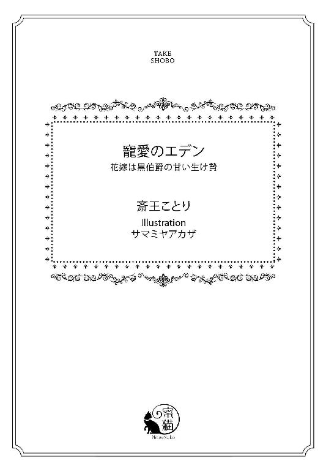
この作品は縦書きでレイアウトされています。
また、ご覧になる機種により、表示の差異が認められることがあります。
一部の漢字が簡略字で表示されていることがあります。
イラスト／サマミヤアカザ
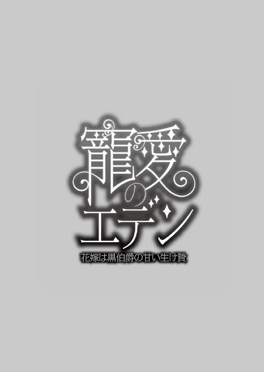
◆序章◆ 秘密の花園
「おいで、ヴィアンカ......中にお入り」
薄暗い院長室の扉を開け、緊張に満ちた表情で一歩中に入り込むと、案内をしてきたシスター・マーガレットがヴィアンカの背を押しながら、後方で扉を閉め切った。
すべてが支配されているかのような閉塞感に満ちた部屋で、ヴィアンカは足が凍ってしまう。
「ヴィアンカ・ド・ルセル。さあ、こちらへ」
再度、男の低い声に名前を呼ばれて、ヴィアンカはおずおずと、部屋の奥の大きな書斎机のほうに歩み寄る。
広く豪華な室内は片側には壁一面の高い窓がつけられているというのに、重い天鵞絨の緑のカーテンのせいで、隙間から忍び込む光以外ほとんど中に入ってこない。
「怖がることはない。叱ったりするんじゃない。いつもの〝検査〟だよ」
「は、い」
学院長の椅子は背もたれがとても高い。たてがみを持つ獣の頭が装飾された肘掛け椅子。
その豪華な椅子にどっしりと座っているのがこのセント・クレイド修道院に付属するクレイド学院の長、ザッハビル・ド・ヴァンス公爵だ。
普段はこの寄宿制の学院と隣接している修道院を長く勤めているシスター・マーガレットと、その弟のジェイドに任せて自分は貴族院の総長をしているという男。ここ以外にも、多くの寄宿学院を設立し、貴族の子女を清く正しく育て上げると評判を持つ。修道院や孤児院といった福祉にも手厚い、事業家としても名を馳せている四十代の男。
今、ヴィアンカが近づいていくその男は射し込む光の届かない部屋の奥で闇の色に同化しているが、逆光でもそのモスグリーンの上着の刺繍やボタン、そして袖口のカフスなど衣装の至るところが黄金に輝いているのがわかる。
褐色の髪。灰色の鋭い眼光。上質なシルクのタイ。エメラルドのカフスボタン。贅沢品で身を固めている彼が、背後に大きなチェストを背負った形で革の椅子にもたれかかっているのを見て、ヴィアンカは小さくおののいた。
この部屋に呼ばれて、机を通り越して院長の目の前に立たされる。彼は椅子を回してヴィアンカをじっと見つめると、すぐに肩に触れて、そして滑るように肘に、手に落ちてくる。ヴィアンカはこの学院に来て何度となくくり返されるこの〝儀式〟に未だ慣れることができずに、うつむきながら視線を落とす。院長の足元が見え、その真新しそうな靴がまたなぜか恐怖心を抱かせる。
「上を向きなさい。令嬢は意味もなくうつむくんじゃない」
男の指がヴィアンカの顎に伸びて、しっかり掴んできた。
正面に向けられて、学院長に頭の先からつま先まで舐めるように凝視されると、心臓が木槌で打ち付けられているような酷い気分になってくる。
見つめられるのは好きじゃない。この学院長の視線は、いつもねっとりとしてこびりつくようなもので、ヴィアンカはできるだけ彼から視線をそらそうとしてしまう。
いつもは全国を飛び回り、学院にはほとんど来ることのないザッハビル公爵だが、この学院の恵まれた施設や高等な教育理念、多くの有名貴族の子女が預けられていることが自慢らしく、それを誇示する機会として、貴族らを案内する見学日を月に何度か設けており、そのときは数名からの恰幅のいい立派な紳士たちが、授業風景や寄宿舎の様子を見学に訪れ、彼が案内するのだ。
その日以外、巡回でもなければ学院長がここに来て、経営業務に携わることは稀だ。なのに、彼がここに来たときにはまず必ずと言っていいほどヴィアンカはこの部屋に呼び出され、学院長に対峙させられる。月に数度。彼の前に一人で立ち、じっくりと姿を見つめられ、今の勉学の進み方や日常の過ごし方。社交界に出たときのマナーや、引き受け希望者が現れたらその家に養子として行きたく思うかなど簡単な問いかけをくり返されながら、身体検査を受けるのが常だ。
彼は、大きく太い指でヴィアンカの金色の髪を撫で、腰まである緩やかにカールする毛先を揺れさせては、制服である白いドレスの上から身体を撫でてくる。胸を大きなロイヤルブルーのシルクタフタのリボンが飾り、ウエスト回りには波打ち膨らんだカフスベルト。裾にも三重のリボン飾りが付いてる。学院長は胸もとに手を滑らせて、そして乳の育ち具合を見るように揉んだ。
「あ......ぅッ......んぅ」
ヴィアンカ・ド・ルセルは十六歳にしては細身で華奢な体型だったが、その乳房だけは年齢以上にふっくらと大きめに盛り上がっている。
「腰はずいぶんと細いのに、乳房は豊満になってきたな。貴婦人となるによい体型だ。ドレス映えするだろう」
満足げな息を吐きながら、学院長が胸を揉み、腰までいやらしい手つきでさすってくる。ヴィアンカは怯えながらも耐えるしかない。
（私には、この学院しか居場所がないのだから......）
このセント・クレイド学院にヴィアンカが来たのはいつのことだっただろう。確か七歳の誕生日の直前に、叔父のジル・ド・グリース伯爵に連れられてのことだったような気がする。
ヴィアンカと両親は領地巡回に赴いていたとき、地方の農園にある城で火事に遭い、両親だけが亡くなった。
兄妹はおらず、一人娘のヴィアンカは、叔父の城に預けられたのだが、すぐに叔父はこの貴族の子女が多く学ぶ寄宿舎付きの学院にヴィアンカを入れたのだ。
当時のことは、その悲惨な事故のショックもあってか、よく覚えていない。
いつも夢の中に出てくる燃えさかる焔に怯え、叔父にすがりついていたが、たった一人の肉親である叔父は、ヴィアンカを簡単に寄宿舎に放り込んで、クリスマスにも迎えにきてもくれない。手紙の一通さえ送ってもくれない。
だからヴィアンカは、クリスマスも新年も、夏の長いバカンスシーズンさえも、ほとんど生徒のいなくなるこの寮で、一人静かに読書をして暮らすのが常だった。
（叔父様は......私が邪魔なのかしら......）
そう考えると哀しくて、それ以上何かを考えることも放棄するようになってしまった。
外出も厳しく管理されているこの修道院で生活して、外の世界を知らずに育った。学院長に呼ばれて、〝検査〟と称してこうしてねっとりと触られるようになったのはこの数年だ。
「ヴィアンカ、もっとこちらへ。私の腕の中においで......」
そうヴィアンカに促すと、学院長は彼女の若枝のような身体を抱きしめてくる。
彼は敬虔なクリスチャンで、国中多くの修道院に多額の寄付をし、孤児院や、貴族の子女たちの教育の場である寄宿舎などにも、さまざまに献金をしているのだという。
（国王の信頼も厚く、王宮貴族の中では片手の指に入るような有力貴族だとも聞いているわ。敬虔なカトリック教徒であるそんな立派な方が、不道徳なことをするはずはないわ......）
ヴィアンカは男の大きく太い指で乙女の白い手の甲を撫でられ、いつしかもう片方の手が背中のボタンに伸びているのを感じている。制服を腰まで落とされ、コルセットとキャミソールだけになっているヴィアンカの肌を、じっとりと湿る掌が撫で回す。
ヴィアンカはそれを気にしないように彼の胸の紋章のバッジを一心に見つめる。
けれど、手はもぞもぞと小さく動きながらゆっくりとお尻に伸び、お尻の谷間に伸び、ドロワーズの中にも差し入れられて、コルセットのリボンまで解いてきた。そして盛り上がっている白い乳房の小さな突起が見て取れるほどになった胸に触れてくる。
「ン......あぅ......ッンぅ......」
柔らかな白い膨らみが、むにゅりと掴まれ敏感に震える。
「じっとしていなさい......いい子だ。そうだ。ヴィアンカ......可愛いぞ」
静かな低い声は、その奥底に微かな恫喝を秘めていそうで、ヴィアンカは身体が凍ったように動けなくなる。
男の手はヴィアンカの背中に片手を押し当てると、さらに自分に引き寄せて、そして背中から回した手で脇乳を揉む。もう片方の手でお尻を揉みながら、ときおり裂け目の間に指先を潜り込ませて、執拗に後ろの秘穴の縁を撫でてくる。
「ああ......ッんぅ......うぅ......」
十六歳の過敏で清楚な肌が、触れることに熟練している男の大きな手の中でぶるっと震える。
「コルセットなど、学院ではする必要などないというのに......」
そう言うと彼は硬く締め付けられていたボーン入りのコルセットをぐっと引き落とし、白い乳房を露わにした。乳首が硬いボーンに擦り上げられ、痛いほど感じてしまう。
「あ......ッ」
ヴィアンカは敏感な乳房の天辺の刺激におののき、身を引こうとした。
だが男の手が背後から押さえつけているせいで、腰を微かに揺らした程度では、とても逃れられない。
ヴィアンカの下肢に伸ばされた男の手は、そのままキャミソール越しに臍の上を撫で、恥丘の上に置かれ、秘裂の中にまでおりてくる。
そしてキャミソールを肩から下ろし、ドロワーズの口紐を解く。緩められた腰回りを、男の指はゆっくりなぞり、あまやかな秘裂の中に太い指先が挿入された。
「ん......ぅ、ひゃうッ......」
秘められた谷間に落とし入れられ、中をまさぐってくる大人の指をヴィアンカは恐れ、後方に後ずさりする。どんなに男の手が背中を押さえつけていても、足の付け根を割ってくる男の手と、しなやかな粘膜にぐりぐりと指を擦りつけてくる恐怖には逆らえない。ヴィアンカは身を捩って、男の身体を突き飛ばすようにして魔手から逃げる。
だが、男の手からやっと逃れられたと思ったのもつかの間、背後からいつの間にか忍び寄っていたシスター・マーガレットがヴィアンカの肩を押さえつける。
「いけない子ですね。ヴィアンカ。あなたは......学院長に逆らうのですか？ あなたの成長を学院長が直々に確かめているのですから、じっとしていなさいな」
シスターは、白い頭巾に黒いシスターの纏うワンピースドレスを纏っていたが、その胸にはロザリオは見えない。
「シ、シスター......で、でも......」
輝きのない、シスターの白い胸もとに、ヴィアンカは釘付けになっている。
彼女の表情はいつにも増して厳しく、尖った眼鏡の奥からは感情のない眼差しがヴィアンカを刺している。
「今までどおりしていなさい。従順に、されるがままになるのです。今まではそんなふうに逆らったことはなかったでしょう？ あなたはこのお方の言うとおりにすることで、素晴らしい人生が送れるのです。よい殿方のところに迎え入れてもらえるのですよ」
「そんな......。私......どこかに......もらわれるの......ですか？」
「ええ。いい子にして大人のすることに身を任せなさい。逃げたり逆らってはいけません。そんなことをしたら、酷い罰が下されます。反省室に二週間閉じ込められて食事はパン一つの生活を送りたいですか？ それとも鞭打ち百回の罰を受けて家に戻されたいですか？」
もう背中を押さえつけるのは彼女の役目のようだった。ヴィアンカの腕から絡まってもたつく袖が抜かれ、腰にたまった白いモスリンのドレスが床に落とされた。
シスターの手が唯一ヴィアンカの身体を覆っている白いドロワーズにかけられ、それも足元に引きずり落とされる。
「ちょうどいい頃合いだ。美しく変化を遂げ開花しそうな蕾になった。まだ十分育ちきっていない無垢な少女の身体をしている......」
男の漏らす低い声がヴィアンカを萎縮させている。
幼い頃も何度か裸にされたことはあった。でもそれはシスターが二人がかりで身体検査と称してやっていたことだ。ここ最近のように学院長の前で、すべてを脱がされ、秘部に指を挿入されたり胸を揉まれたりしたことはなかった。
真っ白な肌が薄暗い室内にぼうっと光りを纏うように輝く。
その白い肌。小さな胸の膨らみや、引き締まった小ぶりなお尻などを、男は眺めながら掌で愛撫した。そしてくるりとヴィアンカの身体を回して、背中を自らのほうに向けさせると、震えるお尻を撫でながら、後側から内腿に掌を差し入れ擦り上げてくる。
今度はヴィアンカは悲鳴も上げなかった。もう悲鳴を上げることも出来ないほど怯えきっていたからだ。
そして脚の間に差し入れられた男の手が、小さな雌芯に触れると、彼女はギュッと唇を結び、下肢を引き締める。
まやかしが体内に忍び込み肌を犯す。それが無垢な乙女の身体に警戒を与え、そして身体を閉ざすように自己防衛本能を働かせたのだろう。
だが、男は口元を微かにつり上げただけで、そんな些細な抵抗などものにもしなかった。ヴィアンカの片足を広げさせ、床の上でずずっと動かす。
シスターもそれを手伝った。
「あ......」
しゃがみ込んでヴィアンカの両足を開かせ、左右の靴と靴の間を開かせる。淫唇の間がすうっと冷気に洗われる。
「うぅ......」
男は小動物や馬を値踏みするように、ヴィアンカの黄金の髪を撫で、そして恐怖に粟立つ白い肌を丹念に撫で回す。
「どうでしょう。見事に美しく育っています。金髪碧眼の十六歳の娘。両親は事故で亡くなっていますが叔父が一人。その叔父に任されてこの私が今まででもっとも手をかけて育て上げた娘。伯爵令嬢という高貴な身分の娘です。とても〝いい〟と思いますが」
学院長は奥の応接ソファのほうに向かって話しかける。そのときになって、ヴィアンカは初めて向こうの大きな背もたれのある立派なソファに、人が座っていることに気づいた。
姿が見えないのはもちろん、微動だにせず、呼吸の気配さえ感じさせない人物で、まるで気づかなかった。だが、学院長がそのソファに向かって話していることは、ヴィアンカにもわかって急に顔が真っ赤に染まる。
「───ど、どなた......？ どなたかがそこにいるのですか？」
おどおどして、腕で身をぎゅっと絞り隠そうとするヴィアンカの手を学院長は掴み、その指先が乳房を射して、またヴィアンカは小さく喘ぐ。
「『いる』じゃないだろう。『いらっしゃる』と言いなさい。ありのままでいて大丈夫だ。じっとしていなさい。君の発育を調べるのも我が役目なのだから......」
学院長は小さな乳房を掴み、その先端にうっすらと色づく果実を見るとそれを指先でクニュリとつまみ上げる。
「あ......ぅッ」
「いい反応だな。敏感な身体だというのも、いい城にもらわれる条件だよ。ヴィアンカ......」
学院長に名前を呼ばれるのは嫌だった。指先からする葉巻の匂いが肌に移りそうで、それも嫌だった。
「今日は多くの大貴族が、この修道院とこのセント・クレイド学院の様子を視察しにいらしている。彼等がそばに来たら、にっこりと微笑み上品にごあいさつをするんだぞ。彼等はおまえのような高貴な生まれでありながら不幸にして両親と城を奪われ、身寄りを失った娘にとても同情的だからね。是非我が城にと迎え入れてくださる方も大勢いるのだ」
「では......それは......養女に......してもらえるということですか？」
「ああ。いい子にしていれば養女でも、結婚相手でも愛人でもいくらでも現れる。だから、殿方には愛想よくしなさい。こうして誰かが触れても、おまえは悦んで受け入れなさい」
学院長はまた、ヴィアンカの足の間の粘膜を押し広げながら、そっと指の腹で撫でてくる。前後に濡れた部分を擦られればヴィアンカの下肢はどくどくと血流をはげしくしてその部分に熱が集まる。指先が秘所をまさぐるたび、そこは中からにじみ出てくる蜜で濡れ、その蜜が次第にたっぷりと落ちてきて濡れそぼる。そのせいだろうか。彼の指が再びヴィアンカの蜜口にぬるりとすべるように挿入された。
「ああぁ......いや......ぁ」
こらえがたい感触に思わず身を大きく捩り、悲鳴を上げてしゃがみ込む。その身体を学院長が無理矢理掴もうとするので、ヴィアンカは必死に髪を振った。
「いやです......そこは......お願い......お願いですから......」
恥ずかしいことだ。裸にされて、押さえつけられて、肌や秘所をまさぐられている。
「うぅ......ッ」
乳首を両方の手できゅっと摘まれ、捏ねられる。
「あ......はぅ......ッ」
摘まれ、きゅっと捻られた乳首から頭の先に痺れが駆け抜け、子宮のあたりに疼きが走る。
立っているのも辛いほど、卑猥な刺激にヴィアンカは悶える。誰かがそこにいるかもしれないのに、こんな淫らな身体を見られたくはない。
そして男の胸に思わず手を添えてその刺激を散らしてしまいそうになったとき、隣室から物音がした。
「なんだ？ 誰かいるのか？」
控え室の扉に向かってヴァンス公爵が声を投げかけ、そしてヴィアンカの身体を抱いたまま机の奥の扉を開ける。
途端、向こうから黒ずくめの何かが飛びだしてきて、こちらに飛びかかってくる。周囲のカーテンが大きく揺れ、男と思われるその人物がヴァンス公爵を突き飛ばす。
「な、何者だ......！」
よろめいたヴァンス公爵をシスター・マーガレットが支えたが、そのとき抱いていたヴィアンカをとっさに離してしまった。
放り出されたヴィアンカを抱き留めた男は、シスター・マーガレットと学院長に向けてカーテンをわし掴んで引き裂き、一枚を彼等に向かって投げ、もう一枚を引きちぎると裸のヴィアンカに纏わせて抱きすくめた。
「きゃ......」
侵入者を捕らえようと、カーテンを取り払いながら飛びついた果敢なシスター・マーガレットも、再び突き飛ばされ頭を壁に打ち付けて脳しんとうを起こしている。
「───んぅ......っ」
驚きのあまり、ヴィアンカの呼吸も止まりそうになっていたが、男はそのまま窓を突き破ってひらりと外に飛び出した。
激しいガラスの割れる音が響き、衝撃がヴィアンカにも伝わってくる。
逞しい腕に抱きかかえられて、その黒いコートの男の胸に鼻先も、唇もすべてきつく押し付けられて、ヴィアンカは目眩を覚えたがなすすべもない。
（誰......誰なの......？）
この学院の院長室や事務室には何度か強盗が入ったことがあると聞いている。
ヴァンス公爵自身が国内外でも有名な大金持ちであることと、この学院自体も貴族の舘のように豪華であること、そしてこの院長室があるのが別館であるため、貴重な美術品や宝石があることを想像されて狙われたのではないかと言われている。
（まさか、強盗？ でも、大勢の貴族が学院の見学に訪れているその日に、しかも真昼に強盗だなんて？ 私、殺されるの？）
驚きと恐怖のあまり息ができない。今、靴と靴下以外何も纏っていない自分に何が起きているのか怖くて、恐ろしくて、ヴィアンカはふっと意識を失っていた───。
「なん......なんだ？ シスター！ 今の奴は......」
「申し訳ありません。すぐ護衛官をよこします。そして今の男を捕らえさせますから......！」
ヴァンス公爵が窓の外に乗り出して不審者の行方を追おうとしたが、シスター・マーガレットは飛び散ったガラス片の危険から、公爵を部屋の内側へと促す。窓から引きちぎられた深緑のカーテンの上に、キラキラと割れたガラスが輝き、微風が室内に流れ込んだ。
「マーガレット。騒ぐな。騒いでは......客人が......驚いてしまう......」
学院長が低く抑えて諫める声に、シスター・マーガレットは慌てて口を押さえ、そして奥のソファにいる人物のほうを窺うように視線を向ける。
「あの、伯爵様、申し訳ありません。ガラスはすぐ片付けますので何も問題はございませんわ」
シスター・マーガレットは、ソファの奥の〝伯爵〟に詫び、学院長もすぐに媚びるような声を向けた。
「ヴィアンカはすぐ連れ戻しますからご心配なく。それであの子はお気に召しましたか？」
ヴァンス公爵がソファの向こうに回り込んでこの場を誤魔化そうと必死だ。
ソファの人物は、隣室に怪しい男が忍び込んで、そして窓を割って少女を連れて逃亡したと言うのに、まったく動じてはいなかった。むしろ、事態を愉しんでいる気配がある。
「あなたの触れ方はいきすぎのようでしたが、あの娘の貞操は守られているのでしょうね？」
「もちろんです！ 誰もあの子の......蕾の先の〝楽園〟には挿入していませんので」
「───わかりました。では早く連れ戻してください。以前見たときに、もう気に入っていたのですよ。あの娘を買います。いくらでも出すので、早くあの子を抱きたいものです」
美しい青年の指がソファの背もたれから覗く。
「あの子は今隣国の王族も望んでいる金髪碧眼の処女。お値段は高くなってしまいますが価値はあります。さっきの盗人も、何を血迷ったか知らないがあの子に触れられただけでも幸運。この厳重な警備の外に出るなどできやしない。この学院の塀はとても高いのですよ」
ヴァンス公爵は、今もソファの向こうに座っている客人に向かって最高の作り笑顔を向ける。それからシスター・マーガレットを学院長室の外に連れ出すと、潜めた声で耳打ちした。
「早急に警備のものを手配し男を追え、ヴィアンカを手に入れろ。我が沽券に関わる。塀を越えられず、その辺に放り出されているはずだ。早急にヴィアンカを......捜しなさい。あの子は宝。磨けばまだまだ輝く巨大なダイヤモンドなのだから」
「承知しました。ではもうあの方と売買契約を？」
「そうだな。あれほど惚れ込んでいればこちらの言い値を出すだろう」
「ですがその前に、彼女の叔父上にもご報告をしませんと」
「ジル・ド・グリース伯爵か。もともとここに入れたときに私に全権を託したのだ。姪に高値がついたと聞けば事後報告でもいいだろう。没落した本家の再興にも繋がるかもしれないのだからな」
ヴァンス公爵は満足そうに歪笑した。
室内に取り残されていた客人は、そんなことをほくそ笑みながら話しているヴァンス公爵とマーガレットの背後で音もなく扉を開け、いつの間にか背後に佇んでいる。
「学院長殿。失敬、通していただけますか？ しばらく庭園を見学していますよ。彼女を捜し見つけたら呼びに来てください。金額のほうはそのときに相談を」
黒髪の美しい男は、その年齢のわりに落ち着き払って、冷酷なまでに表情を見せなかったがそう言って、黒いコートを靡かせて去っていく。
「ああ、伯爵。夜会にも是非ご出席を。なんでしたら、他の生徒の授業風景もご覧になりませんか？ お目に留まった少女がいましたらすぐにご用意いたしましょう」
ヴァンス公爵の提案に〝伯爵〟は乗り気ではないようで、「彼女でなければ意味がない」そう口を曲げて言うとそのまま一人で廊下の奥へと消えていった。
◆１◆ 運命の初恋の人
ヴィアンカが窓から連れ去られて、どれくらい経っただろう。ぼうっとした感覚の中でもわかるほど、ヴィアンカを担いでいる男はずいぶん丁寧にヴィアンカを抱いていた。
「どうだ？ 彼女は無事か？ 誰にも見られていないだろうな？ ミリオ」
威圧的ながら、澄んだ青年の声が遠くから聞こえてくる。
「レジオン様。もちろん彼女は無傷です。ただ......この有様はいかがいたしましょうか」
「そうか。裸か。いや、完全な裸ではないな。靴下と靴を履いている。だが、靴だけではな」
地位のある高貴な主とその従者。そんな二人の会話に思える。
（だれ......？）
「よこせ。この子は俺が運ぶ。部屋ではダメか。医務室か......それともあそこがいいか」
誰かがヴィアンカの身体を抱きとめてそして歩き出す。とても大きなうねりを感じる。担がれているのに、頼れる気配で心が落ち着いてくるのが不思議だ。
（誰なの......あの強盗？ 控え室に......侵入していたの？ それでどうして私のこと......）
大事なものが多い部屋だと聞く。預かっている貴族の子息たちの情報に関するもの。両親や王家の者に関する重要書類、成績書、親からの寄付金の出納帳、そういった書類から、高価な室内装飾品まで、金目のものも多い部屋だ。
（誰が何を......探っていたの......？）
「重いな......少女と言えど、意外と重い。せっかく脂ぎった狼の毒牙から助けたが、塀を越えるのは無理だ。かといってこのままここにおいて行くのも問題だ。あいつ、俺との約束を反故にして他の高額を提示した貴族に売るかもしれないからな」
「申し訳ありません。私が先走りましたでしょうか」
「いや。ミリオはよくやってくれた。でなければ俺が......飛び出すところだった」
唸るような低い声と、そのときヴィアンカを支えている指先に力が込められたので、やはり怒っているのだろうと思う。この人は学院長に怒っている。そして自分を助けてくれた。
（助けて......くれたの？ あの卑猥な行為から？ 学院長に秘裂を探られて......いやらしいところに指を挿入されたから、助けてくれた......の？）
扉が閉められた音がして、担いでいた手がヴィアンカの身体を柔らかなものの上に下ろした。
小さな衝撃と優しい感触。ゆるゆると開いた眼に、揺れるカーテンが見えている。
「───ヴィアンカ......ヴィアンカ。大丈夫だろう？ 怪我はないはずだ。どこか痛むか？」
誰かが優しく話しかけてくれている。
心の奥に呼びかけてくるような気遣いの声。
怖くても、目を開けなくては。この人は優しく気遣ってくれる男の人。両親を失って以来、シスターですらこんなに優しい声をかけてくれた大人はいなかった。
瞼がぴくっと痙攣し、ゆるりと瞳を光に晒す。
豪華なシャンデリアを背景に、誰かが自分を見下ろしているのが見える。
「あ......」
そこにいるのは、窓の青空を背に、黒い髪を艶やかに輝かせ、彫りの深い顔立ちには神秘的な影を纏い、輝く緑青の目を光らせた黒豹のような青年。
黒いコートには金色のボタンや肩章が輝き、黒いブーツは輝かんばかりに磨かれている。その軍服のような衣服が似合うほど背も高く、顔立ちもシャープで整っており、いままでヴィアンカはここで見かけたことのない人物だと思う。
その彼の際だった美貌を思わず凝視してしまったヴィアンカを、その美貌の青年はぎらりと輝く緑青の瞳で射抜いてきた。
黒の髪。鋭角な輪郭に、高い鼻筋。赤くて厚めの唇が引き結ばれている。
とても愛想がいいとは言い難い表情なのに、胸を突かれるような鮮烈な美貌の持ち主。
ヴィアンカは彼に射すくめられて息さえ止まってしまいそうだ。
こんなに妖しい美貌の青年を初めて見た。肌など蠟でできていそうなほど温度を感じない。
「あの......」
彼がヴィアンカの手首に触れ、そして手にしていたグラスを手渡してくれる。
「水を」
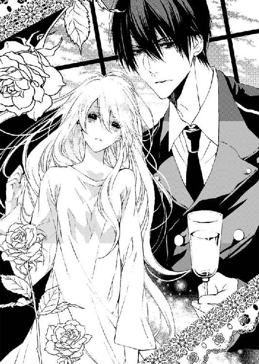
「ありがとうございます......」
その指先の感触や、感情を見せない冷静な声に、ヴィアンカは彼があのとき部屋のソファにいた人物であり、途中から担いで運んでくれた人物だと言うことを察する。
両親を失い、一人この学院に放り込まれてから、他人を見分けることについて妙に勘がよくなった。
思いやりのある人。心から優しい人。
そう見せかけておいて表面だけ取り繕って来る人。
でもこの人は違う。その冷えた美貌の奥の、懐の深そうなところをヴィアンカは見抜いている。彼は背後に控える褐色の長い髪を後で結わえた青年を呼びつけた。
「ミリオ。グラスを下げてくれ」
「承知しました。レジオン様」
この鋭い美貌の青年がレジオン。おそらく、最初に学院長室の隣室にいた人物が従者のミリオだろう。
控えめな雰囲気の誠実そうな青年だ。金の鎖の金時計をポケットの縁に覗かせ、黒い燕尾服に臙脂と灰色のグレンチェックのジレを着ているから、執事かもしれない。
「突然連れ出して、驚かせてすまなかった。俺が部屋にいたのに気づいていたか？」
「は、はい......」
ヴィアンカはあの部屋で学院長にされていた〝身体検査〟が急に恥ずかしくなって身をきゅっとすぼめる。身体を見れば学院長室のカーテンではなく、ゆったりした夜着を着せられている。
大きな窓の外に薔薇の花園と薔薇のアーチが見えるから、ここは自分の部屋ではなく、特別棟のような気がする。
男子寮と女子寮の間にある特別棟。そこには医務室や音楽室が入っており、一階には学生寮を管理する管理人の特別室がある。今の住人はこの学院の女生徒の憧れの的のロイス・ド・ヴァンス。
男女交際禁止のこの学院において、その姿を見るだけで女生徒の心を癒やす、性格も清らかな先輩。特別成績もよく、寮監督を務めていたロイスがそのまま二十一歳の大学院生になっても特別にこの学院の部屋を使っている。その彼の部屋だろうか。
（でもどうして......ロイス様の部屋に？ この人はロイス様と関係が？）
見知らぬ美青年の顔をじっと見つめるヴィアンカを、彼も見つめ返す。その黒髪と青緑の瞳に見覚えがあるのはなぜだろう。気のせいだろうか。そんなことを思いながら、彼の手が金の髪に触れていることに、ヴィアンカはときめきを感じている。
「あの、あなたは......」
「レジオン・ド・ブラッド。彼は執事のミリオ。ここは特別棟の監理者の部屋だ。知り合いだから勝手に入らせてもらった」
自分はロイスのベッドに寝かされて、院長室での卑猥な行為から救い出してくれた黒髪の王子のような凛々しい伯爵の前にいるということか。
「レジオン様。ありがとう......ございます......助けていただいたのですよね」
「気にするな」
どうして彼が、あの場から助けてくれたのだろう。どうして白馬の王子のようにあの最悪の気分になる学院長の部屋から、あの行為から救ってくれたのだろう。
「あの、でも......」
ヴィアンカは、自分がいつまでも横たわっていてはいけないと、もぞりと起きあがる。
「あの、レジオン様。手に傷が......私のせいですね？」
節のない綺麗な手の親指にガラスで切ったような鋭い傷があり今も血を滲ませている。
先ほどのガラスの破片がカーテンの端にでもまぎれ込んでいて、彼女を運んだときに怪我を負ったに違いない。
「すみません。あのすぐ手当を......」
だがヴィアンカが彼の手を取ろうとすると、彼はすっとその手を引っ込める。
「これくらい気にするな。それに主の怪我の手当なら使用人のミリオがするべきことだ」
レジオンが手を軽く背後に掲げただけで、そこに待ちかまえていたミリオが、レジオンの手に包帯をくるくると巻きつけ、小さく結んで止めた。
「俺のミリオは万能だから彼がいれば問題ない。君が気にかけるようなことは一欠片もない」
「はい......」
ヴィアンカは彼の手の傷が手当てされたことに安堵すると同時に、自分がまったく役に立てなかった脱力感でがっくりと肩を落とす。
「それより、起きあがると足が見える。見えない方がいいところまで見せつけるな」
起きあがったとき、身体に軽くかけられていた毛布がずれ、足の付け根まで夜着がめくれ上がって、太股の中までしっかりと露わになっている。
「あ......」
全裸だった状態で、無意識の乙女の身体に勝手に触れてはいけないと思ったのだろう。夜着の下は下着一枚つけていない。
ヴィアンカは顔を赤らめ、慌てて両手で裾を押さえる。
「ああ、それはシルクの繊細な刺繍が施されていますから、そんなに引っ張ると裂けますよ」
執事のミリオがおかしさをかみ殺しながら、やんわりと指摘してくれる。
「ミリオ、彼女のドレスを調達してきてくれ」
「承知しました」
万能執事の面目躍如とばかりにミリオは長い髪を肩からさらりと滑らせながら去っていく。
丁度そのとき、外から新たにこの部屋に入ってきた人物がいる。
鮮やかな青い眼を、さらさらした黄金の髪の下に覗かせた美青年だ。黒のジャケットにストライプのズボン。白の靴下に黒の革ブーツ。臙脂の大きめのタイを締め、手には教科書なのか、分厚い書物を何冊かバンドで押さえている。
「ロイス様......」
ロイス・ド・ヴァンスだった。
「ヴィアンカ嬢......。君だったのか。学院長室で倒れたって言うのは」
ロイスは、元は薔薇の庭園を挟んで女子寮の向かいにある男子寮の生徒だった。今では大学院に通っているが優秀さゆえ、寄宿舎の監督生のままここから近くの大学院に通っている。
父親はたいそうな金持ちで有力貴族らしいけれど、彼はその美貌と、文武両道、頭脳明晰ゆえに、父の権威に頼らなくとも大臣や官僚になれるのではないかと噂されていた。彼の部屋に入ったなどと女生徒たちに知れたら、ヴィアンカは無事ではいられないだろう。
優しい笑みをたたえた学院の天使が、ヴィアンカの傍らに来て不安そうにのぞき込む。
「ヴィアンカ嬢。どうしたの」
そんな表情一つでも美しい人だ。でも彼は〝いとこであるリリーの同室者〟としかヴィアンカのことを認識してはいない。名前を覚え、話しかけてくれるとはいえ、深い間柄ではない。そんなロイスに、レジオンは命じるように口を開く。
「ロイス。彼女を数日間おまえの部屋で匿ってくれないか。女子寮に戻すには......問題がある。二度と学院長に触らせたくないんだ」
レジオンの言葉は親しい人物に投げかけられるような砕けたもので、ロイスもレジオンを見ながらその傍らに椅子を寄せると、少し乱暴なくらいに無造作に腰かけて言った。
「レジオン。君の頼みでも急に来てそれは......困るよ。僕は......」
「仕方ないだろう。我が後輩よ。おまえ以外頼めるものはここにいない。俺だって、こんなことになると思わなかった」
「もしや、彼女が倒れたのは、学院長の〝検査〟でなのか？ そこから彼女を連れ出した？」
「そうだ。学院長室を訪問していた俺とミリオで助けた。本当は今すぐにもここから出すべきだが、そういうわけにもいかない。だから数日頼めないか。彼女は今も捜されている」
レジオンの言葉に、ロイスはそれまで見たこともない慎重な表情を浮かべる。
レジオンやミリオはともかく、彼はヴィアンカが学院長に淫らな行為をされていたことなど知らないはずなのに、何か感じ取っているのか。それともヴィアンカの顔色が異常を感じるほど悪そうに見えたのかもしれない。
「今すぐ学院外の病院に連れて行くことは......」
「無理だろう。学院長は、この学院の女生徒が勝手に外に出ることを禁じている。例え生死がかかっていたとしても学院長の許可がいる」
「誰の生死がかかっているんですって？ まさかヴィアンカじゃないわよね？」
戸口をそっと押し開いて、ヴィアンカの衣類を手にしたミリオと共に中に入ってきたのはリリーだ。
「ロイス様。ねえ、ヴィアンカが倒れたのですって？」
薔薇の女子寮で、数年来同じ部屋に暮らしている同級生、リリー・ド・ポウ。
「ねえ、ヴィアンカ、大丈夫なの？ あなたが倒れるなんて」
まぶしい光を背負って、美しいリリーがベッドに駆け寄ってくる。
「リリー。心配かけて......ごめんなさい。大丈夫......よ」
ヴィアンカは、そこに立つレジオンの顔をちらりと見て言葉を選ぶ。本当は倒れたのではないけれど、詳しい説明をするわけにもいかない。
「でも、なぜかしら。あなたのことシスターたちが捜しているみたいだったわ。それもこっそりと。何かしたの？ あなたがここにいることはシスターたちには秘密なの？」
「むろんだ、リリー。ここに運ばれていることを知られたら、僕も君もヴィアンカ嬢も規則違反で罰を食らうよ。この特別棟も、特別な事情がない限り女生徒は入ってはいけない場所だ。そういう面倒はいやだろう？」
「そうだったわね。ロイス様。でもヴィアンカをお医者様に診せないと。もういらしたの？」
「まだだよ。まだ今は学院内に客人たちがいる。医者だなんだと騒ぐと大事になりかねない」
「学院長は学院長室にいらっしゃるのでしょ？ 私も呼ばれているの。そのときにヴィアンカをお医者にと言ったらダメかしら。学院長にもシスターにも言わないほうがいいのね？」
リリーは顔を斜めにしてのぞき込み、美しい紫色の目をヴィアンカに向ける。
彼女は宮廷貴族の中でも由緒正しい家柄のポウ公爵家の十番目の令嬢だ。修道院に入れられてレディ教育を施されている。ヴィアンカのもっとも親しい友人だった。
おっとりとしていて、美人。ヴィアンカは、ここに来て初めて得た友達に嬉しくて、しばらくは自分の両親と城での生活のことも忘れられた。気位の高い貴族の令嬢たちも多い中、十五人もの兄姉に囲まれて育った末娘の彼女は、屈託がなく、とても接しやすい少女だった。
両親を亡くしてこの学院に預けられたような訳ありの生徒も多い中、マナー教室のようにこの学院を使っている何不自由のない令嬢たちは、あまりヴィアンカのような孤児に近づきたがらなかったが彼女は違う。とても仲のいい親友になれた。
それでも両親と優美な尖塔の数え切れないほどそびえ立つ美しい城で過ごした日々を、ヴィアンカは最近、特に思い出すようになっている。
（お母様とお父様のお城に帰りたい。叔父様はいつになったら迎えに来てくれるの......）
「ねえ、学院長のご用は何だったの？ 叔父様からのお手紙とか？」
「え......ううん。そうじゃなかったけれど......」
あの部屋に呼び出しては行われる院長の怪しい行為と面接。それは他の生徒たちにも行われているのだろうか。
『いいですか？ ここでの〝検査〟も出来事も他言は無用です。たとえ同級生であっても一言でも話したら、私にはすぐわかります。厳しいお仕置きと放校が待っていると思いなさい』
シスター・マーガレットはいつもそう言って恐ろしい目で念を押した。だから今まで誰にもそれを訊けなかったけれど、あれはとても大きな意味を持つ行為じゃないだろうか。
「さあこれを。レジオン様の執事様に下着は渡せないものね」
リリーが手に持った衣服を差し出してくる。彼女もレジオンを知っているらしい。ヴィアンカは少し疎外感を抱いたものの、すぐ笑みを向ける。
「ありがとう」
「私もすぐに学院長室に行ってくるわ。戻ってくるまでここにいてね」
「え？ リリー。あの、今から......学院長室に行くの？」
ヴィアンカはよからぬ不安に胸が騒ぐ。まさか、自分と同じような目にリリーもあっているのではないか。でも彼女はそんなことを感じさせないほど、おっとりと笑っている。
「きっと今度のクリスマスパーティーのことでお父様から手紙が来たのだと思うわ。そうでなければ、結婚相手を決めたから戻ってこいという話かもしれないわね」
「結婚？ まだ十六歳なのに？」
渡された下着を指に握りしめながらヴィアンカは不安な声で訊き返す。
「十五人兄妹の末っ子で十番目の娘でしょ？ 特別器量よしでもなく、賢いわけでもないから政略結婚の駒として以外使えない娘だって思われてるの。最高の権力者でお金持ちのおじいさんに嫁がされそうよ」
「そんな......」
ヴィアンカは屈託なく話すリリーの褐色で細かなカールがかかった少女らしい髪を見つめる。彼女のその紫の瞳がロイスに向けられ、ロイスも彼女を見つめているのを知っている。
二人ともいとこ同士でいながら、相思相愛の仲のいいカップルだ。
「この学院にいる貴族の令嬢は、皆花嫁修業のために入れられたようなものだもの。ここを出るときは結婚相手を決められたときよ......。そんなのいやだけど......」
彼女の政略結婚の話など彼も聞きたくはないだろう。ロイスもリリーを好いていても、おそらく父親の決めた令嬢と結婚させられるに違いない。
（両親が健在で戻る城があってもそうなのだもの。私はもっと色々我慢しなくてはいけないわ）
「じゃあね、戻ってくるまでヴィアンカはここで休んでいてね」
「リリー、僕もついていくよ。学院長には僕も話したいことがあるからね」
金色の柔らかな髪を天使のように靡かせ、首元のタイの大粒のエメラルドタイピンを輝かせたロイスもリリーのあとを追って部屋から出て行ってしまった。
ヴィアンカは、ほうっと小さく息をつき、張っていた肩の力を緩める。
二年前までは制服姿だったロイスも、もう立派な貴族の格好をするようになっている。
以前より凛々しくなったロイスの後ろ姿をまぶしい思いで見つめていたヴィアンカに、レジオンが厳しい眼差しを向け、問いつめてきた。
「──ロイスのことを......好きなのか？」
「え？」
「ロイスのことが好きか？ この学院の女生徒のあこがれの的だからな」
「いえまさか。そんな。ああ、あの頼れる方だと尊敬しています。でも恋ではないですから」
「ふん」
──『ふん』？ 優しい行動は十分伝わってくるのに、なんて変わった反応をする人だろう。
ヴィアンカは何か怒らせるようなことをしたかと悩みながら黒い髪に縁取られた美貌を見つめる。凄みさえ感じる美貌は近寄りがたささえあって、なのに今鼻で嗤ったような顔はどこかむっとした怒りを見せる幼い表情だ。ヴィアンカはいっそう彼に興味を引かれる。
「さあ、着替えをされたほうがいいですよ。ヴィアンカ嬢」
「ミリオ様。それからレジオン様にも深くお礼申し上げます」
「レジオン・ド・ブラッド伯爵だ。礼には及ばない。あんなおかしな行為は見ていて不愉快だからな」
「そういえば、ミリオ様とレジオン様はあそこで何をしていらしたのですか？」
「そういうプライベートなことを君に話す必要はないだろうな」
レジオンが突き放したいい方をすると、それを緩和させようとしてかミリオがヴィアンカの足にドロワーズを通してくる。まるでヴィアンカの使用人のように丁寧に下着のすべてを着せつけてくれて、その手慣れた指先にヴィアンカは照れる間さえ与えられなかった。
ミリオはヴィアンカの髪も綺麗に梳いて、髪飾りをつけてくれる。
「さてロイスがここに君を数日おく気があるかどうかな。あいつも学院長には従順だから」
ヴィアンカは改めて頬を染める。彼は自分の裸を見ただろうか。ずっとソファの背もたれ越しだったから、ヴィアンカには彼の姿も見えなかったが、彼は自分を見ていただろうか。
「あ......の......」
「なんだ。君の裸など見てないから安心しろ。背中に目がついているわけないだろう。あそこには、学院への援助のことで話をしにいったんだ」
「あ、そうですか......あの......」
やはり不思議だ。彼は自分を助けてくれた上、ここに付き添ってくれていた。その上意識が戻ってもすぐに帰ろうともせず自分の今後まで心配してくれている。学院内の構造にも明るそうだったし、ロイスとも知り合いだということはここの関係者だろうか。
「あの......レジオン様はこの学院になにかご縁があって......ロイス様と？」
ベッドからソファに座を移したヴィアンカは、その美しい黒髪の青年を遠慮がちに見つめ、疑問を口にする。
「この学院には以前いたことがある。学院長がさらに教育の強化をして留学も視野に入れたいと貴族たちに資金援助を募っているからね。それが生徒のために使われるのなら俺も援助しようと見に来たんだ。ただ、援助や寄付とは名ばかりで別の意図に流用されたり、寄付の多い者に別の利便を計らっているという告発があり、それを調査確認に来たというのもある」
「利便......」
「そう。こういう施設は一見善意で運営されているように見えて、実は政治的要素、黒い組織や裏金的なものも絡むから。君も気をつけたまえ」
レジオンはミリオに出された紅茶のカップを手にとって、優雅に音もなくすする。
ミリオはヴィアンカにも温かなカップを勧めてきて、それを喉に落とすことでヴィアンカの心もだいぶ落ち着いてくる。
（見知らぬ人なのに......リリーやロイス様が一緒ならともかく、私、この人たちとは初対面で、あんなにあられもない姿を見られてるのに......）
〝婚約前に男性と二人で部屋に入ってはいけない〟〝素肌に触れさせてはいけない〟。そんな学院長の教えがよぎったが、今は二人きりではない。学院の規律に反してもいないはずだ。
「俺が怖いなら......出て行こう。あとはミリオに任せるが？」
「いいえ......、怖い......なんて全然......」
むしろこれほど美しい男の人が、学院の外にはいるのだということが怖い。
今まで外の世界に触れたことのないヴィアンカには、レジオンが外の世界でもっとも美しい人なのかもしれないとさえ思える。この学院でもっとも美しいと思っていたロイスよりも、これほどときめいて、心がわし掴みにされているのだから。
「学院長は怖くなかったか？ いままでもずっと、奴は今日のようなあんなことを......」
「え......」
レジオンの冷静だと思える寒色の瞳は、いつしか室内でもっとも熱くぎらついている。
怒っているのか、憂えているのか、そっとヴィアンカに伸ばしていた手を彼は誤魔化すように引いて、紅茶のカップを手にとった。その彼の上着の下に覗く水色の封筒。ヴィアンカはそれに見覚えがあるような気がしたが、はっきりとはわからない。なんとなく胸に引っかかる小さな棘となってその封筒の色が焼きつけられた。
「レジオン様。そのようなことは後にされては。ご令嬢はまだ動揺しておりますから」
答えに窮していたヴィアンカを見かねて、ミリオがやんわりとたしなめる。
「そうだな。すまない」
その類い希な容姿と近づきがたい尊大な気配から、使用人は彼に口出しなどできないのではないかと思われたが、意外にもレジオンは素直に諫められ、そして素直に謝罪した。
（やっぱり一見取っつきにくいのに、素直で親切な人なの？ レジオン伯爵様は......）
レジオンは、仏頂面でベッドの上にくしゃくしゃになっていた毛布を見つめていたが、それを取ってヴィアンカの肩にかけた。会話がはずむわけでもなく居心地が悪そうなのに、ここにいるのは、ロイスを待っているのだろうか。
（いいえ。私を一人にしないように......だわ。万が一ここに捜索の手が及んだら、私はまた学院長の部屋に連れ戻される。そしてすぐに、大金で貴族に売られるかもしれないから）
「遅いですね。リリー殿もロイス様も」
ミリオがポットに熱い湯を持ってきて三度目のお茶を注ぎ、クッキーとタルトを勧めながら、言う。窓の外はいつしか薄闇が迫ってきていて室内には灯りが必要な頃だ。
「そうだな。来客の貴族もそろそろ別棟の学院長の広間で寄付金集めのパーティーに出席している頃だ。もしかしたらリリー嬢もロイスもそのパーティーに出席したのか？」
「さきほど学院長室を見てきましたが無人でした。下働きの者を懐柔して彼女の個室も見に行かせましたがいなかったのでそうかもしれません。もう一度見てきます」
ミリオが去ったあと、レジオンは立ち上がり、薔薇園が見えるのとは逆の窓辺に立つと、その闇に目を凝らした。
外にはうっそうとした木立があり、その向こうに豪華な屋根飾りの別棟が、煌々と光を灯しているのがかいま見える。
「まさか、私のせいで何かあったのでしょうか。リリーとロイス様に何か」
「大丈夫だ。何があっても君のせいじゃないから......」
レジオンは動揺するヴィアンカの手に手を重ね、握り締めた。その力づけ安心させるような温もりが、ヴィアンカを落ち着かせる。
「あの、私が捜しに行っていいですか？ こっそり行けば見つからずに......」
「君自身が学院長に捜されているのに？ 今度見つかったらそのまま塔の地下室に監禁されて、金持ちの王侯貴族に愛人として売り飛ばされるぞ。それでいいのか？」
鋭い瞳がヴィアンカを刺す。
「それは......」
「君には行かせない。君が行くくらいなら俺が行く」
「───ど、どうして......そんなに私に親切にしてくださるのですか」
おずおずとレジオンの美しい顔を見上げて尋ねる。
「───行きがかりだ。それに言われるほどたいしたことはしていない」
ぶっきらぼうに言って視線をそらされたが、ヴィアンカにはとてもそれが『たいしたこと』に思えてならない。
ブラックダイヤモンドのように艶めく髪も、鋭い瞳も、ヴィアンカにはとてもまばゆく妖しく輝いて見える。
（この人が、私を迎えてくれる貴族ならいいのに......この人なら初めてでも怖くないのに。こうして初めて会って、部屋に二人きりでもこの人なら嫌じゃないのに）
ヴィアンカがレジオンを見つめて唇を噛みしめている間に、レジオンは窓の外から合図を受けて身を翻した。
「ミリオの合図が来た。ここから出るぞ」
「え？ あの......それは無理です。私は学院長の許可なしに学院から出られません」
「だめだ。もうこれ以上学院長の元には置いておけない。親元に送る。どこだ？」
「叔父の城は......オランジュリバーの......近くの丘にあります、両親と暮らした城は......でも......でもそこにはもう......」
両親が事故でなくなり、あとを継ぐはずだった自分が寄宿舎に入れられてしまった。あの城はもしかしたら叔父にもう売られてしまっているかもしれない。
「とにかく、ここにこれ以上いても見つかる危険が増え、捕まるだけだ」
レジオンはヴィアンカの腕を掴むと、ロイスのクローゼットを乱暴に開け、中から小さめの服をとりだしてテーブルの上にばさっと置いた。
そうしてせっかく着ていた夜着を脱がそうとするように、胸の編み上げリボンを解く。
ヴィアンカのほっそりとした身体には不似合いの大きな乳房が、彼の手の中でほろんと揺れながら膨らみを露わにした。
「あっ......ぁ......んぅ！ な、なに......を......するので......す」
学院長の卑猥な行為を思い出して肌が粟立つ。だがレジオンは意に介さず手を進めていく。
ヴィアンカが両腕で潰す胸の膨らみを、手を掴んで開かせると、小さくため息をつき、向こうのチェストに戻って包帯を手にしてくる。
ヴィアンカの前に立ち、「乳房をかくすな。いいな。動くんじゃない」そう唸ると、やおらヴィアンカのむき出しの胸に包帯を巻き付け始めた。
「あの......私をどうするつもりですか？」
白い乳房は、きつく巻き付ける包帯が肌を縛めるたびにむくりむくりと柔肌を盛り上げさせる。それでもレジオンの手慣れたやり方で、大きな胸は包帯にすっかり覆い尽くされていた。
「許可証なしにこの学院から少女が出ることは固く禁じられている。女生徒は門番にも塀回りの監視人にも問答無用で捕まってしまう。だからそう見えないようにする」
身じろぐヴィアンカの顎を押さえつけると、彼は冷静に告げ、ヴィアンカをロイスの過去の制服に着替えさせようと試みる。
だがシャツは袖が長く丈も長い。ズボンは裾を織り込んでもどうしようもないほど丈があまる。彼は途中で断念して上から男物のコートを掛け、帽子をかぶらせて誤魔化すと言う手段に出た。
靴は、小さめの男物のブーツなら、編み上げを絞れば歩いても脱げない程度に調節できた。
「これならまあまあか。髪もコートの中に入れて隠せば......美少年に見えなくもない」
レジオンは鏡の中に映るヴィアンカの姿を見て唸る。そして満足したのだろう。即座に彼女の手を引き、外に出て裏庭の木立の中を灌木の間を縫うようにして走る。
すぐに石畳の広場に出て、その噴水回りに多くの馬車が止められている光景が見えた。
学院長の別棟が、優美な尖塔を四方に尖らせ建っている、レジオンはその方を警戒するように睨んだあと、やってきた馬車の中にヴィアンカを押し込んだ。
「レジオン様、見つかってはおりませんね？」
「ああ」
馬車を寄せてきたのは、同じく丈長の黒いコートに身を包んだミリオだった。
「学院長は、警察にも依頼してヴィアンカ嬢を捜すつもりのようです。今までも逃亡した令嬢はいたはずですが、今度は本気です。高値でも競るような買い手がついているので必死なのでしょう」
ミリオはレジオンだけに聞こえるように囁いたが、耳をそばだてていたヴィアンカにもほとんど聞き取れてしまった。この夜の寒さ以上に寒気を覚えて震えあがる。
この時間に帰る貴族はおらず、そしていつもの学院内覧日よりもずっと多くの客人が訪れていることが、石畳を埋め尽くす馬車の数でわかる。
「あの、ミリオ様。リリーは見つかってないのですよね？ 学院長室にも部屋にも......」
重くのしかかる不安が胸を打つ。ヴィアンカはミリオに問いかけたが、彼は曖昧な表情で頷いた。
「ロイス様は寮監督としてパーティーに出ておられたようですが、リリー様は......。緊急にご両親のもとに帰られたのか、お部屋にお荷物もありません」
「荷物もなくなっていたのですか？ そんな......どうして。まさか......」
もしかしたら自分の代わりにされたのかもしれない。あのときの学院長の口ぶりでは、自分はすぐにもどこかの貴族のところへやれるようなことを言っていた。だからこそ蕾の深い部分まで、指で犯していたのかもしれない。
「私がいなくなったから......代わりに今日来ていた貴族の誰かにリリーが引き取られることになるの？ リリーがその貴族の城にやられてしまう？」
「そんな想像はいい。誰より危険なのは自分だぞ。先に無事にここから逃げることを考えろ」
ヴィアンカの不安を一喝したレジオンの前でミリオは一礼し、馬車の扉を閉めると自分は箱馬車の背後のステップに乗り込む。彼がバーを掴むと、御者がそれを合図に馬を走らせ始めた。
レジオンはヴィアンカの男物のコートが不自然でないように直して、帽子もしっかりとかぶらせる。
馬車は、高級な馬車の並ぶ列から抜け出し、正門へのアプローチを進む。
「レジオン・ド・ブラッド伯爵様の馬車です。もうお帰りになるので開門を願います」
門前で馬車を止められた御者がそう言って、いぶかしむ門番を押し切るように開門させると、その鉄格子の扉を抜けていっそう速度を上げて走り出す。
背後に漂ってくる宴の楽団のにぎやかな調べを聞きながら、そして消灯時間を厳守している生徒たちの黒い窓が幽玄と並ぶ寮館の黒い影が遠のくのを見ながら、ヴィアンカは胸を押さえる。学院長のもとにはもう戻れない。今はレジオンの言うことを聞き、学院の高く聳える塀を出るしかないと決意する。
塀を越え、外に出たのは九年ぶりだろうか。まだ子供の頃、みけんに皺を寄せ気難しい顔をした叔父の馬車に乗せられて、学院の正門をくぐった。それ以来叔父は一度も会いに来てはくれず、あれから今日まで一度も敷地の外に出ることはなかった。
「君の城に送っていく。オランジュリバーの川沿いにある城か。この先だとカールトン城とスワン城......それから......ジオティク城あたりがある。どの城か」
「え......あ、は......い......」
親切な人だ。さっきは何をされるのかとも思ったけれど、質素な男もののコートを纏い、長い髪を束ねて服の中に押し込み、帽子を深くかぶればヴィアンカでも若い従者にしか見えない。そういうことだ。
「どの城かと聞いている」
親切な行動と裏腹に、言葉は基本、素っ気なくて、視線もあまり合わせようとしてこないのはシャイなのかもしれない。
「は......い。あの......私、子供の頃に両親が火事で亡くなって、そのまま叔父の元に預けられたのです。当時の記憶はあまりなくて......そしてすぐにあの学院に入れられたので......叔父の城の名前もさだかではなくて......。確か......夏に白鳥が来る湖があって......」
「白鳥城か？ きっとそうだな。このあたりではそこしかない」
叔父は、成長した自分が突然訪れても、わかってくれるだろうか。城に迎え入れてくれるだろうか。揺れる車上の中で、ヴィアンカは不安を覚えた。
馬車は軽快な馬の蹄の音と共にどんどん学院から遠ざかり、街を次々越えている。
ヴィアンカの前に座るレジオンは目を伏せたまま車窓の方を向いている。その目に外の風景が映っているのかどうかわからなかったが。ヴィアンカは、部屋から何も持ち出せずに手持ちぶさたで、膝の上でもじもじと指先を重ね合わせる。
でもそれもマナーとして禁じられていたことだったと思い出して、そっと指を離すと窓の外を見た。
街を抜けて麦畑と葡萄畑の連なる郊外ばかりを走ると、対向してくる馬車もほとんどない。同じ方向に走る馬車も少なく、この馬車が性能のいい走行性の高い馬車だということもあってか、追い抜いていく馬車もない。
暗い外を見つめるヴィアンカの目に、ひっつめにした髪と、男もののコートを着込んでいる自分の姿が揺れるガラス窓に映る。そして対照的に美麗に着飾っているレジオンの姿も映っていてヴィアンカは窓の中の彼の姿にうっとりと見とれた。そのガラスのように透明感のある美貌でいながら、伏し目がちにした憂えたような眼差しが、含みのある妖しさも見せている。
綺麗すぎて、自分が同じガラスに映ることすらおこがましい。そう思ったとき、窓の外を並行して走る馬車があった。かなりの速さで飛ばしているのだろう。緋色のカーテンが開いておりその中を覗くことができたせいでヴィアンカは中の人がどのような人物かかいま見る。
「───あ......？」
栗色の豪華に巻かれた長い髪。白い肌に、男の指がくい込んでいるのが見えた。
肩からパフスリーブの袖が引き下ろされ、胸はすべて露わになるほどコルセットからもドレスの胸もとからも飛び出している。そのころんと形のいい乳房も、彼女の背後にいる男の指がくい込んで、いやらしいまでの深さで揉んでいる。
男の手が少女の柔らかな乳房にくい込んでいくあの様を、自分の身体に起きていることのように感じてしまってヴィアンカは胸にぎゅっと握った手を当てる。
「うそ......」
彼女が男の激しい指使いに悶えて、顔を歪めた。そして唇を淫らに開けて窓のほうに顔と指先を押し付ける。
その顔がリリーによく似て見えて、ヴィアンカは息が止まるかと思った。
「リリー......？ まさか......リリーなの？」
男が少女の身体を自分の胸に引き寄せて、彼女の顔は馬車の奥へと消えてしまう。代わりに何も纏っていない白い尻がかかえ上げられ、ヴィアンカのほうに突き出された。
真っ白な盛り上がった柔肌に男の関節が浮き上がった指が這い、谷間に下ろされていく。彼女の谷間がひくひくと喘ぐのが光るガラス越しに見えて、ヴィアンカは悲鳴を上げた。
「や......やめて！ お願い。馬車を止めて。降ろしてください。助けなくては......」
「どうしたんだ？ 君！」
レジオンが馬車のドアの取っ手を掴み、押し開けようとするヴィアンカの身体を押さえつける。
「リリーが......あの馬車に......」
彼女が犯されながら男と共に乗っていた馬車は、レジオンの馬車がスピードを落とした隙に走り去り、その後方のランプの光さえ、木立の向こうに見えなくなってしまっていた。
「降ろして......ください！ 酷い行為が......あの馬車で彼女が犯されてる......助けないと」
「あの馬車に誰がいるって？ 何も見えなかったぞ！」
「リリーだと思うの。彼女があの馬車の中で男の人に......助けないと。ロイス様に言わないと」
「彼女じゃない。違うんだ。黙れと......言っているのに」
ふいに、レジオンがヴィアンカの肩を掴んで引き寄せた。顔に彼の大きな影が広がったかと思うと唇に温かなものが押し付けられる。
何が起きたのかわからなかった。
「うぅ......や......」
力を込めて彼の身体を押し返す。だが突きだした手首を彼の手に容易に掴まれ押さえつけられてしまう。
それでも暴れようとするヴィアンカを窓に押し付け、両手を高く頭上に押し付けると、レジオンは唇をよりしっかりとあてがい、叫ぼうと開いた唇の中に舌先を潜り込ませてくる。
「や......やめ......て......くだ......さ......ぁ」
「やめないぞ、おまえが俺のいうことを聞かない限りやめない」
「ん！ うんぅ......ッ」
開いた唇に栓でもしようとするかのように彼の熱い舌先がヴィアンカの口腔に忍び込み、中をねっとりとまさぐってくる。生き物のように蠢く彼の舌を、ヴィアンカの舌は避けようと逃げまどうが、やがて捕らえられ、強く締め付けられてしまう。
「うう......んぅ......ッ」
声も封じられ、息さえするのが苦しいほど。彼の舌先はヴィアンカの中を占領してくる。
舌を絡めとられて強く吸われて、初めてのディープなキスがヴィアンカにレジオンの強さを覚え込ませる。熱い唇。ぬめつく舌。彼の愛技にまともな意識も溶かされて、とろとろにされてしまう。
「ぃ......や......んぅ......ふぁ......ッん......」
溢れる唾液が、舌が激しく挿入されるたびに唇から流れ出す。
ヴィアンカはその感触が恥ずかしくて唇を閉じようともがくが、レジオンはそれを許さず、きゅっとヴィアンカの舌を吸い上げ、舌先で逃げまどう乙女の無垢な舌の付け根や歯茎を舐め上げ、艶めく快楽を繰り返し植え覚え込ませた。
「ん、う......ぁあ......ンッ！」
「───うぅ！」
ヴィアンカが必死に口をもぎ取ろうとした際に、彼の唇に歯を当ててしまったらしい、彼が小さく呻いた。
ようやく微かに離された唇から、二人の絡み合った唾液が銀糸のように輝く。
微かな血の味にヴィアンカははっとして目の前の整った顔を見る。レジオンの官能的な真っ赤な唇の端から、それ以上に鮮やかな血の粒が浮かび上がる。
「あ......、ごめんな......さ......」
謝ろうと思ったのに、レジオンの目はきつくすがめられて、そのまま再び唇を押し付けられた。
「んぅ......や......ぁ」
「黙って......受けろ。......俺がいいと言うまで黙ってこの唇を......舌を咥え込め......」
秘められた声。脅迫するような言葉なのに、従いたくなるほど心地いい。
唇に吐息がかかるだけでときめいて、恐ろしい囁きなのに下腹部がぞくりと疼く。レジオンは片手でヴィアンカのほっそりとした手首の両方を束ね、もう片方の手は背中からお尻の膨らみに落ちていき、すぐにその柔らかな双丘を揉み始める。
「う......」
「気持ちいいか？ 今喋ったら......声を上げたら......それはよがり声だということだぞ？ 気持ち良さに喘ぐのか？」
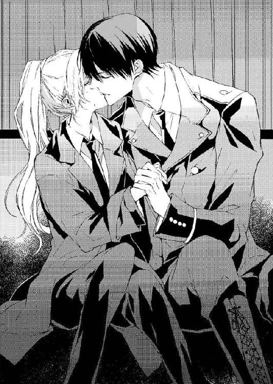
ヴィアンカは、酷い言葉を甘いトーンで囁かれて、ぐっと喉の奥に喘ぎを抑え込む。
それが喘ぎなのか、悲鳴なのか、罵倒したいあまりの声なのかわからないまま、ただひたすらこらえる。
「その表情......初めて見た......初々しいのに、とても淫らな顔だ......」
そう囁きながら彼は、ヴィアンカの下唇を鳥がついばむように挟んでは咥え、そして柔らかな粘膜を舐め上げてくる。
口唇の愛撫を繰り広げながら、いつしかお尻を揉んでいた指先は、足の付け根の間に滑り込んできて、粘膜を求めるようにヴィアンカの双唇へ忍んでくる。
「うぁあ......ッ」
思わず喉から声が漏れる。
すかさずレジオンはヴィアンカの喉を押さえつけ、そして仰向けにして唇を思い切り深く吸った。舌先も、溢れる唾液も彼に吸われていく。
「奴は......学院長はおまえにどこまでした？」
「ッう......んぅう......」
ヴィアンカは、意識さえ朦朧とするような激しい口づけに、下腹部が砕けそうになるのを覚える。こんな愛撫は学院長さえしなかった。学院長の指先はただ淫らで、でもレジオンのそれは抑えきれないような愛情に思えるのはなぜだろう。
「こんな......こ......とは何も......して......んぅッ」
彼が自分に愛情を抱いてこんなことをしてくるなんて、自意識過剰もいいところだ。
「嘘を言うな。俺の前でもあんなふうにされていた。あの学院の多くの孤児は皆ああいう調教をされるんだ。そうして身体をどんな娘よりも淫らにされて、求める貴族に売り飛ばされる」
「う......そ......そん......なぁあ......ンッッ」
必死に手を彼の服に絡ませてしがみつくも、『ねだっているのか？』そう囁かれて悔しい。
「わかった。もう言い訳はいらないぞ。口を開くな......」
冷酷にも思える言葉なのに、魔法にかかったように従ってしまう。
どれだけ抱きしめられ、触れられながら口づけを受け続けただろう。ヴィアンカはさっきの馬車の中でも、あの行為が無理矢理にされていたわけではないかもしれないと思い始めていた。
レジオンにされていた今の抱擁は、身体の底から熱がこみ上げてくるように心地よかった。
甘くて酷い責め言葉が、こんなに心を蕩けさせるなんて思ってもいなかった。肌を淫らに這う男の指先はいかがわしいのだと、学院長が自分に歪曲した知識を与えていたのかもしれない。そう思えるようになっている。ただ抱きしめられているだけで、蕩けるように心地よい。
（───レジオン......様......）
「大丈夫だ。もう口づけなどしないから」
「───え......」
彼はヴィアンカの身体を離して、そしてまた前方の向かい合わせの席に移動して腰を据える。
このまま、隣にいて抱いてくれてもいいのに。密かにそう思っていたヴィアンカは、彼に身体を離されて、自らの甘い考えを恥じて顔を赤らめる。
「すまなかったな。謝罪する。もう今のようなことはしない。だからおまえも俺に今のようなことをさせるな。感情をぶつけるな。俺は女性は好きじゃないからな」
「───え？」
最後の言葉に思わずヴィアンカは目を見開いて、彼の唇を凝視してしまう。
「だから......今のような破廉恥な行為は......いくら女性が動揺していても、そうそうする行為じゃない。それだけは言っておく」
ヴィアンカは、几帳面にそう言うレジオンを唖然として見つめ、彼は女性が嫌いで男性が好きなタイプの人なのだろうかと落胆する。高貴な趣味で同性愛と言うものがあることは、リリーに聞いて知っていた。美しく学のある人ほどナルシストで異性に興味を抱けないのだと。それが本当ならレジオンはまさしくその定義に当てはまる。
「それから、リリー嬢のことよりも、自分のことを気にしろ。金髪碧眼の十六歳の貴族の少女など男たちの前に吊せば入れ食い状態だぞ。高く売れる娘の条件でもある」
「金髪碧眼は、高く売れる......んですか」
「───そうらしい。俺は本人を気に入ってるなら目の色など黒でも青でもいいし、そもそも外見などどうでもいいと思うが。ああ、生まれ育ちもどうでもいいな」
「性別が......問題なのですね？ レジオン様にとっては」
「そうだな」
この人に好かれるための一番重要な性別だけは、ヴィアンカ自身にどうしても変えることのできない部分だ。なんて残念なのだろう。
「あの......」
馬車の中で、ヴィアンカは前に座るレジオンに恐る恐る声をかける。
「すみません。ありがとうございました」
「まだ安心するのは早いから、礼は無用だ。どこが叔父上の城だと言っていたかな。叔父上の名はなんという？」
「ジル・ド・グリーズ伯爵......です」
「ジル・ド・グリーズ伯爵か。城はどこだったか......」
彼が小さく唸ったが、ヴィアンカにはその言葉よりレジオンの表情のほうが気になっている。
さっきの激しい抱擁と口づけは、やはり自分を落ち着かせるためだったのか、彼はいたって冷静で、欲情なんて言葉とはほど遠いほど冷然とそこにいる。
熱も淫らな口づけさえもしたことのないような黒い天使。女性を好きではないと言うのも本当なのだろう。だから座るのも幾分距離を置いている。声も一線を引いているような他人行儀なもので、とてもあんなに蜜を絡め合い、舌を絡め合った相手に対するものとは思えない。さっきより、視線を合わせる回数も減っているような気がする。
「あの、もしかしたら、後悔していらっしゃいますか？」
学院からヴィアンカの姿が完全に消えたことが学院長にわかったら、塀の外に連れ出したものがいるだろうことは推測される。そしてそのとき学院にいて、そういう行動がとれたものをわりだすのもそう難しいことではないかもしれない。
あのとき学院長室にいて、夜のパーティーにも出ず早々に帰っていったレジオンが疑われる。
「もしも......学院長がレジオン様を追って何かしたとしたら申し訳なくて......」
「叔父上の城の場所を教えてくれ。そうしたらそこに送り届ける」
ヴィアンカの会話を取り合う気もないように、レジオンは城の話題しか口にしてこない。早く保護したお荷物を保護者の元に送りつけたいと思っているのかもしれない。
「オランジュボワイユの街の橋の近くまで送っていただけたら十分です」
「橋のたもとに城などあったかな」
今ヴィアンカがおぼろげにも思い出したのは、その街の名前だ。大きなショックを受けたらしい幼少時の頃の記憶は、やはりなかなか掘り起こせない。
ここでもし城の場所さえよく覚えていないと彼に言ったら、嘘つきと思われてしまうだろう。
「オランジュボワイユの街から小高い丘を登ったところにあるはずです。でも、レジオン様の行く先とは方向が違うと思いますので、橋のところで降ろしてください」
「方向など、今さら気にすることはない。こんなところに置いていけない」
「でももしレジオン様に何かあったらいけませんから、そこで結構です......」
もし、追っ手が来て、レジオンのことまで巻き込んだらすまないと言う気持ちがある。ザッハビル・ド・ヴァンス公爵のあの蛇のような眼孔は、執念深さを感じさせるものだから。
そんな不安が強くのしかかってくる。
ヴィアンカが頑なに言い張ったその場所に馬車が到着するのには小一時間もかからなかった。
「あの橋でいいでしょうか？ ご主人様」
御者が前の小窓から箱の中にいるレジオンに尋ねてくる。
「あれでいいのか？」
「はい」
すっかり陽の暮れている街には温かなオレンジ色の灯りがいくつも灯っている。橙色の瓦の乗った屋根が並び、煙突からは夕食の仕度の煙が上がっている。
小高く聳える黒い山を背景に、お椀のようにくぼんだ土地に家々が固まっている街だ。
（ここだわ......昔来たことのあるおじさまの城のある街......九年ぶり......かしら......）
ヴィアンカにはなじみはなかったが、この一帯が叔父の領地であることは間違いない。
「ここで......結構です。馬車を止めてください」
勝手に身を乗り出すようにして御者に言い、そして速度の緩んだ馬車の扉を開けてもらえるより先に勝手に扉を開け放つ。
「本当にこんなところで？ 暗くてよく見えないが。城はどこだ？」
レジオンは窓の外を見渡して、怪訝そうに言ったがヴィアンカは転がるように外に出て扉を閉める。そして早々に一礼して駆け出していく。
「ここからすぐですから、歩いていけます。本当にどうもありがとうございました。このご恩は必ず」
ヴィアンカは、不躾だとは思ったものの馬車から少しでも早く離れようと、石畳の橋のたもとに走って降りた。
「おい！ ヴィアンカ......」
レジオンが追って駆け出そうと扉を開けたのを、褐色の長い髪を垂らした従者がやんわりと止めた。
「レジオン様。ですがお早く戻りませんと、本日のご予定がまだまだ詰まっておりますゆえ」
御者に命じて、ミリオは馬車を走らせた。大きな橋の上に、冷たい夜風が吹き抜ける。
ヴィアンカはレジオンが追ってこられないよう、草の土手に下りて川沿いの道を歩く。
男物の冬のコートは重く、走ることを難しくしている。そもそも学院では走ることは下品とされていたから、こうして歪んだ石畳の上を靴で走ること自体、簡単なことではない。貴族の令嬢は、城館から一歩出れば馬車で移動するのが普通なのだから。
（おじさまの城。そう。ここだった......ここを行って......広場があって教会があって......その先に......小高い丘が......）
急ぎ足で、道を折れ曲がりながら、ヴィアンカは進む。
レジオンが追ってくるかもしれない。困るけれど、そうなら嬉しい。複雑で甘い気持ちを抱きながら、あの美しい人が自分を特別にかまってくれたことの幸福を今も胸に抱いている。短い間だったけれど馬車の中での抱擁はとても幸せだった。
あの強引な口づけをきっと一生忘れない。
情熱的で荒々しくて、有無をいわせないのに優しい口づけ。
今まで長いこと誰も自分を愛して庇護してくれることはなかったから。でも、だからこそ、これ以上学院からの逃亡をレジオンに手伝わせてはいけない。
ヴィアンカは広場の奥の太く広がる石畳の道を行く。途中から太いプラタナスの大樹の立ち並ぶ一本道になると、そこが城へのアプローチなのだとわかる。
昔、馬車でこの道を学院へと走った。あのときは、それからずっと感謝祭やクリスマスにも呼んでくれずに学院の寄宿舎に閉じ込められると思っていなかった。
両親亡き後、叔父だけでもいてくれればなんとかなると心の支えにしていた頃だった。
（叔父様は......あの学院の実態を知れば、私を手元に置いてくれるに違いないわ。あの学院から正式に退学できれば、私が抜け出すのを手伝ってくださったレジオン様にも迷惑はかからなくなる。そうしたら......改めてお礼に伺うわ）
そう思って、左右の柱に巨大な鷲の彫刻が乗った門の前に立つ。威嚇するように広げた翼、この彫刻が、以前もとても怖かったことを覚えている。
門扉も塀も高く聳え、遥か奥に建つ城の姿はほとんど見えない。
木立の奥にちらちらと揺れる灯りが見える程度だろうか。
ヴィアンカは通用門を開けてくれるよう、門番に頼んだ。
「あの、この城の......ジル伯爵の姪です。ジル伯爵に会いに来ました。開けていただけますか？」
門番は冷たい夜風に肩をいからせながら、じろりとフェルト帽の下からにらみ据えてくる。
自分がどうしてそんなに怪しげに見られるのか逡巡したヴィアンカは、帽子もコートも男のもので、自分が男に見えるのだと今さらながら気づき、帽子を取り去る。
「あの、私、ジル伯爵の姪のヴィアンカです、どうか叔父様に取り次いでください......」
だが、帽子を取ってもその門番は態度を改めようとはしない。
不審人物を見る目で見て、そして鼻を鳴らした。
「伯爵様にはお約束がなければ、誰も通さないように言われている。無理だ」
「でも、約束は......なくても私は姪です。叔父様は決してあなたを怒りませんから」
「無理だ。馬車にも乗ってない怪しい身なりの子供がジル・ド・グリーズ伯爵様に会おうだなんて、どうかしてる。話にもならない」
「でも......」
すがろうとした小さな手を掴んで門番は突き飛ばし、ヴィアンカは地面に転がり尻餅をつく。
「物乞いならなおさらだ。ここのご主人は冷酷なお方だからな。物乞いなどには冷水をぶちまけるくらいの仕打ちはするぞ。それがいやならさっさとここから出て行くんだな」
彼は門の中の控えの場に戻り、そして小窓を閉めてしまう。
ヴィアンカは必死だ。こんなところで追い返されたら、どこにも行く場所がない。
どんどん外は冷え込んできていて、男物のコートを着ているとはいえ、外ではとても朝まで耐えきれないだろう。
「お願いします。ヴィアンカが来ているとだけでもお伝えください」
「本当に貴族なら、紋章の指輪を持っているだろう。それを渡せば取り次いでもいいぞ」
紋章の指輪を見せれば何とか貴族と認めてもらえるはず。そう思ったが、昔、生まれた頃にもらったリングは叔父に奪われてしまっている。
今、ヴィアンカが伯爵令嬢だという証は何もない。
震えるヴィアンカの耳に背後から馬車の音が聞こえてきた。振り返れば、一台の馬車がこの門を目指して駆けてくる。左右に女神の下げるランプを輝かせている立派な馬車。
叔父の馬車だ。
「ああ、ジル伯爵のお帰りだ。おまえを見てもきっと中になど入れないだろう。轢き殺されないうちに早く帰れよ」
中から使用人が走ってきて門を開ける。
だがヴィアンカはそこから立ち退くことはできない。叔父に会って、この城においてもらわなくては、学院から逃亡した娘になってずっと警察に追われてしまう。
「叔父様......！ 叔父様。ヴィアンカです。お願い、中から出てきてください。私です」
ヴィアンカは馬車の前に立ちはだかって、両手を広げる。
恐ろしかったが必死だった。
「おまえ！ なんということをする！」
門番はヴィアンカの腕をとって門前からどかそうとしたが、間に合わない。馬車は開かれた門の中を突き抜けようと走ってきていたが、そこに障害物があるのを見て、馬がいななき高く前足をあげる。御者は手綱を思い切り引いた。ヴィアンカと門番の二人とも、馬の鼻先寸前で蹴り飛ばされずに済んだ。
「まったく。危ないじゃないか！」
御者が門番に叫ぶ。
「伯爵様。お怪我はございませんか？」
「どうした？」
「それが男装をした汚い子供がおかしなことを言って......伯爵様が叔父だから会わせろと」
門番は、控えめにそう告げる。
馬車の中はしばらく沈黙していたが、やがて窓が開いてシルクハットの男の顔が覗いた。
金髪に碧眼。髪も瞳もヴィアンカと同じ色である叔父は、しばし困惑を見せたが、唇を一度気難しげに引き結ぶ。
昔見た時よりずいぶんと歳をとっていたが、間違いなく叔父だ。ヴィアンカは門番の腕を引きはがして馬車に近寄ろうとした。だが、叔父の傍らから女性の白い腕が伸びた。叔父の顔に宝石だらけの指が絡まって、強い酒と香水の匂いが漂ってくる。
見つめてくる叔父の顔を、食い入るように見るヴィアンカに、叔父は冷酷な眼差ししか見せない。女性の声が聞こえた。
「ジル様ったら誰ですの？ 窓を開けては寒いですわ。早くお部屋に入って呑みましょう。そういえば......昔親戚の子を世話したことがあるって本当？ 今はまさかいないですわよね」
「いや。姪っ子がいたがすぐに学院の寄宿舎に入れた。金持ちの申し出があれば里子でも愛人でも出していいと言ってあるが未だに返事がないな。器量がよく育たなかったのか」
「あら、残念ねえ。私みたいに美しく可愛ければジル様にも長く愛されたのに。ね？」
金髪の髪を高く結い上げ真珠とベルベッドのヘアバンドで巻いている顔立ちのきつい美女が、腕も胸も剥き出しのドレス姿でジルに抱きついている。そして叔父はその娼婦のような女性を腕に抱き、口づけると、「そうだな。おい、そんな小汚い顔の子供は知らないぞ。物乞いだろうから、水をかけて追い返せ」そう言って窓を閉めて門の中に馬車を走らせてしまった。
門は、ヴィアンカの前で堅く閉ざされ二度と開くことはなかった。
「叔父様......」
たった一人の肉親なのに、叔父は寄宿舎に放り込んだまま一度も面会にも来てくれなかった。
『いい子にしてシスターや学院長の言うことを聞いたら迎えにくるよ。ここに入ることはおまえの両親のたっての願いだったのだから。遺言書に書いてあったのだよ』
そう言ったのに、顔さえ見せず手紙の一つもくれなかった叔父。
親族としての絆など彼は持っていないのだと、うすうす気づいていたのに改めて目の前で非道な仕打ちをされると、打ちのめされてもうなにもできなくなってしまう。
それでも、周囲が森に囲まれている城壁周辺に一晩中、独り座り込んでいるわけにもいかない。もしかしたら門番に犬を放たれて追われてしまうかもしれない。
ヴィアンカは街に戻らなくてはいけないと思いつつ、未練がましく城の塀の回りをとぼとぼと歩いた。
もしかしたら、叔父が自分の顔を思い出して、出てきてくれるかもしれないと一縷の希望を抱いていたが、それもむなしい。
「凍えてしまうわ......街に下りて......どこかに泊めてもらわなくては......」
叔父が自分を迎え入れてくれたら、リリーのことも捜せると思っていたのに、何もできず学院長に追われる身になってしまった。
闇の中で途方に暮れていたとき、この城へ来るための一本道を馬車の走る音が響いてきた。木立の中、箱馬車の左右につけられているライトが輝く。
ヴィアンカは、何ものが訪れたのか気になって門のほうに近寄った。
（誰か......人が......）
馬車の灯りに惹かれるようにふらふらと近づいていったヴィアンカは、突然こちらに向かって曲がってきた馬車のランプの鋭い光に目が眩んだ。
「あ......ッ」
大きな二頭の黒馬に引かれた黒い箱馬車。その巻き起こす風の渦に巻き込まれるように、ヴィアンカは地面に倒れる。
今日は朝から紅茶とクッキーくらいしか口にしていなかった。その上めまぐるしく起きる事柄に緊張するようなことばかり起きて、ふらふらだった。倒れ込んだまま、起きあがる気力もないヴィアンカの前に、男の靴音がして手が差しだされる。
「大丈夫ですか？ すみません。御者をいそがせていたもので」
紳士的な声の青年を見上げて、ヴィアンカは目を見張る。
温厚な声、柔らかな眼差し。黒いベルベッドのリボンで結わえられた褐色の長い髪が肩から滑る。背後の馬車のライトを背負ってほとんどシルエットになっているものの、彼の顔にはヴィアンカを気遣うような表情がある。
「どうしました？ ヴィアンカ嬢。城に叔父上はいなかったのですか？」
助け起こしてくれた彼は、やはりミリオだ。
「この城の城主が叔父上なのですか？」
「え......あの......」
叔父が自分の顔を見てもわからず、追い出されたなんてとても言えない。
「すみません。怪我をさせてしまったようで。もう遅いですから、どうぞ馬車に乗ってください、手当をしましょう」
優しい言葉に遠慮する余裕はなかった。寒くて疲れてお腹も減っているのか力がまったく入らない。
ヴィアンカは彼に抱えられるようにして馬車に乗せられて、そして馬車は走り出した。
「レジオン様がとても心配しておりました。自分で捜すというのをやっとなだめて、私に無事かどうか確かめるようにと。ご無事で何よりです。レジオン様に叱られずにすみます」
「───あの......でも......私......」
向かいに座っていたミリオはシートの下から木箱を取り出すと、それを開いて消毒薬の瓶を開ける。脱脂綿をピンセットで摘んで液を浸してヴィアンカの掌を消毒してから赤い薬を塗った。つんとした独特の薬臭さが鼻を突く。
それでヴィアンカは、ようやく自分が怪我をしていたことに気づいたほどだった。
「レジオン様は......」
「あのあと学院に戻り、他の客人に挨拶をしてロイス様にリリー嬢のことを尋ねたようです」
「リリーは......無事で？」
「───ええ。やはり父上の手紙で呼び戻されたようですからご安心ください。ヴィアンカ様はご自分のことだけをお考えなさいませ。叔父上はあなた様を受け入れないと？」
「あ、私は......」
何と説明していいのかわからない。
叔父が自分を金持ちの貴族に売り飛ばすことを容認していたなんて、辛い事実をここで口にしたくはなかった。
無言のまま馬車が揺れるに身を任せていたが、やがてミリオが外を見て口を開いた。
「さあ城につきましたよ。冷えた身体を温めませんと。手もこんなに冷えて......。一度洗って綺麗にしてもう一度消毒しましょう。綺麗な肌に傷が残ってはいけませんから。中へどうぞ」
ミリオは、叔父の城でどうして自分が受け入れられなかったか、あの門番に聞いたのだろうか。
それで、あえてヴィアンカに何も尋ねてこないのかもしれない。
どうしたらいいのか困惑して外を見たヴィアンカは、そこに無数の尖塔を持つ優雅な城のシルエットを見てぽかんと口を開けてしまう。
「ここがレジオン様のお城......？ この大きなお城が？」
「ええ。レジオン様の城です。遠慮なくどうぞ」
開かれた馬車の扉。ミリオが素早く下りて、ヴィアンカの手を取り足台を下ろす。
細やかな彫刻がありとあらゆる柱に彫られており、温かなオレンジ色の灯りに浮き上がっている。
庭園のほうにも女神像の掲げるランプが無数に灯されており、幻想的な光景を広げている。
「あの、でも、私これ以上はご迷惑をかけられません。......ここで結構です」
あまりの豪華な城にヴィアンカは恐れを抱く。こんなにすごい城だなんて足がすくんで動けない。だが、そんなヴィアンカの手をミリオは礼儀正しく取り、開かれた玄関へと導いていく。
「もう真夜中です。ここで美しい令嬢をお帰ししたりしたら私が怒られてしまいます」
「でしたら......馬小屋か納屋においてくださるだけで結構です。一晩休ませていただければ明日、自分で街に行きますから」
ミリオは少々驚いたようだったが、そのまま黙ってヴィアンカをシャンデリアが燦然と輝く玄関ホールへと導き入れる。
柔らかな光、暖かな空気。豪華なシャンデリアの下がる赤い絨毯の敷きつめられた豪華なエントランス。白い螺旋階段が弧を描きながら頭上に上がって行く。その先には吹きぬけの二階があり、この城が優美で素晴らしいものだと言うことが、この空間を見ただけで想像できる。
どれだけの財を投資してできたものなのか、すべてに目が奪われるほど、どこもかしこも豪勢な造りだった。
「ここが......レジオン様の城......」
ため息を漏らしながら、ヴィアンカは周囲を昂揚した目で見回している。
「レジオン様はいくつも城を所有しております。この城には最近移ってきたばかりで、本城は別にあるのですが......。川を挟んで向こうの城に住んでいるのがジル・ド・グリーズ伯爵で、ヴィアンカ様の叔父上でしたか。偶然ですね」
「ええ......」
内部の豪華さに目を奪われながらも、いつここにレジオンがやって来るのか、ヴィアンカはただそればかりを気にしている。
明るいシャンデリアの輝きの下では、寒さに青ざめ、赤みがかった鼻先や頬の顔色が露わになるだろう。
何度も地面を転がったせいで、黒いコートは土まみれ。手に包帯まで巻かれたみすぼらしい格好の自分が、正面に広がる大鏡に映っている。
あの綺麗な優しい人に見られたくはない。
ミリオはヴィアンカのコートを脱がせて、埃を払い、呼びつけたメイドに紅茶と、手を温めるための湯を用意させる。
「調べさせて頂いたのですが、昔、ご両親の住まわれていた城も今は叔父上の所有なのですね。もうじき売りに出されるそうですが」
「え......」
両親の城が売られてしまったら、ヴィアンカには本当に行く当てがなくなってしまう。
ではあの城も叔父が相続したのだろうか。手に入れて売ってしまうことにしたのか。
ヴィアンカの両親の思い出の詰まった城を、大事な城を、叔父は簡単に売ってしまう。
コートを脱いで黒い執事の姿を現したミリオに、ヴィアンカは階段を上がったところの部屋に案内された。そこはクリスタルの豪華なシャンデリアが輝き、オニキスの床にマントルピース、天井には天上画が描かれている優美な応接室だったが、レジオンの姿はない。
「レジオン様は？ もうお休みになったのですか？」
「先ほどまたご用ができてお出かけになって......。ですがじきお戻りになります。さあ、暖炉のほうへ。身体がすっかり冷えています。今、軽食とお風呂の準備もさせますから」
「あ、はい......」
温かな暖炉の焔の見える緋色のソファに座らされても、ヴィアンカは落ち着かない。
ドレスに着替えるわけにもいかない。今のヴィアンカにはお金どころか、着替えさえもない。
薄汚れた男の格好の自分。
そんな自分にこの優美な城はまるで不似合いだ。この城は美しく悠然としているレジオンのような人だけに許された城。何不自由のない名家だとはっきりと見て取れる城。
この豪華な空間に身を置いて、また改めて怖くなった。
自分は院長にも追われている身の上だ。レジオンが手を貸して逃がしたとなれば彼等はレジオンを責め、最悪の場合は、警察に捕らえさせて裁判沙汰にもしかねない。
「あの、すみません。私やっぱり......レジオン様のご家族にご挨拶してそしておいとまを......」
「レジオン様に家族はいらっしゃいませんから、気遣いは無用です。ご主人様はあなた様のことをとても気にかけてらっしゃいましたから、こうして無事な姿を見ればお喜びになるはずです。さあ、個室がご用意できたようです。お部屋へ案内しましょう」
「でも、あの......」
「どうしました？ 何の遠慮もいりません。レジオン様はあのままあなたを本当はこの城に案内したかったのですから」
「そんな！ だって女性はお嫌いなのでしょう？ 私、ご面倒ばかりかけて。お金もないですし、せっかく着せてくださった服もこんなに汚してしまって。これ以上ご迷惑は......」
うつむきながら必死に本心を吐露するヴィアンカをミリオは見つめて、そして微笑んだ。
「レジオン様は何でも持っているお方です。服の百枚や二百枚、あなた様が汚しても気にしません。それより、いいことを思いつきました。さ、メイドがそこに待っておりますからご入浴をどうぞ」
一つの部屋に通されて、ヴィアンカは年若いメイドに傅かれ服を脱がされる。
真っ白なバスルームに真っ白な陶器のバスタブ、蛇口も、タオル掛けも、シャボン受けも何もかも黄金で、水と湯の注ぎ口は険しい顔で口を開いた獅子の顔だ。
柔らかな蒸気が立ちこめた、甘い薔薇の香りのバスタブで、ヴィアンカはゆっくり身体を伸ばし、髪を整えられ、肌を甘く洗われる。そのなめらかな肌が桃色に染まった頃、すべてを洗い終えたメイドがバスタオルでヴィアンカを包み、隣室にと促される。
そこは大変豪華なベッドルームで、一面の鏡が取り付けられていた。天井のシャンデリアをも映し込み、左右、上下あらゆるところから太陽のような輝きが拡散している。
その奥には天蓋付きのベッドがあり、深紅の天鵞絨のカーテンが下りて、ソファも深紅の張り地で統一されていた。カーテンもタッセルで止められ、弧を描く豪華なもので、この部屋でため息の出ないものなど一つもない。
桃色の肌に染まったヴィアンカをミリオは招いてその身に下着を着せつけた。そうしてそこに運ばせていたシルクの白いシャツを纏わせ、大きな蝶タイを結ぶ。中心に宝石のタイピンを射して留めると、今度はズボンを穿かせて腰にシルクのサッシュベルトを巻いた。
「あの......」
「レジオン様の女性嫌いは、正当で特別な理由があります。ですのでこういった出で立ちでレジオン様を驚かせるのも一興かと。これでしたら美しいヴィアンカ嬢の別の一面をも見せることができますし、もしここに学院長の捜索の手が伸びたとしても美しいお小姓にしか見えませんから、レジオン様に迷惑はかかりません。一挙両得です」
ミリオはそう言ってヴィアンカを鏡のほうへと対面させる。
「あの、でも、私は......」
向こうの壁にかかっている金枠の鏡に映る自分の姿に、ヴィアンカは愕然とする。
そこには、見たこともないような小綺麗な少年が立っていた。
「ふふ。やはりお美しい方はどのような姿をしてもお美しい。これならレジオン様も驚きますよ。気づかなければそのままあなたを少年と思うでしょうから、先日雇った新しいそば仕えだと紹介しましょう」
「え？ そば仕えですか？ 私が？」
「ええ。その名目であればこのお部屋に好きなだけ滞在していただけます。ヴィアンカ嬢も気兼ねなくいられるでしょう。おいやですか？ ここでレジオン様にお仕えするのは」
「まさか、いやだなんて！ むしろ......とても嬉しいです......感謝します」
あの鳥かごから放たれて、ここで誰にも気兼ねせずレジオンに仕えられるのならこんなに嬉しいことはない。
「伯爵令嬢様にはそんなに大変なお仕事はさせません。ですがレジオン様も敵が多く、心休まらない日々。あなた様のように優しく美しい方がお心を癒やしてくだされば助かるのです」
「あの、レジオン様に恋人は......いらっしゃらないの？」
「ええ。もちろんです。レジオン様は特別の方以外......基本的に宮廷の女性は苦手ですから」
「ああ......」
そういえばそうだった。ではこの美少年の姿だったら気に入ってくれるだろうか。あの馬車の中でもう二度とあんなふうに触れないと言っていたけれど、この姿だったら大丈夫だろうか。
「さあ、では軽くお茶を召し上がってお休みください。今日はもうレジオン様はお帰りにならないようですから、明日ご紹介します」
ミリオは部屋を出ていくが、ヴィアンカはあまりにも豪華な部屋に一人残され、じわじわと不安が増してくる。
ソファから立ち上がって鏡の前に立った。
こんな豪華な城に一人で住み、金持ちしか招待されないだろう学院の見学会に招待される麗しき美貌の青年、レジオンのそばに自分がいていいのだろうか。上等な服を着て男の姿が少し様になっているといっても、やはり自分は両親もなく、叔父に捨てられ、城も奪われた哀れな元伯爵令嬢だ。あの綺麗で気品ある男性の前に惨めな姿を見せたくない。
ヴィアンカは、ふと走ってくる馬車の音に気がついて、そして慌てて窓の外を見た。
向こうの一本道を、木々の中に見え隠れして走ってくる馬車がある。そしてこちらに近づくと灯りを消したようだった。
「レジオン様がお帰りに？」
胸が不安にざわめく。
こんなところで、彼に会うくらいなら無礼なまま二度と会わないほうがいい。
とっさにそう思って、階段を駆け下りて正面口から逃げ出してしまう。
馬車の音はしたものの、これほど遅い時間だ。まだ迎えに出るべき執事やメイドたちの姿もない。
今の内なら、誰にも見られず誰にも気づかれずにここから逃げられる。ヴィアンカは、庭に佇む彫刻の女神たちの掲げるランプの灯りを避けるように門へと進む。
だが、門を抜けた馬車はもうすぐそこまで迫ってきていた。
ヴィアンカは、そっとその門から離れて、木立に紛れ込む。
そのときだ。突然。正面の木立の道から外れた塀沿いの茂みが割れて、複数の黒い人影が飛び出してくるのが見えた。
「───え......？」
何事が起きようとしているのかヴィアンカにはわからない。だが、御者も、馬車の中の人物もその黒い影が迫ってきていることに気づいてはいないようだ。
御者が馬車の扉を開けて足台を下ろすと、中から貴族らしき男が降りてくる。
ちりぢりになった黒い人影は、その貴族に向けてなにやら炎のついたものを勢いよく投げつけた。
「───伏せて......ください！」
ヴィアンカはそれが火の点いた火薬玉だと悟り、下り立った貴族に必死に駆け寄り、その身体を抱きかかえるようにして押し倒した。
「───ぅ」
体当たりにも似たその行動で、二人の身体は地面に転がったが、幸い投げられた炎の火薬玉は目標を失い馬車の後方に撥ねて転がっていく。木立のほうでボン！ と音を響かせて白煙が立ち上る。
ヴィアンカの身体を支えるようにして起きあがった黒い長身のコートの男は、ぎらつく眼差しで周囲を睨み回した。黒い髪が乱れ、青緑の瞳が冷たく光る。
その彼を、茂みの奥から次々に現れた手に剣を持つ男たちが襲撃する。
彼は腰の剣を抜くと、ヴィアンカの身体を背後に回して、向かってくる男たちに飛びかかった。剣が一閃、二閃と闇を切り裂き、襲いかかってきていた男たちから呻きが上がる。
「レジオン......様！」
ヴィアンカが彼の腕の中で、その名を叫ぶ。
「ご主人様をお守りしろ！ 賊の侵入だ。捕らえろ！ 賊が侵入してるぞ！」
門番が、そして御者が叫ぶ。危機を知らせる鐘がけたたましく鳴らされ銃声が響くと、怪我を負った男も他の賊に抱えられ、黒い木々が闇を産む森のほうに駆け込んでいった。
「追え！ 何者か確かめるんだ」
いつの間にかやってきていたミリオは、切れ味のいい声を発して飛び出してきた使用人たちに指示を飛ばす。
「あ......」
レジオンの背後で、またもや突き飛ばされたヴィアンカは、今度こそ腰が砕けて立ち上がれなかった。
投げつけられた火薬玉は、油を撒かれていたそのあたりで炎を吹き上げ、すぐそばに止められていた馬車馬が興奮していなないている。
馬は飛び出してきていたフットマンたちになだめられ、手綱をとられて厩舎のほうへと引かれていった。
剣を構え、肩をいからせている黒いコートの男にミリオが駆け寄り、恭しく一礼する。
「お怪我はございませんでしたか？ レジオン様」
（レジオン様......やっぱり......この人が......）
強い人だ。あんなに大勢が突然襲ってきても、独りで剣で立ち向かい、切り抜けたのだから。
そしてヴィアンカを守るように背後にして、おそらくは戦いにくかったに違いない。
「レジオン様。賊はまもなく捕まえます。おそらく以前街中で襲ってきた下っ端でしょう」
「そうだな......俺のことを......目の上のコブと思っている悪徳貴族は多いからな。だがこんな中途半端な刺客を雇って脅してくるとは......小物すぎる。見くびられたものだ......な」
低い声で大見得を切るその逞しさが、ヴィアンカの今の襲撃の恐怖をあっという間に消し去っていく。この人は、本当に素敵だ。そう思った矢先、長身の彼が闇の中にくずおれた。
「レジオン様......？」
思わず声を上げてレジオンを支える。
「そなた......とても......いい......活躍だ......命の......恩人だ......な。感謝して......る......」
レジオンのとぎれとぎれの声。
そしてその吐息からも身体からも、鼻が曲がるほどのアルコールの匂いが漂ってきた。
「レジオン様？ またどなたかにいいように飲まされましたね？ さあ、皆でお部屋にお運びして！」
ミリオが男たちを呼ぶと、二人のフットマンがレジオンのぐったりとした身体を担ぎ上げ、正面玄関の階段を踏みしめるように上がっていく。
「あ......の、大丈夫なのですか？ レジオン様は......」
「時折あることです。お酒には強いのですが......情報を聞き出すための捜査で許容量を超えて呑まれますと、途端にあのように崩れてしまうのですよ。あなたがそば付きになってくださればあのような醜態をさらす前に止めていただけるのですが」
「え？ そんな、私にはいくらなんでも無理です」
ヴィアンカは男のなりをしていることに改めて気づいて、声を低く保つ。
「何をおっしゃるのです。咄嗟にレジオン様を身を挺して守るなど、普通の男でもなかなかあのように勇敢な行動はとれませんよ。主の危機を救っていただき、心から感謝いたします」
「そんな......こと......あれくらいは......」
冷静になって考えれば命を救うためとはいえ、レジオンを押し倒すなど、なんて恐ろしいことをしたのだろう。
自分でも、必死のあまり、何をしているのかわからなかった。
「さあ、今夜のあの様子では、レジオン様はあなた様のことを認識できませんから、まずはゆっくり部屋で休まれてください。私でよければお着替えを手伝います。あなた様は伯爵令嬢なのですから」
「あ、ありがとう......ございます」
ヴィアンカは改めて動揺していた。
今さっき、レジオンが斬りつけブーツの底で捻り潰した男は、城の警備の男たちに後ろ手に縛りあげられ、枷まで嵌められて、城の奥の石造りの塔に連れて行かれようとしている。
「一人は掴まりましたね。レジオン様に恨みを抱くものたちです。実際は位の高い貴族や大臣に命じられて、金に目が眩んで実行してきただけのならず者ですから、命じたものの名も知らないかもしれませんが、これから牢獄で拷問が始まりますよ。吐くまで続く尋問が」
「レジオン様に恨みを？ 大臣や貴族が......？ あの優しくて......美しい人を殺そうと？」
ヴィアンカには想像もつかない。
レジオンは不遇な目に遭っていた見知らぬ少女を、面倒に巻き込まれるのもいとわずに助け出し、城まで送り届けてくれようとした青年だ。
妖艶で気品に溢れ、多少無愛想で取っつきは悪いけれど心根は素直でいい伯爵様だ。そんな彼が誰に恨みを買うというのだろう。
ミリオはまた意味ありげに笑むと、ヴィアンカを寝室へと促した。
「ゆっくりとお休みになれるのは、もしかしたら今夜が最後かもしれませんから」
（今夜が最後......あれはどういう意味かしら......）
部屋に戻れば、そこにはキャンドルスタンドに蠟燭が灯されテーブルに軽食が乗っている。
チーズとクラッカー。生ハムの切り身や、オリーブ、オイル漬けのサーモンやフォアグラの乗った彩りのよいカナッペとフルーツの盛り合わせ。一日の寒さと緊張から解かれて空腹を感じていたので、添えられていた赤ワインと一緒に美味しく戴いてしまう。
普段は滅多に飲まないワインで身体がほうっと熱くなる。暴漢に立ち向かっていくという今まででは決してあり得ない無茶をした自分に呆れながら、空腹を満たし、温かな暖炉の炎を見つめているうち、ヴィアンカはいつしかベッドの上で眠りについてしまっていた───。
◆２◆ 伯爵は男装姫の淫らな主
「───で？ 昨晩の我が命の恩人はどうした。誰なのだ」
城に男の険しい声が響く。
「そこまでは記憶にございますか？ ではそれ以外の細かなことは......」
「早く答えろ。俺は忙しい。まさか。あのまま帰したわけじゃないだろうな。そのような失態をしていたなら、ミリオおまえは即、クビだぞ」
主が執事を叱責している声が、開け放されている窓から筒抜けになっている。
晴天だというのに、この城の使用人たちは主の厳しい追及に雪嵐に遭っているかのように震えあがりながら、自分達の仕事を寡黙にこなしているようだ。
「今、こちらに向かわせておりますから、もう少しお待ちください」
「引きずってこい。俺はすぐ外出しなくては。ヴァンス公爵の書類を手に入れないと......」
食事を出されながらもレジオンは満足に食欲も湧かないらしい。コーヒーカップを一度大きく傾けただけですべて飲み干してソーサーに置いたとき、不用意に銀スプーンを跳ばし、ステーキナイフを弾いて大きな音を立ててしまう。その音を聞いて、レジオンは顔をしかめた。
「───くぅ、なんて......大きな音だ。世界の終わりか。頭が割れそうだ」
「今のは......ご主人様が立てた音です。いくら緻密に練った計画が思い通りに行かずショックだったとはいえ、あのように悪酔いなさるのは、もうおやめください。危険ですから」
「ミリオ。おまえ失態を演じているわりに大きなことを言ってくれるな」
レジオンが不機嫌そうな顔で凄んでみせるが、ミリオはまるで意に介さず慈愛さえ感じさせる微笑みを絶やさない。
「ミリオ様の意見に私も同感です。レジオン様。ご機嫌麗しゅう」
ヴィアンカはフリルのたっぷりついたシルクタイを首周りに巻き、大きなカフスのついたシルクの上着、ベルベットのズボンという着飾ったそば仕えの服で戸口で小さく一礼し、レジオンの前に立った。昨日、ミリオに着せられた衣服を纏って、髪はベルベッドのリボンで結ぶ。それ以外に変わったところと言えば、銀縁の眼鏡をかけていることだ。むろんそれもミリオの差し金。眼鏡をかけると自分でも変身できた気になって、ヴィアンカは大胆になれている。
「お呼びだとうかがいました。ご主人......様」
とはいえ、みけんにすでに青筋の浮かんでいる体調不良のレジオンの前に、素性を偽って男の姿で立つのは、心臓が口から飛び出そうなほど緊張する。
「おまえが......昨夜俺を助けてくれたものか。昨日は褒美さえ与えていなかったな。改めて礼を言う。俺のそば付きの使用人だと聞いたが、城で見たことのない顔だな」
「はい。つい先日ミリオ様に雇っていただきました。早速お役に立てまして光栄です」
レジオンがしげしげと見つめてくる。その強い眼差しに、もう嘘がばれたのではないかと、次第にうつむいていくヴィアンカの前に、彼が席を立って歩み寄る。
レジオンに目の前に立たれ、これほど心臓が軋んだことはないと言うほど、激しく複雑な動悸が体中を打った。そして指先が伸ばされて顎に添えられたときは、もう心臓が止まりそうになっている。
「我が命をおまえの命に代えて守ろうとしたのか。名は何という？」
「ヴィ......ヴィアンです。レジオン様」
その偽名も、ミリオに入れ知恵された名前だった。
「俺が怖いか？ 震えているようだ。まあ当然か。怪しいものには即座に剣を振るい、勤めは護衛部隊で多くの人間を斬り殺してきた。今でこそ、王宮内の護衛と内部調査のような任務に移っているが恨みを買って昨日のような暗殺や脅しも多々ある。それでもそばにいると？」
「はい。レジオン様を......恐ろしいとは思っておりませんから」
その説明も、ミリオにほぼ聞いていたから驚くことではなかった。そもそも昨日会ったときからレジオンの服は警備隊が身につけているようなかっちりした軍服で、輝く金ボタンと金のブレード、肩にもモール飾りがされているものだ。
そしてレジオンはヴィアンカの顎に指を伸ばして顔を上げさせ、目と目が合ったときふいに唇を唇に重ねてきた。
「───ア......ぅん......ッ」
あの口づけ。あの形のよい唇が、今また自分の唇に押し当てられている。
トクン......。
体内の奥深く、乙女の秘密の泉から熱い淫らな蜜がわき上がってくるのを感じている。
馬車の中で初めて気遣われた。取り乱し、そして動揺する自分をなだめてくれた唇。
唇からこぼれ落ちる不安を塞いでくれた蕩けるような舌が、今もちょろちょろと唇を舐め、口腔に潜む小さな赤い舌先を絡めとってくる。
大人のキス。甘く蕩かすような微震を加えられながら、ヴィアンカは彼になら何をされてもいいような、服従の感覚を身体に覚えている。主に仕えるということはこういうことだろう。
だから学院長は自分に『いうことをおとなしく聞き、服従しなさい。それが幸せになる条件だ』そう言っていたのかもしれない。
彼の熱い舌が上顎を舐めながらさらに喉の奥に滑り込もうとする。それがヴィアンカには耐え難いほどの快楽だった。もっと奥に来て欲しい。もっとずっと熱を与えて欲しい。そう思ったのに、レジオンはすっと厚い舌を抜き、唇を離してしまう。
「───あ......」
二人の一部が溶け合った証のように、唾液が美しい銀の糸を引いているのが見える。
レジオンは、冷ややかな美貌のまま唇を自分の唾液で濡らしているヴィアンカを眺めた。
「服従の証だ。この城で俺に近く働くものは皆この洗礼を受ける。そのうち働きに応じて俺の名を刻んだリングをやろう。ああ、むろん、給金は別にミリオから払われるから安心しろ。しばらくは見習いとして扱われるが......ああ、そんな説明はもう知っているな」
「はい。ありがとうございます。ご主人様」
ヴィアンカは、泥酔していたとはいえレジオンが〝ヴィアンカ〟だと気づかないことに驚きを覚えるが、ミリオのアドバイスが的確なことと、普通貴族の称号を持つものがおそば付きなどするわけもないのだから、当然なのかもしれない。
女性が苦手なレジオンは、一日会っただけの自分の顔などもう覚えてもいないのだ。
それはヴィアンカの気を楽にして、そしてレジオンのそばで彼の私生活を盗み見るような気持ちでそばに仕えられるという何とも言えない楽しみを与えてくれる。
「精一杯お仕えします。ご主人様」
「〝ご主人様〟というのはいい響きだな。ヴィアン」
「はい」
「では早速だが、出かけるから仕度をしろ。常に俺に従うのがそば仕えの役目だからだ」
「はい。ご主人様」
「そのデザートも食べていいぞ。今日の俺は、甘いものはおまえ以外食べられそうにないからな」
そういって、運ばれてきたばかりの大きなブルーベリープディングのクリーム添えを指ししめす。ヴィアンカはテーブル上の食事を見やったまま、疑問をぶつけた。
「あの、食堂で......お召し上がりにはならないのですか？」
「なぜだ？ 気に入らないか？」
「色々ご主人様の生活習慣は覚えたいのです。それまで任についていた方と早く同じ任務がこなせるようにならないと、ご迷惑でしょう？」
「───食事はどうせ一人でとるのだから、遠い食堂に行かなくてもいいと思っている。それに、日々忙しいから書類を見ながらここで食事をすることもある。忙しすぎて食事をとらないこともある。だからだ」
「はい......」
「だが、使用人としてとてもいい心がけだ。おまえは俺の好みだな。容姿に気品もある」
「ありがとうございます」
「わかったら、それを食べたらすぐ馬車に乗れ。コートも忘れるな」
「はい」
ヴィアンカはせっかく薦められた美味しそうなプディングをいそいで平らげて、ナプキンで口を拭う。だがふいに後悔に襲われた。
（......あ......）
せっかくのレジオンの口づけの味を、あの彼の熱を、消してしまったような気がしてヴィアンカはフォークを握り締めたまま、がっくりと肩を落とす。
「どうした？ 早くしろ」
「あの、......はい」
ヴィアンカは促されて席を立ち、ミリオの目配せをもらいながら階下に下りて馬車に乗った。
「───おい。どうしてそこに乗る？」
馬車の中の花蔓模様を浮き上がらせるグリーンの座席の上で、レジオンは声を尖らせる。
「え？ あの......私のことでしょうか」
「当たり前だ。そば付きのものがどうして後ろのステップに乗る？」
「え？ でもあの昨日はミリオ様がこちらに......」
「ミリオが昨日どうしたって」
「昨日......お出かけの帰りに外のステップに乗っておいででした......から」
「見てたのか」
じろりと視線を向けられてヴィアンカはあわてふためき、ステップから下りて、御者に開けられた扉の中に控えめに乗り込んだ。
そういえば、あのときの光景を知っているのは自分とレジオンだけのはずだ。それを見ていたなどと言ったら本人だとばれてしまう。
「お帰りのとき、ちらりとお見かけして......」
走り出している馬車の中でヴィアンカは緊張に身を固くしながら、どうにか言いつくろう。
「昨日は特別だ。追われている可能性があった。それに......とある令嬢が同乗したからミリオは遠慮したんだ」
「令嬢ですか。ご一緒ではなかったようですけれど」
「途中で......下りた。それだけのことだ」
そういって窓の外を黙して見ているレジオンは、怒っているのかどことなく眉が険しい。それでも、もうそのことをそれほど考えてはいないようでヴィアンカは安心した。
ミリオが言っていたように、自分を途中で下ろしたことをずっと後悔していたら申し訳ない。それともミリオが叔父の城で迎え入れられたなどとうまく言ってくれたのかもしれない。
いつしか、馬車はにぎやかな街の中に入っている。外には馬車が走り、おしゃれなドレスに日傘を差している貴婦人方が行き交う。
「さあ、ついたぞ」
ひときわ大きな建物の一階にショウウインドウを開いている、大きなエメラルドグリーンの屋根の店の前で彼は言った。そこは紳士の上等な服を着た人形や、最先端ファッションを纏った貴婦人の人形が春先の庭園のように華やかに並んでいる。百貨店の洋品店のようだ。
ウインドウがよく覗ける大通りの正面に馬車が着く。御者が馬を止めて石畳に飛び降り、扉を開ける。それより先に扉を中から開けようとしたヴィアンカをレジオンが諫めた。
「おい。それは御者の勤めだ。そば付きのものがいちいち扉の開閉までしなくていい。もっと優雅に付き従え」
「はい。ご主人様」
ヴィアンカは静かに従いレジオンより先に地面に足をつける。靴も、婦人のヒール靴より幅広の歩きやすいもので、これならいくらでも歩けそうだ。
ヴィアンカはどこに行くとも知らされないまま、レジオンがその洋品店に入っていくのに従った。
「あの......」
「ついてこい」
レジオンが店に入ると、戸口でカラカラと可愛らしいベルが鳴る。その音で奥から多くの女性店員と、べったりと整髪料を塗りたくった黒髪の男性店主が走るように寄ってくる。
「これは、レジオン・ド・ブラッド伯爵様。ようこそ。おひさしぶりでございます」
「そうだったか？」
色めき立ち、髪や身なりを改めてこそこそと直して駆け寄る女性店員たちに取り囲まれても、レジオンは表情一つ変えない。さすが、女性が苦手だと公言している人だ。
「レジオン様。先日、トリノから素敵な紋章織りの生地が入ったのですよ。きっとレジオン様にお似合いだと思います」
「そうか。では奥で見せてもらう。新しく入ったものを見せてくれ。王宮の特別な儀式にも着ていくことができる一級品で頼む」
レジオンは言いながら、勝手知った様子で先頭に立って奥の別室のほうへと進んでいく。
ヴィアンカも躊躇しながら奥に進んだ。
「ええ。今日はどのようなものをお作りいたしますか？ 城に呼んでくださればこのようにご足労いただかなくてもよろしいですのに」
「型は先日作ってもらった舞踏会用のものでいい。それでクリームか白......そういう明るめの色で欲しい」
「承知しました。でしたら特上の布地がございますから......」
店主が振り返る奥の壁は、一面に台紙に巻かれた素晴らしい生地が並び埋め尽くされている。
ヴィアンカはその壁面を埋める生地を見るだけでも感嘆して思わずため息をつく。
「ああ、レジオン様。もしやこちらの方は新しい......」
「ああ、付き人だ。美しい少年だろう。採寸して彼にも服を作ってやってくれ。これからいつもそばに置き、外にも連れ出すつもりだ。新しい服が必要になる日が早々にあるだろう」
「え？ あのそんな。こんな高級な......洋品店では......」
店主とレジオンとの会話を聞いて、驚いたのはヴィアンカだ。
「おまえに服代を払わせるなど言ってないぞ。俺が使用人の服くらい支給する。俺のそばにいるのだからどんなに高級な服を着ても見劣りがしてしまう。だからこそ、いい服を着せるぞ」
「は......い」
甘い形の唇から発する言葉は、その甘さを引き締めるかのようにかなりシビアだ。それでもヴィアンカはレジオンの一挙手一投足をうっとりしながら見つめている。
レジオンが店主にコートを脱がされている、その肩から指先まで伸ばされた線までも美しい。
手袋を脱ぐ、その仕草。革の下から現れる、長い指。その手で剣を持ち、銃を握ることすら想像できないほど繊細な爪先だ。指の先まで見とれるほど好きだ。
彼の好みの色、彼の好みの布、好みのデザイン。履いている靴。そういうものをくまなく覚えて、なにかあってもすぐに対応できるように凝視している。
優しくしてくれた人だから。一目惚れした人だから。尽くしたくてたまらない。
ヴィアンカは奥の部屋に連れて行かれて男性従業員と店主に採寸されることになり、カーテンの中でメジャーを広げられて肩幅や、腕の長さを測られる。そうして胸回りを測られることになってはっとして脇を締めた。
「あの、測れませんので腕は胴から離していただけますか？」
「あの、胸回りはいいです。結構です。大丈夫ですから」
「そういうわけに行きません、王室御用達の店です。貴族の方の中でももっとも上流階級の方にひいきにしていただいているのに、適当な採寸をしたなどとあっては沽券に関わります。さあ、どうか腕を広げてください。でなくては少々手荒に計測させていただきます」
「ひゃ......う......ぅ」
おかしな声が上がった。両腕を無理に持ち上げられその隙に店主がヴィアンカの脇の間にメジャーを通して胸の前で計測している。ヴィアンカはできるだけ胸をへこませるようにして、そしてくすぐったいのを耐えた。
「さあ、できました。念のため、頭囲と手と足のサイズと幅も測らせてください。うちはデザイナーが帽子や手袋、靴の製作もトータルでやっているのですよ」
店主は、包帯できつく巻かれている胸を測っても、小柄な少年だとしか思わなかったようで、サイズを次々書き込んでいっている。
そうして測り終えると、カーテンの向こうにいるレジオンに声をかけた。
「計測を終わりましたが、どのような衣装をお望みでしょう、レジオン様」
「そうか、ではヴィアン。これとこれを持って馬車に戻っていろ。ああ、それと、この手帳を渡すから、馬車の中でこれを覚え込んでおけ」
レジオンは、この店で買ったものなのだろうか。綺麗な新しい箱を抱えきれないほどヴィアンカに渡して、その箱の上に革表紙の手帳を載せる。
使い込まれているらしいそれを彼は「なくすなよ」とだけ言って、ヴィアンカを店の外に送り出す。
「はい。あのお時間はどれくらい......」
「十分かそこらだ」
レジオンは、女性店員が持ってきた上着を着て、そして鏡の前に立つ。それまでダークな色合いの上着姿ばかり見ていたから、ヴィアンカはクリーム色の軍服を着た彼を見て目を見張り、薔薇のような香りの甘いため息をついた。
黒髪が引き立つその色。ただのクリーム色ではなく彼の小さな動きでそこに蔓植物と木の実が織り込まれているのがわかる。上質な上着に縁取りのブレードが輝き、袖や胸もとのボタンは宝石が使われているのかキラキラ輝く。
「どうした？ 早く行け」
「はい。ご主人様」
どれだけ足を止めていたのか、レジオンに見ほれていたヴィアンカはせかされて怒られた。
「ああ、待て」
「はい」
レジオンはヴィアンカを引き止めて指先で呼び寄せると、鏡の中に彼女をも映り込ませる。そうしてヴィアンカの上着のボタンに金鎖の輪をかけるとカフスで止めて、その先の鎖をジレのポケットの中に入れた。
「あ、の？ これは......」
「懐中時計だ。時間がわかるようにしておかなくては、そば付きは務まらない。代々我が伯爵家に伝わるものだからなくすなよ」
「ご主人様のものを戴けるのですか？ あ、ありがとうございます。とても嬉しいです」
「そんなに喜んでいる時間はないぞ。その時計を渡されたからには、馬車に戻って十分でその手帳を覚える約束をしたことになる。俺は嘘つきと約束を守らないものは嫌いだからな」
「はい。ご主人様」
低めの男声を意識して、きまじめに返答してからヴィアンカは、壁にかかる大鏡を見て不思議な気持ちになった。
美しい衣装を纏った伯爵のおそば付きの自分。生まれて初めて親のない自分に心から親切にしてくれたレジオン伯爵。その比類なき美しさの彼と男の姿で共にいる。厳粛で規則ずくめの生活で、制服のドレスしか着たことがなかったから、ヴィアンカにとって何もかも新鮮だ。
「ああ、店主。その帽子。それを譲ってもらっていいか？」
レジオンは、ウインドウの人形がかぶっていた立派なベルベットの黒い帽子をヴィアンカの頭にのせて、そして満足そうに頷いた。
「似合うな。帽子は服以上に立派なものを身につけていないと、社交界には出て行けない」
「ありがとうございます」
ヴィアンカは大きなふさ飾りのついたおしゃれな帽子を頭に乗せて、馬車へといそぐ。
両手は埋まっていたが、馬車に近づくと御者がちゃんと扉を開けてくれていた。
荷物を御者に渡して、シートの下に詰め込んでもらってからヴィアンカは腰掛けて手帳を開く。そこには宮廷貴族のそれぞれの家柄や交友関係。資産、職務が細かく記されていた。
「こんなに......色々覚えないといけないの......」
護衛隊の勤務なのだから、宮廷のことには詳しくなくてはやっていけないだろう。まだ二十四歳であるのに重大な責務だと思う。
ヴィアンカは手帳の人名を覚え、役職を覚え、王家の家系図を覚えていく。今まで学院にいたときにはマナーこそ厳しく教え込まれたが、社交界に出てからの具体的な知識は教わってはいなかった。
「どうだ？ 難しいか？」
ふと気づくと、ふんわりといい香りがして、となりにレジオンが座っている。
「あ......」
没頭していて、レジオンが馬車に乗り込んだことに気づかなかったらしい。
「すみません。気づかずに......」
動揺しても声は低めを維持することを忘れない。一番ぼろが出やすいのは、やはり声と仕草だろう。
「用件はお済みですか？」
馬車も走り出しているから、いったいどれくらいの間、彼が傍らで自分を見ていたのかと思うと心臓に悪い。何か女の子としての仕草を出していなかっただろうか。どきどきしながらレジオンの顔を窺う。だが彼は、特に変わったところも見せず、疑う様子もまるでない。
「ああ。それで覚えられたか？ 王家の家系とそれぞれ姫君が嫁いだ先は？ それくらいは覚えただろう？」
レジオンは手帳をのぞき込み、そしてすぐそれをヴィアンカの手から取り上げた。
「すみません。まだ少しですけど。第一代ウリエル王。国家設立。エウレ家から王女を花嫁に迎え、五男六女をもうける。上から、リール王子、ガイア王子、リンネル王女、レミ王女、マイア王女、クリスタ王女、アン王女、フローレン王女。レン王子、ハウゼン王子。そしてミン国へリンネル王女が嫁ぎ、そしてフーヴァ王家にウリエル王の血が流れ始める」
「もっと近代に飛ばせ。今現在でいい」
「現在フーゼッシュ王国の王はゼシュット王。王妃はこの国の先の大臣のマール公爵の令嬢。その公爵家と王はもっとも関係が深いとされ、王の第二夫人のお産みになったグレック王子が隣国へ留学中。アンヌ王女がこの国にて第二王妃のそばにいて外交の補佐を務めている」
「ああ、そうだな。もういい」
「え？ あの何か......間違って覚えていましたか？ それとも......」
「いや。正確に記憶している。もう十分。それ以上は王家の歴史ではなく、二代遡ってから今現在の王宮の貴族たちの構成と今の主な資産家を覚えておけ。資産家に群がっている腰巾着や、商人たち。そして......外国にこの国のものを違法に売り飛ばして高額な利益を得ている者たちも多いからな」
「───はい......」
ヴィアンカは、また返された手帳を見て、それについて書き込まれたページがあるのだろうと、ぱらぱらとページを繰る。そのとき最後のページと裏表紙の間に指先を掠めて、はらりと落ちたものがあった。それは水色の封筒の手紙のようで、宛名には〝ジル・ド・グリーズ伯爵へ〟そう書かれている。その封筒の色と、その字体に見覚えがあったヴィアンカは思わず顔を強ばらせた。
「ああ、それは......おまえには関係ない」
レジオンは気づいてその手紙を自分の内ポケットにしまい込む。
「でもその手紙は......」
学院長からヴィアンカの叔父への手紙だろうか。それをどうしてレジオンが持っているのか。
「主人のプライバシーにそこまで介入するものじゃないぞ」
「───はい。ご主人様」
ふわふわと幸せな気分でつい忘れていた。リリーが安全だという知らせには安堵したけれど、ヴィアンカは買い手のついた高額な商品だ。学院長は今も必死に自分を捜しているだろう。
「さあ、もうじきつくぞ。俺と同行するのに必要な知識をさらに覚えさせるからそのつもりで」
「はい。ご主人様」
優雅な百合の紋章を象った剱の先のような尖塔を持つ門が開けられ、馬車が入っていく。
（昨日、あんな事件があったばかりなのに、警備はそれほど厳重にはしないのね）
「怖いか？」
「何がですか？」
「また、暴漢が突然襲ってくるかもしれない」
「大丈夫です。怖かったら、お仕えなどしません。むしろ微力ながらお守りしたいのです」
「そうだな。おまえがそばにいるのなら、ミリオの思惑通り......俺の朝帰りも泥酔も控えめになりそうだ」
「それはどういう意味でしょう」
「俺は何が起きても自業自得だからいいとして、そば付きのおまえの身を俺のせいで危険に晒すわけにはいかないからな」
「そんな。私はご主人様のそばでお世話することが役目。ご主人様の行動を私が規制することになるなんて、本末転倒です」
馬車は門からの長いアプローチを走り、正面口の立派なアーチ型の扉の前に付ける。馬車の扉が開いて、レジオンは優美な様子で身を折り曲げながら地面に下りた。
「どうした？」
「あの、今度から私が先に馬車から降りてもよろしいですか？」
「なぜだ？」
「そのほうが......いいような気がしますので」
ヴィアンカは明確な理由を口にするのをあえて避けた。
「ふん。どうせ、俺の降りるのを先回りして襲ってくる暴漢がいないか確かめたいというのだろう？」
「あの......」
見抜かれている。
「よけいなお世話だ。おまえに守られるくらいなら、王宮の護衛隊を辞職する。今以上自尊心を傷つけられたくないから、おまえもクビにするぞ」
「そんな！ あの、お、男としては背も低く、身体も細いですけれど、私、がんばります。お許しを頂けましたら今日から武術も習いますので」
ヴィアンカの連ねる言葉を無視するようにレジオンは玄関に向かって入っていく。
「レジオン様」
ヴィアンカはレジオンのあとを追いかけて、そして階段で躓いた。
「あ......」
レジオンの背中に倒れ込みそうになって、ヴィアンカはそれだけは避けようと、身を捩る。
そのせいで、おかしな具合に地面に叩きつけられそうになった身体を、しっかりとした手が支えてくれた。レジオンが伸ばした長い腕でヴィアンカの手首を掴み、脇腹を支える。
「おい。ずいぶん器用に転ぼうとするな。もっと素直に転ばないと骨折するぞ」
「すみません......」
「怪我がないなら、それでいいが」
引き寄せられて、レジオンの胸の中に抱きしめられる。それはあまりに突然で、ヴィアンカには避けようがない。
リボンと共に長い髪が大きくうねって彼の腕にかかっている。
できれば強調したくない身体の線。長い髪。眼鏡で誤魔化しているが、あまりに顔を寄せられたらわかってしまうかもしれない。気づかれてしまうかもしれない。
ヴィアンカはできるだけレジオンから顔を背けて、そして彼の指先から逃れようとする。
「大丈夫です。すみません。ご主人様の背中に倒れ込みそうになったので。今後気をつけます」
レジオンは距離を作ろうと腕を突っぱねようとするヴィアンカの手をそのまま放し、表情のない声で言う。
「わかったから早く、中に入れ。俺の従者が務まるようにマナーを覚え、貴族たちの顔を覚え、そしてこの城の造りも覚えなくては」
「承知しました」
「着換えて俺の部屋に来い。ああ、書斎のほうだぞ」
ともかく、レジオンのそばにいて不似合いではないようにしたい。彼のそばにいて役に立ちたい。それには、彼が好きではない女であるとばれないようにしなくては。
ヴィアンカは、与えられている部屋に戻ってからコートを脱ぎ、買ってもらった帽子を脱ぐ。そうして、もう一度帽子をかぶって鏡に映し、ふっと口角を上げた。
「レジオン様に......もらった帽子。ミリオ様にもらった眼鏡。私に似合ってる？」
くるっと回ると燕尾服の裾が翻り、そして長い金の髪が馬の尾のように翻る。
そうして自分の今の姿に満足すると、鏡の中の自分に小さく笑んでそのままいそいで部屋を出た。
「レジオン様は、お部屋でお食事をしてらっしゃいます。ヴィアン様はいかがしますか」
「あの、すぐにもお仕事に入りたいので、レジオン様のお部屋に行きます」
「そうですか。こちらです」
「大丈夫です。もう場所は覚えましたから。レジオン様のお部屋と私が用意していただいたお部屋。そして厩舎の場所と正門と、犯罪者を収監しておく北の塔はわかります」
「そうですか。呑み込みがよろしいですね。あとで私の部屋と、執事室へも案内しましょう」
ミリオは笑んで、そして自分の仕事にと戻っていく。ヴィアンカは階上にいくと、奥の部屋の扉をノックした。どっしりとした重厚な調度品に、しっとりしたスモークグリーンの壁紙。
森林の中にいるような静謐な空間。
壁には天井まで書棚が作りつけられていて、そこにびっしりと革張りの大きな書物が並べられている。その奥。大きな書斎机を前にして黒髪の美しい男が座っていた。
その書斎机の隣にサンドイッチの載ったワゴンがあり、三段のトレーが置かれている。紅茶の注がれているティーカップ、シャンティクリームの載ったスコーンとケーキ。ケーキには美味しそうなチェリーが天辺に載っている。
「ご主人様......」
「ああ。ヴィアン。そちらの机におまえが覚えるべきファイルが置いてある。それを暗記していけ。覚えにくければそのインクで紙に書き留めていってもいい。近々、サロンに招待されているところの主と夫人。そして交友関係。そういうものがメインに書かれているからな」
「はい」
ヴィアンは早速そこに座り、ファイルに綴じてある名簿を暗記し始める。
「手帳も......覚えるのですよね。どちらを優先したほうが......」
「手帳が優先だ。そしてそのファイル。それに記載してあることは他言無用だ」
「はい。あの......」
「なんだ？」
レジオンがわざわざヴィアンカの座る巻き上げ机のほうにやってくる。
「この日付と、イニシャル。そして矢印が向かっている数字は？ これは何の数字ですか？」
個人のプロフィールの中に、ときおり小さく日付と、その名目らしい簡単なメモが書かれていたからだ。
「それは......平たく言えば〝賄賂〟だ。王が国家予算に組み入れる軍事費、国防予算。そして運輸、商業、それら一大事業に関与、使用する物品の仕入れ先に決定権を持つ者たちが、裏で関与している怪しい流通。控えめなところでは、王宮で使用する食器類やワイン、そういったものですら、大口の取引になる商人が袖の下を渡すことはよくあることだから。事実であっても明確な記録や、証拠が掴めず見逃されている金の流れ。そしてその金額と思われる数字だ。その数字は覚える必要はない」
「はい......」
これはあまり公にできないものらしいと、ヴィアンカも気づく。
「こういう調査をしているゆえに、身に覚えのある奴らが保身のため、俺を脅してくるのだが、おまえは何も知らないのだから襲われる理由はない。いいな」
「はい......」
やはり、彼は細やかに自分に気遣ってくれている。
「ああ。おまえもこれを食べろ。書類を汚さない限りは、そこで食べることを許可する」
サンドイッチプレートを持ってきて、そこにあった花台をどかすと、彼はその上にトレーと紅茶のカップを乗せてくれる。
「ご主人様。あのお気を遣わないでください。私がすべきことですから」
「この城のしきたりを覚えるまでは気にするな。それより、気になっていたがこの手は......あのとき負った怪我か？」
彼はヴィアンカの手を掴む。掌の横にはレジオンをかばったときの擦り傷がまた血を滲ませている。一度止まってすっかり安心していたのだが、傷が開いたらしい。
「あの......」
「ちゃんと手当をしたのか？」
「は、い。大丈夫ですから」
慌てて手を引っ込めようとしたのを。レジオンはしっかりと掴んで離さない。
「俺は......それなりに手当は得意だ。貸してみろ」
「あの、こんなの......傷の内に入りませんから。おかまいなく」
掌の傷は、目立たないよう小さな布を傷口に当てているだけにしていた。大げさに包帯をしては、レジオンの負担になる。彼は、その掌を見て乾きつつある傷口におもむろに唇をつけた。
「え......んぅあッ」
思わず、素のままの声が出てしまいそうになってヴィアンカは慌てて声を飲み込む。
彼の熱い舌が、傷を舐め、小さく噴き出していた血の粒を舌で舐め、そうしてわき上がってくる赤い血も次々となめらかな舌先ですくっていく。
「レジオン様......そんな」
「嫌か？ こうするのが一番効くんだ。戦場でもそうだったから間違いない」
「そう......なん......ですか......うぅう......ッ」
ぞくぞくとした快楽が彼の下から胸もとに大きく伝わってくる。
激しい鼓動を抑えようがなくてヴィアンカは顔を背け身を固くした。
（こんなの......も、ぉ......耐えられない......）
「あ......、レジオン様......だめ......です。いけません......」
「なぜ？」
唇も舌先も、まだ掌にのせたまま、囁くように彼が訊く。
「従者の......傷など放っておいて。お仕事を......優先してくださらないとミリオ様に......私が怒られます」
「怒らせておけ。それにミリオはとても万能で寛容な執事だ。主人が気に入りのそば仕えを可愛がることなど普通に受け止めるぞ」
彼は今度は傷口全体をたっぷりと濡らした舌で舐め、とろりとした唾液で傷口を蕩かせてくる。そしてその蜜を熱く押し当ててきた唇で吸い上げて、肌を柔らかく挟み込んだ。
「ん......ぅぁ......んッ」
それは大人の男の愛の口づけにも似て、ヴィアンカは必死でその感覚をそらそうとする。
（でも、これはあくまで傷の手当てよ。彼がそうすることが傷にいいというのだから......）
ヴィアンカの傷が丹念に舐め上げられ、その血止めの布が柔らかく剥がされたあとも、甘くちゅっちゅと吸われる。椅子のベルベッドの膨らみを手で握りつけなくては耐えられないほど、レジオンの官能の舌で全身の性感帯を濡らされていく。
「レジオン様......私......もう......もう限界......です」
「痛い......のか？」
レジオンは、眼鏡の奥で瞳をぎゅっと苦しげに呻くヴィアンカを見て、また唇を寄せる。
「男なら、これくらい我慢しろ。ほら、あとはこれを貼って巻いておけば傷も残らずすぐ治る」
「そうではなく......」
そう言ってレジオンはヴィアンカのまなじりに輝く水滴を見て、顔を歪める。
「おい、まさか泣いてないよな？ 軟弱だな。どこかの温室で育ったのか？ ミリオに素性を訊いておかなかったのは失敗か」
そういわれたら、またそれを理由にクビにするとか言われかねない。赤い唇を噛んで耐えるヴィアンカを見て、「ちょっと待てよ。おまえ......」レジオンは声音を変え突然銀の眼鏡に指をかける。
ヴィアンカは心臓を縮こまらせ、彼の手が眼鏡を外してくるのをさりげなく拒もうとしたが彼はその手首を押さえつけて、そのまま顔に顔を寄せてきた。
（ばれた？ ばれたの？）
ヴィアンカはもう彼の手を払いのけることはせず、身を固くして次の言葉を待つしかない。
彼の唇が睫毛をくすぐり、そうして温かな舌先が涙を舐めとった。
涙を舐め取り、そっと動く彼の舌先がぞわっとする甘くて深いさざ波を肌に起こす。
「ほんとうに......泣いていたとは思わなかった。そんなに痛かったか？」
「い、いえ......そんなんじゃ......なく」
声がうわずり、心なしか高くなっている。ヴィアンカは喉を絞ってできるだけ自然に低い少年の声を出さなくては、そう思って一度、唾を呑み込み、喉を潤した。そのとき。
「レジオン様」
ちょうどミリオがやってきて、おもむろに十通以上はありそうな手紙の山を置いていく。
美しく積んであった手紙の山が崩れ、流れ落ちた封筒の宛名がヴィアンカの目に触れた。
（───あ......？）
その宛名書きの手紙の文字に見覚えがあった。そして水色の封筒の色も。それは昨日手帳に挟まっていたのと同じ、学院長の文字とそっくりだった。
今度はレジオン宛の手紙だ。まさか彼が自分を逃がしたことを知ってしまっただろうか。ヴィアンカはその手紙をのぞき込もうとしたが、レジオンはそれを避けるように奪ってしまった。
「あ......」
「なんだ？ どうした？ なんなんだ？」
彼は冷えた視線を向けてくる。
「いえ......」
「寝室で読むから、来客があった場合その時間は通すな。少し部屋で休憩する」
「承知しました」
ミリオは長い褐色の髪を揺らし、手紙の束に金の柄のペーパーナイフを添えて盆に載せる。
「その間ヴィアンはそこで、全部書類を整理し覚えろ」
「はい」
レジオンは先に一人その手紙の束を持って奥の寝室に入っていった。
その戸口が閉まるのを見て、ミリオがヴィアンカに耳打ちする。
「ヴィアン様。大丈夫ですか？ 何かございましたか？ どうして眼鏡を外しているんですか」
「え？ ああ、これは......」
ヴィアンカは改めて外されて机に置かれていた眼鏡を手にとって嵌める。そしてその手に新しい包帯が巻かれているのを見て、頬を染めた。
「まさか、レジオン様にばれてしまったのではないでしょうね？」
「それは......大丈夫でした」
眼鏡をしっかりとかけ直すヴィアンカを見て、ミリオはほっとした息を漏らす。
「そうですか。それは何より。では一時間後にレジオン様の部屋に冷たい水をお持ちしてください。井戸水でなくてはいけませんよ。その冷たさとお味が好きなのです。目覚める直前に差し上げてください。そうでないと室温になってしまいますから」
「この季節に冷たい方がよろしいなんて、レジオン様はどこかお具合が悪いのですか？」
夏の暑い時期ならわかるが、今はもう寒い季節だ。
「いえ。悪酔いした翌日は冷たい井戸水のほうが抜けるらしいです。真夜中の外出で昼間に睡魔が起きることも多いので、城にいるときはよく午睡をとられるのです。王宮でのお仕事のときはそうもいかないですし」
「そうですか......」
「もしや、もうお疲れですか？ 本来は使用人を使う立場の令嬢です。嫌になっても当然ですが。レジオン様は軍隊で鍛えられましたゆえ、怒りっぽく乱暴なところもございますし神経質なところもありますが......。ああ、失言です。〝雄々しくもあり、繊細でもあり〟ですね」
「まさか。お仕えできることを光栄だと思っております。あの、それで先ほどの手紙は......」
ヴィアンカはミリオになら訊いても大丈夫だろうとあの手紙のことを口にする。だが、ミリオもそのことには触れたくはないようだった。
「あなたは書斎に入れてもらえるほど信頼されているのですね。ヴァレットにもなれるかもしれませんね」
「ヴァレット......ですか？」
「近侍のことです。主のもっとも個人的な、そば仕えの執事......とでも申しましょうか」
「そうしたら......ずっとこのお城にいられますか？ レジオン様のおそばに？」
「ええ、もちろんです」
ヴィアンカは色めき立った。
そして早々に暗記するべきことをこなすと、時計を気にしながら言われた時間の十分前に席を立ち、階下に行って井戸から水を汲んでくる。桶の水をガラスのピッチャーに注ぎ入れて、銀の盆に載せ、グラスも載せる。そしてタオルも添えるとレジオンの寝室に運んだ。
軽くノックはしたものの、まだ眠っているレジオンを起こしてはいけない。
深緑の寝室の、一番奥にさらに深いブルーの天蓋付きのベッド、そしてその天蓋と同じ色のベルベッドのカーテンが、黄金の綱とタッセルとベッドヘッドに緩やかに繋がれている。シルクのファブリックは山吹色で、枕とクッションを包むシルクも山吹色。まるで深い緑と空に包まれた輝きの中に王子様が眠っているようで、ヴィアンカは布団に潜り込んで半分だけ覗いている横顔を眺めてほうっと感嘆の吐息を漏らした。
やはり特上に美しい伯爵様だ。切れ長の目を彩っている睫毛が実は驚くほど長いということもわかる。黒髪が額に流れて、整った顔の多くを覆っているのが惜しい。
ヴィアンカは銀の盆をナイトテーブルに置いてしばらく彼の寝顔を見ていたが、ふと、開封された手紙が枕の向こう側にあるのに気づいて、そっとそれに手を伸ばしてしまう。
学院長が彼に何を言ってきたのか知りたい。
だが手を伸ばしてもう少しでその手紙をとれるところでヴィアンカの腕はふいに掴まれていた。そして、つま先立ちで上体をめいっぱい伸ばし、ベッドの上のブリッジのようになっていたその身体は、危ういバランスを崩してレジオンの上に倒れ込む。
「───ッ......！」
「───おい、どうした......んだ。何しに......きた......」
吐息を感じる。彼の唇の上に唇が重なりそうだ。
心臓が止まりそうだった。なんていうことだろう。レジオンに腕を掴まれ、寝ぼけたような緩い瞳にヴィアンカが映っている。掠れた声で名前を呼ばれて、ヴィアンカは叱責を畏れるとか、罰を受けるとか、そういう意味ではないままに彼の顔から目が離せない。
今まで見たことのない、けだるそうな顔さえも、自分だけが見ることを許された〝まどろみから目覚めた天使〟のようだと思ってしまう。
締め切られたカーテンの隙間から覗く細い光に輝く黒髪。妖しい獣のような深みのある瞳。
「───とても......綺麗......」
声に出すつもりのなかった呟きが思わずふっくらとした唇から漏れている。
「綺麗なのはおまえだろ......。俺を誘っているのか......」
ぐいっと腕を引かれて、ヴィアンカは彼の胸の上に密着するように押し付けられる。
「や......う、あ......？」
「ふふ。早速......ご奉仕か？」
「え？」
「ミリオにでも入れ知恵されたか？ 前にいたそば付きのものはそういうことがなかったが、おまえは俺が気に入っているようだから、『身体の奉仕もするように』とでも？」
「身体のご奉仕......というのは......あの......なんのことか......」
何のことかわからない。でも、〝よその城から推薦されてこの城に勤めにきた経験者〟である〝ヴィアン〟なら、主人への〝ご奉仕〟というものが何を意味するのか知っているはずだ。
レジオンもそう思っているのか、まだ少し寝起きで掠れた声で重ねてくる。
「主人にご奉仕をするのもそば使いの仕事だろう？」
レジオンの身体の上にのしかかるような身体で、彼に両手首を押さえつけられていてはヴィアンカはもう微動だにできない。
「あの......もちろんです」
密着しても硬く締め付けられている乳房は気付かれていないようだ。厚い羽毛の布団の上ではばれっこない。脱がされたりしない限りは大丈夫。ヴィアンカは少しタカをくくっていた。
「では、奉仕しなさい」
ぐっとうなじを掴まれて顔を彼の顔に落とされる。唇が掠めて、ヴィアンカは一瞬反射的に身をのけぞらせたが、後頭部に回されている手で押さえつけられたらそのままおとなしく唇を合わせるしかない。
柔らかな吐息を絡ませながら、レジオンとかわす口づけ。顔を少し斜めにして、そして深くまさぐるような舌先を受け入れる。舌が口の中を舐め回し、たっぷりとした愛撫をしてくるのを、ヴィアンカは胸が詰まるような快楽を感じながら受け入れ、そのまま、枕の上に流れている彼の髪に触れた。
艶やかな黒髪に指先が触れるだけで、幸福を感じる。彼が好き。彼がこんなふうに使用人を愛してくれるなら、それは奉仕しているというより、奉仕されているようにさえ思う。
「おまえから......して......」
「───う......んぅ？」
「おまえから......しなさい。深い口づけを......そしてこの手で......俺を愛撫しなさい......」
上流階級の殿方も女性も、性別を超えて恋人と愛し合うと聞いている。もしかしたら自分の〝奉仕〟もそれかもしれない。
ヴィアンカは合わせられている唇を少し強く押し付けて、自らの舌を蠢かす。彼の舌が絡んでいる。自分の舌が動けば彼の舌も口腔でうねって、絡み合い、そして強く吸い上げてくる。
「うぅう......ん！」
唇から彼の中に心まで吸い取られてしまいそうで、引っ込めようとしたが許されない。強く吸われ、彼の口腔に舌が囚われ、ヴィアンカは彼の熱の中で舌を動かし、その歯茎を舐め、彼がしてくれるように舌を絡めた、上顎をなで上げ、奥のほうまでねっとりと挿入すると、「うぅ......」と官能の呻きが彼の喉から聞こえてくる。
そして強く背中に回された手が骨を掴むように愛撫してきて。ヴィアンカは彼の身体にしがみついた。胸がどくどくと動いている。
血脈が彼の唾液を呑み込めば呑み込むほど、その味に歓喜するように弾けてくる。舌がぐるっとヴィアンカの舌裏も上側もなめ回せば、ヴィアンカは泣きたくなるほど感じて、呻く。
「んんぅ......ふ......ぅう......」
唇から流れる唾液がレジオンの唇を濡らし、そしてとろとろと首筋にまで流れ落ちる。
「あ......」
彼を汚してしまう。そう思って、唇を離しながら唾液を吸い上げようとしたヴィアンカだったが、レジオンはそんな身体をぐるっと回して今度は自分がヴィアンカの身体の上にのし上がった。
彼の獣のようにすがめられた眼差しが、ヴィアンカの濡れた唇を眺めている。
「うまそうだ......」
ぐちゅっとなるほど強く押し付けられた唇。唇と唇の熱が迸って、ベッドの上に滴る。
胸もとを引きちぎられて、白く脈打つ鎖骨があらわにされる。
彼の手が腕を撫で、そして指先まで撫で回しながら次第に鎖骨に口づけを落としていく、鎖骨から、その中心へと口づけが落ち、肌をついばむように官能的な唇が次第に胸へと下りていく。彼の指の長い大きな手はヴィアンカの胸もとをまさぐり、その膨らみがある部分を揉みしだいていく。
「んぅ......っ」
「服の上からでもこんなに感じるのか？ それは......楽しみな身体だな」
密やかに囁かれて、ヴィアンカは禁忌だと思うと同時にその恋する人への思いで、下のほうの唇が濡れてくるのを感じている。
濡れてきている。足の付け根が熱くなって充血してきているのを感じている。
しなやかな肌の奥のほう。子宮の中からレジオンへの思いが溢れ出してきているよう。
とろとろと、湯煎されていくチョコレートのように甘くねっとりとしたものが体内から溢れ出す。彼の手は、ヴィアンカの包帯でがんじがらめにされている胸をなんどもさすり、そして指をくい込ませようとしている。
（んぅ......だめ......そこはだめ......）
タイが解かれ、眼鏡が外される。そうしてシャツが胸より下げられて、彼の指が肌に沿って下りてきた。それ以上下に来たら、包帯で胸が縛られていることがわかってしまう。そうしたら言い訳ができない。
（どう......しよう......どうしたら......いいの......神......様......！）
その願いが届いたのか、ふいに彼の手が胸を責めてくるのをやめて、背中に回った。
そのままもう片手はヴィアンカのお尻から膝下に入り、ふわりと身体が浮きあがる。
「レ......ジオン様？」
「身体を洗ってやろう。バスルームで舐め上げてやる」
「え？」
「綺麗にしながら......愛してやる。どうだおまえは......やったことがあるか？」
レジオンは早急に歩いてバスルームへと入った。いつのまに仕込んであったのかそのバスタブには湯が張られており、もう柔らかな湯気が立ち上っている。
「さあ、服を脱げ。全部だ」
（それも、ダメです......！）
叫び、逃げ出したいのに彼のおそば付きである〝ヴィアン〟としてはそんなことはできない。
「先に......ご主人様にご奉仕をさせてください。どうぞ服を脱いで、中へ。背中を流しますから」
「背中だけか？ それで奉仕と言うのかな」
「もちろん、すべてを......何もかもご奉仕させていただきます」
レジオンは満足そうに口の端で笑んで、ボタンを外すヴィアンカの髪を撫でながらシャツを脱いだ。ヴィアンカは彼のズボンを脱がせる。そして纏うもののない彼の身体、その引き締まった彫刻のような完全な肉体を前に、彼女は顔を赤らめてしまう。
中心になにか存在感をもたらすものがついており、それがヴィアンカの前でむくっと先端を持ち上げたからだ。
レジオンは白い陶器のバスタブの中に身を浸す。
黒髪が濡れてねっとりとした男の妖しさを醸し出していく。濡れた首筋。水滴が滴り流れる筋肉質の身体。
「さあ、流せ。海綿はこれだ」
渡された海綿で、水分を含ませシャボンを泡立てて、レジオンの肩から、首筋を流していく。
「湯の温度はこれでよろしいですか？ もっと強く擦ったほうがいいでしょうか」
「───その声......」
低い声で耳元で囁かれると、どきっとする。
「いい声だな。高めの......少年の声は癒やされる。教会の賛美歌隊のようだ」
「あの......」
深く嘆息するレジオンに、ヴィアンカは腹部から下を洗っていいのかどうか、腕を湯の中につけながら思案する。そして彼が小さく眉根を寄せたのを見てまだ頭痛がするのかもしれないと小さな声で囁いた。
「あの、頭痛ですか？ 呑み過ぎではないかと......ミリオ様が......」
「おまえは......いい匂いだな」
彼は額に手をやって、黒髪の中に顔を一度埋めてから視線をふっとこちらに向けた。
どきっとするような色っぽい眼差しに、ヴィアンカは心臓を大きく跳ね上げる。
「そう......でしょうか......」
「俺のそばにずっといてくれ。いつもそばで......その円らな眼差しで俺を見つめていてくれ......」
「私で......いいのでしょうか......」
「もちろんだ。おまえだからいい。俺は今おまえを求めているのだから。さあ、だからこのオレを慰めてくれ......」
レジオンはふいに背後によこした手でヴィアンカのうなじを取って、そしてその髪を指に巻き付けると胸の中に抱え込む。
「あ......あの？」
「俺に尽くすのだろう？ 俺に何もかも......捧げるのだろう？ 奉仕しろ。そういう約束でミリオに雇われたはずだ」
「何もかも......という条件は......伺ってはないの......ですが」
ヴィアンカは彼の逞しい腕に頭を抱えられ、揺らめく湯の中で彼の足の間の巨大な性器が見えているのを見て、心臓がおかしくなりそうなほど鼓動を打つ。彼がヴィアンカの片手を取って自分の下腹部に海綿を滑らせていく。指先が彼の熱く硬くなっていく巨根に触れた。
「ん......」
「もっと触れろ。俺に触れて、そしてここを洗い流せ。優しくだ。だが......激しくしてもいい」
ヴィアンカの手がそれを掴まされた。心臓がドクンと撥ねて、止まりそうになる。
「さあ、もっと前後に......指を滑らせろ、五本の指でこれを......しごけ」
「は......い。ご主人様」
緊張して、耳鳴りがする。耳が痛いほど頭の中に血が上っている。
なのに彼から立ち上るいい香りにヴィアンカは酔っている。
男らしく野性的でありながら心地よい香り。
なんの香りだろう。
あの修道院でも彼が隣にいたときに、いい香りだと思った。
こうして強引で暴君的な態度を見せることもあるのに、嫌ではない自分がいる。
「もっとだ。こうやってしっかりと握れ。そして前後にこうして......さすり、しごけ。ああ、そうだ」
彼の手に手を掴まれて、男性器を前後に筒の中で絞るようにして動かすヴィアンカは、もうどうにかなりそうだ。
「そうだ......力をもう少し......こめていい。う！ そう......そう......だ」
「あの......でも......」
彼が自身の男根を愛撫される悦びに喉を詰まらせている。彼の片手はヴィアンカの髪を頭をずっと撫で、指をくい込ませていたから、金色の細い髪はくしゃくしゃになってしまう。
「レジオン様......は......女性は......お嫌いなのですか？ 男性が......お好きなのでしょうか」
「まさか。そういうわけじゃない。俺の......恋愛話を聞きたいか？」
「は......い......」
「──特にない」
「──え？」
「恋愛するヒマなどなかったからな」
そういえば彼は王家に仕える護衛隊の軍人で、軍の男は女遊びもほとんどしないのだと聞いている。硬派であり、周囲に置いているのも男ばかりなのだと。
香水の香りも嫌いなのだとミリオはいっていた。もし今まで女性を愛したことがないなら嬉しい。もしかしたら自分がこのまま彼に愛される一番の存在になれるかもしれない。
（でも......おそば付きの......存在だからであって、女だとわかったら......）
それが怖い。自分が女だとわかれば彼は絶対に怒って捨てるだろう。自分を助け出した娘だとわかったときはどうだろう。やはりこの城から追い出すだろうか。
（それはいや......）
「おまえも......脱げ......さあ」
途中まで脱がされていたシャツが、腕も胸もとも濡れそぼっている。下着まで透けて包帯が見えたら、きっと彼はその下に大怪我をしていると思いこみ心配して脱がすだろう。
（どうしたら......いいの......どうしたら......！）
シャツが引きはがされ、包帯が見えた。そのとき。抜群のタイミングで、ノックが響いた。
「レジオン様」
「なんだ？ ミリオ」
戸口に、表情を硬くしているミリオがいる。そうして手紙を一通お盆に載せて近寄ってきた。
「レジオン様。お客様がおいでです。使者殿がこの手紙を渡して欲しいと」
そのお盆の封筒は、またあの水色のものに思えた。
「───無粋なマネをするなよ、ミリオ」
「申し訳ありません。ですが宮廷の......陰謀に関わることらしく緊急なお話で、王宮にいらして欲しいと......」
レジオンの前でミリオは手紙を開いてみせる。レジオンはそれにザッと目を走らせて表情を曇らせた。
「そうか......ではしかたない」
レジオンは言ってヴィアンカの身体を渋々離す。
「どうぞ、お早くおいでください。私がお着替えをいたしますから」
レジオンは水しぶきを上げながら豪快に立ち上がる。そしてミリオが広げてきた大判のバスタオルを身体にかけられながら、濡れた足でバスルームから去っていく。歩きながら、ミリオは彼の身体から水滴を拭い、下着を纏わせ、向こうの部屋の鏡の前で客人と対面してもおかしくないような立派な衣装を手際よく着付けていく。
濡れた黒髪を梳かし、さすがにメイドの手も借りたほうがいいと思ったのだろう。メイドを呼んで、髪を乾かせ、そして足に靴を履かせてタイにサファイアのタイピンを挿した。
カフスにも同じ輝き、同じ紅玉色のカフスボタンを挿して、美麗な伯爵ができあがる。
とても今までバスタブの中で、おそば付きの少年と仲睦まじくしていた青年とは思えない。
甘いバスタイムを邪魔されたこともあってか、不機嫌そうな口元と瞳が、迫力を増している。
ヴィアンカはびしょびしょになったバスルームの中を拭き取り、そこに脱ぎ捨てられていたレジオンの服を集めて、自身の体をタオルで拭く。濡れたシャツは肌に吸い付き、妖しく透ける。早く着換えなくてはいけないというのも、ミリオがヴィアンカに手伝わせずメイドを呼んだ理由だろう。
「ヴィアン。君はそこを片付けて部屋に戻りなさい」
「はい」
ミリオの言葉にほっとしてヴィアンカはいそいそとバスルームを出て、レジオンに一礼する。
「おまえ、例の情報を覚えたら、書斎で書物の分類場所を学んでおけ。そして俺の剣と銃などの武器庫や、弾丸の置き場、それらをすべて熟知しておけ。いずれ必要になるからな」
「承知しました」
彼が去った部屋の中でヴィアンカはほっとしてくずおれる。
（───女だと......ばれるかと思った......）
まさかいきなりベッドの上であんなことになるとは思わなかった。バスルームで抱かれるとも思っていなかったし、彼の逞しい男性器に触れることになるとは思わなかった。
気難しくて、人嫌いのはず。あんなにスキンシップを図ってくるなんて、聞いていない。
（とにかく......着換えてこなくては......ばれないようにしなくては......）
ばれたら、執事のミリオも無事では済まないだろう。
今も塔の牢獄では、あの夜、レジオンを襲った暴漢が、拷問を受けていると言う。
レジオンは、時としてみせる優しい顔とは裏腹に、冷酷な軍人の顔も持っている。
むしろそちらの顔のほうが大部分を占めているのかもしれない。厳しく恐ろしい男なのだ。
ここで女だとばれたら、もしかしたら自分もあの塔に入れられてしまうかもしれない。
嘘をつかれたと烈火のごとく怒るかもしれない。
ヴィアンカは胸の包帯をいっそう引き締め、膨らみを隠して、部屋に戻る。
濡れた髪を梳かし、男もののボタンと格闘しながらシャツとジレと上着を着替え始める。
「時間が......かかるわ......男性の服はボタンが......こんなに嵌めにくいのね......」
ミリオに着せてもらえるなんてそうはない。これも改めて練習が必要そうだ。そう思いながらレジオンの部屋に行く。彼がいない間にも自分は仕事を進めなくてはいけない。
まだしばらく彼は戻ってこないだろう。
ヴィアンカはまじめに暗記に取りくみ、どうにかほぼ完璧に王宮に出入りしている中でもレジオンが重要と思っている大貴族たちの情報を覚え込んだ。早く披露したかったが、彼がまだ戻ってこないのを見て、書棚の書物を整理し始める。
「意外と......乱雑。なんとなくもっと気詰まりなほどきまじめな書棚かと思っていたけれど」
「どうされましたか？」
ふいに戸口にメイドの少女が現れて、ヴィアンカの前にいくつもの銀の皿の載ったワゴンをさしだしてきた。
「お腹が空きましたでしょう？ ミリオ様からこちらをお持ちするようにと」
銀の盆には蓋付きのものもあってそれを開けるとローストされた牛もも肉にガーリックバターとクリームのソースが乗っている。
「それ......あの私一人で？」
「もう夜ですもの。レジオン様は今日もきっとお帰りになりませんわ。いつものことです」
「そんなによく外泊されるのですか？」
「情報収集と言いながら、夜のお芝居やカード遊び、そういうものにおでかけです。明日もまた意識を失ってどなたかに送られてきますわ。先日は娼館の娼婦でしたもの。驚きました」
「そうなのですか。女性は苦手ではないのでしょうか。強い香水も苦手だと伺ってます」
「ええ。でも泥酔されたら、男性も女性もわからないのです。そんなものです」
ヴィアンカは、何となくおもしろくない気分になって、掌の傷を見る。
「夜遊びされるのでしたら付き添いましたのに」
「大丈夫でしょう。深夜の遊びにまで付き添いが来るのは基本的にお嫌いのようですし」
「お嫌いなものが多いのですね」
「激務ですから色々節制してらっしゃるのでは？ 多少短気で神経質で風変わりで、あのお美しさなのにあまり人と触れあわない方ですけど。使用人は多少ミスを続けても、嘘をついたり盗みをしたりしなければクビにはなりません。懐は深い方ですわ」
赤い髪の可愛らしいメイドの少女はそういって、カーテンを閉め、部屋のさまざまなところにあるランプやシャンデリアに灯りを点けていく。
「あの、レジオン様は......今まで女性の恋人がいらしたことはないのでしょうか」
「存じ上げません」
「そう......ですか」
「ああ、でもお一人だけ、気にかけている方がいると以前ミリオ様にお話していました。それ以外はわかりませんが、いずれにせよレジオン様は使用人には手を出されませんわ。特に女性には......。ではゆっくりと召し上がってくださいね」
彼女はそう言って下がっていった。
（お一人だけ、気にかけている人がいるのね......誰かしら......？）
ヴィアンカはしばらくレジオンの帰りを待ったものの、知らせがないので出された食事を一人で食べる。
暗くなっている部屋の外を気にしながら独りで食べる食事は極上の肉や魚、フルーツが供されていてもずいぶん味気ない。今まではいつも食堂でリリーと食べていたから。
「リリー......本当に無事なのかしら。なんだかすごく会いたいわ......」
あの学院を思い出す。学院での平坦な毎日と、日常からかけ離れたこの城での生活。
（私には、もうレジオン様しかいないのに......いつもそばにおいて欲しいのに）
身近にいて女だとばれることはとても怖い。でも、ここに来てからずっとそばにいたレジオンが、急にいなくなるとそれだけで寂しくてたまらなくなる。ヴィアンカは、独りでの食事を終え、そこでの仕事を終えると帰らない主人を思いながら自室に戻った。
そしてレジオンの指や唇が這い回った唇や胸もとにそっと触れる。何度も重ねられた唇。男だと思ってまさぐられた肌。乙女の秘所からあふれ出てきた妖しい蜜。それまでにない、濡れた感触。下着が濡れたまま、入浴はしていなかった。
（身体を......清めなくては......）
レジオンと唇を合わせ、唾液を淫らに混ぜ合わせ、そして肌を合わせていたあのとき。ヴィアンカの体内から怪しげな蜜が流れ出していたあのとき。その濡れた感触が今もそこに残っているような気がして、ヴィアンカはその秘所にそっと指先を重ねる。
ふっくらとした二枚の花びらが、指にその感触を伝えてくる。
ズボンの上からでも、すぐにまたレジオンの感触を思い出して、蜜が奥から蠢き流れ落ちてくるのがわかって、ヴィアンカはぎゅっとそこを指で押し掴む。
「ん......ぅう......ッ」
感じてしまう。レジオンに口づけをされ、愛撫される肌が、あのときの淫らな感覚を思い出して疼く。それを早く流してしまいたかった。
レジオンを好きという気持ちと、不気味にも感じる自分の身体の彼の愛撫への反応が心地悪い。彼が触れて、身体がどんどんおかしく変化するのが怖かったから───。
湯を入れて蒸気で曇った白いバスルームで、ヴィアンカは肌を洗い流してタオルですべてを拭き取った。城の中はもう人の気配も感じられず、窓から外を見れば、規則正しく並ぶ部屋の窓のすべてが暗い闇を地獄への穴のように広げている。その奥に覗く塔だけ、まだぼんやりと赤い灯りが灯っているのがわかった。
（塔の中の牢獄に......まだあの人は掴まっているのかしら。激しい拷問を受けながら......）
ぶるっと震えながらヴィアンカは急いで身を拭き、包帯を巻いていく。ミリオが巻いてくれるほどうまくできないが、それでも必死にきつく平らに締め上げる。
そのとき、突然戸口が叩かれ、すぐに誰かが部屋に入ってきた。
「ヴィアン......いるか？」
（レジオン様......？）
慌ててシャツを纏い上着を着ると、まだ濡れている髪を結わえ、眼鏡をかける。そして、ランプの光量の落とされている薄暗い部屋に入り込んできたレジオンに向き直った。
真夜中まで歓楽街にいたのだろうか。強いアルコールの匂いがする。そして香水の匂い。
「お、お帰りなさいませ。レジオン様。あの、このような姿で申し訳ありません......」
突然現れた彼に、動揺する声をできるだけ低く抑える。
だが半ば座ったようなレジオンの目が、鋭く光った。
「まだ眠ってはいなかったのか。こんな時間に......入浴か？ 髪が濡れてる......」
「申し訳ありません。今晩はお帰りにならないと伺っておりまして。ご用はございますか」
レジオンのそばを通り抜けようとしたが、その腕と肩を掴まれ、彼と対峙させられる。
レジオンの手を痛いほど感じながら、ヴィアンカの心臓は今にも胸から飛び出しそうだ。
「レジオン様......」
「おい、シャツの下に包帯か？ ぐるぐる巻きじゃないか......いつこんな大怪我をした？」
レジオンは上着の下に手を入れて、ヴィアンカの白いシャツを左右に引き裂く。
「あ......ッ」
思わず喉の奥に叫びが詰まった。
「怪我は......あの......」
「それは大変だ。主が使用人の大怪我を知らずにこき使っていたなんて、笑いものになる」
ヴィアンカは急いでシャツを合わせて身を守るように両腕で胸もとを隠そうとしたが、レジオンは許さない。
その片腕を強く掴んで開かせながら、壁にヴィアンカの背中を打ち付けた。
「───ッ......ぁ、だ、だめです。あの、これは絶対にダメです......その。大怪我ですし、もうお医者様に診ていただいてますから......」
「俺に見せろ。大事なそば仕えが大怪我をしているなんて見逃すわけにはいかないだろう。怪我の処置はできる」
手にはいつしか抜き身の短剣が握られていて、それがヴィアンカの胸もとにあてがわれる。
「ぃや......っ。だめです。血が......汚いほどたっぷり出て......いて。レジオン様......」
酔っているからだろうか、彼は逡巡もなく、銀の煌めきを見せながらそれが直線を描いて下ろされた。
すうっと、小さな衝撃と共に包帯が引き裂かれる。現れたのは柔らかな乳房の膨らみ。そして急に包帯を裂かれ、萎縮したヴィアンカの尖った乳首。
レジオンは現れた白い乳房と、その上に色づく赤い木の実のような乳首を見つめてからヴィアンカの蒼い瞳に目を移した。
「これは確かに大怪我だな......俺にも手当の施しようがない」
「すみません......レジオン様」
こんなにあっさり、まったく意表をついたところで女だとばれるなんて思わなかった。
「一つ訊く。おまえは女か男か？」
鋭く問いつめる目で刺されてヴィアンカは口ごもる。
「───女です......」
「本当の名前はなんだ？」
「ヴィアンカ......です」
あのときの娘だとわかるだろうか。それとも彼はあんな一時的な出来事では、興味のない女性の顔など認識していないかもしれない。
「俺が新たに雇ったのは女だったということだな？ ヴァレットにしたいと思って雇ったそば仕えが女か。この長い髪も......そういうことだな」
「申し訳ありません......嘘をつくつもりは......」
長い黄金の髪を解いて、レジオンはその緩やかにカールしているヴィアンカの髪を広げ、指を滑らせる。
「ヴィアンカ......か。この美しい黄金の髪。蒼い瞳。あのときのセント・クレイド学院の......学院長が高値で売り飛ばすことが決まっていると言っていた娘だな」
彼はヴィアンカの前に立ちはだかったまま、髪に何度も指を通しては滑らせる行為を繰りかえしていたが、やがてその髪を長い指に巻き取るようにして顔を思い切り自分の顔に近寄せた。
「あ......ぅッ」
髪を引っ張られると言う荒っぽい行為にヴィアンカは顔を歪ませる。
「俺としたことが......あの夜はかなり酔っていたから気づかなかったか。酔っていたあげく乱闘して、不覚にも真偽眼が鈍っていたかな。ミリオがおまえを優秀なそば仕えだと紹介したのを信じ切っていた。奴もずいぶんな嘘をついたものだ。それともおまえがそう彼に嘘を信じこませたのか？」
「違い......ます」
「では、ミリオもグルか。どうしてここに男装したまま潜り込んだ？ この俺のそばにいて何をしていた？ 誰かにこの城を探るように言われたか？ 大事な秘密書類を探れと言われたか？ それともこの俺を殺せと誰かに頼まれたか？」
「違います......」
声を震わせて、否定の言葉をくり返すヴィアンカだったが、レジオンの凍てつく瞳に足先さえ震えてきている。
「ではどうしてここにいる？ どうして嘘をついて俺のそばにいる？ 叔父のところに行くというのも嘘だったのかな」
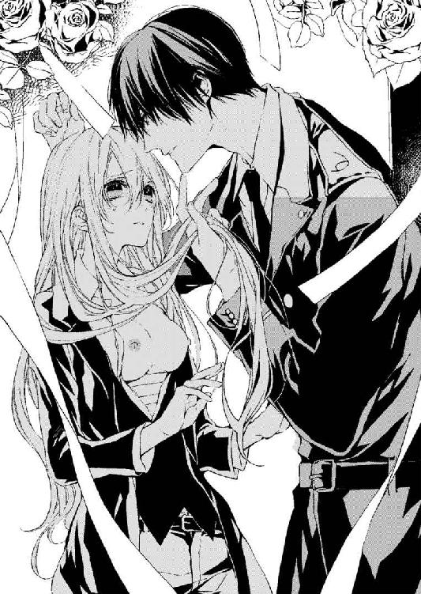
「それは......違います......」
「そうして安心させておいて、この俺に近づいた。別人の振りをして、男の振りをして」
「それは......そうしないと......この城にいられないと......言われて」
「誰に？」
レジオンは次第にヴィアンカを責め付けるようににじり寄り、顔を寄せてくる。
ヴィアンカは恐ろしくて、一度彼の前からすり抜けるようにして走り出したが、すぐにベッドの縁に足をぶつけて、そのまま倒れ込んだ。
彼は、そんなヴィアンカを追ってきて、さらなる追及を向けてくる。
「誰に言われた？」
ヴィアンカは、身を固くしてただレジオンの顔を見つめるしかない。
彼が自分をどうするつもりなのか、まったく見当もつかない。
「あのとき俺を襲撃した奴らの仲間......とか？ 俺が武器の不正取引を暴いて未然に防いだことの復讐らしいが。そうか塔の中の奴におまえもグルか訊いてみようか？」
「違います......！ それは......絶対違います」
「もしおまえが仲間だったら、どうするか。手足を傷つけ、この美しい目で二度と太陽を拝めなくしようか？ それとも警察に突き出して、二度と青空の下に立てなくしてやろうか？」
ヴィアンカは小刻みに体中を震わせて、ベッドから起きあがれずにいる。
「〝ヴィアン〟......〝ヴィアンカ〟。そうだな。もっと早くに気づくべきだった。まさかミリオまで噛んでいるとは思わなかったからな。身内に敵がいるというのはこういうことか」
「ミリオ様は違います......」
「どう違うと言うんだ？ ヴィアンカ」
そう名前を呼ばれても、ヴィアンカの頭の中は反応していない。
「ヴィアンカ。そう呼ばれるほうがいいのだろう？」
「私は......本当に......ただここに置いていただければ......ミリオ様も、私のことを思って......」
「ミリオがどうして一度しか会ったことのないおまえのことをそれほど気にかける？ 奴はおまえを愛しているのか？ 気に入ったのかな」
「それは......よくは......でも......」
「ヴィアンカ。もう嘘をつくのはやめて正直に話せ。どうしておまえはここにいるのか」
『ヴィアンカ』
ずっと、誰かに名前を呼ばれたかった。父や母。それとも自分を愛してくれる人に。
甘く名前を呼ばれることがあこがれだった。
なのに、今こうして一目惚れの相手にあっさりと女だとばれ、責められている。
「正直に話します。私は......行く当てがなくて、この城でレジオン様のおそばにいたかったんです。レジオン様は女性が嫌いと伺っていましたから......男と思われたことに便乗してそのまま男装をして......お仕えを」
「嘘つきは地獄に堕とすぞ？ 拷問するぞ？」
冷えた声で耳に囁く。
「かまいません。ご主人様の気の済むように......拷問でも......なんでもお受けします」
ヴィアンカは彼の手の動きに従わされるように顔を仰向けにされ、その唇にレジオンが唇を重ねた。
「あぅ......」
「拷問してやろう。俺の納得できる答えが聞けるまで、じっくりと酷く......してやろう」
冷酷な言葉を囁かれているのに、ヴィアンカの足の付け根のそこがぶるると卑猥に肌をざわめかす。
再び重ねられた彼の大きな唇が、熱かった。
覆いかぶさってくるそれは早くも濡れて、ヴィアンカの唇に吸い付くように押し付けられる。
舌が舌に絡みつき、歯茎を先端で撫でてくる。その巧みでいて繊細な舌使いに、ヴィアンカはもはや抵抗する力も入らないほど、なされるままになっている。
これが拷問だろうか。これからレジオンの唇がもっと酷くなって、腕を締め上げられたり、喉を締め上げられたりするのだろうか。それとももっと酷い拘束を受けながら鞭で打たれたりするだろうか。
「どうだ？ 俺に何か言いたくなったのではないか？ おまえの叔父はどうして受け入れなかったんだ。学院長にされていたことを知ったのか？ 汚らわしい姪などいらぬと言われたか？」
「あ......」
叔父のことなどとても言えない。叔父が学院長に自分のことをすべて一任し、高値で売ることを承認していたなんて、知りたくなかったし、今も口にしたくない。
「あの夜、ミリオがジル・ド・グリース伯爵の城に行き、おまえの売買が成立したと告げたら、喜んでいたそうだが、それでか？」
「───っ」
「嘘つきだな。俺は嘘つきは嫌いだと言っただろ」
ヴィアンカはそれ以上何も言えなくなってしまった。
「そんな悲劇的な顔をするな。芝居じゃないなら、もっと喜べ。あんな叔父のところに戻らずに済んだんだぞ」
「でも......叔父様はたった一人の......」
「身内だなんて思うな。おまえをずっと気にしていたもののことだけ思え。そうだ。今思えば、あの時俺の前で学院長に見せていた被虐的な顔ですら、俺が診ていることを知っていて仕組んでいたんじゃないかと思えてくるな。それほどおまえは......俺の衝動をいつも激しく揺り動かす。今もだ。俺はおまえをいじめて、喘ぐ声を聞きたくてしかたない......素直にさせたくてしかたない。本当の言葉を......欲しくてしかたない。俺のものに......してやる......」
レジオンはヴィアンカの首筋を撫でながら、上唇を唇で咥えながら舌先で膨らみを、そして粘膜にまで忍び込ませては舐め上げてくる。
淫靡な舌先が、ヴィアンカの唇に雫を落とし、妖しい媚態を誘い出そうとしているよう。
歯茎と濡れた粘膜との境を、何度もゆっくりと撫でつける彼の舌の動きで、ヴィアンカの肌下に流れる青白い血管の中に、揺らめく欲望が感じられてくる。
（───だ、め......入ってこないで......）
ギュッと唇を結ぼうとしたが、レジオンはそこに指先をも忍び込ませて、ヴィアンカの口腔を撫で回した。
「うぅう」
「噛むなよ。これは主人の指なのだから。歯は立てずに、舌だけ動かせ」
ヴィアンカは言われている意味がわからず、ただ喉の奥にまで忍び込む彼の長い指先の卑猥な動きに耐えるしかない。
「俺の満足する言葉を言え。納得できる口づけをしろ。そうしたら、犯さないでやってもいい」
「ん......ぅッ」
ヴィアンカの唇の中を、彼は指を増やしながらかき混ぜて、口腔に溢れ出す唾液を漏らすまいとでもするように顎を掴んで仰向けにさせる。
そうして小さな鼻を摘むようにして唇を開けさせると、おもむろに熱い舌を挿入してくる。
先ほどよりたっぷりと濡れた口腔の中で、自在にヴィアンカの舌を貪る彼の唇に、震えながら耐えるヴィアンカは、身体の芯に灯された欲望の疼きを感じて必死に彼の身体を押しのけようと試みる。
だが彼の力はビクともせず、かえって強く押さえつけられ貪られるばかりだ。
舌を吸われ、舐め上げられながら、レジオンは押さえつけているヴィアンカの手を、裸にした乳房の上に押し付けてくる。
「......っく！」
掌を乳房を覆うように押し付けられ、その上から彼の手が操るようにヴィアンカの胸を揉み始めた。
口の中で絡められる唾液と舌が熱く燃える。それなのに、さらに甘い香気を貪ろうとするように、無垢な胸を揉みしだかれてヴィアンカは苦しげに眉を寄せた。
『されるがままになりなさい......おまえを買ってくださる貴族の殿方に精一杯の奉仕を。この学院ではそういうマナーも教えてやる。貴族社会の頂点に奉仕するのが我が役目。この学院に預けられた由緒正しき血筋を汲む娘たちの存在意義......強者には従うのが乙女の理......』
肌に染みこまされていた学院長の言葉が、身体からこみ上げてくる。
（これがそうなの......されるがままになって、従順に応え、耐えるべきだというの......？ それが親のいない私の務め......？）
重く広がるカーテンの作り出す薄闇の中、静寂がマントルピースの上の時計の秒針の音さえ呑み込んでいく。レジオンがヴィアンカを舐め回し、溢れる蜜をかき混ぜている水音だけが響く中、おもむろにレジオンの手の動きが変わった。
レジオンは、腰の後ろに手を回すと、やおらその手に鉄の枷を光らせて、ヴィアンカの手にかけた。そうしてその枷をベッドの向こうに伸ばし、そこにあったベッドヘッドの支柱に結びつける。
「あ......」
ヴィアンカは片手をベッドヘッドに拘束されて、慌てて身をのけぞらせる。
だが彼の動きのほうが俊敏だった。
拘束された手を外そうとして延ばした手は彼の手の中にしっかりと収まってしまっている。手首をきつく拘束されて、ヴィアンカはなすすべもない。
もう片手も同じく枷に拘束され、ベッドの支柱に繋がれる。
レジオンは冷えた顔つきのまま、両手を頭上に開いたままシーツの上に黄金の髪を広げるヴィアンカを眺め下ろす。さらに冷えた緑の瞳を遮る黒髪を掻き上げると、その足首にも鉄輪をかけ、その連なる鎖をベッドの支柱に通して結わえてしまう。
ヴィアンカの両手、片足はベッドに硬く繋がれてしまった。
「あ......」
「これで、お望みの激しい拷問を受けられるぞ。ヴィ・ア・ン・カ。学院長はどこまでおまえを仕込んだのかな。まさか俺を探るためよこされた学院長のスパイじゃないよな」
「そんな......レジオン様......酷い......。私......決してレジオン様を......裏切っていません」
「そう。その声もだ。俺をだまそうとしていたからこそ、低い声で話していたんだろう？ セント・クレイド学院ではもっと頼りなげで......高音の少女らしい声だったからな。もう声を戻していいんだぞ？ 可愛らしいヴィアンカ・ド・ルセル伯爵令嬢」
レジオンはベッドの上に乗りヴィアンカの身体を開きながら、その中央にさらに膝を乗り上げてくる。
両手を大きく広げられたままヴィアンカは足の間にレジオンを入れている形になって、身を震わせた。
「さあ、早く正直に答えないと......本当におまえを犯すぞ？ 俺は女性は好きではないが、拷問の手段としてならいくらでも激しく責められる男だ」
言葉通り、ヴィアンカの被虐の気配におののく淫唇を、彼の膝が責め上げ、服の上からその包皮の中に潜む純な姫芯をいたぶるようにぎりぎりと押し付けてくる。尻の割れ目に潜り込ませるような膝頭が恥丘に向けてせり上げれば、皮肉がめくれて姫芯がぐちゅりと押しつぶされていく。
「ひゃ......ん......うぅ」
こらえようとしても乙女の器官を攻められれば唇をつくのも乙女の悲鳴だ。
「ふ！ 可愛らしく呻いて、拷問を逃れようというのか？ 甘いな」
今度は膝で押し上げて開いているそこを彼の指先がぱっくりと開かせて、ひくつく姫芯を指先でつまみ上げる。
「うぁ......あ！ ああぁ......んッ！ レジ......オン様......私は......悪気はなかったのです」
「ほう？ 悪気がなくて俺をだまそうとしたというのか。いや。だましたのだよな。俺は嘘つきと他人に欺かれるのが一番嫌いなんだ。そして己の欲望のために他者を虐げる奴もだ」
レジオンの手が、ヴィアンカの開かれたシャツの胸もとに落とされる。びりっというボタンを引きちぎる音が響いて、大きく膨らみが露わにされる。
白く盛り上がった乳房が、裂かれた包帯の下から覗く様はかえって淫らだ。
カシャン！
その動きで両腕を引こうとしたヴィアンカだったが、支柱に繋いである鉄枷の鎖同士がぶつかって音を立てるだけだ。
「ヴィアンカ。それともヴィアン......がいいのか。おまえは今後どちらの名前で呼ばれたい？」
「レジオン様......嘘をついて申し訳ありません......私を......ここにおいてください......お願い......ですから......」
「企みがあるのか？ どうしてここにいたい？」
「あなたが......好き......です......あなたしか......私には......」
「本心かどうか。また嘘じゃないだろうな。きつい責めで白状させるぞ？」
また彼がヴィアンカのシャツを引き裂いて、最後まで引きずり出す。ジレのボタンも引き裂かれ、ヴィアンカの白い肌が臍下まで露わにされた。乳房も臍も彼の目の前に晒されている。腕に裂かれたシャツが纏いついていたが、それさえ彼の指先はむしり取った。
そして下肢を覆うズボンのベルトを抜き、ボタンを外しかけたが面倒になったのか引きちぎる。細かなくるみボタンが空に飛び、床の上に弾んだ。片足を抜かれ、もう片方の拘束されている足にまとわりつくズボンも引き裂かれた。
ヴィアンカは白い素肌をむき出しにされてしまった。
レジオンは、唯一縛られていないヴィアンカの足を大きく広げて抱えあげる。
そうすると桃色の足の付け根が大きく開き、蕾のように花弁が開いた。
「あ......」
そこにすうっと冷気が流れたのを感じて、露わな胸が震える。
「ふ。ここは......院長にさんざん弄られて......感じやすくされているところだろう？ まさか、あれも院長がこの城におまえを送り込むための芝居だったなんてことはないよな？」
「そ......」
「まあ、いい。俺がおまえをあの学院から出した。こうして抱いて、口を割らせるのも嫌いじゃない。お小姓として可愛がってやるつもりだったし」
レジオンはヴィアンカの唇を撫で、そうして口腔に指を入れて唾液で濡らすと、その指先を胸に下ろして濡れた指先で乳首を摘んだ。
「ぅ......」
両方の乳房をそれぞれの手で揉みながら、指先で摘んだ桃色の突起をゆっくりとねじりながら押しつぶしていくレジオンにヴィアンカはただ唇を結ぶだけだ。
乳房を揉まれるその指の圧力に波に揺られるような強さを感じ、乳首を小刻みに摘まれると薔薇の刺で刺されるように思える。その両方の行為に絶えず責め立てられ、ヴィアンカは浅い呼吸を続けながらのたうつ。
「あ......ぃや......ンぅッ」
胸を揉まれれば、他のところがおかしくなる。
それは院長に薄暗い部屋で行われていた淫靡な行為のせいだ。あの部屋で、彼に全身をいやらしくまさぐられるたびヴィアンカの身体は徐々におかしくされていった。
濡らされた指先でくちゅくちゅと押しつぶされ、摘まれるたびに、下肢から疼く何かが溢れてくる。
「ああ......ベッドをそんなに濡らすなよ」
レジオンがヴィアンカの肌を見て嗤う。
「白状するのが先だ。こんなに気持ちよさそうに濡れられたら、拷問にならないだろう？」
「......ッ」
彼はヴィアンカの肌に唇を落として、乳首を舐める。尖った乳首の先端を濡れた厚い舌が圧してくると、それだけでヴィアンカのすべての感覚がその天辺に集められる。そこが歯で甘噛みされると喉の奥に悲鳴が詰まって、ふしだらなくらい裸体を悶えさせる。
「あ......や......」
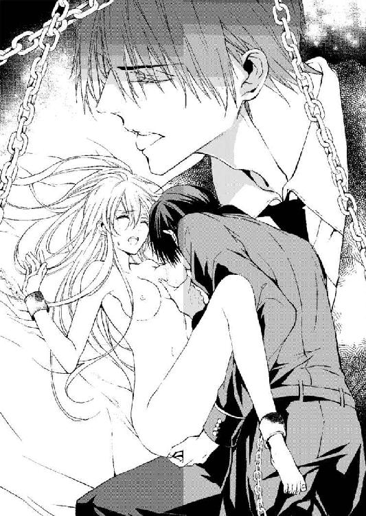
ちゅくんとくすぐられながら、乳首の膨らみはまるで育て上げられているように萌えていく。
「おまえのここは......気持ちよさそうだが？ 院長にどこまで教わった？ 手練手管を教わったのだろう？」
彼の声音に嘲笑が浮かび、それでいて怒った風な顔つきなのはどうしてだろう。
「身体検査......それだけ......です」
ヴィアンカは、鋭い緑の瞳を窺うように応えたが、その答えが彼を満足させるわけもない。
「もっと......酷くされたいようだな？」
ヴィアンカは、その『酷い』がどれだけ酷いのか想像もつかず、ただ顔面を白くして首を振る。
塔から聞こえてきていたあの暴漢の悲鳴。足に煉瓦を積まれたり、熱湯をかけられたり、逆さに吊されて水を飲まされたりするのだと聞いた。
「私......でも、本当に何も......」
「本当に？ ではどうして男装してここにいる？ 令嬢なのだろう？ この俺の下働きなどしなくていい身の上のはずだ。刺客から俺を守って見せたのも、油断させて取り入ろうとしたからだろう？」
「ちが......」
レジオンはヴィアンカの片脚を大きく掲げて、谷間を開かせた。恥ずかしい格好なのは、自分の目にもわかる。そこがぱっくりと彼の前で開かれているのがわかって、ヴィアンカは顔を朱に染めた。
「私......」
「乙女としてもっとも恥ずかしい思いをしてもいいのか？ ここを......俺が思うだけ嬲ってもいいのか？」
レジオンは乳首を弄っていた指先を脇に滑らせ、腰に移し、ゆっくりと恥丘の上に乗せてくる。そして恥骨の上を撫で回していた指が、やがて大きく開かされた谷間へと落ち、突然蕾の中にぬぷりと先端が挿入される。
「ぁ......あンッ......や......やめ......ッ」
そこをそんなふうにされて、そして乳首も弄られて、身体がどうにかなりそうだった。恥丘の中から、熱い飛沫が蠢いて破裂しそうになっている。それなのにレジオンの指先は、やむどころかさらに速さを増し、挿入を繰り返している。中から何かが溢れてきた。だから、やめて欲しくて懇願するのに、彼は愉しんでいるかのようにやめる様子がまるでない。
「やめ......。お願い......」
「どうして？ 気持ちいいくせに？ ほらここがこんなに熱を含んで......蜜が溢れてきている」
彼の指先は掠めるようなものから秘裂のそこを抉るように深く挿入する動きに変わり、中の肉壁を圧してくる。雌芯に指の腹が擦れてひりひりと痛い。
「ひゃ......ぅ......！ やぁ......や......いやあ......」
指の挿入に粘膜が引きつれるように上下して、雌芯はすっかり屹立している。
「蜜が流れているということは『嫌』じゃないということだ。教わっただろう？ 院長に」
「いんちょう......いや......あの人の......ことは......いわないで......ください......あの人は......」
「おまえにこういう技を教え込んでいたはずの人物。学院を訪れる大貴族に美しい娘を見せては売っていた人物。そうして闇のルートで私腹を肥やして、コネクションを拡大している男」
「いや......」
「半端な調教ではないと聞く。そうだな。どれだけの身体に成長し、この俺をたらし込んでくるのかやってみるのもいい。俺が......完敗するほどの〝女性の身体〟なら、一目置くぞ」
「んぅ......や......ッ」
レジオンはまた秘裂の中に深く指を入れながら、谷間を何度も擦りあげる。
そしていつしかその指先が中を擦るたびにびちゃびちゃと濡れた音を立て始めている。
「ほら。音が聞こえるだろう？ これは悦んでいる音だ。こんなに蜜が溢れて。恥ずかしいな」
「や......悦んでなんて......ちが......」
水音は確かに次第に激しくなって、粘度の高いうごめきをヴィアンカのそこが感じている。
奥からトロトロと流れてきているのがその蜜だろうか。
彼が一度抜いた手を、ヴィアンカの前に差しだしてきた。
「ほら。こんなに濡れている。おまえの身体は、俺の指を舐めるように味わいたくなるはずだ」
「ちが......ちがう......これはあなたが......無理矢理」
両腕を引き、足を引いて、何とか拘束から放たれようとするが、その動きはヴィアンカの手首にきつく鉄の輪をくい込ませるだけのことだ。
「暴れるなよ。暴れても、それが外れるわけがない。罪人用の枷だぞ。剣で叩きつけても壊れもしない。拘束されて......いたぶられる。それが拷問というものだ。さあ、痛めつけられて喜ぶ令嬢を......俺はどうしたらいい？」
ぐぐっと四本もの指が束ねられてそこを犯す。
「ひゃ......あ！ いた......そんな......とこに......指......あ、そんな......に......」
「もっと増やしていい、もっと......大きくしてもいいんだが？」
「白状......します......あなたの......ところに......いたかっただけ......ただそれだけ......」
ヴィアンカは、かいつまんで心情のところだけを必死に言葉に乗せて言う。
彼の拷問が、あまりに酷く身体を悶えさせてきて怖かった。これが快楽になっているなんて、あまりにふしだらすぎる。
「そんなことで、令嬢が俺のしもべになどなるか。酷い男だろう？ 使用人をこんなふうにベッドで拷問する主だ。気は短いし、もっと乱暴なこともできるぞ」
彼はたっぷりと濡れたその手をヴィアンカの乳房に塗りつけると、左右の胸を激しく揉んだ。
「あ......ああ......ッ！ や......い......や......ぁ......」
花唇はトロトロにさせられて、乳房は彼の手の中で、チーズの様に捏ねられている。
足の間に彼の膝がぐりっと押し付けられれば、その白い肌さえ、おかしくならんばかりなのに、レジオンはヴィアンカの唇に唇を押し付けて、舌をねじ込んできている。
唇は微かに離されたが、またすぐ彼の熱い舌先が封じてきた。封じて、そして舌を舐め取るようにして絡めてくる。
先ほどまでよりいっそう強く、熱く、絡められながら、乳首や乳房も濡れた感触の中で揉み込まれている。
淫唇の濡れた蕾に彼の膝が押し付けられて、上下にゆっくりと、そして次第に激しく擦りつけられる。
「や......いやあ......」
唇が少しでも離れた隙に、顔を振りながら、必死に叫ぶ。
レジオンはおもむろに片手で自分のズボンのあたりに触れ、ボタンを外しているようだ。
だが、衣擦れの音はすぐ止んだ。
ヴィアンカの目には白い花と花蔓の絡まる美しいモールディングの天井しか見えない。天井と、ベッドの天蓋。そしてレジオンの恐ろしいほど美しいシャープな美貌。澄んだ翡翠色の目を隠す黒髪。
この美しい人が、自分を責めている。だまされたと怒って、命を狙っているのではないかといってヴィアンカに触れている。敏感な肌をいっそう敏感にさせ、身体の中からいやらしい娘の醜態を引き出そうとしている。男性の長い指に触れられ、肌を強く掴まれることによって生まれる淫らな欲望。
彼の手がそこを掴んでいるだけで、ヴィアンカは蜜壺から蜜を溢れさせ、今などもう淫唇をびちょびちょにするほどに流れさせている。
恥ずかしいのに、お尻にまで流れ出す蜜の存在を今さらなかったことにできない。
それがレジオンを求めて流している蜜だというなら、それは否定できない事実だと思う。
（だって、私の......一目惚れした人だもの。私をあのおぞましい学院から助け出してくれた人だもの......。なのに、こんなに怒らせてしまった。この人のそばにいたくて男装しただけなのに、彼はそんな言葉を今さら信じてくれない）
「俺のベッドの上ではどちらがいいかな？ 小姓として俺のベッドで俺の身体を慰めることに従事するか。女スパイとして俺に愛されるか」
太股に、お尻にあてがわれる指が、ぐっと内股を掴みながら秘所にも触れてきている。
ぶるっと震えあがりながらも、開かれて彼の前に晒されている蕾からは、今もまた淫らな蜜が溢れ出す。
「く、ほんとうに......あの学院で淫らな身体に仕込まれたな。ヴィアンカ」
「そんな......そんなの......ちが......」
「違わないだろう？ ほら、この音を聞けよ」
わざと指で蜜壺を掻き混ぜ、放たれて溢れる蜜の中で暴れさせる。ヴィアンカはその水音に下腹部を熱くさせ、耳を塞ぎたい思いをしながらもまた秘芯を真っ赤に染め上げる。
「ここもだ。触れて欲しそうにこんなに尖って......。いいぞ触ってやる。押しつぶしてやる。悲鳴を上げて悶えるほどに」
「あ......くぅ......ッ、あぁ......ぃや......やめ......そんな酷い......」
昂ぶる体の熱。
「ここを俺の指で捻られて、クチュクチュされていいのか？ 潰されて、俺の口腔で燃えて遊ばれていいのか？ 院長は高く買われるためにここを大切にしろと言っただろう？」
そういっていたような気がする。でもレジオンの愛撫の下では、もう院長の卑猥な行為など思い出せないほど、頭の中が蕩けだしている。
「おまえは調教されていた。院長はこの身体を仕込んでいたんだ。美しい髪、美しい目。そしてこの吸いつくような肌。均整のとれた身体。院長はおそらく相当幼い頃からおまえに目をつけていた。ダイヤの原石にはよく目の利く男なんだ。奴は。そうしておまえを厳しく躾け、年頃になったら肌に触れ、こういう秘所や秘裂を犯しながら敏感な身体に仕込んでいく。ほらおまえのここを少し触っただけで、どうだ？」
「ひゃ......うぅう！」
ヴィアンカの淫唇の間に微かに芽をのぞかせていた雌芯をレジオンは爪の先で掠めた。それだけで、ヴィアンカのそこは痺れをおこし、蕩けそうな熱い感覚が膨れあがってくる。
それなのに、レジオンはさらにそこを爪の先で何度も掠い、指の腹で押しつぶしてくる。
「......あ、や......」
雌芯を何度も弄られ続けて、ヴィアンカの蕾の奥からとろとろと蜜が流れ出してくる。
蜜壺が、肉欲に燃えるように蜜を流し続けてきて、レジオンの指先でそこに押し込められていく。
グチュグチュとした水音が激しくなって、ヴィアンカはギュッとそこを締め付ける。
「ダメ......だ」
囁くような声が命じる。
「閉じるな。そこもここも俺にすべてを開け。包み隠さず。すべてを俺に露わにしろ」
ぐっと蕾に指が入れられ、奥を腹で撫でつけてくる。
ぬちゅりと激しい音がして蜜壺から蜜が迸った。
「や......ッ、いや......」
身体がおかしくさせられている。
「何も......嘘なんて......だ、だから......あん！ ひ、ぃや......あ......ッ」
ぐちゅぐちゅと束ねられた指の挿入が激しくなる。
「おまえの肌という肌をすべて俺が撫で回してやる。院長に淫らに触れられたところを俺が舐め尽くしてやる。俺の色に染めてやる。それが嘘をついていた罰だ。もっと......挿入れるぞ。おまえが悪いんだからな。後悔するな」
レジオンの激しい声音の中には、有無をいわせず従わせる力が秘められている。
ヴィアンカは、太股のあたりに強い力の込められた指先を感じ、そして彼の衣服がいつの間にか下ろされているのを知った。
そこに彼の滑らかな肌が押し付けられてきたからだ。
白い内ももに逞しく筋肉の発達した青年の肉体を感じる。
そしてすぐ、その足の付け根に大きくそそり立った男の象徴が見える。
「あ......や......」
それがなんなのか、一瞬わからなかった。薄暗い部屋の中で、彼の逞しく引き締まった下肢に聳えるそれは、巨大に膨れあがった男性器。そう理解できるまでに数秒かかったと思う。
「ぁ、やあ......ッ！ やめて......いや......なの、や......そんな......」
ヴィアンカは震える声で懇願する。
太く固く哮った男性器は彼の身体から大きく浮き上がり、屹立し、今も巨大になっている。そしてヴィアンカの濡れた淫唇の上を圧迫し、秘裂を探すようにぐちゅぐちゅと蜜を絡ませながら蠢いている。
恐怖が、ヴィアンカの身体を強ばらせ、そして腹部をぎゅっと締め付ける。
レジオンが太股を強く掴んで自らのほうに引き寄せると、おもむろに指先を再び濡れて桃色に染まる淫唇に落とし、そこをぱっくりと開いた。濡れて輝く雌芯がのぞき、ひくひくとしている蕾が見える。
「ここに......今から俺を挿入する。中からおまえを責めてやる。言う気はないんだろう？ じゃあ、しかたないな」
雄の先端がぐっと蕾の中に挿入された、尖った亀頭が、ヴィアンカの濡れた粘膜を押し広げて潜り込む。
「うぅう......！ きゃ......ああ......」
押し広げられて、避けそうになるそこを、彼は容赦なく推し進める。
「あ......いた......痛い......です。や......」
蕾が避けるほどそれは太く、そしてその先端が潜り込むことすら許さないほどヴィアンカのそこは細く狭い。
華奢な乙女の体内はおののいて、それを閉め出そうとする。
だがレジオンは諦めようとはしなかった、腰を打ち付け、その勢いでヴィアンカの中を犯していく。
「う......ぁや......あ、お願い......」
痛くて痛くて、怖いのに、太股を掴む指はさらに強く、そして打ち付けられてくる彼の強さもいっそう激しくなっている。
「痛いなら......白状しなさい。怖いなら、正直に俺にすべてを告白しろ」
ぐぐっとさらなる圧迫感がヴィアンカの粘膜を裂いていく。
「ふ......あ......ッ」
両手をギュッと握って、痛みを散らそうとするが、それくらいではすべての意識が集中しているその蕾の中の痛みは消えない。
いっそう強く痛みを伴いながら膣道を責め上げてくるそれに、ヴィアンカの肌は激しく上下して、心臓さえ止まりそうだ。
痛みと恐怖に肌がじっとりと上気して染まってくる。
「痛くないぞ。もうすぐ快楽に変わる、これだけ濡れているんだから......おまえも俺を求めているはずだ」
「ちが......ちがう......の......やめて......離して......」
レジオンは大きな瞳を閉じ、睫を濡らし始めているヴィアンカの頬を撫で、そして乳房をおもむろに揉み始める。
「やあ......いや......」
乳房を揉まれながら。淫唇を裂かれ、膣道に雄が入り込んでいく。
ぐぐっと推し進められるたび、腰が浮いて後方にのけぞる。だがもう片手がしっかりと太股を押さえつけている。そして片足につけられている枷が、それ以上動かないようにヴィアンカの身体を縛めているのだから、逃げることも抵抗することも許されてはいないのだ。
「ああ......やああああ......」
ぐぐっと強く打ち付けられるが、ヴィアンカのそこは細く繊細で、それをはねつけてしまう。
「さすが......美しく可愛い娘は......大事に育てていたんだな。あの男......。だがおまえは......快楽を感じやすくされているんだ。この責めを、すぐ快楽に変えられるように、この肉体は調教されているはず」
レジオンは囁きながらねっとりとした舌先で、ヴィアンカの乳房をなめ回した。たっぷりと唾液が絡められた舌が、丸く膨らむ乳房を丹念に舐め、そして摘んでくちゅくちゅとしている乳首にまで及んでいく。指先で激しく押しつぶされて、敏感に赤く尖るそこを、彼はぱっくりと咥え込んで口腔でなめ回した。
「うぅ......ん！ はあ......うッ！ や......ぁ、いやあああ......」
なめ回される乳房がどくどくと蠢く。口腔で吸われて、舌でねじられている乳首が快楽で悲鳴を上げている。
その快楽の塊がヴィアンカの下腹部にも下りては溶けて広がっていく。押し付けられる巨魁が、細い膣道を裂きながら穿っていくのを、ヴィアンカは快楽と痛みの中間で受け止めている。
「入れてみろ。奥まで......俺を受け入れてみろ！ さあ、すぐにおまえは俺を必要とするはずだ......欲しくて......泣くぞ。この涙のように......美しくて妖艶な真珠をおまえは生み出すんだ。この魅惑的な肢体から......」
レジオンは、ヴィアンカの乳首から唇を離しながら、今度は脇腹に、そして膝上に乗せつつあるお尻の膨らみを揉みながら、臍の中に落としていく。小さな窪みを丹念に犯す、その尖った舌先は、中で今も穿ってくる亀頭の痛みと重なって快楽と結びつけていく。
「ああ......ぅう......ん！ は......！ はああ......ッ」
淫らに濡れる唇から、嬌声ともとれる甘い媚態の吐息が漏れる。
胸の柔肉を揉まれ、お尻を揉まれ、臍をあまやかな唾液と共に犯されながら、ヴィアンカの膣道は、彼に擦られることを次第に快楽と認識している。
入り口の裂けた部分が血を流していても、擦られている雌芯は、雄棒を心地いいものと知っているかのように尖っていく。
「気持ちいいことだ。おまえの身体は、こうして責められることを気持ちいいと知っているはずだ......。身体を楽にしろ。ここをそんなに......締め付けるな。裂けて痛く感じてしまう......」
無茶を言われていると思う。こんなに酷いことをしているのはレジオンなのに、優しく気遣うようなことを言われたくはない。
でも彼は、本当はきっと優しい人のはずだ。
あの学院から救い出してくれたのだから、酷く凶暴でも傲慢で冷酷でも、心の欠片では優しさが満ちているはず。
ヴィアンカは長い睫を濡らしながら、赤い唇を結ぶ。
（気持ちいいの......？ これが気持ちいいってことなの？ この痛みもこのつらさも......？）
手首に枷がくい込んでいる。足首にも鎖がくい込んでいるのに、ヴィアンカはその苦痛もいつしか快楽として受け止めていた。
「気持ちよくしてやる。責め付けて......おまえの奥を......責め上げて......一番気持ちいいところ......突いてやるから......。俺を入れろ」
ヴィアンカの身体は膣道の中を責め上げてくる亀頭を受け入れ、そして恐怖心を解いていく。
じっとりと肌が濡れている。
恐怖からの汗ばみと、そして彼の責めを受け入れている痛みから吹き上げる汗。
すべての肌を彼の愛撫で蕩かされていっている、その露。
愛撫は気持ちよくて、心地よくて、大切なものにするようなものなのに、彼は自分を縛り付けて、裏切りを責めている。
（送り込んだ人物を白状させようとしているはずなのに、愛撫して気持ちよくしてやるっていうのは......矛盾してるわ。どうして......優しくしてくれて、それなのに酷いこともするの......）
細い膣道一杯にレジオンの巨大な雄が入り込んだ。奥壁を激しく亀頭が突いている。
彼が腰を動かすたびにヴィアンカの手枷と足枷は食い込み、ベッドを激しく揺さぶっている。
熱い吐息が、レジオンの唇からも漏れている。
「ああ......」
彼に揺すぶられるたび、激しい快楽と抑えきれない痛みがヴィアンカの身体を襲っている。
わけがわからないほどの享楽。
下肢を裂かれるような太い杭が今も自分を穿っている。
「白状......しろ。ここに忍び込んで俺に仕えていた理由......言ったら......やめてやってもいい」
（言ったら......やめてくれるの？ 言ったら......）
適当な理由をつけて答えたい。
でも思いつく言葉がない。
思考はすでに燃え尽きて、レジオンの欲望に蕩けている。
「言わないと......もっと......するぞ。もっとおまえを俺のものにしてやる。こうして......！」
彼の吐息が荒くなった。腰を大きく突き上げてくるたびに、甘い呻きが喉に詰まるような気配が何度か感じられた。
激しく突き上げてくる彼の肉棒と嚢宝が、ヴィアンカの濡れた花びらに打ち付けられる。
肉道の奥。快楽に下りてきている子宮口が、亀頭に突かれて蕩けんばかりに感じていく。
体中、彼の熱い欲望の圧力がかけられ、ヴィアンカは喉奥まで彼のものが詰まっているような快楽を感じている。
「んぅ......！ う......んぅ......！」
上下に機械のように揺さぶられ、黄金の髪が周囲で嵐のように散っている。その淫らで濡れた揺れの中、ヴィアンカは宙を見るような曖昧なまなざしで彼を見上げる。
エメラルドの鋭い瞳が、肌が、昂ぶる熱で滾っている。首筋に浮き上がる筋肉が、汗ばむ艶のある肌がヴィアンカを恍惚とさせる。
絶対の支配者。
枷に繋がれた自分は、荒ぶる彼に捧げられた生贄のよう。
（私......レジオン様の......生贄に......なりたい......）
赤い唇が、ぬらりとした唾液で濡れているのをみると、苦しい欲望がヴィアンカの雄に繋げられている膣からわき上がる。
（あなたに強く求められる......生贄になりたいの......もっと......食べて......もっと犯して......私のここを......レジオン様に犯して欲しいの......）
「ああ、おまえをいじめ抜きたくてたまらなくなる。どうしてこんなにおまえのことが......欲しいんだろう。これほど......どんな手段でも......おまえの中にこの欲望を放ちたい......！」
こらえるような呻きが、レジオンの赤い唇から蒸気と共に呟かれる。
太くて硬く、長いものはヴィアンカの膣に収まることなくさらに奥の器官を荒々しく貫いた。
「───ぁ、だ、め......だめ......なの。許して......もう......だ、め............えぇ......ッ」
喉まで突くような衝撃が、太股に水音を立ててぶつかるような彼の下肢から広がった。
ぐりっと、ヴィアンカの内壁を亀頭が擦り上げ、筋が妖しく媚肉を穿つ。
中にどぴゅっと、亀頭から吹き上げた精液が熱く膣内を埋め尽くすのがわかる。彼の欲望が、ヴィアンカの繊細な膣道で放出され、めくるめく快楽が二人の中で混ざり合い溶け合っていく。
彼がヴィアンカの蕩ける肉体で達したのが、ぐぐっとうねらすように動かされた腰つきでわかって、ヴィアンカはその膣口を押し上げられた感覚で達していた。
体内が彼で一杯になっていた。はち切れんばかりになって、息もできずにヴィアンカはベッドの上にほてる肢体を落とした。
「あ、あ......」
そう呻いたのはレジオンだったと思う。
満足したのか、そうでないのか、ため息なのかもわからなかったがとても耽美なうめき声だった───。
『いじめてやりたい......いじわるでも......酷くても、もっとおまえを俺のものにしてやる。この俺に縛り付けて、何もかも......、こうして何倍も何十倍も愛してやる......！』
その耳も肌も犯すような恐ろしい男の秘めた声が、消えゆく意識の中、ヴィアンカの脳裏にあまやかに刻まれていった......。
◆３◆ 拘束は、あまやかなる秘密の契り
レジオンの城は小高い丘の上に建つ優雅な白い建物で、緑に包まれた見事な景観をもつ。
荒々しい戦城ではなく、白い切り出し岩を積み上げ、蒼い屋根をした塔のある居住用の城。
青い芝と花園を吹き渡る風が心地よい。
静かさを纏う城の中で、鳥のさえずりだけが聞こえてくる。城内の物音はまったくと言っていいほど聞こえてこない。
レジオン以外の住人がいない城だからだろう。
窓がかすかに開けられていて、カーテンが揺れている。
レースのカーテンの揺らぐさまは、まるで天使がそこに佇み、聖なる衣と翼とを揺らめかしているかのよう。
（今は......いつ？ 朝......なの？ 昼......なの？ 私......まだ......繋がれている......？）
手を動かそうとして、手首に枷が当たった。左右の手ともそんな様子で、片足もやはり拘束されたままだった。
「あ......」
どうしていいのかわからずヴィアンカはただ天井を見つめ、そして顔を持ち上げる。
「主人より、ゆっくりとお休みとはいい度胸だな」
すぐベッド脇に誰かが立ち、顔をのぞき込んでいる。
シルエットでそびえ立っている青年は、たっぷりとした白シャツを纏い、その上に灰ねずの月桂樹の刺繍の入った青いジレを羽織っていた。
揺らめくカーテンの向こうに、優雅に佇んでいる。レジオンだ。
「レジオン様......いつから......そこに......」
「ずっとだ」
「ずっと......？」
「ずっと......眠らずにおまえの顔を見ていた」
「や......」
ヴィアンカの意識が現実に引き戻される。
「正確には、ときおり窓際で仕事の書類を見ていたが。おまえも知っているだろうが、とても忙しい身の上だからな」
彼はそう言って片手にしていた書類をひらりと揺らして、サイドボードの上に放り投げる。
そんな動作のすべてが様になっていて美しい。
「今もとても綺麗だな......男の服でも十分美しいが、濡れた裸はことのほか美しい」
レジオンの姿に見とれていたヴィアンカだったが、その言葉で自分がまだ裸であることに気づかされて、白い肌を赤く染めた。
「濡れた......とか言わないで......ください......い......」
レジオンも、ヴィアンカの羞恥心に気づいたようで、にやっと口元に艶笑を浮かべる。
「いい格好だな」
「や......」
「そんな格好を陽の下に晒されると、もっと追及して拷問して欲しいのだと思ってしまうな」
「そんな格好って......鎖で縛ったのも、枷をつけたのもレジオン様です......から」
言われるままにおとなしくしているつもりだったが、さすがに今縛られていることが、〝またレジオンに犯されたいという意思表示〟だといわれるのは納得できない。
「ふふん、やはりな。今の声、......もっと責めて欲しいって声だな。色っぽいぞ」
「ち、違いますッ......これ......外してください。早く解いて......ください」
ヴィアンカは黄金の長くうねる髪の中に顔を埋めるようにして、うわずる声を絞る。
「解いてやってもいいけどな。もっと丁寧に頼まなくてはダメだ。おまえは俺の元に〝男だ〟と嘘をついて潜り込んだのだから」
「レジオン様が......気づかないからです」
「なんだって？」
「学院にいた私だと......気づかないからだましたみたいになってしまって......」
「おまえが......男装などしてここにやってくるからだ」
つい恥ずかしさから怨み節を言い連ねるヴィアンカにレジオンはベッドに歩み寄り、黄金の髪を掴んだ。顔をよく見えるように、顔を上げさせてしまう。
「だ、男装を私に教えたのはレジオン様です。そんなに女性がお嫌いですか」
「───ああ、そうだな。強すぎる香水の匂いを嗅ぐのが嫌だ。顔もくどい化粧で皆同じに見える。だから......女性の顔は覚えられない。一度会って覚えたと思えば、数時間後にはもう違うドレスを着ているから、そのせいもあってまったく顔を覚えられない。まあ、だから手っ取り早く言えば女性の顔など覚える価値もないということかな。それほど不自由もしない」
なんていう言いぐさだろう。
きっと彼に好意を抱いてきた女性は星の数ほどいるだろう。彼のために着飾って見せたいという乙女心で想いを寄せていた女性だっているだろう。
なのに、彼は顔もドレスも覚えられないという。
宮廷貴族として、普段王宮に出入りし護衛隊という重要な部署に就いているなら、せめて人様の顔くらいは覚えるべきではないだろうか。
「わ...たし......、学院では化粧などしていませんし、ここでも化粧はしていませんでした......」
もじもじと、レジオンの矛盾を指摘するヴィアンカを、レジオンはまぶしいものでも見るように見つめている。
「ふん。そうだな。これからは......覚えるかな。女性の顔を覚えないという俺の弱みにつけ込んで、おまえのように......こうして潜入してくる可愛い奴もいるからな」
「私は弱みなど......」
「どれだけ俺のことを知っている？ ミリオに俺の私的な情報を聞いたのか？ ああ、そうだ。ミリオは俺に嘘偽りを言っておまえをそば付きにした廉で、クビにしたからな」
「え......」
ヴィアンカは驚いて、そらしていた顔をもう一度彼のほうに向ける。
「ミリオがおまえをここに忍び込ませたんだろ？」
「違い......ます......。そんな。あの人は......ミリオ様は悪くないです」
必死に身を起こし、ミリオの弁明を重ねるヴィアンカをレジオンはじっと凝視し、ベッドの上に乗り上げてくる。
今も大きく開かされている両足の間に膝を詰め、腕をヴィアンカの胸に置く。
「ひゃ......うぅ......ん！」
膝が姫芯に触れてくる。それだけで、院長に開発されつつあった乙女の身体はぞくんと脈打つ。このベッドで激しく調教され、尋問された身体は、レジオンの指一つ感じるだけで早くも蜜を流しそうだ。
「蜜......出てるぞ。もう抱かれたくなったのか」
「ち、違います......」
「違わないだろ？ ほら」
すうっと彼の指が恥丘に触れ、淫唇に落ちていく。
「う......ぅ......っ！ や......やあ......」
またあんなふうに体中を触れられて、乱されると思うと怖くて、身を捩る。
こんなに明るい陽の下で、汗と精液で穢れた身体をレジオンの前に晒したくない。
「や......やあ......やめてくださ......い......レジオン......様......ぁッ」
顔を左右に振って、もしかしたら手の枷が緩められているのではないかと、激しく腕を振ったが、そう思うこと自体がどうかしていた。枷は今もベッドの支柱に固く繋がっている。
「あ......」
「ここが、おまえの心を見せる......どうだ？」
レジオンは長い睫毛を伏せながらヴィアンカの淫唇を見つめているようだ。
「見ないで......見ないで......ください。そこ......触ったら......だ、めえ......」
レジオンの乾いた白い指先が桃色の淫唇の中に潜り込み、そしてずずっと滑り落ちた。
「ひゃ......ぅう」
雌芯を指の腹で擦りながら、秘裂を下る指先に、ヴィアンカは性の欲動を覚えている。胸から、淫唇から、身体の中を走る媚感に、泣きそうになる。
「これがおまえの......答えだな」
中でぐちゅりと水の動く音がした。
レジオンの指が淫唇の赤の媚肉を掻き混ぜれば中でぐちゅぐちゅと粘液が音を立てていく。
激しく腹部を収縮させて、卑猥な音から身を守ろうとしていたヴィアンカの白い肌から彼が指を引き抜くと、とろりとした水が、糸を引いて滴った。
「どうだ？ 見なさい」
ヴィアンカはギュッと目を瞑って見まいとするが、レジオンはヴィアンカの顔を押さえ、そして瞳を開かせる。
「見なさい。見ないと今すぐおまえのここに俺の欲望を放つぞ？ いいのか？ これくらい濡れていればまあ、おまえの華奢な蕾と膣道が裂けて死ぬことはないだろうからな」
その低めな声が怖くて、単なる脅しだとわかっていてもヴィアンカはゆるりと目を開く。
ねっとりとした透明の蜜がレジオンの指先を輝かせているのが目の前に見える。
ヴィアンカはそれを見てまたすぐ顔を背けた。
「可愛いな。照れているのか。道理で男のなりをしているときから、ときおり乙女のような動きを見せると思っていたんだ。そこがまた気に入っていたんだが」
レジオンはヴィアンカの乳首に濡れた指先を落として、またその身体がびくびくと撥ねる様を頬を緩めて見つめている。
「本当に身体は素直だな。ほれぼれするほどしなやかに蠢く」
「やめてください......い。拷問するなら、もっと......ちゃんとした......拷問なら......謹んでお受けします......から」
「ちゃんとした......拷問だろうが？ これが」
「どこが......ですか。拷問は......焼けた椅子の上に座らされたり、棘だらけの棺桶に入れられたり、足の上に大きな岩を......」
「そうされたいのか？」
意外だという顔でレジオンがヴィアンカの顔を見下ろしている。
「そうではないです......けど、でも......これもいやです......」
「性的な責め苦というのも、拷問の一つだ。ジャンヌダルクもそういう目にあったのを知らないのか？ 聖なるものを穢すのは、拷問の最重要ファクターだ。国を攻め落としたときも、王や王城を真っ先に辱める。それがセオリーだろうが」
「知りません......」
「ああ、あの学院で令嬢たちが教わることではないな。院長がそんなことを令嬢たちに教えるとは思えない。貴族の男たちにいかに好かれるように成長させるか。それだけがあの男のポリシーだ。まあいい。だから、これも普通の拷問だぞ。遠慮することはない。もっと受けたいんだろう？」
レジオンはヴィアンカの白い腰上にまたがって、黄金の髪を指で梳く。
すうっと金の光りが靡き、波のように揺れて彼の指先から溢れる。
「綺麗だな。結んでひっつめにしておくにはもったいない髪だ。瞳も眼鏡なしのほうがいい」
「───ミリオ様は......悪くないのです。どうかクビを取り消して......ください」
喉を詰まらせながら、懇願する。
「拷問を受けている身だというのに他人の心配か？ 心優しいのか......愚かなのか」
「ミリオ様は、行く当てのない私をここに......レジオン様のおそばにいられるように取りはからってくださっただけです。悪いのは本当に私だけです。どうしたらクビを撤回してくださいますか？」
「愚かなのもかわいいな。こんなにばれやすい変装で俺のそばに潜入するとはおこがましい」
「ミリオ様のこと......クビにしないでください。お願いします。私、どんなこともしますから」
その言葉を言ってよかったのか悪かったのかわからない。言った直後に後悔している。
どんなことを要求されてしまうだろう。レジオンは優しいけれど、残酷な面も持っている。
「ではこれを証明したら、考えてやらなくもない」
彼は手にしていたあの手帳をヴィアンカの前に広げてみせる。
「これを......？」
「ここに書かれているものを暗記しろと言っただろう？ ちゃんと覚えたか？」
レジオンに見せられた、あの手帳だ。あれなら昨日覚えている。
「重要な人物順に伯爵、軍人の名前をそらんじろ」
ヴィアンカは思い出して繋がれたままその名前を暗唱していく。
「ついで伯爵に伯爵夫人。公爵夫人。そういう人名がどんな連なりか。親しいものと今度俺が招待されているパーティーの開催城も書いておいたが覚えているか？」
ヴィアンカは言われるままにそらんじていく。見知らぬ人の名前だが、もうほとんど頭に入っている。
「ああ、なかなかちゃんと覚えてるな」
ヴィアンカが名前を口にしている最中、レジオンはずっとヴィアンカの金色の髪を撫で、いつの間にか取りだしたブラシで梳いていたようだ。綺麗なうねりを取りもどした髪を、器用に三つ編みにし、それぞれ耳元に巻いて、羊の巻き角のように結わえている。
「あの......」
「ロイスの名前も書いてあったはずだ。奴はどの地位にいる？」
髪のことをいおうとしたら、険しい目で睨まれ、ヴィアンカは、言われたままにロイスの城の場所と、王宮に今度任務に就くその騎馬隊の名前を暗唱する。
「まあまあか」
途中で一度躓いたものの、それ以外は完璧に覚えていた。
彼はヴィアンカの下腹部に手を伸ばしながら、次のページを捲ってみせる。
「次はこれだ。王陛下と王室の今年度の外部予算と国家予算。軍事に割く金額と今期新設された外国の要人を接待するための貴賓館設立の責任者」
また、名簿を示されて、ヴィアンカはそれもあっという間に覚え、暗唱してみる。
そうしてふと気づいたのだが。その名前の中に見覚えのある名前があった。
「学院長が......この貴賓館の設立に関わっているのですか？」
「ああ、なかなか美味しい仕事だそうだ。先日学院に見学に来ていた、白い髭のコルビッツ王の弟。その男が国王にヴァンス公爵を推薦したらしい」
「あの......そういえば。家系図のどこかでロイス様のお母様のお姉様のお名前がその......」
「そうだロイスの母方がその男の家に嫁いでいる。ロイスも俺も父親の愛人の息子だが、あいつのほうが恵まれた環境だな」
「そうなのですか？ でしたらリリーもその王家と関わりが？」
「そうかもしれないが。リリー嬢のことはロイスに任せておけばいい。あいつもあれで権力者なのだから。それよりおまえの記憶力を褒めてやる。社交界の舞踏会でも夜会でも、連れて行けばすぐにも大貴族の相手ができる。おまえなら俺の代わりに名も顔も覚えられるだろう」
「それで......ミリオ様はまた執事に復帰できますよね？」
「そうだな、それ以外の条件として」
「他にもあるのですか？ それはちょっと......約束が......」
「おまえ、罪を追及され拷問をされている身で口答えか？ これくらいで罪が許されると思うのか？ 俺の悪い噂を知っているだろう？ 身勝手で短気で暴力的。だから拷問は......」
唇を塞がれて、乳房を揉まれながら、またねっとりとした愛撫を口腔に落とされる。
「うう......あッ！ ん......っぅ......」
しっとりとした肌には昨晩の拷問の口づけが散らされている。それなのに、今さらにときめきが体中に落とされて、ヴィアンカの白い肌は彼の吸ってくるあとをそのまま肌に刻んでいる。
「おまえを追い出したりはしない。俺のベッドで俺が求める身体になれ。そしてそば仕えとして、お小姓としての能力を見せろ。外出時もこの城でも男としてだ」
「外出時......ですか？」
「ああ。お小姓として俺と夜の街に外遊するんだ。いいな」
「はい......ご主人......さま。くしゅん」
意味がわからない。
気難しくて、短気で、人嫌いだというここの城での評判は、本当なのかもしれない。
「おい！ 風邪を引くつもりじゃないだろうな」
でもすぐにこんなに心配そうに声をかけ、身体を抱いてきてくれる。
「少し寒くて」
それはそうだ。暖炉に火が焚かれているとはいえ裸なのだから。
「部屋に......戻ってもよろしいでしょうか......その......着替えなければ......」
しばしの沈黙のあとレジオンは厳格な顔で言いはなつ。
「ダメだ。おまえは俺が手に入れた。おまえのすべては俺のものだ。おまえの何もかもが欲しいからな」
「───！」
レジオンはナイトテーブルの上のベルを鳴らす。と、すぐにミリオがやってくる。
「ミリオ。ここのテーブルに食事を運んでくれ。そしてバスタブに湯を入れろ」
「承知しました」
「ミリオ様......ご無事......でしたか？」
ヴィアンカはいつも通り澄ました顔でワゴンを携え入ってきたミリオに思わず声をかける。
「人聞きが悪いな。ミリオのことはそんなふうに淫らに拘束したりはしないぞ。俺には道徳心も自制心も備わっている」
ミリオはヴィアンカに向かって軽く肩をすくめてからすべての言いつけをこなしていく。
ヴィアンカの枷はレジオンの手により素早く解かれた。
そして無数の口づけの
「私が......ヴィアン様の入浴のお手伝いをさせていただきますが、よろしいでしょうか」
「え......」
「城では一応男性としてこのまま過ごしていただくとレジオン様のご提案ですから。入浴はこの私が行います。ヴィアン様」
「ああ、そう......ですね。お願いします」
ヴィアンカはメイドたちにもできれば女としての胸を知られてはいけないし、甘い拷問を受けた身体を他のものには、見せたくはない。
「ああ。ミリオで恥ずかしいのなら俺が洗ってやるが？」
「レジオン様？ 結構です。そんな気遣いは......」
驚いて思わず声を上げるが、レジオンはそれが当然だという顔つきで、飄々としたものだ。
「気遣いだと？ 俺はおまえを完全に信用したわけじゃない。だから入浴中もたっぷりと拷問と尋問を続けるつもりだ」
彼はそう言って、ヴィアンカに手枷をつけたまま鎖をベッドから外し、足首を緩めると、かかえ上げて、身体をバスルームへと運んでいく。
「レジオン様......。私大丈夫ですから......歩けます......」
「どうかな」
「洗えます」
「それもどうかな」
黄金のカランから湯が噴き出し湯気の漂うバスタブに、レジオンはヴィアンカの身体をそっと下ろした。
もうシャボンが泡立っていて心地よさそうな湯船の中に沈む身体は、あっという間に水気になじんで蕩けていく。
レジオンがヴィアンカの剥き出しにされた乳房も、桃色の秘裂もすべてすぐそこで眺めているとしても、温かな湯の中では心地よい揺らめきを感じてしまう。
「ここを洗ってやるから太股を開け。このまえと逆だな。俺が湯の中でおまえを責めてやる」
温かな飛沫を全身に浴びていたヴィアンカの耳元に、淫靡な囁きが落ちてくる。
背後に回り込んでいたレジオンが手に海綿を持ち、その海綿を泡立てて、ヴィアンの首筋や胸もとをそっと荒く揉んでくる。
そして彼の手は乳房の間を通り抜け、その臍に達してその窪みを丹念に洗っている。そこから雌芯を包む包皮に落ちてくるのは時間の問題だ。
「さあ、早く大きくここを開けよ。命令だ。やりにくいだろ」
渋々両方の足を開くと、レジオンは容赦なく両膝を掴んで湯の中で大きく開脚させたのだ。
「あ」
「この期に及んで恥じらいなど。身体を洗うときいつもこんなに足をピタリと閉じているか？ いないだろう？ ここはこうだ」
彼は突然ヴィアンカの膝裏を掴んで高くかかえ上げると、バスタブの縁に膝裏をかける。
左右の足がバスタブの上に上げられ、ヴィアンカの秘められた膨らみは湯から半分だけのぞき、その湯の動きで雌芯が嬲られて、じわじわと膨れながら起ちあがってきている。その雌芯を彼の綺麗な指先がつまみ上げてくすぐった。
「あ......んぅ......そんな......こと......ぃやッぁ......」
声を上げてもレジオンはやめるそぶりを見せない。秘裂を丹念に指で引き開けながら洗うと、今度はそのまま後の秘裂にまで指を入れて、小さな蕾をねちねちと弄り始める。
「ん......ぅ！ や、ぁあ......そ、そこは......んぅ！ レジオン......さ、まあ......んッ！」
「気持ちいいか？」
レジオンは背後からヴィアンカの身体を抱きしめつつ、太股の下に膝を潜り込ませる。
「こんなに......淫らな誘うような肢体を......俺に見せつけるだけでも犯罪行為だ」
そう言って胸もとに触れ、腰を撫でながら下肢に及ぶ。そしてお尻に手を当てて、激しくそこを揉み込んだ。
「そ......んな」
「声を......出すな。女みたいな声を出してはいけない。おまえは今お小姓として愛撫されているのだから」
「あ、ううッ」
「優しく......洗っているのだから......文句はいうな」
「文句だなんて......」
触れられて湯の中にいるだけで、身体が満ちてくるのはなぜだろう。
嫁入り前で、誰ともつきあったことのない娘が、男性とこんなに素肌を密着させて、舌を絡ませあって唇なんて繋がって蕩けるように口づけをしている。
下半身も彼の手で洗われて、さっきからずっと感じる粘膜を擦られている。こんなふうに感じさせられながら、逃げることも許されず、ただその指や手の動きにいちいち反応して身をくねらせている。
「あ......ぅ......んぅッ！」
下の方に一度潜り込んだレジオンの手が、お尻の蕾をいじくって、小さく絞った襞をときほぐすように触れてきた。奥に小さな指を潜り込ませてくる。
そんなところを触られたことはなかったヴィアンカは飛び上がって反応を見せる。
「ああ。気持ちいいのか......。おまえは......ほんとうに反応が素直でいいな......わかりやすい」
片方の手でヴィアンカの乳房を押しつぶすようにして掴み、もう片手で下肢の秘裂をずっと前後に撫でているレジオンは、冷酷なようでいてその声に愛おしそうな色合いを含ませてきている。
（やっぱり......いい人なの？ 本当に......私を愛おしく思ってくれているの？）
複雑な心境で、ヴィアンカは彼に抱かれながら、水中での愛撫を受け続けている。
だが、レジオンの濡れた指と海綿が、初めて処女を奪われ、傷ついているその蕾に落ちていこうとしたときには、痛みで顔を歪め、身体で激しく拒絶した。
「ヴィアン......どうした？」
「レジオン様......そこ......は、もう痛い......です。もうやめて戴いてもよろしいでしょうか」
長くレジオンの硬い性器を挿入され続けたそこは、初めての破瓜でまだ痛みを、抱いている。
また血が流れだしてしまいそうなのに、柔肌を愛撫して海綿を蠢かすことに没頭しているレジオンは許しを請う声にさえ、愛情の行為をやめるつもりはない。
「ダメに決まってる。ここが痛むのなら......。ここではどうだ？ ここも俺が洗ってやる」
そう言って、緩やかに後の蕾の中に指を挿入してくる。
「は、や......ぁ！ う......ぅ。だ、め......だめ......です......ぅッ」
体内の密度をいたずらに圧されて、敏感な小さな蕾の入り口さえ、激しく収縮して拒絶する。
「おい。絞りすぎだ。指が抜けない......。それともこれは抜かないで欲しいという意思表示か？」
「ちが......」
だがレジオンはヴィアンカを愛おしくてたまらないというように背後からさらに肢体を抱きしめ、拘束しながら蕾の奥まで指先で何度も抉りつけてくる。
ヴィアンカの身体が水中で震え、逃げようとするのもお構いなしだ。
「や......ンッ......や......ァ......」
彼の腕を身体から抜こうと手をかけるヴィアンカだが、その手をもう片方の手が押さえ込み、まだかけられたままの枷を押さえ込まれてしまえば、ヴィアンカの拒絶はもうなきも同然だ。
バスタブの縁にあげられて大きく開かれている両足の中で、二人の指先が絡み合って、淫唇の中を触れれば、ヴィアンカは自分の意思のないところで淫猥な欲情に突き動かされてしまう。
「あ......だめ......もう......お仕事があります......から......ぁッ！」
湯の中に蕩け出す蜜の感触を、レジオンには快楽を気づかれたくない。
「仕事？ 拷問が一番重要だろ。おまえが可愛い顔して本当にスパイだったら俺の任務はことごとく妨害されるのだから」
「私......スパイなんて......レジオン様が......もしロイス様のスパイをしろと命令されるなら......ご命令通り......レジオン様に従います......から......」
「トロトロか？ この俺にめろめろか？ こんなに激しく拷問されているのに？」
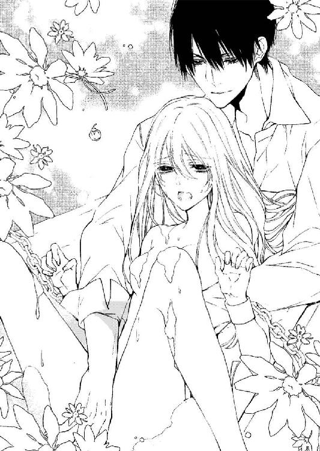
くちゅっと雌芯を摘んで蕾に何度も指を出し入れしてくる彼の声に、からかうような甘さがある。ヴィアンカはその口調にまた胸がときめいて、そして身を半分に折りながら、彼の指から逃れようと身を引いては彼の胸の中にすっぽりと収まってしまうという矛盾をくり返している。
「さあ、ヴィアン様のおっしゃることは本当ですよ。レジオン様。ファボット公爵夫人の詩の朗読会に出席するとお返事を出していることをお忘れなく」
ミリオが入ってきて、バスタオルをヴィアンカの身体に巻き付けた。
「ミリオ、おまえまさかヴィアンカを愛しているのじゃないだろうな。俺の邪魔ばかりして」
「私はご主人様のスケジュール管理と、定められた任務を遂行させることが役目ですから」
ミリオはレジオンに凄まれても、やはりまったく意に介していない。
「しかたない。ファボット公爵の城にはいかなくてはな。大きな収穫が欲しいところだ」
「詩の朗読会ですか」
「ああ、おまえも同行しろ。見事な暗記の技を見せたから褒美に社交界デビューさせてやる」
「え......本当ですか？」
ヴィアンカはぱっと表情を輝かせる。学院の令嬢たちはいつか立派なドレスでエスコートを受け、社交会に華々しくデビューするのが夢であり目標だった。優雅な貴族の婦人になれなくては到底無理な夢だったはずなのに、こんなふうに幸運に恵まれるなんて思ってもいなかった。
「喜ぶのは早いぞ。言っておくがこの社交界デビューは男として、だからな」
「え......」
「ヴァンス公爵におまえを見られては困るんだ。他の貴族にも。美しい金髪碧眼の学院にいた娘が俺の城にいるとばれるのはまずい。だから、俺の付き人〝ヴィアン〟として出席しろ」
「───はい。もちろんです。ありがとうございます」
ヴィアンカは、タオルで身を拭かれて、ミリオの手で素早く下着を身につけさせられている。シャツを纏い、ヴィアンカには時間のかかる男もののボタンを嵌められ、ズボンを穿かせられ、ジレを、上着を纏わされる。レジオンからの贈り物の金の懐中時計をポケットに備えれば、とても美しいおそば仕えの少年ができあがっていた。
「男の衣装でも十分にお美しいですよ。ヴィアン様。社交界は男色の方が非常に多いのですから、どうぞお気をつけ遊ばしてください」
「俺が片時も離さないから安心しろ。もう行く時間か。早いな」
「馬車もすでにご用意してありますのでお早くどうぞ。遅刻は厳禁ですよ」
ミリオは普通の声で言ってから、ヴィアンカに聞こえないように小声でレジオンに告げる。
「レジオン様、私は再度ジル伯爵のところへ行き、なんとか証書を受け取ってきますので」
「頼む」
レジオンは一言二言指示を与え、ミリオはすぐに部屋を出て行く。しばらくすると正門へ彼の乗った馬車が走って行くのが見えた。
「ジル伯爵と言うのはもしや......私の叔父の？」
「耳がいいな。そうだ。おまえの親権を手放しているのか知っておかなくてはいけないから」
「そうですか。あの......それで......」
「さ、馬車に乗せるぞ。遅刻をしたらおまえのせいだ」
レジオンは濡れた上着とシャツを着替えて、シルク地の黒色の上下の服に身を包むと黒のシルクハットをかぶる。そうしてせかすようにヴィアンカを馬車に乗せた。
「今日の服装はあまり軍人らしくないのですね。宮廷服のようです」
「軍服で夫人方の朗読の会にいくのは仰々しいからな」
レジオンは走り出した馬車の中でも、ヴィアンカの叔父の話をするのを避けようとしている。
「あ、あの、学院長からのお手紙が来ていませんでしたか？」
「来ているとどうなんだ？」
「あの......」
「学院に戻りたいか？ 叔父上の城に引き取られたいか？ それとも俺のもとにいたいか」
「それは......もちろん......レジオン様のところでこのまま......」
ヴィアンカが前のシートに座るレジオンに控えめに答えると、突然大きな手が伸びてきてズボンの付け根に差し入れられる。
「な......っ？」
「そうだよな。もう俺の指の虜だよな。まだどこかに行きたいと抜かすなら、もっとここをトロトロにしてやる。この馬車の中でも......してやろうか？ 無体をするか？」
ベルベッドのズボンの足の付け根にさらに指先を潜りこませながら、レジオンはそのままヴィアンカの身体を自分の膝の上にかかえ上げた。
「あ......んぅ......」
股の間に指先をねじ込まれて、ヴィアンカは悶える。
「どうだ？ 気持ちいいか？」
「ンぅ......う......あ、こ、これも......拷問ですか？ それともいやがらせ......ですか？」
レジオンをソファのようにして座ることに罪悪感さえ抱きながらも、ヴィアンカは彼の指先が身体をまさぐってきているのを防ぐこともできずにいる。
背後から耳朶を囓られて、甘く吐息を吹きかけられれば、まさに拷問のように彼の上で身体を跳ね上げさせる。どぎまぎしながら、ヴィアンカは、身を固くしてその甘噛みを受け入れるしかない。
「ふふ、やっぱり男のなりのほうがいいな。ここにすぐ指を入れられる」
確かにズボンのほうが女性のドレスより、身体の線もはっきりわかりやすいだろう。
「嫌がらせですか？ せっかく社交界に出るというときに、下着が汚れるのは......困ります」
包帯を巻かれている胸にまで彼の手が絡みついてくれば、さらに子宮あたりの性感帯が蠢き始める。喉の奥に、甘い呻きを飲み込みながら、肌の温度がしっとりとあがっている。
「嫌がらせ？ まあ、そうだ。そうとってくれてかまわない」
ふふっと、あまり見せなかった上段に構えたような笑みを覗かせ、レジオンは車窓を見やる。
「ああ、もうじきつくぞ。たっぷりとおそば付きとしての態度を披露しろ。俺にべったりとくっついていろ。そうしたら......女性もよってこない」
「私は、レジオン様の女性よけですか？」
「ああ。最近令嬢たちの色目がすごい。俺が結婚を勧められていると噂が流れているからだろう」
「結婚するのですか？ 女性が苦手なのに？ 顔も覚えられないのに？」
「一人だけ......したいと思っている女性はいる。今は障害があってなかなか難しいが」
ずきんと、胸の奥が何かに刺されたように痛んだ。
（まさか、私のことじゃないわよね。そんなのうぬぼれも甚だしいわ。私には彼のことを思うだけでも大きな障害があるの。身分も育ちも違いすぎて、しかも逃亡している身......レジオン様のそばにいるだけでもおこがましいのに......そんな、どうして今さら胸を痛めるの？）
「どうした？」
「え......」
レジオンは無口になってうつむくヴィアンカの様子を気にしていたらしい。
「あの、どうして女性が嫌いなのに、夫人ばかりの詩の朗読会に行くのですか？ 他のイベントやパーティにもほとんど行かれないのでしょう？」
「今度のアンヌ王女の催しものに招待されている上流貴族の夫人方......おまえに覚えさせたあの手帳の名簿の貴族が多く集まるからだ。貴族の中でもトップクラスの集まりは、色々情報が集まるからだ」
「王女様の......」
「王族の警護に就く中で知ったのだが、王女は今後の王家と国家の繁栄にもっとも尽くされる方だと思っている。公正で真っ直ぐな方だから敬愛に値する」
それまで女性のことを興味なさそうに語っていたレジオンが、初めて褒め称える、その王女のことがヴィアンカにはとてもうらやましく思えた。
「綺麗な......方なのですか？」
見たことも会ったこともない。学院では王女のことは、基礎的な知識として名前だけしか教えられていなかった。
「ああ、空色の瞳と黄金の髪がとても美しい、華のある方だ。彼女が部屋に入って来れば誰もが目を奪われる。おまえがデビューするときにもきっとすぐ王女のことはわかるだろう。王女は父王の権力を笠に着るでもない、純粋なレディだ。彼女のためになら俺も命を張るぞ」
やはり、他の何を語るよりも生き生きとしている。
もしかしたら、赤毛のメイドが言っていた『一人だけ特別の方がいるようですよ』。あの一人というのは王女のことかもしれない。身分違いで、なかなか思うように結婚できない。王女ならその言葉も納得できる。
「さあ、着いたぞ」
ヴィアンカの微妙な空気を感じていたのか、彼はしばらく無言だったが、やがて車窓の向こうに薄い紅茶色に染まった堅牢な城を見て口を開く。
ヴィアンカは窓の外にその城を見て、改めて帽子を被り直した。
馬車が門を通過し、庭園の円形の噴水周りの石畳に停車する。この城の客人は、皆この石畳に円を描くように馬車を止めるようだ。御者が開いた扉から、レジオンは素早く降りると歩き出し、ヴィアンカは遅れまいと大股になって、それが女っぽく上品に歩かずにすんでいる。
「これはようこそ。レジオン様。この城に来てくださるなんて、光栄ですわ。とても久しぶりですわね。相変わらず、出不精でほとんどのお誘いは断ってらっしゃるの？」
城の玄関ホールの赤い絨毯の上で、銀色の髪の上品な婦人を見つけてレジオンがかしこまった一礼をする。
「ご招待ありがとうございます。仕事が忙しくて、しばしお誘いをお断りしておりましたこと、お詫びします。ファボット夫人」
レジオンは夫人の手を取ってその甲に口づける。
優雅でいて洗練された立ち居振る舞い。
レジオンの麗しい所作を、うっとりと見つめすぎていたせいだろうか。ヴィアンカを夫人は興味深そうに見つめた。
「さあ、どうぞこちらへ。皆様もう集まって詩を朗読されておりますわ。お茶は何を召し上がりますか？」
「お気遣いいただかなくても、皆様が召し上がっているもので結構です」
レジオンはどこまでもスマートに対応して、夫人と共に白い大理石のエントランスを入っていく。
巨大な円柱の立つ玄関ホールの奥に、客人たちの姿の見える広間が見える。
もうサロンは優雅な音楽と、客人たちのさざめき声に満ちているようだ。
「レジオン様。その方はお付きの？」
レジオンがヴィアンカを紹介しないので、夫人が自ら水を向けてきた。
レジオンは大広間に足を踏み入れながら、一歩下がってついてくるヴィアンカを一瞥してから、手をさしのべて紹介する。
「ああ、これは失礼。ご紹介は初めてですね。彼はヴィアン。私の付き人です」
「あら、付き人さんなの？ 美しい方だから、お友だちかと思ったわ」
それでも、夫人は小さく頭を下げてヴィアンカに手を差しだしてくる。
ヴィアンカは、彼女の手を恭しく取り、唇を手の甲につける。
そんな所作も少しは慣れた。夫人もまさかヴィアンカが女だとは思っていないようだ。
「ええ。ミリオが別件で留守にしていますので、そば仕えの彼を連れてきたのです。我が欲望も受け止めてくれるお小姓でもありますが、将来的にヴァレットにしたいと思っているのですよ。生まれもなかなか高貴な出ですので」
「そうなのですね。ええ、とても上品な方ですわ。大歓迎です」
ファボット夫人は、心からヴィアンカを歓迎してくれているようで、ヴィアンカはほっと安堵して、それまでよりいっそう胸を張って広場へと赴く。
ここで女だとばれたら、顔を潰されたとレジオンに追い出されるかもしれない。そうしたら、路頭に迷うことになる。
「ではこちらへ」
大広間の中にはいれば、白大理石の室内に、菫色のシルク張りのカーテンがドレープを描いて下がっている。ソファやサロン用の椅子もすべて菫色で無造作に、それでいて室内に花が咲くように優雅に配置されている。部屋の奥に設置されているピアノの前面には、白い花が花台から滝のように下がっていて、それもとても趣があって美しい。
詩の朗読会と聞いていたが、ピアノと奏者もおり、今は麗しいエチュードを奏でている。
客人たちは妙齢の令嬢からご夫人たちがほとんどだったが、詩の朗読を一時休んでいた彼女たちはそれまで歓談していたその唇に扇を当てて、レジオンに見とれながらなにごとか囁いている。
レジオンと共に奥に通されたヴィアンカは、彼と同様に周囲の視線をいっせいに浴びて心臓がばくばくと飛び跳ねて、息が止まりそうだ。
すべてが菫色、ソファやピアノのカバーや、そう言ったもののすべてに菫の刺繍が施されていてエレガントでいてとても上品な室内装飾だ。
ヴィアンカは部屋に入るなり、彼女たちの視線の強さにおののいた。
レジオンだけでなく自分までこんなに注目されるなんて想定外だ。まさか、この長髪が女性のようだという視線だろうか。それとも、そこはかとなく漂う女性らしさを見抜かれてしまっただろうか。
「あ......」
声にならない緊張感を、大きく呑み込んだヴィアンカの様子にレジオンは気を配っていたらしい。腰を少しかがめて耳打ちしてきた。
「おまえが美少年だからご夫人たちは皆注目しているんだ。微笑んでやれ。彼女たちのところに行って話しかけてやれ」
「はい......」
そばに行って、個別に話しかけるなんて女だとばれないだろうか。
声音だって見抜かれそうだし、男としての身のこなしだって、まだまだ怪しい。
なのにレジオンは、まるでいじめるかのようにヴィアンカをご婦人方の中に押し込んで、そうして自分だけ、数少ない男性貴族と仲睦まじく語らいあっている。
お茶どころか、ワインの注がれたグラスを何度も傾け、強そうなウォッカのグラスまで傾けている。まだ陽がある時間だと言うのに、アルコールの飲み過ぎだ。
相手の男性は口ひげを生やしたまだ若い男性で、レジオンにあえて強い酒を次々勧めているようでヴィアンカは気が気ではない。昼間からレジオンを酔わせて口説く気ではないと思うが、主は意外と悪酔いすることをヴィアンカはよく知っている。
（止めに行くべき......？ でも、出過ぎたことをすればきっと怒られてしまうし......）
気が気ではないまでも、ヴィアンカも夫人方の輪に取り込まれて、さきほどから話題の中心に置かれている。
ソファに座らされて、色々尋ねられている今では、勝手に席を立ってレジオンのところに行くことも難しそうだ。
そんなことをめくるめく思いながら、向こうにばかり気をとられていたからだろう。
「ねえ、ヴィアン様。さあ、どうぞこの詩集を読んでくださらない？」
いつの間にか、淡い空色の詩集を白い手で差しだされていて、はっとした。
差し出しているのは、濃厚な赤色のドレスに身を包んだ、まだ若い令嬢。
褐色の長い髪のこまかなウエーブが、豪華な衣装以上に小さな顔を引き立てている。胸もとにルビーのチョーカー。指にもルビーが輝き、華やかなドレスに身を包んだセンスのよい令嬢だ。
そしてその令嬢の装飾品やドレスにも見とれていたヴィアンカを、周囲の令嬢たちは逆に熱心に視線を巡らせ観察していたらしい。
「さあ、どうぞ。是非読んでくださらない？ ヴィアン様」
集中していた視線の中で、ヴィアンカはドロワー公爵夫人の声にはっとして詩集に目を落とした。
壁際のソファに座る夫人方も今は皆、詩集の本を手にしたヴィアンカに視線を注いでいる。
ヴィアンカは慌ててそれに目を走らせて、詩を暗記した。
ページを閉じると、そのボードレールの詩、〝悪の華〟の一節を朗読する。
幸いにも、それは修道院でもよく読んでいた詩集にあったもので、ほとんど暗記していたほど好きな詩だった。
ヴィアンカはするするとそれを口にして、感情込めて読み終える。
しばらく、広間に沈黙が流れ、ヴィアンカは何か間違ったのかと、心臓をすくめた。だがまもなく、いっせいに周囲から甘くせつなげな嘆息が漏れ聞こえてきた。
「ほう......」
「従者様。とてもお美しい上に朗読までお上手ですわ......」
「ただのお付きとも思えませんわね。レジオン様のお供ですもの。お小姓さんなの？」
「え？ あの......」
「ここだけのお話、レジオン様は美しい殿方に囲まれているのがお好きなのでしょう？ 舞台女優もお好きね。夜な夜な街に出て遊んでいるのは、舞台俳優や殿方たちと親交を深めるためなのでしょう？ 宮廷の婦人では物足りないのね」
「そうなのですか？」
「あら。お供をしているのではなくて？」
レジオンが〝壁の染み〟になってから、急にヴィアンカの周囲には夫人方が集まってきて口々に彼のことを訊いてくる。
「あの......そうですね。あまり他言してはいけないと申しつけられておりますから」
男として、付き人として、慎重に答えなくてはいけない。
「ええ。社交の場では堅くて軍人気質のレジオン様の付き人ですもの、口が軽いわけがないわ」
「レジオン様のように王宮内でも軍事関係を仕切っておられて、昔から王女様とも親しい方は宮中での人付き合いが大変なのよ。遊ぶのも、後腐れのない人のほうがいいのでしょう」
「ねえ、私たちは寂しいけれど。本日いらしていただいただけでも......。そう言えばレジオン様はどちらへ？」
「あの、少々気分が悪いと。外の空気を吸いに......」
「ああ、そうですのね」
ご婦人方は、さもありなんというように微笑んでヴィアンを見つめる。
「あの、レジオン様はいつもそのような？」
「ええ。あの方の香水嫌い、化粧嫌いは有名ですもの。ただ美しいものはお好きよ」
「そうなんですか」
「ええ。だからこのお城にもいらして、よくギャラリーを観覧されていらっしゃるわ」
「ギャラリー......」
「ええ。ご夫人とご主人のル・ファボット様は美術品にとても造詣が深くていらっしゃるから、この城の階上でも回廊がまるごと美術品の展示場になっているの。素敵ですのよ」
皆、ヴィアンカがここではただのレジオンの付き人であることを忘れているかのように、まるで招待された貴族同様に話しかけてくれている。
誰もがヴィアンカにお茶を勧め、軽いリキュールまで薦め、椅子を勧めてくる。
そのときレジオンがやってきて、「少し外の空気を吸いたくなったから、外に行く」と言う。渡りに船だと同行しようとしたヴィアンカを、彼はさりげなく止めた。
「ああ、おまえはついてこなくていいからここにいてくれ。ご夫人方と共にいて親しくしてもらえ。社交界にデビューするのにいいきっかけになるし、俺と一緒にどこかに姿を消したのでは、そういう〝怪しい仲〟だと騒がれて王女様にも知られてしまうからな」
そうふざけた様子で言って、ヴィアンカをさしおくと、自分だけ部屋を出て行ってしまう。
「え......レジオン様......そんな」
そんなことをされては困る。さきほども、心臓が胸を裂いて飛び出すかと思っていたのに、部屋に彼がいなくなっては万が一の時になんの助けも期待できない。
「まあ、ヴィアン様。こちらにいらして。素敵なハイトーンですわね。お若いですのね？」
リア夫人がヴィアンカを自分の座るソファのほうへと招けば、ドロワー夫人もまけじとして話しかけ、指先をくねらせてくる。
「長くて綺麗な金色の髪。レジオン様のお連れは長髪の方が多いわね。お好みなのね」
「ええ。本当に。それに誰もがお美しい貴公子ばかりで。ヴィアン様はどちらのご出身？」
レジオンが、覚えろと言っていた名簿と特徴のおかげで、ヴィアンカは、誰が誰なのか、そうしてその生い立ちや性格、社交界での地位などもこうして話しかけられるだけでわかる。
こうしてすぐにも社交界に連れ出すつもりで、あんな無茶な暗記をさせたのだろうか。だとしたら、罰でも何でもないような気がするけれど、レジオンの意図は本当に謎だ。
自分がもしドレス姿でこの場所に来ていたら、夫人たちも同性として別の反応を見せたかもしれない。
ヴィアンカはレジオンの付き人としてしばらくは、夫人たちと会話の相手を無難にこなし、自分の生い立ちについてはぼかして語っていたが、レジオンはいっこうに戻ってこない。
まさかと思うけれど、まさか、こうしてここに放置されることが彼のいう嫌がらせでいじめで、『罰』の一つなのかもしれない。
それでも、社交界で、宮廷貴族の中でも上流階級に属するこの詩の朗読会に集うものたちの前で、付き人としてきた自分が恥をかくことは、レジオンの体面にも関わる。いくらなんでもそれが狙いでここに放置していくわけはないだろう。
（ではどうして......？）
よほど気分が悪くなったのか、どこかで倒れているのではと、気になって仕方ない。
自分が捜しにいかなくては手遅れになるかもしれない。ヴィアンカは内心焦って、そっとサロンの外に出ると通りがかったボーイを捕まえて尋ねる。
「あの、レジオン様を見かけませんでしたか？」
グラスとカップをトレーに乗せているボーイは、怪訝そうな顔をした。
「レジオン様？」
「黒髪で鋭い青緑の目の長身の男性です。独特の雰囲気のある方で黒い服の......」
「ああ、その方でしたら......ずいぶん前に階上に向かわれたようです。おそらく五階のこの城舘の主人の書斎へ......尋ねられましたから」
ヴィアンカは言われたようにその階段を上がっていく。
階上に上がって長い廊下の途中の部屋の扉が微かに開いていた。
そっと開けば奥のほうで人の気配がする。レジオンだろう。そう思って扉を開け放つが、中に見えた影は書斎机を勝手に開けてなにやら書類を開いてはそれを確かめ、つぎつぎとまた新しい書棚を開いたりしている。
まるで家捜しだ。ヴィアンカは声をかけていいものか躊躇して、なぜか身を隠した。
彼が書棚からかき集めている書類に目を通している様子が、恐ろしかったからだ。
その視線は手にしている古そうな紙挟みや、記録書本のようなものに注がれている、それが斬るように鋭かった。
レジオンがいっていた有用な情報を集められれば、と言っていたのはこのことだろうか。
部屋の隅に隠れたままヴィアンカは、レジオンに対する考察で頭の中を占められている。
カーテンに隠れながら窓の外にふと目をやると、そこに美しい令嬢の姿が見え、その栗色の髪と菫色の目に見覚えがあった。
（リリー......？）
髪は貴婦人のように結い上げられ、フリルが揺れる白いパラソルを回しているがリリーに似ている。見ている間に、彼女はゆっくりと歩いて梢の陰に隠れてしまう。
（リリ......ー？ でもこんなところに、偶然リリーがいるなんてことがある？）
気にしているから、髪色が同じなら誰でもリリーに見えてしまうのかもしれない。
それでもヴィアンカは立ち上がって、その方に視線を巡らせる。だがその動きでレジオンから隠れていることをすっかりと忘れていた。
「そこ......誰だ？」
ふいに、書棚のほうから声がこちらに向かって投げつけられる。
その声の鋭さに驚き、ヴィアンカは慌てて、部屋から逃げ出した。
（何？ レジオン様は......いったい何をしていたの？）
階段を駆け下りて、庭園の片隅で、先ほどの彼の鋭い顔つきを思い出す。あんなに怖い顔つきをしていたのを初めて見た。自分を誰かのスパイだと疑って責めて来たときよりずっと恐ろしい表情だった。
この城の持ち主、ファボット公爵の書斎に忍び込んで何をしていたのか。
ヴィアンカは階段を駆け下りて、階下にたどり着く。庭園にでて、リリーの姿を捜したが、もうどこにもあの白いパラソルをかざした貴婦人の姿はない。
詩の朗読会に遅れて来た貴婦人だろうか。
ヴィアンカは大広間に戻って、栗色の髪の彼女の姿を捜す。だが、そこに集う貴族の中にあの彼女らしい姿は見えない。
ヴィアンカが戻ってきたのを見つけ、夫人が声をかけてきた。
「レジオン様を捜しに行かれたのでしょう？ いらっしゃらなかったの？」
「あ、ええ。見つからなかったので......戻ってきました。ここにいたほうが確実ですから」
「まあそうですわね」
「でも、ヴィアン様もとてもお綺麗ですわ。レジオン様が女性に興味がなくなるのもわかりますわ」
自分が男性としてここにきている。それを心に新たに刻んで、ヴィアンカはきりりと引き締まった表情を夫人に向ける。
「このお城は庭園もとても素晴らしいですね。見て回ってもよろしいのでしょうか？」
「ええ。主人の書斎は彼が五月蠅く言いますから鍵をかけてありますけれど、それ以外は庭や絵画、美術品を見ていただくためにほとんどすべて解放しておりますわ」
「そうですか」
さっきレジオンが入り込んでいたのは、おそらくこの城の主人の書斎だ。
「レジオン様のお城は違いますでしょ。軍部にも属していますし機密事項も多いお方ですもの。ときおり逆恨みされて、お命を狙われたりもされるとか。危険ですわよね」
夫人は、おっとりとしたスカイブルーの瞳を向けてくる。
他人に警戒心を抱いていないのも、よい生まれであり恵まれた環境に育ったゆえだろう。
「ああ、回廊に飾ってある絵をご覧になった？ 最近夫が気に入って購入した絵画ですの」
「ええ。素晴らしい絵ですね。ご主人の趣味ですか」
ヴィアンカは、声音を低くしたまま、感動を見せるために力を込めて褒め称える。
「ええ。主人はヴァンス公爵と共に、国内国外問わずよく美術品のオークションにも行っていますから。今日はセント・クレイド学院に出掛けてしまって留守なのですわ。ヴィアン様を紹介したかったですのに」
リア夫人はそう言って、ヴィアンカをソファに座らせ、また紅茶を注いでくる。
「セント・クレイド学院......ですか？」
「ええ。よくそこの学院に見学会とかで招待されるのですわ。そうだわ。ヴィアン様は、王女様のお茶会にもいらっしゃるの？ この週末、王宮の離宮で開かれるお茶会です」
「いえ。聞いておりませんが。レジオン様は職務で大変お忙しいですし......」
「でも、王女様の直々のご招待ですもの。レジオン様も当然顔をお見せになるわ。そのときヴィアン様もいらっしゃったら、きっととびきりの美少年が登場したと話題になりますわ。かの王陛下の片腕のザッハビル様もご子息を連れていらっしゃるそうだし」
「ザッハビル......様ですか？」
ふと、どこか嫌な名前だと思った。
誰だっただろう。名簿の中で覚えたうちの一人かもしれない。
「ええ。ザッハビル・ド・ヴァンス公爵です。大変お忙しい方で、いつも国内外を飛び回っておいでです。信心深くて各地にある修道院や寄宿舎の貧しい子供たちに対する援助を惜しまず、聖人のようなお方だとよく尊敬されて......支援して......」
「───ッ」
その説明を聞いて、ヴィアンカは驚いて息を呑んだ。
修道院や孤児院に多額の寄付をしている〝ザッハビル様〟と言えばあのザッハビル・ド・ヴァンス公しかいないだろう。
訊きたくもない嫌な名前を聞き、不穏な胸騒ぎに手にしていたカップが小刻みに揺れ、ヴィアンカは慌ててそれをティーテーブルに下ろす。
学院長のあのは虫類のような目。鋭くねっとりとした目になめ回されるあの感覚。
薄暗い室内で、シスター・マーガレットに押さえられながら、秘所まで指を入れられるあの不潔な感覚が肌の上に甦る。
「───ねえ？ ヴィアン様。レジオン様は本当に遅いですわね。見てきましょうか」
「え？ あの、大丈夫です。まもなく戻ってくると思います」
ぼうっとしていたヴィアンカは、慌てて彼女に取り繕った笑みを向けた。
「あら、そう？」
「ええ」
「そうね。これほど美しい少年を、いつまでも放ってはおかないわね。ヴィアン様が舞踏会にでも行かれればあっという間に社交界の貴公子になるわ」
「そんなことは......。私はあくまでレジオン様のお世話係としてここにも伺っただけですし」
「その美貌で、お上手で心惹かれる朗読をされるのですもの。この指先もみればピアノもお上手そうだとわかりますわ」
リア夫人と、ドロワー夫人がヴィアンカの両脇に座って、取り合う形になっている。
ドロワー夫人が指にびっしりと大粒の指輪を嵌めた手で、ヴィアンカの手に手を重ねてきた。
女性の勘で、気づかれるかもしれない。ヴィアンカはこれ以上ここにいてはいけないと思い、慌てて席を立つ。
この城の主人が、あのザッハビル・ド・ヴァンス公と親しいと知った。そしてここでレジオンが何かを探していることも。そしてリリーらしき姿の貴婦人もいた。これはもしかしたら収穫としては大きなものかもしれない。
あとは女だとばれる前にここから去ったほうがいい。
ヴィアンカは、庭園に出て、そして大きく息を吸った。
レジオンが女性の香水の匂いがダメだといっていたのもよくわかる。
それくらい、大勢の上流階級の夫人が集まる空間は、強烈な香水の匂いが充満していた。
肺の中の空気を吐き出して、そして新鮮な緑の匂いを吸う。
ヴィアンカは、そうして頭痛がしそうな匂いを振り払ってレジオンを捜す。
思えば、苦手だと言い張って止まない香水の混ざり合う空間で、リキュールまで飲むから気分が悪くなるのではないか。そう思うが、それが口実でただ主人の書斎に行くことが目的だったなら、レジオンの真意はまったくわからなくなる。
（やっぱり......あの部屋に行くための口実で私を一人置いていった？）
庭園から回廊に向い、まだあの部屋にいるのではないかと階段を上がりかけたヴィアンカは、薔薇の庭園の中を走ってくる、青年の姿を見つけてはっとして足を止めた。
（ロイス......様？）
「ああ、君」
間違いない、黄金の髪を風に揺らしながら、青年がヴィアンカのほうへやってくる。
どうしよう。まさか、自分に気づいたのだろうか。
ヴィアンカは心臓を激しく打ち鳴らしながらも、足がすくんでそこから動くことができずにいる。
「ねえ、君。ここで......今日詩の朗読会があったはずですが、まだ客人は中に？」
ロイスは目の前にやってきて、ヴィアンカに話しかける。
「あ......」
「ファボット伯爵は書斎にいらっしゃるかな」
ロイスは、さらに近寄ってきて、目の前に立っている。自分を男だと思っているのがその様子からわかった。
ばれてはいない。
それはほっとすることだったが、ロイスにはばれてしまってもいいような気がしてヴィアンカは何と口を開いていいのか逡巡している。
（ロイス......様......）
まだあの寄宿舎を最後にしてからそう経ってないのに、もうすごく懐かしくて泣き出しそうになる。彼と思いがけず会えたことが嬉しくて、ヴィアンカは喉から声が出てこない。
だが、彼がヴィアンカを眺め、そしてその黄金の髪を何かを思い出そうとするように見つめた時、背後から、ヴィアンカの腕を掠うようにしてレジオンが現れた。
「おまえ、何をしているんだ？ さっさと馬車に戻れ。帰るぞ」
その姿を見てロイスがレジオンに歩み寄った。
「レジオン！ どうしてここに？ まさか詩の朗読会に来たのか？ 君が？ 君はここのファボット公爵は苦手じゃないのか。むしろ嫌っているはずで......」
ロイスの意外だという驚きの声をレジオンは、冷えた目で諫めた。
「ロイス。招待された場所で、そのように騒ぐのはいかがかと思うな。君が思っているより私は......大人だ。多少の互いの齟齬があっても、最低限の社交性は持ち合わせているからな」
レジオンは、まだそこにいてロイスに眼差しを向けているヴィアンカを叱責した。
「早く馬車に戻り、すぐ帰ると御者に伝えておけ。いいな」
ロイスは今でも目の前の少年をヴィアンカだとは気づいていない。
ヴィアンカはそれを告げることをできないまま、レジオンの命令通り馬車に戻った。まさかロイスまでここにいるなんて。この城の主を訪ねてきたなんて。
もしあそこでロイスと話していたら、彼は自分がヴィアンカだとわかっただろうか。
自分が学院からいなくなったことで、学院はどうなっているだろう。学院長はどうしているだろう。
馬車止めに行き、ブラッド家の紋章の入っている馬車を見つけて、御者に出発の準備を促す。そうしながらも、レジオンとロイスのことが気になって仕方ない。
ロイスにリリーのことも訊きたかった。彼は自分が修道院から消えたことも当然知っているはずだ。心優しい正義感のロイスの性格なら心配してくれているに違いない。無事にいることを彼にだけは伝えたい。そう言ったらレジオンは反対するだろうけれど。
「おい。何をぼけっとしているんだ？ 早く馬車に乗れ！」
ロイスの姿を求めて木立のほうにもう一度足を向けていたヴィアンカは、再び厳しい声に叱責されてレジオンを顧みる。
「おい。どこに行く？ 勝手な行動は控えろ。そんなことで俺のそば仕えをまともにこなしていると思うなよ。お仕置きを受けたいのか」
レジオンは、険しい表情で叱責しながらヴィアンカの腕をとると、馬車の中に押し込んだ。
「あ......」
「『あ......』じゃないぞ。そんなに女みたいに可愛らしい声を出す男がこの世界にいるものか」
革のシートの上に、突き飛ばされるようにして倒れ込んだヴィアンカを、レジオンはやはり冷たい視線で見下ろしながら叱責を止める気配はない。
「レジオン様......ロイス様はどうしました？ ロイス様も朗読会に招待されたのですか？」
「俺が知るか。御者。早く馬車を出してくれ、城に戻る」
「承知しました」
御者はそう答えると、即座に馬の手綱をとって走らせ始める。石畳の噴水回りの道をカーブして門に向かい、そして門を抜けるとそのまま城に向かって走り出した。
ヴィアンカは、後ろの窓にへばりつくようにして、遠ざかる城を見送っている。リリーによく似た貴婦人のこともロイスのことも、気になって仕方なかった。
「レジオン様。ロイス様に一言お話ししてきてはいけませんか？ もう二度と会えないかもしれなくて......」
「ダメだ」
「でも、ロイス様はきっと私のことを心配して......」
「心配している？ ロイスがか？ どうしてだ。おまえのことなどロイスはみじんも心配などしていない。おまえはどうしてそんなにロイスを気にかける？ 好きなのか？」
「それは......」
レジオンは、ヴィアンカの結わえた髪を手にとって絡ませながら、同時に胸もとを戒め縛り付けている、包帯の線をなぞる。
「図星か。ロイスのことを愛しているのか？ 俺を好きだと言ったのは、拷問されて苦しまぎれについた嘘か？」
「レジオン様、そんなんじゃありません......。でも......リリーが......」
リリーのことを口にしたら、彼は今より機嫌が悪くなるだろうか。
「ここにおまえを連れてきた目的は......ロイスに会わせることじゃない」
包帯が解かれ、その包帯で、左右の足が大きく括られる。
左右に開かされた足の間に、レジオンのヴィアンカを苛むほどの巨大な雄がそそりあがってきているのがわかる。
「ロ、ロイス様......は、心配していませんでしたか？」
「おまえがいなくなったことを？ ヴィアンカ・ド・ルセルが寄宿舎からいなくなったことを？ あの寄宿舎からはいつの間にか少女が消えることなど日常茶飯事だ。特に孤児は。ロイスもそれは知っている。おまえが俺のところにいることがそれを証明していると思うが？」
「院長が金持ちの貴族に娘を売るからですよね。でも、ロイス様はきっとご存じありま......」
レジオンの思いこみを糾そうとしたヴィアンカの口は、ふいに塞がれた。
「あ......」
彼の唇がヴィアンカの言葉を吸い取り、そしてそれ以上言葉は聞きたくないというように舌を挿入してくる。しなやかな舌がヴィアンカの〝ロイス〟という名前を溶かし、唇から流れ出るのは甘い唾液だけにしてしまう。
口腔がもれなく彼の厚みのある舌で撫でられて、卑猥なほどの感覚を生み出してくる。奥まで挿入される舌は、まるで下肢の痺れまで生み出して、ヴィアンカは膝のズボンのベルベッドを指先で掴んでその感覚を消そうとした。
だが、レジオンはそんな指先の動きさえ読み取ったらしい、指をヴィアンカの指に絡ませながら、そのまま足の付け根に挿入してくる。
「うぅ......ッ」
「あいつの名前を口にしていいなんて......いってないぞ。他の男を......見てはいけない」
蜜蠟が塗られたように輝く唇が命じる。
彼の下腹部がいつしかズボンをくつろげられ、そそり上がっているのにヴィアンカが気づいたのは、彼の手がヴィアンカのズボンの中にまさぐりつけ、秘裂に指先を挿入し始めているときだった。
「あ、の......。そ、れは......や......。あ......ッぁは......ぁん......ぅ！」
ヴィアンカはその雄の見事さに恐怖して、必死にレジオンに懇願する。だが、すでにヴィアンカの身体を我がものにしようとしているかの彼にたいしては、まったく無駄な行為だった。
「ヴィアン。今のおまえは......男だろう？ 女みたいな声は出すなよ」
膝の上に載せられて、背後から囁かれる。甘い囁きなのに命令口調のレジオンのその吐息だけで、乳房がきゅっと硬くなる。
「あ......や......」
布越しの愛撫が激しさを増し、指の形がはっきりとわかるほど彼の指がヴィアンカの濡れた柔肌にくい込んでくる。
いつの間にか、蕾をほぐすような精緻な指先の動きの傍らで、ヴィアンカのズボンのボタンが外され太股まで露わにされていた。
そうして纏うもののないヴィアンカの下腹部に、レジオンの指先が這い回り、肌に滑る湿り気を帯びた指先が、秘裂の中を前後にゆっくり擦り始めている。彼の指で谷間の中で尖らされた小さな芽が、より激しくいたぶられて、震えながら充血していく。蕩けるまでに熱くされて、そこが指先に摘まれれば、ヴィアンカの胸が萌え始め、開花間近の蕾のごとく膨れあがる。
「ぁ......あぁぅ......んぅッ」
背筋にバネでも入れられた人形のように、身体が弾けてレジオンから離れる。が、彼の手はそれを押さえつけ、乳房を揉む手はより荒々しくなって、濡れた谷間を繊細にまさぐっていた指先とは別人のもののようだ。
胸が大きく変形するほど、甘く強く揉み込まれ、指先が心音さえもぎとっていく。
谷間の中でぐちょぐちょと狂った音を立てさせられて、ヴィアンカは口の奥に喘ぎをこらえる。
「んん......ぅ、は......ぁッ」
くい込んだまま、秘裂に添って何度も擦りつけられている卑猥な快楽。
彼の指の動きに操られるように蕾の奥が、とろとろと溢れる蜜で谷間も熱く潤ませてくる。
雌芯が指先で掻かれるようにして感覚を敏感に尖らされ、すべてそこに与えられる甘い愛撫をねだるように膨れてくる。
「あ......うぅ......ん！ や......」
震える手で、レジオンの手を押さえつけ、身体から離そうと試みる。
「だめだ」
「でも......こんな......、だめ......で......す......馬車の......中で......」
「馬車の中だからいいのだろう？ それに......俺を挑発したおまえが悪いのだ」
「挑発......だなんて......わ......私は......」
「しただろう？ ロイスの名前をしつこく呼んだ」
ぐぐっと淫唇の奥深くに潜り込ませていた指先が、蜜のたまったそこからなぞるように恥丘に向かって泳いでくる。
「あ......は......うぅ......！」
ヌルつく感じに思わず喉から声が漏れる。
下半身がきゅっと硬直して、彼の指先に感覚が集中する。そこをまた、小刻みに揺るがせながら、その指はヴィアンカの中を掻き乱すように蠢き続ける。
「感じるんだろう？ 俺の指に。この唇に」
唇が耳元を咥え、そして溝を丹念に舐めてくる。小さく括れた腰回りを撫で、締め付けながらその指が淫唇を愛撫してくる。
蠢いて彼から身体を離そうとすればするほど、拘束は厳しくなって、そしてもう片方の手までもヴィアンカの太股が閉じないように、しっかりと広げながらも硬く締め付けてくる。
命令の声が甘く聞こえるなんてあるはずがない。なのに罰を与えられているはずの身体も、レジオンの熱い指先を感じてほぐれる蕾も、囁かれる酷い言葉にも身体は快楽に染まっていく。
「あ......や......そんな......」
馬車が揺れている。
もし御者が振り返ったら中を見られてしまう。
覗かれたら、ここでレジオンが自分の下肢を裸にさせていることに気づかれてしまう。
「だ、だめ......です。や......めてください......」
「お小姓の務めを果たせ」
「でも......」
「ここに連れ出したのはおまえをロイスに会わせるためじゃないぞ。俺がおまえを見せびらかす場だったんだ。なのに台無しにしてくれて......俺の気分も台無しだ」
〝あのこと〟を訊いてみたいという思いが脳裏をよぎった。
彼は主の書斎で何をしていたのか。ロイスは主の書斎に何をしに訪れたのか。
ロイスは今も自分があの城の使用人だと、男だと思っているのだろうか。
「従順であれ。規律であるこの俺に従えばいい。おまえは犬のようにこの俺の言いなりになれ」
「は......はぃ......ッ。言いなりに......なります......から......」
その詰まった喘ぎ声のせいだろうか、それとも耳朶を咥えられ、舌先で耳の中にまでねっとりとした愛撫を施されたからだろうか。
滾る欲望を抑えつけ耐えていた彼の亀頭が、とうとうぐっと膨れてそそり立つ。
それまでと違った内壁を擦られ、硬くなった亀頭が濡れそぼる蜜壺の中を抉るように突いた。
「あ......あぁんッ......！ や......ぁだ、だめ......えッ......」
思わず身体を浮かせて、彼の拘束から逃げようとする。だがすぐその身体が抱きすくめられて、彼の厚い胸板に押し付けられていた。秘裂を擦りながら、挿入が始まっている。
「お仕置きだ。俺のいうことを訊かなかった罰だ。ここで俺の身体の怒りを慰めろ。俺の身体に宿ったせつない苛立ちを、その元凶であるおまえが鎮めなさい」
ぐぐっと押し入れられ、蕾を引き裂いていく肉塊。貞淑にすぼまろうとする蕾の中に、奥へ、奥へとずり上がるように雄の亀頭が穿ってくる。激しすぎる圧迫感に、ヴィアンカは口から蕩ける唾液を溢す。
「うぅう......ん！ は......あ、ぅう......ッ」
息を詰めなくては、その強い異物感を受け入れることはできない。
彼の体温をお尻で受け止め、彼の怒りにそそり立った欲望の丈を小さな淑女の蕾が受け入れる。巨大なそれを挿入れるのは、体熱を上げ、膣道を蕩かせなくては到底無理な大きさだった。
「どうだ？ 罰の味は」
「ぁ、あ......熱い......です」
「他には？」
「ふ......ぁ......ッ」
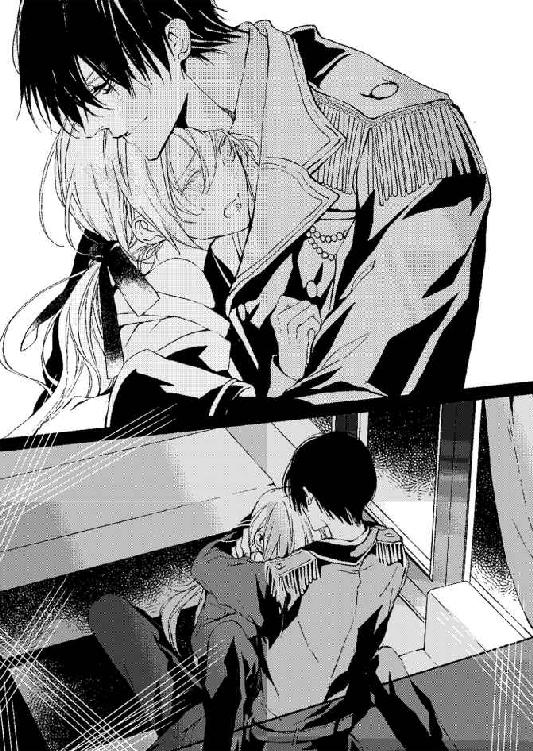
「ちゃんと言葉にしなさい。俺はどうだ？ 俺のこれはどうだ？」
「ふ、太すぎて......入...りま......せん......」
「入れなさい。俺のすべてを受け入れるのは、おまえが男のなりで城に侵入したときに契約した任務だろう。俺がおまえの主人になるというのはこういうことだ」
彼はヴィアンカの小さな雌芯をずっと指先で摘んでは、チュクチュクと転がすようにいたぶっている。その官能に甘く寄り添うような指遣いがヴィアンカの喉に甘い愉悦をもたらし、言葉を選ぶことすら出来なくなっている。
「わ、私で......遊ばないでぁくだ......さ......あぁ......ん......ッ！」
そう口にした途端、乳首も雌芯も激しく指の腹で摘みあげられて、ヴィアンカは悶えた。
「遊ぶように乳首を、そして雌芯をいたぶるのは主人の特権」
そう言って彼は下肢をよりそそり立たせ、ヴィアンカの浮き上がった腰を掴むとゆっくりと沈み込ませる。
苦痛に腰を跳ね上げるヴィアンカの背筋に唇を落とし、うなじに、肩胛骨に舌を這わせる。
広げた舌が震える肌をなめ回せば、甘く愛されている気分が体内からわき上がってくる。
「あ......ぁんぅ......」
「お仕置きだぞ。そんなに悦んだ声を出すな」
お仕置きなのか、ご褒美なのか、ヴィアンカにもわからなくなっている。
貞淑な令嬢にとっては酷いお仕置き。
でもレジオンを求め、愛している自分にとっては甘いご褒美。
愛して抱きしめられていると思えば、今までずっと求めていたものを彼は与えてくれていることになるのだから。
「さあ、もっと奥まで入れて突くぞ」
結合して張り裂けそうな蕾を、彼の指が輪郭を撫で、泡立てた蜜でぐちゅぐちゅにする。
「あ、やあ......ん！ う、うぁ......んッ」
跳ね上げる華奢な肢体をレジオンは男根で貫き、吐息で濡れた声で窘める。
「それは男の喘ぎじゃないと言っただろう？ いけない子だな」
膣口に何度となく、抑えきれない怒りと情熱の証が深く撃ち込まれる。煮えくり返った精液が溢れて中を満たし、そそり立ったモノに、ヴィアンカの膣道が犯されていく。彼の身体にお尻を落とされて、ぐちゃっと水音が弾ける。そうされても細い器官は彼の巨大なモノを最後まで咥え込むことができずにいる。
激しすぎて、大きすぎて、苦しくて、痛い。身体の骨が砕けそう。
「硬く......て......無理......」
「俺が主人だと思えないのか？」
首を横に振る。
「俺が嫌いか？」
いっそう激しく首を振る。
「ならば、もっと奥まで俺を入れろ。命令だ」
「あ......ぁ......ああ......ぅっ......！」
美しくて残酷な人だ。
「女の声は出すな......」
痺れるような甘い美声と、とぎれとぎれの乱れた呼吸が肌の上に落とされる。
「は......はぁ......は......い、ぁあッ......んふ、く......ぁぅんッ......」
「ああ、いいぞ......そうだ。それが......お小姓の喘ぎだ。淫らに、腰を振れ。ヴィアン......」
馬車の揺れが激しくなった。土道をいそぐようにレジオンが命令を出したのだ。
激しい揺れは、スプリングの効いた車輪の上に乗った箱馬車の中も揺らし続ける。
たっぷりと敷物の詰まった肌触りのよい豪華な座席で、レジオンの太股の上に座らされたヴィアンカのそこに何度も不規則な挿入がくり返される。揺れで身体が浮き上がり、また落ちるたびにグチュグチュと水音を立て、蕾の奥から蜜が弾ける。蜜は感じていることを雄弁に語り尽くそうとでもいうように、彼の太股をびっしょりと濡らす。
「レジオン......さ、ま......。だめ......もう......お城に......ついてしまう......」
「城についたら......どうしてダメだ？」
「だって......」
中がこんなに熱くされて、行方の知れない快楽に炎をつけられたら、ヴィアンカは、馬車が止まったときに冷静に戻れない。身体が暴走したまま、彼に抱かれたがってしまう。
そのとき馬車の戸口が開かれたら、きっと恥ずかしい姿を使用人の前に晒してしまうだろう。
「こんな......馬車の中で......こんなコトをしているのがみつかったら......レジオン様......」
「かまわない」
「レジオン様の沽券に......女性嫌いなの......に」
「これは俺がおまえに蕩けているからしている行為じゃない。俺が女のおまえに恋して愛しているからしている欲望の哮りではない。主人以外の男のことを気にした罰だ。お仕置きだ。お仕置きの場面をどれだけ多くの者に見られようとも......俺はまったく意に介さないぞ」
「そ、そんな......」
ヴィアンカは、この甘い指先と、体内に挿入され繋げられている行為がお仕置きであってもかまわないとさえ思っている。
（でなくては......女性嫌いといわれているレジオン様がずっと私をかまってくれるはずがない......お仕置きでも......私がレジオン様にこんなふうに......繋がることを許されてるのを幸せと思わなくては......）
「レ......ジオン......さ、ま......。ズボンが......濡れてしまい......ます......」
「かまわない」
「でも、こんな......ぐっちょり濡れたら......いやらしくて......」
ヴィアンカのお尻で感じるほど、彼の逞しく筋肉の感じられる太股も、濡れている。
「おまえの蜜で濡れるなら本望だ」
「ほんとう......に？」
「ああ......そうだ。おまえのお尻は小さくて、まるで美しい少年のようだ。万が一......ロイスがおまえに近づいたら、男娼だと嘘をつくぞ。奴はおまえを嘲り、見下げて避けるだろうな。父親は最低な貴族だが、あいつは上品に育ったノーマルな男だ。俺とは濃密な関係だが」
（濃密な関係？ 父親が最低な貴族？ では......レジオン様はそれを調べているの......？）
「悔しいか？」
「い......いいえ......。でも......レジオン様が......男娼を愛していると知ればきっと王女様の失望を......買います」
「なんだって？」
レジオンの声は冷静で、それ自体に怒りも感じさせない。だがヴィアンカは自分がそんなにもレジオンと王女の仲を気にしているのだと、改めて実感させられて慌てて口をつぐんだ。
「王女様が......なに？」
囁きは甘く、その指先はもうヴィアンカを命令通り操ろうとしているかのように、熟成された巧みなものだ。
「い、え......ああ！ は......や......そんな......そんなに激しく......揺すぶらないで......く......ださ......あん......あぅッ！」
「『あん......ッ』、はなしだ。男の格好をしているなら、そんな女っぽく啼くな。やり直しだ」
レジオンはヴィアンカの足を大きく開かせ直すと、蜜壺に指の束を挿入してきた。ねっとりとした膣中が掻き乱される。
「んぅ......うぅ」
指先が壺の中で小刻みに揺れ、楽器を奏でるように精緻な動きをする。喉までせり上がってくる甘い嗚咽。そらされる喉を彼の手が掴み、腰が打ちつければ膣壁が引き裂かれ熱を放つ。
「絡みつく......肉壁......甘い乙女のそれだな。だめだ。これじゃ......もっとしつけてやらないと......おまえは今は男装の令嬢......男の振りで抱かれ、啼け！」
「は......はい......」
「さあ、ここを愛撫されたら......どうやって......啼く？」
「ひゃ......ぅうッ」
ぐぐっと淫唇が指先で開かれ、そこに彼の指が深く深く挿入される。後の蕾の回りに、男根の先がぐるっと円を描くように触れてきた。そこにまもなく熱い蜜が流れ込んで、その蜜で濡れそぼった亀頭が、また深く蕾の中にねじ込まれていく。
「ぁ......や......ッ。レジオンさ......そんなとこに......そんな......モノ......だ、めえ......ッ」
ネクタイを緩められ、それで首をくびきのようにされ、背後のランプシェードにかけられた。
これでヴィアンカは簡単にはそこから首を、頭を動かせなくなる。
馬車の大きな揺れが、ヴィアンカの蕾とレジオンの肉茎の接合を怪しくし、またひりつくような擦過と共に深く、挿すようにしている。咥え込まされているその秘所が焼けただれてくる。
「あ......うぅう......ん！ はあん！」
「お小姓だと......いったぞ。それでは可愛らしい令嬢の喘ぎ声だ。ダメだ......そんなじゃ......」
「レジオン......さ......」
「なんだ？ もっと......激しく男らしく喘げ」
「そんな......こと......あ......ッ！」
膣口を擦るように抽挿が激しさを増し、そしてヴィアンカの奥が何度も抉りつけられる。
「ここでも......こちらでも、二つのお口で啼きなさい......ヴィアン」
彼の指先が愛液でぐちゅぐちゅと酷い水音を立てながら、後の蜜口にも触れてくる。
「男......性なら......ふたつ......ないで......す......」
「刃向かわなくていい。おまえのここだけでも......細くて、狭くて......俺が拒絶されている気分になるんだ。従えよ。そして俺だけのものであれ。そうしたら永遠に可愛がってやるから」
腰の動きと共に吐き出される熱い吐息。甘い囁き。それがヴィアンカの中から蕩かされていく身体に染みこんでいく。
馬車の揺れとレジオン自身の抽挿の揺れとに翻弄されながら、ヴィアンカはいつしか自ら小さく腰を振っていた──。
「お帰りなさいませ。レジオン様」
「ああ」
「ヴィアンカ......いえ。ヴィアンはどうされましたか？ ご一緒では？」
彼が奥から抱えだしたのは、恍惚として意識を半分以上なくしているヴィアンカだった。
足がもつれて地面に倒れ込む。
「私が部屋に運びましょう。王女様がおいでです。大事なお話があるのでしょう」
ヴィアンカを大事な宝物のようにして慎重に運ぼうとしていたレジオンだったが、そのミリオの言葉で、その宝をミリオに託すことにしたようだ。
「───そうか、わかった。それならばすぐ......飛んででもいかなくてはならないな」
レジオンの声が遠ざかっていくのを薄い意識の中で感じてヴィアンカは叫ぼうとする。
（王女様に......会うの？ 行ってしまうの？ 今まで私をその逞しい腕に抱いていたのに）
『週末に王女様の主催するお茶会があるでしょう？ そちらにレジオン様もいらっしゃるはず。王女様のご招待ですもの。どんなにお忙しくてもお顔はお見せになるわ』
ヴィアンカは、体中に深い充足感を得て、それでいてまだ心の隙間を埋められないまま、その言葉を耳から体内にとりこんでしまう。
（レジオン様......私だけ......見て......私だけ......抱いて......私だけ愛して......罰でもいいから......拷問でもいいから......）
どさりと、ベッドの上に下ろされる。そうしてようやくヴィアンカは瞳をゆるりと開けた。
「ヴィアン様......。お気づきになりましたか？ お着替えと入浴をどうぞ」
ミリオの扱いは、伯爵令嬢に対するものだから、こんなふうに男の服装をしているときも、唇も蜜に濡れているようなヴィアンカに恭しく穏やかに訊いてくる。
「私......これでいいの？」
「ええ。レジオン様はあなた様を求めておいでです」
「でも、王女様との婚約が進んでいると聞いたわ......私は彼に男として......遊ぶ相手として求められているだけなのでは？」
「そんなことはありませんよ。私はずっとレジオン様を見ておりますからわかります」
自信に満ちた声なのに、レジオンの自分に対する扱いには遊びと本気、それと同時にやはり誰かの意思によるスパイだという疑いもまだあるのかもしれない。
「とりあえず、入浴をなさってください。そのほうが着替えもスムーズに運びますから」
ミリオはヴィアンカの靴を脱がし、上着を脱がし、そしてタイを解いてシャツを脱がす。
向こうのバスルームから、湯気の香りが漂ってくる。
城という古き良き設備が、時代遅れとされるのではなく風雅とされる中においても蛇口を捻れば湯も吹き出るのは最新式の設備だ。
「さあ、どうぞ」
「ミリオ様は......女の身体を見ても動じないのですね。それはもしかしたら......」
「私が、レジオン様の女性の恋人が城に来たときもご奉仕したか、ということでしょうか？ そんなことはありませんよ」
ミリオはリボンで結わえた褐色の長い髪を背に垂らしながら、ヴィアンカの服を脱がし、下着も取り去り裸にすると、その白い身体をバスタブの中に浸す。
まるで一番よい温度を知っているかのように、心地よい浸透圧の中で、ヴィアンカは硬直していた身体をほぐす。
そうしてミリオが柔らかなタオルで身体を洗い流してくれるのを甘んじて受けている。
「すみません。こんなことをレジオン様の執事のあなたにさせてしまって......」
「あなたをレジオン様のそば仕えとして勤めさせているのはこの私です。元は伯爵令嬢ですのに、こんな〝身体の恋人〟のようなことまでしなくてはいけないのは、この私のせいですから。レジオン様のお怒りの及ばない限りのことはさせていただきますよ」
「ミリオ様......私は......両親もない......身よりもない孤児です......」
院長の手ほどきを受けながら、高い値段で売られるのを待つばかりだった孤児。
「あなた様は、その心根も、見た目も、振る舞いもすべて気品のある令嬢ですよ。レジオン様もそんなあなた様をずっと気にかけてらっしゃいます。多少荒っぽい扱いをするときはご自分のあなた様への愛と衝動に混乱している時でしょうから、そう思って許して差し上げてください」
「許すなんて......。本当にレジオン様は私を好きでしょうか」
「ええ。間違いなく」
「好きで側に置いてくださってるのでしょうか」
「ええ、間違いなく。先ほども王女様の使いでなければあなた様を部屋のベッドまで丁重にお運びしたでしょう。それほどあなた様のことを大切に思われていますよ。レジオン様が今日あの城に赴いたのも、あなたのためではないでしょうか」
「そんな。書類を探していました。きっと書類です。犯罪の証拠の......そうでしょう？」
「そうだとしても一番の理由はあなたのことを紹介したかった。美しいそば仕えを見せびらかしたかったのだと思いますが」
そんなことをレジオンが理由にしているなんて思えない。
でもその言葉は、褒められているのだから喜ばしいことだ。
「でも、王女様と結婚されるのですよね？ もしかしたら女の私に触れてくるのは、そのための予行練習なのではないですか？ 女性が嫌いだけれど王女様とは結婚したい。だから......」
「レジオン様は香水臭く、お喋りで化粧で素顔を隠す高慢な令嬢が嫌いなのです。あの方は......ああ見えて潔癖です。幼い頃からお一人で生活して来ましたからご自身で決めたことをやり通すその意志は固いですよ。今は目的のため、あなたに秘密のこともあるでしょうが」
「目的のため......ですか？ お仕事の......王陛下の護衛任務のための？」
「レジオン様は王陛下の回りに、よからぬ貴族たちばかり集まり私腹を肥やすことを嫌っておいでです。その昔、敬愛する貴族が陥れられたのです。その貴族を助けるためにずっと証拠捜しをされていましたよ。そういう義理人情に厚いお方です。ああ見えて」
「そうなのですか？」
彼が中途半端な男だとは思ったことがない。でも行動は矛盾している。
学院から自分を救い出してくれたのに、女性は嫌い。ロイスと話そうとした自分をとても怒っていた。ロイスとは濃密な親友関係だと言っていたのに。
「さあ、髪も梳きましたし、お着替えを」
新しいシャツとタイ。そしてストライプのジェストコールに後の長い濃紺の上着を纏う。
髪は後で結わえられ、ベルベットのリボンで結わかれた。
「王女様とお供が居間にいるはずです。お茶を持っていってくださいますか？」
「私が......ですか？」
「おいやでなければですが」
ミリオは、ヴィアンカが王女に嫉妬しているのを見抜いているのだろう。柔らかく微笑む。
お茶を銀の盆に載せて運んでいく。
先ほどまで馬車の中で縛られ、お仕置きの性技を受けていた姿を王女の前に晒すのは恥ずかしい気持ちもあったけれど、それより王女の使いと何を話しているのか気になった。
「お茶をおもちしました」
ノックをして居間の中に入っていけば、王女とレジオンがソファに座って真剣な顔で声を潜め合っている。レジオンは、入ってきたのがミリオではなくヴィアンカだと気づくやいなやテーブルの上に広げられていた数枚の手紙をさっと片付けた。自分には見られたくないものらしかったが、秘密を自分にだけ隠されたようで少々傷つく。
「ヴィアン。ミリオはどうした？ 体調の悪いおまえを使うなんて、どうかしているな」
「お忙しいとのことで......大丈夫です。何か他にご用はございますか？」
「あら、とても綺麗な執事ね。新しい方？」
「ええ。まあ」
「あなたの好きそうな上品な振る舞いね。おとなしそうで、好みなのだとはっきりわかるわ」
向かいのソファに座る豪華な薔薇柄のドレスの女性が微笑む。黄金の縦ロールの髪。大きな空色の瞳にはっきりとした眉。気の強そうな顔立ち。そして胸もとには太陽も負けそうなシトリンと黄金のネックレスが四連になって輝く。
見ただけで高貴な生まれ育ちなのがわかる。
「ヴィアン。アンヌ王女様だ」
「初めまして。ヴィアン」
「初めまして。お目にかかれて光栄です」
あの朗読会のときの上品な彼女だ。まさか彼女がいるなんて思いもしなかった。
強ばる表情で見つめるヴィアンカに王女は笑う。
「やだわ。そんなに緊張しないで。ここにはお忍びできたの。レジオン様が忙しいと言うばかりでちっとも私に会いに来てくださらないから。でもこれほど美少年の執事がいたら、城から出たくなくなるのもわかるわ」
「そんなこと......」
「ええ。執事とは恋はできても、結婚はできないものね。それだけが心の救いだわ」
「あの......結婚って......」
「あなたは私とレジオン様が結婚すると知ったら祝福してくださる？」
快活な眼差しがヴィアンカの心臓に突き刺さる。
「もちろん......です。主人の幸福は私の幸福......」
「そうよね。でもこの人は自分の使命と任務とでがんじがらめで」
「ですから王女。早くこの証拠を王陛下にお見せください。そうすることが国家の永久的繁栄に繋がりますから」
「わかったわ。長年あなたがそう言って証拠を集めてきたのだものね。渡しておくわ。父も覚悟をしているでしょう。今の左腕の大臣を即刻クビにする覚悟はあるわ」
「よいお返事をお待ちしております。アンヌ王女様」
「交換条件よ。明日はいらっしゃい。わかったわね？ レジオン」
「むろんです、ご招待ありがたくお受けします」
彼女はつんと尖った鼻で勝ち誇った顔をすると、立ち上がってレジオンの手を伸ばした。
レジオンがソファから立ちあがり、王女の前に跪いて真っ白な手の甲に口づけをする。
「こっちにもしなさい。レジオン様。命令よ」
レジオンが手を離すとすかさず赤い唇を突き出して、彼のうなじに伸ばした手で引き寄せた。
濃厚な口づけ。
目の前で、レジオンと王女の口づけを見るなんて思いもしなかったヴィアンカは衝撃で口もきけず、瞬きもできず見つめている。なんて絵になる美男美女なのだろう。心の痛みよりそんな想いしかすぐには浮かび上がってこない。
「───おい......おい？」
「───え？」
「使用人失格だな。王女様がお帰りになったというのになにをぼうっとしているんだ」
レジオンが目の前に立ちはだかって扉を閉め切る。
「もうしわけ......ありま......せん。あの、私失礼がなかったかどうか......」
ヴィアンカはまさに時間が一足飛びした感覚で、きょとんとし、そして確かに王女の姿がないのを見てあわてふためく。
「お帰りを見送りもしなかったのだから十分失礼だが。まあ、お茶の出し方はよかった。洗練されていたし優雅だし。だが、やはりおまえが応対に来るべきじゃなかったな」
「あの書類は？ 手紙は......なんですか？ もしや......」
ヴィアンカの目に入ってきたのは、先日もレジオンの元に来ていた水色の封筒だ。
あの封筒。学院長の部屋で見た封筒とレターペーパー。その手紙を書いたのはザッハビル・ド・ヴァンス公爵だろうか。何が書かれているのか。どうしてレジオンはその手紙を隠すのか。ヴィアンカの中に大きな不安の染みを広げていく。
「ふん そんなことを訊いてどうする？ 手紙を見たいだなど、本当に誰かのスパイか？」
「違います......でもどうして王女様には見せるのに私には......」
ずっとこらえていた思いが、口をつく。
（レジオン様は王女様が好きなの？ ただ一人の結婚したい相手として見ているの？）
「王女と自分を同列に語りたいと？」
「いえ......けっしてそういうわけじゃ......」
「では、使用人としてわざと主人に無礼をしてお仕置きをされたいのか。拷問が好きだな？」
ヴィアンカはぐっと唇を噛んだ。
「王女様と......あんなふうに口づけされたレジオン様のお仕置きは受けたくありません。女性が嫌いだなんて嘘だったと言うことになるじゃないですか。嘘はお嫌いのはず......」
レジオンは、だだっ子を見るようにヴィアンカを一瞥したがすぐ、わざと難しい顔をした。
「おい。王女様はおまえも招待してくださったのにその口の利き方は何だ？」
「え？」
「明日の舞踏会だ。おまえも共に出席するようお達しがあった」
レジオンはヴィアンカの眼鏡を外し、結わえられている長い髪に触れ掌で滑らせている。
「でも、私は使用人です。王女様の舞踏会は個人の朗読会のような規模ではないでしょう？」
「行きたくないか？ あの学院の乙女たちは皆、王宮の舞踏会を夢見て過ごしているはずだが？」
「それは......どうしてそんなことをご存じですか？」
あの学院で暮らす孤児の乙女なら強く抱く夢だが、レジオンはあの学院の女生徒じゃない。
「情報収集はしていると何度も言っているだろう。おまえも夢見ていたはずだ。知っているんだ。それに王女の招待を断ることなど、どの貴族にも許されない。今度の舞踏会は大物貴族が大勢来る。おまえに覚えさせたあの名簿の貴族たちがな」
「学院長もですか？ ロイス様も？」
ロイスの名前が出るやいなや、レジオンの表情が険しくなる。
「おまえが、『ロイス、ロイス』と騒いだら、即、その場でお仕置きするがな」
「でもこの格好ではロイス様は気づきません。ロイス様も舞踏会にいらっしゃるのですか？」
「名だたる貴族は皆来るさ。王陛下の片腕の穢れた貴族たちも......薄汚れた貴族もな......」
ヴィアンカはレジオンの手にある指輪をふと見て、そしてまた唇を結んで視線をそらした。
それまで嵌めていなかった指輪が輝いている。
黄金の指輪が彼の左手の薬指に輝いている。それはきっと王女から渡された婚約指輪だ。
「どうした？ ヴィアンカ。なんだか怒っているようだが」
「怒ってなどいません」
「そうだな。王女様に舞踏会に招待されて怒る者などいないな。どんな服で行くか？ 俺がエスコートするが」
「私は貴族としてここにいるのではないですし、王室の舞踏会に行けるような衣装も持ち合わせておりません。このままの服でよろしいのでしたら......」
「冗談だろ。そば仕えの服で舞踏会か？ 服などどうでもいいほど美しさに自信があるのか？」
「───では、行きません」
また、王女とレジオンの仲睦まじい姿を目の前にするのは、不愉快というより哀しくなる。
「王女の招待だぞ？ おまえがたかが服のことで欠席すると言ったら、主人であるこの俺が降格させられてしまう。今の地位も奪われ、名誉も奪われ、職も失い。そしてこの城も失うかもしれない、それでも行かないと？」
「───はい」
屈辱は十分だ。
執事の姿で行くことをもしかしたら王女は望んでいるのかもしれない。彼女は自分が貴族だなどと聞いていないのだから。レジオンの付き添いとして来いというだけのことに違いない。
「私を招待したのも戯れだと思いますから。明日には......忘れておいでだと思います」
「王女の記憶力を勝手におまえが推し量るな。俺がおまえを連れて行く。臣下としての務めだ」
怒ったのだろうか。レジオンの唇がヴィアンカの唇を塞ぎ、強く激しく吸い上げてくる。
「うぅ......んあ......ッ」
唇が、何度もヴィアンカのそれを吸い、舌がすぐに口腔に伸びて舌を絡め取って行く。
男の格好で、執事として雇われ、主人に仕えているというのに、なぜか身体を荒々しく求められる。それが身体が火照るほど求める行為であり、涙が溢れそうなほど屈辱的な行為でもあって、ヴィアンカは心の中をぐちゃぐちゃにされている。
勝手に彼を好きになって、王女様との婚約も喜んであげられない。祝福をするべきなのに。
「あ......の......うぅ......ん、いや......」
王女の命令だからと言って執事の服で晴れやかな舞踏会になど行きたくない。
「や......」
こんな気分でレジオンの口づけを受けるのがいやだった。
「駄々を......捏ねるな」
「違います......私は今任務中です、ミリオ様に託されたお茶を出すと言う任務を遂行させていただいています」
「おまえの主人はミリオじゃなくこの俺だが？ 白状しない限り。罰も俺がいつでも好きなときに与えることができるはずだ。そうだよな」
「せっかく......ミリオ様が着付けてくださったのです......ぬがさないでください......」
「どうりで、あんなに早く着換えてシャボンの香りをさせて現れたと思った。ミリオだよな。おまえにはまだ男のボタンをこれほど早く、正確に嵌めることなど出来ないのだから......」
「ボタン......ですか。練習します......もっと。もっと......ですから......」
「練習しなくていい、俺が外し、ミリオが嵌める......それでいい。そうだろ」
「やです......」
「ロイスのことを怒っているのか」
「違います」
リリーのことも、訊けなかった。レジオンは王女との婚約とヴィアンカの社交界への階段を一緒に考えているのかもしれない。でも、それは間違っている。
「怒ってるんだろう？」
「違います」
「俺の......最高に高級の服を貸してやる......だから機嫌を直せ」
「結構です」
「強情だな。こんなに可愛いのに、そんなに強情だと思わなかった」
「でしたら、クビでしょうか。でしたら叔父のところに戻りますから遠慮せずに......」
「まさか、おまえが戻れると思えないし俺が戻さない。叔父上はかなり悪名高い方のようだ」
レジオンがヴィアンカに向けて見せた書類の中に、莫大な金額の帳簿があった。
「それは？」
「やっとミリオが手に入れた。献金の領収書とおまえを彼に全権託して売りつけた金額が書かれた領収書。おまえをあの修道院に入れたとき、すでに叔父上には大金が転がり込んでいた」
「───そう......ですか......」
見たくはなかった。
叔父は自分を高額で大貴族に売り飛ばしそして、その相手と友好関係を結ぼうとしていたのだから。
自分はモノのように、商品としてショーケースに入れられていたのだから。
ヴィアンカはレジオンの腕から身を離して、部屋を出る。
「ヴィアン......！ 今、舞踏会に行くと言わないと......お仕置きだぞ。鎖に繋いで拷問だ」
「───かまいません。拷問は大好きですから！」
ヴィアンカは言いはなって部屋を出る。
だが、ドアの取っ手を掴んだその手に、絡みつくものがあった。
「レジオン様......」
「何で怒ってる？ 俺がおまえを馬車から部屋に運ばなかったからか？ 王女とどういう会話をしていたか何を頼んでいたのか知りたいのか？ あの手紙の中身をそんなに知りたいか」
「いい......え......」
「嘘をつくな。あの城で部屋をうかがっていたのはおまえだろう？」
「いえ......」
「俺を疑っているのだろう？ あの部屋に忍び込んで何か盗み出していたのではないかと？」
「いいえ......」
「相変わらず嘘が下手だな」
「嘘じゃないです......」
「嘘をつくな。ロイスには何でも話すくせに！ あいつにこの変装を話そうとしたのか？ ヴィアンカだとばらしたら......二度と口がきけないようにしてやる」
「あ、......ぁうう......ッ、や......」
レジオンは怒ったのか、乱暴に唇を奪ってくる。歯と歯がぶつかって、小さな火花が散る。
目眩がして、背後に倒れかかりそうになったヴィアンカをレジオンは掴むようにして抱きかかえると、奥の部屋に行き、食堂のテーブルに放り上げた。
「んぅ......ッ！」
「生意気な口を利くのは許さないぞ。あの学院長は最低のゲスだが、一つだけいいことを教えていた。あれだけは、まともな教えだ。おとなしく、従順に従うことは重要だ。とくに好意を持って接してくる年上のものにはおとなしく従え！」
「こ......うい......？ 誰が誰に......でしょう......んぅ......ッ」
ヴィアンカの喘ぐような微かな問いは聞こえなかったかもしれない。レジオンは答えずに、そのままヴィアンカのタイを解き、シャツの胸もとを開け、上着を脱がしてジレを落とす。唇を首筋に、そして胸もとに落としながら、柔らかな乳房を硬く縛めている包帯を解き、そうして上半身をすべて露わにして背中が痛むほど冷たいテーブルに押し付ける。
「おまえを......ここで食してやる。おまえは......俺にとって最高の料理だ。ディナーだからな。こうしてとびきり上等のテーブルに載せて、そしてじっくりと味わう......」
彼はワインの栓を抜き、グラスに注ぎ入れると、魅惑的な唇の奥にそれを流し込んでいく。
透明なグラスの奥にうっすら笑むように開けられている唇に、濃厚な赤いワインが揺らぐ様は何とも言えず魅惑的だ。
ヴィアンカはその濡れた唇に、体中を吸われたくて仕方ない衝動に駆られてくる。
（こんなの......おかしい......こんな......。テーブルの上に押し付けられて......私）
その唇で優しい言葉を囁かれたい。酷い言葉もぶつけられたい。
魅惑的な声で、いじめられてもいい。
唇で唇をそっと塞いで欲しい。有無をいわさず奪って欲しい。
そうしてレジオンは実際その願いを聞き届けたようにヴィアンカの唇を塞ぎ、両手を腰に当てながらじわじわとその手を胸もとに動かしてくる。
「あ......あんうッ」
こそばゆくて、でも肌の下からのけぞるようなあまやかな波動が流れ出してくる。
下肢に、そして背筋に、彼にしがみつきたくて仕方ないほどの甘い痺れが押し寄せてきて、その手が乳房の下側に流れるようにあてがわれてきたときには、もうたまらず蜜壺から蜜を漏らしていた。
「だめ......や、こんなところで......濡れ......ちゃう......」
思いの他に蜜が多く流れ出してきて、恥ずかしくてヴィアンカはレジオンの手を乳房から離そうとする。
だがレジオンはヴィアンカの胸を掴んだまま、やおら乳首を摘んでひねり回した。
「ひゃ......ッあ......ンッ......！」
ヴィアンカは肌が粟立ち痙攣するのを覚えて、悲鳴を上げる。
「どうした？ そんなに感じたのか？ 胸を触っただけだぞ？」
レジオンは意外だと言うようにヴィアンカに顔を寄せ、腰をかがめる。そうしてまた両腕を掴んで押し付けながら、片手で乳房をちぎれそうなほど揉んでその手を恥丘に落としてくる。
緊張で強ばる肌を舐めながら、ときとして強く揉み込んでくる指先は、もうお尻の膨らみを捕らえていた。それだけでもうヴィアンカの赤い唇は開き、喘ぐ声を漏らしている。お尻を揉みながら谷間に中指が忍び込んでくる。ヴィアンカが背筋をくねらせるようにして喘ぐ。
「ああ......もうこんなになっているのか......口ほどにもないな」
レジオンの指先も、もう彼女の雌芯がどんなに屹立しているかわかってしまったようだった。
「ん......ぅう、ぃ、いや......」
「まだ何もしてないのにな」
膨らみを掴まれながら、ズボンの上から後の谷間を指先が突いてくる。
「は、や......ぃや......そこ......んぅ......」
「まだ、挿入もしてないぞ？ なのにこの濡れ方は......淫乱な娘のものだ」
緑の目が、心外だと言うように開かれ、そうして改めてヴィアンカの下肢に絡みつく下着とズボンを引き下ろし、シャツの袖を引きちぎると、何も纏わないヴィアンカの身を抱えて改めてテーブルの上に下ろす。そこをベッドのようにして手足を押し広げさせ、大きく大の字を描かせ、掌を合わせ指を絡ませる。そうして足の間にせり上げてきた彼の身体の上にヴィアンカのお尻がのせられた。
「あ......」
腰を大きく持ち上げられて、彼の目の前に淫らに濡れる淫唇がある。
「きゃ......や......」
「ヴィアン。おまえはまだ男として俺に抱かれろ。いいな？ 女の悲鳴は上げるんじゃない」
淫らに囁く彼の声に子宮が震える。
「あ......んぅ......でも......で、も......あうぅうっん！」
腰を捲り上げられて、彼の方に足がかけ上げられている。そして濡れて輝く雌芯に彼の舌先で触れられた。
「ひゃ......ぅう......っ」
稲妻が走ったように痺れが起き、そこが甘く蕩けてしまう。
目の前にされている女淫の蕾から、とろりとろりと粘質の蜜が溢れだしているのがわかるからヴィアンカは顔を真っ赤に染め、そして恥ずかしさに目を瞑った。
目を開けば、自らの淫唇とそこに覗く桃色の目、そしてそこを舐めているレジオンの怜悧な顔が目に入ってしまう。
彼が美貌であればあるほど、自分のそんなところを舐め、唇に咥えているところを見るのは恥ずかしくて仕方ない。
「あ......あっ、そんな......ところ......見ないで......ください......」
輝きを落とすシャンデリアの下。テーブルの上に広げられた纏うものの何もない身体が晒されているだけでも、恥ずかしくて悶え死にそうだ。
「だまっていろ。むしろ、ただ喘げ」
吐息と、男前すぎる囁きとが、蜜に濡れた秘裂に刺さる。雌芯はその声にぞくぞくとさせられて、尖り震える。滴り落ちる蜜の音が恥ずかしいほど響き渡ってヴィアンカは悶える。
「この俺に、そんなに反応するのか。院長がこれほど敏感に育てあげたと思うと腹立たしい」
「そんな......こと......」
「おまえが俺の今宵のディナーだ。素晴らしい......供物だからな......」
本当だったら、もっと早く食べて欲しい。早く、唇も乳首も酷くして、乱して欲しい。
何も考えなくていいほどに。すべてレジオンのもので埋め尽くされたい。自分の立場も王女のことも学院長のことも何も考えられないほど、ただ愛撫と彼の性を受け入れている熱に焼けたい。
「───い......入れ......て......挿入......し......て......くださ......い......」
「何を？」
彼の激しい責めの気配に、ぬるりと先走りの愛液の弾けた肌に、ヴィアンカはふしだらなほど溺れている。
朦朧としている。
責め上げられて、体中なめ回されて、彼の引き締まった身体にしがみつく。
なんて綺麗な身体だろう。長い腕、しっかりとした肩胛骨。しなやかな肌。少し動悸を感じるのは彼も自分に欲情してくれているからだろうか。
「どうした？」
声が熱い。
湿り気のあると息が、狂おしいほど欲しくなる。
圧倒的質量が潜り込み、媚肉を押しわけ、深く深く突きたてられていく。
「あ......う！ うう......は......ぁあん！」
押し広げられていくだけで、快楽を感じる。
レジオンが、自分だけを見ていてくれる。自分だけのものになっている。その独占欲がヴィアンカの長く孤独だった心を、身体を満たしてくれる。
ぐぐっと彼の腰が推し進められ、中を硬くなったものが擦り上げていく。
「あ......ぅう......ん、あん......」
入り口が擦られながらそれを咥え込んでいく。
「ヴィアン......ヴィア......」
囁かれる声が掠れて、彼も自分のことを求めていると感じるから、ヴィアンカは背をのけぞらせながら、足を大胆なほど開いていく。
さっきまでそこを見られるのさえ、恥ずかしくて恥ずかしくて、いやだったのにこんなふうに、自分から彼を求めて挿入に協力するなんて......。
入れて欲しくて、身体を自ら開くなんて。
「もっと、開いていい......。開きなさい。俺を......何もかも受け入れると約束したのだから」
レジオンの声はなんて素晴らしいのだろう。
その低くて染みこむような声は、ずっと望んでいた強者の声。ずっと誰かに守られたくて、愛されたかったヴィアンカを、無条件で降伏させるような声。
「私......ずっとここに......置いてもらえないと......困る......んです」
「ああ、そうする。そう言ったはずだ。何で今さら......そんなにこだわる？」
乳首を歯で甘く咥えられて、ヴィアンカは腰を揺らめかす。
「あ......ぅあん......ッ」
一束にされている黄金の髪が、根本のリボンをフォークでテーブルに止められている、拘束される感じでそれもヴィアンカには心地よい。
（拘束されているから......しかたないの......私......お父様お母様......貴族の娘なのに......結婚もしていないのに......淫らに......なってごめんなさい）
熱く蠢く身体を、彼の雄竿で慰めて欲しい。
熱く哮ったそれが、中を埋め尽くしてくれると嬉しくて蜜が溢れる。
（もっと......頂戴......もっと......ちょう......だい......）
ヴィアンカはその肉も骨も裂かれるほどの熱量と責め立てられる圧迫感に昂揚していく。
ぐちゅ、ぐちゅ、と、爛れたようになっていく蜜口の中が掻き回されて、溢れる蜜が立てる卑猥な音が心地いい。
「こんなに......蜜を溢れさせて。ここが食事の場でなかったら、怒るところだ......ヴィアン」
「あ、お小姓なのに......す、すみま......せ......んッ......」
中を激しく突かれながら、ヴィアンカはレジオンに謝罪する。
お小姓が主の食事の場を汚すなんて、あってはいけないことだから。
主の身体を蜜で汚すなんて、いけないことだから。
口づけで、レジオンの唇が唾液で濡れている。それも、自分が綺麗にしなくてはいけない。
そう思って、ヴィアンカは合わせられた唇が離れそうになったとき、自ら舌を伸ばしてレジオンの唇を舐めた。
「ああ......うまくなった......ヴィアン......」
「あ、ありがとう......ございます......」
嬉しくて、もっと舌先を怪しくくねらせながら、彼の唇を舐める。彼の唇が開いて、ヴィアンカの舌を口腔に咥え込んだ。
「あぅう......ん！ うく......」
溢れる唾液を絡ませながら、レジオンの口腔は熱く、ヴィアンカの舌を吸い込みながら蕩かせようとしてきている。
絡み合わされた舌が、音を立てながら何度も何度も意識を奪うように吸い上げてくる。
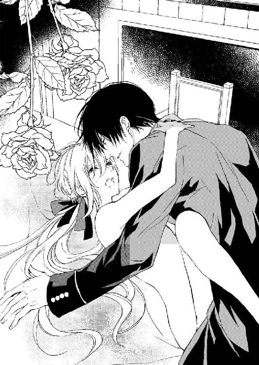
「ぅ......ん！ ぁ、だ......、だめ......ぇ」
中を突かれる快楽で、意識が怪しくなってきている。
ワインのせいか、早くに身体が悶えて、中をもっと激しく突いて欲しくてたまらないのに、レジオンはまだ中で本気になっていないようだ。
「もっと......レジオン様......」
勝手に太くて強い雄塊を求めるヴィアンカの濡れたからだがさらに蜜を溢しつづける。
ぴちゃ、ぴちゃと、肌と肌で乱れる蜜が、テーブルの上にまで溢れている。
「ああ、ヴィアン。またこんなに......汚して......お仕置きだ......」
「は、はい......もっと......お仕置きを......お願いします......」
淫らなお仕置きを、もっと受けたい。もっと彼のものが奥に来て欲しい。
「ちゃんと自分で綺麗にするんだ。俺の......ここも......ここもだ」
ぐぐっといっそう強くそれが推し進められれば、また中から蜜が弾けだしてくる。
膣道が、抽挿を早めてきた雄塊をきゅうっと締め付け、快楽を求めてまた蜜を溢す。
「いいぞ......ヴィアン......」
「ああ......もっと......もっと......ください......」
「何が欲しい。おまえが求めるもの......は......なんだ？」
「何もかも......レジオン様のこれ......も、口づけ......も、酷い......言葉も......」
ヴィアンカは服を纏っている普通のときには到底口にできない卑猥な言葉を、淫らに濡れた唇で吐息と共に告白する。
「レジオン様の......これ......もっと......奥まで......くだ......さ......い......」
レジオンは、ヴィアンカが普段決して言わないような娼婦のような言葉を必死に紡ぐのを、可愛いと思ったらしい。
小さく口の端を上げて、そして荒くなっている吐息の中で囁いてくる。
「ずっと俺のいうことを訊くんだ。ヴィアン。俺の命令が......おまえのすべて......」
レジオンの竿の付け根にもその蜜が飛び散り、ヴィアンカの白い肌を打ち付ける嚢宝もぐっしょりと濡れている。
「レジオン様の......ご命令......聞きます......なんでも......ぁぅ......ッン......ッ」
下になっているヴィアンカの恥丘も柔らかな媚毛がちりちりと輝くように濡れていて、ヴィアンカはレジオンの背中にしがみつく手をゆるりとそこに伸ばして、恥丘と、彼の嚢宝とその付け根に指先をおずおずと這わせる。
「あ......はぁ、んぅくう......ッ」
低い呻き。
レジオンのそこに快楽の刺激が走ったようだ。ヴィアンカは彼のうっとりするような性的な声に、指先でもそこを丹念に弄り始める。
腰の動きが早められれば、そこから蜜が蕩けだして、激しい水音が響いてくる。
「ヴィアン......ヴィアン......、喘いでいいぞ。こんなに中を熱くしていたら......苦しいだろう。おまえの......ここは......狭すぎる......」
彼の竿と嚢宝が白い肌に打ち付けてくる。ヴィアンカは体内で蠢く彼の筋肉の動きを手の平で感じ、もう片手で、中を抉りつけてくる彼の竿の動きを、そして自分と繋がっているその部分を指先で感じている。
（ああ............ッ）
「ヴィアンカ......愛している......すべてを......俺にゆだねろ......すべて俺のいうとおりに......しろ。愛していると......言え......」
「何もかも......言うとおりに......ぁ......ああ！ あ！ うんぅ......ッ」
レジオンの巧みな挿入が蜜で溢れて射る膣内を乱す。掻き回して、ぐちゅぐちゅと入り口で音が響く。
テーブルががたがたと床の上を弾むほど、レジオンは腰の動きを強くする。
「はあはあ」と、吐息が肩を揺らすほどになり、ヴィアンカの丸められた腰がゆりかごのように大きく揺さぶられている。
しっとりと湿った汗が、レジオンの引き締まった筋肉を浮かび上がらせ、その肌をも濡らしている。肌と肌が喘ぎ熱せられた吐息が彼の蠢く姿をかすめていく。
もっとそばに欲しいとさえ願うヴィアンカは、うなじに手を伸ばしてぐっとレジオンの顔を引き寄せた。
「好き......なの......好きなの......レジオン......さ......」
「俺もだ......俺もおまえを何より......ッ！ 誰よりも......大事にしている......おまえを......ずっと......ずっと......だ！」
レジオンの片手がヴィアンカのお尻に回って、激しく指を潜らせてくる。
抽挿が深く大きく中を抉るように続けられて、ヴィアンカは喉を大きくのけぞらせた。
「あ......ああ......んうぅうう......、レジオン様......レ......ジオン......さ、まあ......ッ」
体内が限界まで押し広げられ、擦り上げてくる彼の肉竿をきつく絞り上げた。
レジオンは奥までその先端を挿入した形で、腰を突き上げる。
「ひゃ......ぅぅん......ッ！」
気持ちのいいところを、ぐりっと先端が抉りつけて、ヴィアンカの襞が欲望に哮り、爛れたような歓喜の中で淫らに震える。
ぐっと腰を打ち付けた彼の先端から熱く弾け出す鮮烈な精が感じられた。
中に吐き出されたレジオンの快楽の液体を、ヴィアンカは貪るように体内に鎮めていく。
そうして、深く結合したその部分はやがてゆるりとお互いを解放していった。
（───レ......ジオン様......レジオン様......レジオン様......レジオン......様......）
レジオンの逞しい腕がヴィアンカの胸に、腰にからまりつき大切な宝物をいだくようにずっと抱きしめていた───。
◆４◆ 舞踏会の夜～淫らにされた華麗なる花嫁～
「───さあ、着換えろ。いつまで寝ているつもりだ」
昨日。酷く身体を犯してきた野獣のような彼は、もう毅然とした貴公子に変身している。
「───さあ、ヴィアン......俺に食い尽くされた最高のディナー......」
本当に複雑に、偏光するオパールのようにさまざまな表情を見せる人だ。
そしてそのどの表情も、悔しいかなヴィアンカには魅惑的に映ってしまう。
「あの......私......いつ......。それより......ここは......私の部屋ではないですよね？」
豪華な黒のファブリック。
天蓋のシックなえび茶色は、レジオンの黒髪と、クリーム色の上着の姿をクッキリと鮮やかに浮き上がらせている。
寝ぼけた眼にもその彼の姿は鮮烈で、世界に彼しか存在しないかのように思えてくる。
「あの......ずいぶん......正式な服をお召しですね......」
「とぼけてるのか？ ああ、これから言うことにする返事もそうやってそらとぼけようって気か？ ダメだ。さあ、剥くぞ！」
「きゃあ......」
「おまえは何度言ったらわかる？ 今は〝ヴィアン〟だ。男なんだから可愛い悲鳴を上げるな」
「すみません......で、も......」
毛布を捲られて、思わずその身から去りそうな最後の端を必死に捕らえる。身体に何も纏っていないなんて思いもしなかった。
「ぁ、やあ......」
それでもぐいっと力ずくで毛布を奪いとるレジオンにヴィアンカは必死にすがりついて、そしてベッドの上で最後の抵抗とばかり背を向ける。
「レジオン様......やめて......くださ......い」
「胸を押さえるな。股間を隠すな。───襲うぞ？」
「男のヴィアンとして、お仕えするのですよね？ でしたら......簡単に襲わないでください」
「今は襲わない、早く仕度をしろ、何時だと思ってる」
「何時ですか？」
暖炉のほうを見て、マントルピースの上の金の振り子時計を見る。
遠くてはっきりとしなかったが、おそらく昼過ぎだ。
「あ......」
「あ、じゃないぞ。だからいつまで寝ている気だと言った」
「申し訳ありません。クビにしないでください......すぐ、着替えますから」
だがあたりを見ても自分の服がない。昨日の記憶を探ろうとするけれど、まったく何も覚えていない。そもそも、どうしてレジオンの寝室にいるのかも覚えていないのに、服を置いた場所を覚えているはずがない。
「あの......」
「なんだ？ 早く服を着るんだろう？ そのままでいると、またこの俺に犯されるぞ」
毛布の端を掴んだまま、彼は正面から挑むようにしてベッドに片手をついてくる。
「そ、それは困るのですけど......」
じりじりと後ずさりながら、早鐘のように打つ心臓をなだめながらやんわりと断る。でも、そんな挑発的な言葉を言われたら、腕で隠している胸がぷくんと立ち上がってくる。乳首がきゅんと尖ってくるのを否めない。
ヴィアンカはそれを彼に気づかれないようにと、いっそう強く両腕で胸を押さえながら、自分の部屋に戻ろうと思う。でも、裸で廊下を行くのは恥ずかしい。誰とも行き合わないとは限らない。
「で、どうした。着換える必要はなくなったか？ 俺はその姿が一番美しいと思うけれどな」
「レジオン様は変わってますから。でも私の身体は女性のものですので、男性好きのレジオン様には御不興を買っているはずです」
やはり毛布を巻いて、自分の部屋に行くべきだろう。もしくはレジオンの持つベルを鳴らしてミリオに来てもらうかどちらかだ。
そんな困惑で頭の中が飽和してきたとき、ノックがしてミリオが中に入ってきた。
「もうこちらでご用意をしてください。早くしませんと、ご招待の場に遅刻してしまいます」
ミリオはきまじめそうな顔で、気ぜわしくそう言うと部屋の中に入り込んでソファの上に大きな箱を下ろし、ヴィアンカの身体を壁の鏡の前に引き寄せる。
「あ......」
「お早くどうぞ。恥じらいはこの私には必要はないですから」
確かに入浴まで手伝ってもらって、今さら着替えを恥ずかしがることもない。
「では、髪を失礼します」
そう言って彼はヴィアンカの髪を上に纏め上げ、持ち込んできた大きな箱から下着をとりだしてくる。
「え？ あのそれは......」
ヴィアンカはとまどう。その下着は男もののシンプルなものではなく、薄桃色のシルクのコルセットにドロワーズ。そしてキャミソールに靴下止め、ガーターベルトといった貴婦人のものだったから。
そして驚くヴィアンカにかまわず、平然と彼はコルセットを嵌めリボンを絞り始める。
その背後から、メイドたちが次々と部屋に入ってきて、手にしていた小箱をテーブルの上に広げていく。
髪飾りや扇。ヒールの高いシルクの靴。ブレスレットに指輪。そして豪華な何連にもなったネックレス。
テーブルの上に春が来て、花が咲いたように色とりどりの宝石や装飾品が並べられている。
「さあ、早く。髪を結って差し上げろ。化粧もきちんと。王宮の舞踏会に行かれるのだから」
メイドたちは、ヴィアンカのことを認識してはいるようだが、気難しく女性嫌いでおこりっぽいとされるレジオンが腕組みをしてそこで仁王立ちしているので、細かな会話も交わせずにいる。無言で立ち働く彼女たちにより変身していくヴィアンカを彼はじっと睨みつける。
睨みつけているのではないにしても、彼が強い視線で見つめていればその迫力から誰もが緊張して無言で作業をするしかない。
コルセットを締め上げ、キャミソールを纏いパニエを纏い、ドロワーズを穿き、シルクの薄い靴下をつけてドレスを着る。
ドレスは真っ白のドレスにクリームと金の刺繍糸で細かなダイヤモンドを縫いつけ花柄にしてある物で、とても優美で豪華なものだ。
「あの、私......これは......」
「レジオン様が前もってこの日のために用意したものですよ。ドレスは先日サイズを測らせた洋品店で、三十人のお針子を働かせて大急ぎで作らせたもののようです。ああ、内緒ですよ」
ミリオがこっそりと耳打ちしてきて、ヴィアンカは唖然として息を呑む。
あの洋品店での計測が、自分のドレス制作のためだったなんて想像もしなかったから。
（レジオン様......）
ヴィアンカはドレスを纏い、手に指輪をし、宝石の連なるブレスレットも嵌められている。
手足の先までよってたかって飾り立てられて、ヴィアンカがふと正面の鏡を見たときには、もう最後の手袋を嵌めさせられ、綺麗に結い上げられ、大きく開いている背中に巻かれた黄金の髪が綺麗にカールして下りている姫君のような姿になっていた。
「ああ。できたな。とても俺のお小姓とは思えない。本物の姫君のようだ」
レジオンが腕組みを解いて鏡の中に映り込んだ。
黄金の蔦もようのカラーを巻き、金ボタンと、金のモール、金の勲章や紋章を胸もとに輝かせたクリーム色の上着。深いえんじ色のズボン、黄金のサッシュベルトを巻いた彼がそこに立つと、ヴィアンカと引き立て合い、カップルのように鮮やかな色調が同化し合う。
「レジオン様。急いでおりますので、くだらないお戯れは明日にしていただけますか」
レジオンがヴィアンカの背後に回り、雫型の大粒ルビーがぐるりと取り巻くネックレスをかける。そして縦ロールの髪を指先で触れては揺らして弄ぶのを見て、ミリオが鋭く諫めた。
「戯れなど何もしていないが......」
「姫君の髪に気安く触らないでくださいということです。縦ロールをコテで作り上げるのにどれだけ手間がいったと思っておいでですか？ そこでその手間を見ておいででしたよね？」
「まあ、確かに手間がかかるものだと思う。女性の着替えと身支度は面倒だな。だから......」
「『だから女性は嫌いだ。女性との外出は苦手だ』そうおっしゃりたいのでしょう？ でももう整いましたのでご心配なく。それもこのようにお美しく王女様のように仕上がりましたよ」
ミリオが鏡の中の美しい令嬢を見ながら、得意そうに眉を張りレジオンに皮肉って答える。
「それは、いくらなんでも王女様に失礼だろう」
「そうでしょうか？ ヴィアンカ嬢には失礼ではないとおっしゃるのでしょうか」
ミリオの丁寧な口調で、あくまで穏和な話し方に、レジオンも、多少己を曲げたようだ。
「そうだな。確かに上等に仕上がった。これならまあ、いいだろう」
「そのように気取ってらっしゃらず、早く令嬢の手を取り馬車にお乗りください。私がこれほど急ぎましたのに結局遅刻しては元の木阿弥ですので」
ミリオはやんわりと釘をさして、ヴィアンカの手を取りレジオンの手に重ねた。
「このようなこと、ご自分でしていただけませんと困ります。もうじき結婚かと噂されているほどですのに」
ミリオのそれはレジオンへの嫌みだっただろうが、ヴィアンカの心にも大きな棘を突き刺している。
王女様との結婚話。やはりそれは本当だろうか。
（あの指輪は、やはりそうなの......？）
だがハッパをかけられたレジオンは今度は本気で自分でも急ぎだしたようだ。ヴィアンカの手を取り、優雅な曲線の階段を駆け下りると、階下に待ちかねている執事の手からコートをかけられ、帽子を載せられて、両開きにされた大きな玄関扉から外に飛び出す。
外階段を下りればすぐそこに、上等な金の彫刻が彩る馬車が扉を開けて待っていて、レジオンは、いつもとは違ってヴィアンカの手を取り、彼女が足台に足を乗せるまでじっくりと待ち、シートの上にヴィアンカが綺麗に腰を落とすまで立派にエスコートする。
そうしてから扉を自ら閉め、自分は反対側の扉から馬車に乗り込んだ。
「急げ。遅刻だけはするな」
「承知しました」
大勢の使用人が見送る中、馬車は真っ直ぐに正門へと向かう。そうして錬鉄の門を抜けると馬車は木立の中の一本道を車輪が外れるのではないかと心配になるほどの勢いで走り始めた。
「───あの......、大丈夫でしょうか」
「大丈夫だろう。おまえは......まあ、他の令嬢の中でも見劣りはしなさそうだ」
「あの、そうではなくて馬車が壊れてしまいそうで」
「壊れるものか。この馬車は頑丈で、優美である、最高級の最新式の馬車だ。車外のランプもクリスタルカットの特注品だ。まあ、この中のランプもだが」
「ああ、そうなのですね」
そう言えば、お仕置き愛撫があったのもこの馬車ではなかっただろうか。
「なんだ？ どうして黙りこくる？」
身に着けた広がるシルクのスカートとドレスのフリル、そして装飾品が輝くのが車窓に映るのを気恥ずかしく見つめていたヴィアンカに、レジオンが話しかける。
ヴィアンカは彼を見つめて、馬車の中での淫技を思い出して顔を俯ける。
「おい。ここで今から俺が何かすると思うのか？」
「レジオン様は......行動が読めませんから。その思考も......」
「それは褒めているのか。まあ、いい、今日は俺のエスコートする令嬢として立派に振る舞え。ドレスは大丈夫だな」
「はい......きっと......」
幼い頃、こういう豪華なドレスを着て、舞踏会に行った記憶が微かにある。母と父についていく社交の場はとても素敵な輝かしい場所だった。
今また大きく広がり、何人分もの場所をとるようなドレスを纏い、美しく着飾らせてもらえる日が来るとは思わなかった。だから車窓に髪や、首飾り、そういったものが映るだけで、ほうっと頬が緩んでしまう。そしてこれが人生最大のクライマックスかもしれないという現実的な思いもヴィアンカの中に灰色の雲のように押し込まれている。
今日、もし王女様がレジオンとの婚約発表を行ったらどうしたらいいのか。不安は募るが答えは出ない。
「今日、何かあっても驚くな」
「え？」
「今日......もしかしたら俺は......大きなことを巻き起こすかもしれない。でも大丈夫だ」
ヴィアンカは真剣な眼差しで、空を睨むようにして語るレジオンの顔を見つめる。
「大丈夫だ。何があってもおまえは俺が守る。今日は......今日もすべて俺の言いなりになれ」
「はい......ありがとうございます」
「俺以外の男とは話すな。挨拶だけは許す。いいな」
「はい......。あのでも、話してはいけないのにご挨拶は許すとは......？」
「俺のそばにいろ。一馬身以内にいろ、そうしたら、挨拶すべき相手のとき俺が合図するし、危機のときは俺が守る」
「はい......一馬身以内ですね」
この状況を喜んでいいのだろうか。
彼と二人きりで令嬢として舞踏会に行く。おそば付きの少年の姿ではない。でもその舞踏会には王女様がいて、レジオンは王女のことを愛している。あの王女の圧倒的な美貌と輝かしい風格。その彼女のいる王宮に赴くなんて、負け試合とわかっていて臨むようなものだ。
ヴィアンカは手を膝の上に合わせてもじもじとした。
彼の指に輝くのは、大きな宝石のはめ込まれた装飾的な指輪だ。
ヴィアンカがその左手の中指を見つめているのをレジオンは気づいていたようだ。
「どうかしたのか？」
「いえ......あの、ドレスをありがとうございました。あつらえたようにぴったりです」
ヴィアンカは本当の答えを知っているのにわざとレジオンにそう言ってみる。
「それは俺が......いや。昔の友人が社交界デビューのためにと作っていたものだ。結局それは着なかったらしく、しまい込まれたままだったのを譲ってもらった。その形と色は嫌いか？」
「いいえ。とても素敵です。好きです。ほんとうにありがとうございます」
やはりこの人はひねくれている。というか照れ屋なのか素直じゃない。凄んで見せているときも本心を見透かされたくないときのほうが多いことをヴィアンカも気づいている。
レジオンは、頬を染めて声を嬉しそうに弾ませるヴィアンカをまぶしそうに見つめている。
「あんなに行きたくないと言っていたのに......」
ぼそりと呟くレジオンは、足を組み、腕を組んでどっしりと腰を据えている。
「あれは......そうです。今でも本当は少しは行きたくない......んですけど......」
「ああ、約束だからな。おまえは約束は守る、そういう律儀なところがある」
「レジオン様が......エスコートしてくださるのですよね？ 最初から帰るまでずっと......」
「ああ、もちろんだ。一馬身より離れるなと言っているだろう。おまえを離したら王女に怒られてしまう。唯一の理解者のアンヌ王女には嫌われたくはないし、礼儀は尽くす」
「そうですね。意外と......レジオン様にも常識的なところがあって驚きました」
「今日は、もっと......驚かせてやるから覚悟しろ」
「普通で......いいです。私......目立ちたくはないですから......」
ちょっと怒ったように言って、ヴィアンカはまた車窓に目を移す。
ドレスを着せてくれるなんて、思わなかった。
驚いて、そのままちゃんとお礼も何も言えてないけれど、今ので大丈夫だろうか。このあまりに嬉しすぎる想いが彼に伝わっただろうか。
レジオンは車窓に映る美しい少女をじっと見つめていた。そして見つめたまま無言だったがやがて次第にその表情が険しくなってきているのに、ヴィアンカは気づかなかった。
外の景色に見とれている振りをしながらも、ガラスに映る胸もとが大きく開いている豪華なドレスが気恥ずかしくて、うつむきがちになっていたから───。
そうしてしばらく、甘酸っぱくも気恥ずかしい空気に包まれながら馬車の揺れに身を任せていたヴィアンカだったが、前方に大きく開けた緑の庭園が見えてきたのに身を乗り出した。
「レジオン様、王宮に着きました」
（ここが王宮。すごいわ......こんなに広大な庭園......広大な建物。王陛下のいるところ......）
王宮の緑と花々に彩られた広大な庭園は、遥か彼方に輝く運河まで延々と続いている。
夕暮れの宮殿には柔らかな暖色の灯りが規則正しく穿たれた窓のすべてに灯されており、まるで宮殿自体が太陽のごとく発光している。
周囲の森が闇に包まれていく中、美しく着飾った貴族たちが磨かれた馬車で乗り付けてはその宮殿に吸い込まれていく。
「さあ、下りる用意をしろ。ヴィアンカ嬢」
レジオンは、前のシートに座って窓の外に気をとられているヴィアンカの美しく結い上げられた頭に指先を軽く刺す。
「あ、はい......」
『ヴィアンカ嬢』
ミリオとロイス以外の人に、そんなふうに呼ばれたのはどれくらいぶりだろう。
もう多くの貴族の馬車がその前庭の中に止められており、白い馬車や若草色の馬車、そしてオーソドックスな黒い箱馬車で埋め尽くされている。
レジオンの馬車は入り口までつけて、そうして階段の前でヴィアンカは下ろされた。
付き人として、自分ですぐに扉を開けてレジオンが下りるのを見守るのではなく、令嬢のように、外からレジオンが扉を開けてから、ゆっくりとつま先を伸ばして手を彼の手に重ねる。
足台から石畳にヒールの踵がつき、ドレスがちゃんと膨らむまで、姫君にするような丁寧さでレジオンは接してくれた。夢見るような姫君の扱いでヴィアンカは馬車から降りても足元がふわふわしている。
「レジオン様......今日は変です......」
ヴィアンカは付き人としてのヴィアンを意識しながらも、今はヴィアンカでいていいのだろうかと戸惑いながら彼を見つめる。
「変だと？」
「ええ。私、こんな格好で人前に出ても大丈夫でしょうか」
「こんな格好とは？ 俺が全力をかけておまえに似合うものを見繕った。サイズもぴったりのものだ。その衣装と装飾品で何を気後れする必要があると？ 俺のセンスを疑っているのか？」
「いえ、そんなことは......」
本気で怒っているとは思えなかったが、それでも王宮に赴くべく、髪を整え輝くような軍服に身を包んだレジオンが正面から見すえてくるのは、野生の黒豹に狙われているかと思えるほどの迫力がある。
「おい、何を及び腰になっている。俺の命令に従うのだろう？ 〝おまえは誰よりも綺麗だ〟」
「は......い......」
それにしても、見渡す限り、着飾った貴族たちがひしめいている。豪華なシャンデリアは何百年もの間掘り続けたダイヤをすべて集めたような輝きだったし、大理石は磨き込まれ、足元の絨毯はふかふかだ。楽団の音楽が流れ、周囲にグラスを手にしたものたちがさざめき合う。予想以上に大がかりな舞踏会のようだった。
視線を戸口から大広間に向けて流れていく貴族たちの中に混じるレジオンは、だが周囲の誰よりも鮮やかに美しく、女性はもとより男性までも彼の姿に釘つけになっている。
男性の華美なフロックコートより、王宮護衛部隊のものである、クリーム色の特別の儀式服は、ストイックな男のエロスさえ感じさせるもの。
（レジオン様......）
これではまるで、あの寄宿舎から自分を掠いだしてくれた彼のよう。学院長に商品のように籠に閉じ込められ、売られかけた自分をこうして華やかな舞踏会に連れて来てくれた。
「おまえを......辱めるようなことは決してしない。だから......安心して俺にすべてを委ねろ」
レジオンはヴィアンカの手を取り、馬蹄形に広がっている正面玄関への石段を登り出す。
手を取られ、ドレスの裾を軽く持ち上げて階段を上がるヴィアンカは次第に妙な動悸を感じてきている。
周囲に溢れる貴族の豪華さ貴婦人たちの煌びやかさ。そこに自分がいること自体がおかしいのに、レジオンが傍らにいて手を握ってくれていれば大丈夫だという安心感も芽生えてくる。
（レジオン様の指輪がなければもっとよかったのに......王女様の指輪がなければもっと......）
「どうした？」
「いえ......。レジオン様の名を汚さないように精一杯振る舞いには気をつけます」
「そうしてくれ」
レジオンはヴィアンカの手を優雅にとって大広間へと入っていく。その堂々たる姿をすぐ後から従うことができる幸せ。そして彼の手から伝わってくる確かさに、初めて王宮に足を踏み入れ、そしてそこが初めての伯爵令嬢としての社交界の場だと言う大きな不安さえ、払拭されてしまいそうだ。
戸口から入っただけで圧倒される密度だった。
今、国内、国外で多くの貴族がこの王宮に足を踏み入れている。貴族の称号を冠するその人々の発する高貴さと、その身を飾る衣装の豪華さに圧倒される。
王宮の大広間。その床の甘い桃色がかった大理石は、それ自体が美術品のよう。そこに集う何百人もいるであろう老若男女、金糸銀糸の刺繍の刻まれた美しいドレスに輝く貴石の数々。
シルクの生地も艶やかに輝いて、どこに目をやっても目眩がするほど絢爛とした光景だ。
「さあ、ヴィアンカ」
『さあ、ヴィアンカ』
そう彼に呼ばれるだけで、足がふわふわ浮いたように感じてしまう。
導かれるままに、大広間で始まっている舞踏の輪の中に吸い込まれ、そこで一度彼は手を離すとヴィアンカの前で大きく腕を回し一礼する。黒髪がさらりと落ちて、見上げてくる視線に自分しか映っていないことが奇跡のよう。
手を取って、お辞儀をしながらクルリと回る。周囲のカップルも皆、華麗によどみなく広間の中央でくるくると踊っている。
その中でも、彼がひときわ華麗に見えるのは、もともとの姿勢や立ち居振る舞いが整っているからだろう。
「意外と......うまいな」
手を取り合って、一歩近づいて肩を掠めるようにターンする。そうしてまた手を取りあって、高く掲げてくるりと回る。彼が見せるそんな指の動き一つも、流れるようで美しく、この長くて男らしい指で、自分は愛撫をされているのだと思うとたまらなく胸がときめく。
背中越しに彼が回転しているときも、微かな香りが流れてきて、それはきっとシャボンの香り。
（私と同じシャボンの香り......）
ヴィアンカは、ターンをするたびに微かに香る甘い香りにうっとりしながら、レジオンが離れても確実に自分のもとに戻ってくるダンスのパートナーであることに感激している。
（ずっとこのまま、独り占めしていたい。酷いことをしてきたり、意地悪をしてくる彼も好きだけれど、こうして美しい円舞の中でその勇姿を見せる彼もとても素敵。初めて見るけれど永遠に胸に刻んでおきたいほど素敵）
そんな喜びの感情だけで胸がいっぱいになってくる。
でも、その幸せなときはそう長くは続かなかった。
円柱の立ち並ぶ広間でいつしか奥まったほうに来ていたヴィアンカの目に、入り口に佇む王女の姿が入ったからだ。
目に刺さるような鮮やかな赤いドレス。黒い刺繍とブラックダイヤモンドのヘッドドレスとむき出しの胸と腕を彩る幅のある装飾品。
金の腕輪に黒い宝石が川のように埋め込まれてぐるりと細い首や腕を輝かせている。
黄金の髪もうねるように結い上げられて、頭頂部から細い三つ編みを幾筋も垂らしている。その髪の束にもすべてダイヤモンドが絡められていてまばゆいほどだ。
その王女のほうへ、レジオンが行ってしまうのではないか。ヴィアンカはとっさに、レジオンの腕をとって、円柱の陰に回った。
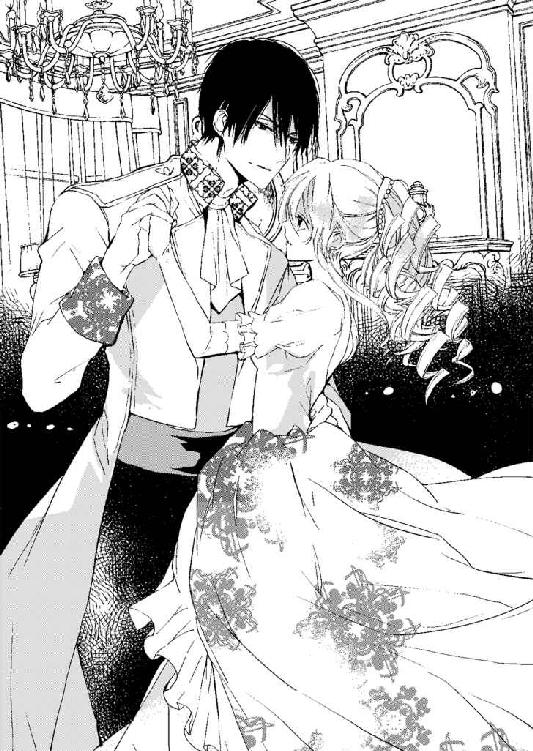
「どうした？」
「少し......疲れたので休んでもいいでしょうか」
「ああ、そうだな。当然だ。おまえはこんなところで踊るのは初めてだろう？ 緊張するな。気づかずにすまなかった」
レジオンは紳士的に謝罪して、そして壁沿いに置かれているソファにヴィアンカを座らせる。
「では俺は......あちらへ行って王立軍総指揮官殿にご挨拶を......」
レジオンがそう言って、円柱の向こうに見える黒の軍服姿の老貴族のもとへと行きそうになるので、ヴィアンカは慌てて彼の手を掴む。
「どうしたんだ？」
「あ、あの......置いていかないで......ください。一人では......」
「気分が悪かったのか？ 足が痛くなったのか？ どうした？」
レジオンは彼女の目線と合わせるようにしゃがみ込み、小声で気遣ってくれる。
「ではあそこで飲み物をもらってこよう。軽食もとってこよう」
円柱のこちら側。壁沿いにカウンターが置かれている。そこに、ワインやカクテル、サンドイッチやカナッペなど、置かれていて、好きなように食することができるようになっている。レジオンはそこに行ってすぐヴィアンカの元にワインを持って戻ってきた。
ヴィアンカはワインを飲めば、今の動揺も不安も消し飛びそうな気がして一気に飲み干してしまった。だが飲み慣れていないアルコールでぼうっと頭の中まで赤く染まっていきそうで、ソファに再びもたれかかる。
「ワインは苦手か？ どうして一気飲みなどした。顔が赤いぞ。頬も熱い。これは......外に出て休んだほうがいいな」
レジオンはヴィアンカの肩を支えるようにして、大広間を横切った向こうのテラスを目指す。人々の間を通るたび、女性から歓喜のざわめきが起きるのは、やはり彼が目だって素晴らしい容姿をしているからだろう。
「まあ、レジオン様がいらっしゃってるわ。素敵。アドニスのようね」
普段の冷酷そうでいてシャープな美貌が、この華やかな場に少々の異質な空気を醸し出し、それがまた令嬢や夫人方の視線を釘付けにしているらしい。だがレジオンはそんな視線は感じていないかのように、ヴィアンカをエスコートしていく。
ヴィアンカ一人では恐れ多くて行くことのできない広間の中央を進み、誰かがレジオンの姿に目を留め、声をかけてくれば会釈を返す。かけられる声が、挨拶を求めるものであれば足を止め、ヴィアンカを「今夜私がエスコートさせていただいていますヴィアンカ・ド・ルセル伯爵令嬢です。どうぞお見知りおきを」
そう正式に伯爵令嬢だと紹介する。
「レジオン様......」
彼が広間を切って進む姿に目を奪われる貴族たちは、彼の手に引かれている美しい金髪碧眼の少女にもまた目を向けている。
「レジオン様が舞踏会にいらっしゃるのも珍しいのに。女性連れだなんてどうしたのかしら」
「いらしたとしても顔を見せるくらいで挨拶をしてすぐお帰りになるものね。華やかな場が苦手なので有名なお方が、どうしてあんなに目立つ令嬢をお連れなの」
「王女様の主催の舞踏会だから、いらしたんでしょうよ。王女様の言うことはレジオン様はなんでも聞くそうよ。だから今度、王女様付きの護衛官になったそうじゃない？」
「それに婚約のお話も出ているとか。護衛官になられたのも結婚への布石だわね。昔からのご友人でお似合いだし、ご結婚となれば素晴らしいですわ。悔しいけど」
（王女様との結婚の話......そんなに噂になっているの？ 王陛下の決断待ちだなんて）
最初はレジオンへの賛辞の言葉ばかりが聞こえてきて、内心誇らしくもあったのに、今はヴィアンカの中で、複雑な嫉妬心が渦巻いてきている。婚約どころか王女様と結婚の話が出ているなんて、レジオンは少しも話してくれなかった。
でも、馬車の中で覚悟を決めたような言葉を聞かされた。あの言葉は結婚のことだったのかもしれない。
レジオンが、貴族の元に挨拶に回るたび、周囲の女性たちがその姿に気づき目を奪われているのがよくわかる。熱い視線がレジオンに向けられ、シルクやダチョウの羽で出来た色鮮やかな扇で口元を隠しながら、淑女たちが会話を交わす。
周囲の視線はすべてレジオンに向けられ、ヴィアンカはそれがとても誇らしい。
自分が恋するレジオンが、この宝石箱のような燦めく大広間においてもひときわ輝く存在なのだと、自分だけでなく他の多くの貴族たちも認めているのがよくわかる。
（レジオン様が素敵な方だから......しかたないのよ。王女様だって彼をお選びになるわ......）
レジオンは、ヴィアンカのそんな思いを知ってか知らずか、貴族の中でもひときわ、存在感を醸し出すような老貴族や、恰幅のよい壮年の貴族。そしていかにも周囲から特別に扱われており、取り巻きが大勢周囲を取り囲んでいるような貴婦人に、ヴィアンカを紹介していく。
そしてようやく二人はテラスにたどり着き、レジオンはヴィアンカを外の椅子に座らせた。
「大丈夫か？ 具合はどうだ？ まだ赤いな、熱があるのか？」
ヴィアンカはまたレジオンの袖をそっと掴んだ。
彼の声がずいぶんと優しい。
彼の手がヴィアンカの手を握り返してくれる。さっきまでのダンスのときの、すべてを安全にリードしていく手指の感覚とはまた違い、体調を気遣ってくれているのがよくわかる。
「ほてった身体を急に冷やすと風邪を引く。これを......」
ヴィアンカの肩に脱いだ上着を掛けてくれる。
「いいです、そんな。悪いわ......」
「俺がエスコートした女性に風邪を引かせるわけにはいかないからな。それぐらいどうってことはない。かけていろ」
「でも」
「命令だ。俺の命令は聞くんだろう？」
「───はい......」
「それでいい。おまえは俺の命令だけ聞いていればいい」
レジオンはヴィアンカのむき出しの肩にしっかりと上着を掛けて、そしてそのまま背中を軽く抱きしめてくる。
暗い庭園が彫刻の掲げるランプで浮かび上がる、幻想的な光景。
背後からは昼間のように明るい大広間の輝きと、楽団の奏でる舞踏のための優雅なワルツ。
光と影の交錯する別世界のよう。
「何が飲みたい？ 何が食べたい？ 望みのものを持ってこよう」
「そんな......レジオン様に持ってこさせるなんてこと......。大丈夫です。私、別に病人ではないですから。火照っているだけ......ですから」
ヴィアンカが立とうとするのをレジオンは押さえ込み、より強くその身を抱きしめる。
「まだ顔も......体も熱いぞ......。じっとしていろ」
ヴィアンカは、緩やかな拘束を受けながら、しばらくレジオンの腕の重みを享受している。心地よく、そしてとても安心できる腕の力。
拘束されているのに、守られていると感じる。
命令されているのに、愛を感じる。
「レジオン様......私......」
「ヴィアンカ。まるで......蝶のように軽やかだった。とても素晴らしいダンスだった。初めてなのに初めてじゃないようだった。素晴らしいよ......ヴィアンカ......」
「ありがとうございます。でも私、これでは足手まといですね。すぐ......広間に戻りましょう」
「いいや。もう今日は帰ろう」
「え？ でも......」
「もう帰ろう。ヴィアンカは十分自分の勤めを果たした。俺も......これ以上、おまえを紹介したい奴も会わせたい者もいない。だからもう戻ろう......」
「でも、レジオン様......」
彼の指が目に入ってしまう。銀の指輪の輝く左手。
王女様とおそろいの指輪。
「本当にもう......？ 王女様と踊らなくてはいけないのでは？」
「おまえが......大事だから......俺のせいで具合が悪くなったら......困る。おまえは俺との約束を果たしここに来てくれたのだから」
「レジオン様......」
帰っていいの？ まだ王女様にご挨拶していない。王女様に呼ばれたから顔を出した舞踏会のはずなのに、それでは王女様に顔が立たないのに。
でも心の中では、このままレジオンが自分と帰ってくれるのが嬉しくて仕方ない。他の美しい貴婦人たちには興味も持たず、王女様とも踊らずに帰ってくれるというレジオンの心遣いと、その彼を自分だけが独占できるという幸福。
「でも、大切なご用があってここにいらしたのでは？ 何か特別なことが......」
ヴィアンを連れてくるというのは王女との約束。その他にも大事な何かが彼にはあるはずなのにレジオンは、神妙な顔をしてヴィアンカを見つめてからすぐ、肩にかける手に力を込める。
「今日は、いいんだ。もう帰ろう。また日を改めるから......」
「レジオン様......」
立ち上がりかけたとき、輝かしい大広間からの窓の一枚に影が浮き上がる。
「レジオン！」
溌剌とした声でレジオンの名前を呼ぶ、煌びやかな少女。
ヴィアンカが今一番会いたくない、その女性だった。
「まあ、レジオン様。約束通りちゃんといらしたのね」
毅然とした声に振り向けば、そこにいるのは溌剌とした空色の瞳のアンヌ王女だった。
「アンヌ王女、今宵はお招きいただきありがとうございます」
レジオンが大きく腰を沈め、片足を折って腕を胸もとにあてがう。主人に対する騎士の礼。
「こちらはどなた？」
〝ヴィアン〟を招いた王女でも、ドレス姿のヴィアンカは見ても誰だかわからないようだ。
「王女様もご存じなはずなのですが」
レジオンは、極薄の笑みを浮かべておもしろそうに返す。
「私が？ どこでお会いしたかしら。でもこんなに可愛らしいお嬢さんを見て私、忘れるかしら。意外と顔を覚えるのは得意なのに」
彼女は小さく小首をかしげて、ヴィアンカを見つめてくる。その大きな瞳は力強くも邪気がなく、快活なもので、言葉にもしぐさにも嫌みなところは一切ない。
さすが、レジオンが、女性の中で唯一嫌がらずにそばにいるという王女様だ。
『王女様が招待したのですもの。派手な場所が苦手でもいらっしゃるでしょう』
『王女様付きの護衛官になったとか。王陛下も結婚を視野に入れてのことなのかしらね。うらやましいわ。お似合いのお二人で』
レジオンと王女の二人を見つめながら、あの言葉が頭の中に巡り始める。本当にお似合いの二人だ。城にわざわざ王女がお忍びで尋ねて来ているほどだから、王女はレジオンのことがとても好きなのだろう。
ヴィアンカの眼差しを受け、王女は微笑む。その指に、レジオンの指に嵌っているものと同じ指輪がある。そう思うとヴィアンカは王女からも彼女の指先からも視線をそらしてしまう。
（私は......邪魔よね......。私は王女様がご所望だったからここに連れてこられただけだもの）
ヴィアンカは胸の奥が痛むのを感じながらも、必死で作り上げた笑みを王女に向ける。
「私のことなど......覚えていらっしゃらなくて当然ですわ」
「あらでも確かに......どこかでその美しい宝石のような瞳を見たわ。その髪も。お名前は？」
「ヴィアンカ・ド・ルセル伯爵令嬢です。かの大戦のときのルセル大将軍のお孫さんです」
「ああ、そうでいらっしゃったの。国外に......いらしたのでしたかしら？ 長らく王宮にはお姿を見せられなかったわ。お父様は？」
「あの両親は......」
ヴィアンカはどう答えていいものか言いよどむ。事故で亡くなった、などとは今も辛くて言えない。両親も城もなくなってしまった。そしてレジオンも失おうとしている。
レジオンと王女様が結婚したら、自分はまた行き場を失ってしまう。
レジオンとずっといたかった。でも、王女と結婚することになったら、男装の娘がそばで仕えるなんて、嫌がられるに違いない。そもそもそんな使用人は王宮に入れてもらえないはずだ。
ヴィアンカは先ほどまでのドレスの膨らみと輝きに包まれた昂揚した心と、レジオンに姫君として扱ってもらっていた夢のような時間が一気に崩れ落ちていくのを感じている。
夢のような一夜が崩れる音が聞こえる。
足元から、氷の床が粉々に崩れて、身体が黒い冷水の中に沈んでいく。
「ヴィアンカ？」
腕を掴まれて、はっとした。
「ヴィアンカ。大丈夫か？ やはり具合が悪いんじゃないのか？」
「え......」
知らずのうちによろめいてしまっていたのを、レジオンが抱き留めてくれている。
「具合が悪そうね。控えの間で休んで頂戴。それがいいわ。誰か隣の部屋を準備して」
王女も、近くにいた使用人に指示を出す。
「ああ、アンヌ王女。心遣いをありがとうございます。さあ、ヴィアンカ。こちらへ」
「控え室なんて......、大丈夫です......」
「いいから、さあ」
テラスから続く奥の間に、ヴィアンカはレジオンに抱きかかえられて運ばれてしまう。
「レジオン様......いい......です......そんな」
そんなことをされたら、また身体が火照ってしまう。それに主人である王女様の前で自分をかかえ上げるなんて悪い気がする。
だがレジオンは風のようにヴィアンカを抱えて控えの間に入ると、そこにあった深紅のカウチソファにヴィアンカを横たえた。
「いいから休んでろ。何が飲みたい？ すまなかった、俺がふざけて......ワインなど飲ませたから......」
レジオンが、こんなにすまなそうにしょげているのは初めて見た。おそらく、普通の人が見た限りではいつもの彼と代わらない程度だと思う。でも、レジオンのそばにずっといるヴィアンカにはいつもより遙かにしょげたそぶりだとわかる。普通には決して見せないだろう心の動揺。
ヴィアンカの前でも常に剛胆でふてぶてしいほど大胆で強気で、不遜な態度が普通だから、こんな彼を見られるだけで、今夜ここに来て得ることのできた幸せな時間だと思える。
レジオンは手袋を外して、もう一度ヴィアンカの頬に手を当てて、そして立ち上がった。
「レジ......オン様......いいです......、もう大丈夫......私一人で......」
「待っていろ」
レジオンはソファ脇のランプのつまみを絞り、灯りを少し落とすと、ヴィアンカを残して部屋を出て行く。何かをとってきてくれるつもりなのだろうことはよくわかる。
彼がボーイやメイドを使わず自分でヴィアンカのために時間を割き、面倒をこなしてくれるのだと思うととても嬉しい。胸が熱くなってくる。でも、自分がここにいて世話をかけてしまっていたら、レジオンはせっかくの社交の機会を台無しにしてしまうかもしれない。
王女様のために来た舞踏会で、その寵愛を台無しにしてしまったらレジオンの立場を悪くしかねない。
ヴィアンカはそっと立ち上がり、高いヒールでもなんとか歩けそうだと確認してからそっと部屋を出る。大広間と繋がっている回廊は、それでも普通の客が来ないように棟を繋ぐとびらが閉められているためか、人の姿は見えない。ときおり、使用人が忙しそうに向こうを行き交っているのが見える。ヴィアンカはそちらへ向かって、そうして一人のグラスを積んだ銀の盆を掲げているボーイを呼び止めた。
「あのちょっといいですか？ お願いが......」
「なんでしょう」
濃緑の上着を纏った若いボーイは、足を止め、ヴィアンカに向き合って恭しく頭を下げる。
「私、レジオン様のところでお世話になっているヴィアンカと申します。体調がよくなったので先に帰るとレジオン様に伝えてください。黒髪の......青緑の目でクリーム色の......」
「はい。存じ上げております。王女様の護衛官になったレジオン様ですね。承知しました」
彼はあっさりと言って、そうして一礼して大広間のほうへと去っていく。
ヴィアンカは遠くで彼が開けた大広間へのとびらの向こうに、輝かしい光りが漏れてくるのを一瞬まぶしく見つめそうしてゆっくりとしまって、また廊下が薄暗い陰りに包まれてくるその中にじっと足を止めている。
だがややあって、逆の方向に歩き出して、そして扉から外の庭園に下りた。
王宮の造りなど詳しくはない。また誰かに馬車の方角を聞かなくてはいけないだろう。
そういえば、これだけ多くの貴族が乗り付けている馬車の中から見つけ出すことができるだろうか。そんなことに不安をよぎらせたとき、正面の木立の中から人の姿が現れた。
レジオンが戻ってきたのではないようだ。
近づいてきたのは長身の青年のシルエット。
黄金の髪が、向こうのランプの光りが当たって輝いているのが見える。その輪郭も浮き上がり、整った鼻筋と、細めの顎のラインが見てとれる。
（ロイス様......？ でもそんなまさか......そんな偶然......）
背後からの輝きに照らされて、学院の天使と呼ばれていた彼の姿が浮き上がる。
「ロイス......様、どうして......ここに」
「ヴィアンカ......？ ヴィアンカなのかい？」
そう惑うように名を口にして、彼はヴィアンカのもとにゆっくりと歩み寄る。
「見違えたよ......まさかと思った。君が優雅なドレス姿の令嬢に変身しているなんて......どうして。学院からいなくなって心配していた。もしや例の公爵のところで幸せなのか？」
ロイスのその言葉は、ヴィアンカには理解できない不思議なもの。
「例の公爵......様？ ええ......そう......です」
ロイスは自分がレジオンの元にいると知っているのだろうか。自分があの場で会ったとしても、彼は今でもあのときの男装の自分をヴィアンカ・ド・ルセルとは認識していないはずだ。今自分を見つめていても、男装の〝ヴィアン〟と同じだと思っている様子はない。
「ヴィアンカ嬢、君がこれほど美しい蝶になるとは。いや、確かに学院の制服を着ていたときから飛び抜けて目立っていたけれど、でも実際こうして目にするとすごい輝きだね」
ロイスは首元に巻いたシルクシフォンのタイを止める大粒のサファイアのピンを輝かせ、深い臙脂の上着を纏い、ヴィアンカの前に膝を折って一礼すると手の甲に口づけた。
ロイスの口づけは初めてで、いつもリリーにしている姿を見て憧れていたのだけれど、今、その唇を受けてもそれほどの感動はない。
先ほどまで大広間で挨拶として手の甲に受けていた他の貴族たちのそれと何ら変わらない。彼の顔を見て口づけを受けても、レジオンにされるときのようなときめきは感じられないのだ。
「しかし、学院長もおかしいな。君が学院から消えただなんて。ちゃんと公爵の元に行っていたんだよね」
「私......私のことよりリリーのことはどうなりました？」
「リリー？ 彼女は父上のところに戻ったはずだよ。心配することはない」
「そうですか。よかった。でしたら不躾なのですけどロイス様。お願いがあります。私を馬車に乗せて送っていただけませんか？ レジオン・ド・ブラッド様のお城へ寄っていただきたいんです」
「何か......事情があるんだね？ いいよ。馬車を出そう。僕が一緒に同行するから安心して」
ロイスはすぐに納得して、ヴィアンカを王宮の正面を回り込んだところにある広大な馬車止めに行く。
そこには上流貴族の高級そうな箱馬車がびっしりと止められていて、ヴィアンカにはもうレジオンの馬車がどれなのかもわからないようになっている。
「君......。すぐに馬車を出してくれるか」
「はい。ロイス様」
ロイスは、馬に飼い葉をやりながら待機していた自分の御者を呼びつけて、そして馬車の壁面のランプに火を灯させる。
煌々とした光りを灯らせた馬車に馬が繋がれ、御者台に乗り込んだ御者により、緩やかにカーブしている石畳の通路を中央に走り出す。
「さあ、乗って」
ロイスは紳士的にヴィアンカの手を取り、馬車の座席に上げてくれる。
ヴィアンカは、柔らかなビロードの上に腰を乗せ、膨らんだドレスを指先で引き寄せる。
「どうして......レジオンの城に行くのか、車内で色々聞かせてくれる？」
ロイスは扉を閉じようとして、そうヴィアンカの瞳をのぞき込む。
「は......い......」
ヴィアンカが戸惑いながらそう答えたとき、向こうの方から誰かが一目散に走ってくるのが見えた。
黒い影はすぐに大きくなり、それが長身のレジオンだとわかるのに時間はかからない。
「レジオン......？」
「ヴィアンカ！」
レジオンは黒髪を翻しながらロイスにつかみかかり殴りつけた。
「レジオン様......ッ？」
突然のことに声も出なかったヴィアンカだったが、殴られたロイスが石畳の上に倒れ込み、背中を打ち付けながらごろっと一回転しているのを見て、驚いて声を上げる。
口の端が切れて血が滲んでいるロイスのそばにヴィアンカは馬車を降りて駆け寄った。
「ロイス様......！ 大丈夫ですか？」
「ヴィアンカ！ 近寄るな。血で汚れる」
レジオンはロイスの口元に手を添え、ハンカチを取り出そうとするヴィアンカの腕をとり立ち上がらせる。
「レジオン様......どうしてこんな......」
「おまえこそ、どうしてロイスと会っている？ どうして二人で逃げようとしている？ どうしてだ？ どうして俺の贈った純白のドレスを着ているのに、血に汚れようとなんてするんだ？」
怒りと、悲しみの混じったようなレジオンの怒声にヴィアンカは圧倒されて押し黙る。
「逃げる......なんて」
「ロイスと連絡を取っていたのか？ 示し合わせていたのか？ だから俺が席を立った隙を見計らって馬車で奴のところへ行こうとしていたのか？ こいつがどんな奴か知ってるのか？」
立て続けに、ロイスとヴィアンカを疑うような言葉が吹きだし、そして立ち上がってきたロイスに向かって、またレジオンは拳を握る仕草を見せる。
「レジオン様！ 私はロイス様と陰で連絡を取ってなどいません。ここで会ったのは偶然です」
「ああ。そうだな。ロイスがどんな男か知っていたら、共に馬車に乗ったりはしないだろう。人を売り飛ばし、莫大な金とコネクションを得る副職の片棒を担いでいるような男だ」
「───え......？」
ヴィアンカは、言われた意味が掴めずにレジオンの顔を見上げる。まだ全力で走ってきたその息が上がったままで、象牙色の肌も、微かに上気している。
「おまえを調教していた学院長。ザッハビル・ド・ヴァンス公の息子だよ。ロイスは」
「───え......？」
思いがけない言葉にヴィアンカはその場に立ちつくし、ロイスの顔を見つめる。ロイスは立ち上がり、唇を拳で拭いながら、乱れて額にかかる黄金の髪の下からレジオンを見つめる。
睨んでいるとか、恨んでいるとか、そう言う眼差しではない。どちらかと言えば暴かれた秘密を恥じているような苦悩の表情。
「学院長の......息子？ ロイス様が？」
「ああ。寄宿舎を伴う学院を創設し、家の都合で学院に預けられる貴族や大商人の子息、令嬢を貴族たちに金で売買しているザッハビル・ド・ヴァンス公爵の第二夫人の息子だ」
レジオンのロイスを睨む目には怒りの炎が燃えている。
「愛人希望も、花嫁希望の男も買いに行く。セント・クレイド学院に入学しているのは、破産していようが、凋落していようが、由緒正しい貴族の子息令嬢だから求めるものは後を絶たない」
「あの......でもロイス様は知らなかったのでしょう......本当に学院長の息子さんでもきっと」
「俺も調べてロイスが学院長の息子だと知ったときは驚いた。正妻の息子ではなく愛人の息子だったが学院長がしている悪事は知っていた。ロイスは見て見ぬふりをしていたんだ」
叩きつけられた言葉にロイスは拳を握り、地面を睨むようにして声を絞る。
「それは......僕もやめてくれと頼み込んだ。でも父上が苦言に耳を貸すはずもない。少年少女を大貴族や異国の王族に売ることで、父上がどれだけ地位を向上させてきたか知っていたら止めることなどできっこない。むしろ失笑され、それ以上五月蠅く言いつのれば息子であっても罠に嵌め殺しかねないのが父上だ。それが悪名高きザッハビル・ド・ヴァンス公だ。巨額の悪銭の上にあぐらをかいている人なんだ」
「薄汚いよな。ヴィアンカも隣国の王室関係者である公爵に多額の金で売られそうになったんだ。回避したがもし本当に異国のハレムにでも売られていたら、俺はおまえを許さなかった」
今度はロイスは驚いた顔でヴィアンカを見て、そしてレジオンを見る。
「君がヴィアンカ嬢を助けたって？ 女性嫌いで王女にしか懐かない君が？」
レジオンはまたロイスの胸ぐらを掴んで、そうして唸った。
「どうでもいいが証拠が揃った。ザッハビル・ド・ヴァンス公は今日ここに来るんだろう？」
「来てる......だけど、父に君は近づけない。王陛下のおそばに参じるのが父だ。彼をなじったり糾弾することはできない。それは......父の息子だから言うのではなく、悔しいかな事実」
ロイスは苦渋の表情で言う。だがレジオンは許さなかった。
「来てもらおう！」
「レジオン様......」
「ヴィアンカ。おまえは一人で帰れ。ついてくるんじゃないぞ」
「レジオン様」
「おまえが望めばまた俺の城に帰ってこい。だが、ロイスのところにいってもいい。選べ」
「レジオン様！ 待って。私はロイス様のところになど行きません。私は本当にレジオン様が」
ロイスの胸ぐらを掴んだまま、王宮の大広間に戻ろうとしているレジオンのあとをヴィアンカが必死になって追いすがる。だが、レジオンはもう耳を傾ける様子がない。それどころか、怒りで一杯になって、ロイスのことも糾弾しようとしているようだ。
「ロイス様には、私が......馬車に乗せて欲しいと頼んだだけです......本当です」
「聞きたくない」
「でも......！」
「おまえは......売られようとしていたのに、そんな悠長にしていられるのか？」
レジオンはきつい眼差しをヴィアンカに向ける。
「もしかしたら立派な後ろ盾になってくれる貴族に迎えられたかもしれない。でもそうでなければ狭い部屋に閉じ込められ、ただ毎日身体を蝕まれ、弄ばれるだけの売春婦に堕とされる」
「レジオン！ それはあまりに酷すぎる言葉だ」
「言葉くらいで済めば上等だ。ロイスの父親は、貴族の娘を育て上げては淫らな男たちに売り飛ばしている。それが事実だ。その娘たちがその後幸せになるかどうかなんてどうでもいい。美しい少女を、政治活動や接待目的、外交利用、そういったことに利用するものがほとんどだと言うことを知っているだろうに。特におまえのような金髪碧眼の貴族の美少女は外国に売り飛ばされて使い捨てにされて、アヘンの匂い漂う怪しげな魔窟でぼろぼろの死体になって見つかることもあるんだぞ。見て見ぬふりをしたロイスも同罪だ」
毒のある言葉が次々彼の口から飛び出して、ヴィアンカは改めて自分がレジオンに助け出されて幸運だったのだと思い知る。
「ロイス様に......そんなこと」
「ロイス、ロイス、ロイス！ おまえは昔から〝金の天使〟ロイスのことばかりだな」
「昔......から？」
ヴィアンカはレジオンの顔を見つめる。
「今なんて？ 昔って？」
思いがけない言葉に、レジオンの顔をじっと見つめる。
そうしてもう一度同じ言葉を繰りかえそうとしたヴィアンカに、レジオンは手を伸ばした。ロイスをかばうように立ちはだかり、驚いて彼の前で目を見張るヴィアンカにレジオンはうなじを掴んで唇を奪ってきた。
それは無理矢理なもので、うなじを押さえられたヴィアンカはあらがおうとした手首をも荒っぽく掴まれ背後に回されてしまう。
腰も抱き寄せられて、唇がいっそう深く貪られた。
濡れた唇が悲鳴も抵抗も押さえつけ、口腔に潜り込んで来た彼の熱い舌をヴィアンカの怯える舌に絡ませてくる。
「うぅ......」
「逆らうな。何もかも言うことを聞くはずだぞ」
小さく離された唇が脅しつけてくれば、ヴィアンカはその言葉に従うしかない。
「ヴィアンカ嬢......！」
ロイスが声を上げてレジオンの肩を掴んで、ヴィアンカから引き離そうとした。
だがレジオンはロイスを逆に突き飛ばして、そして上着の下の隠しポケットから水色の封筒を出し、中にあった小さく畳んだ手紙を開く。
「それは......」
レジオンの手にあるのは、ヴィアンカが中身を知りたがっていた、あの水色の手紙だった。
「これを今から王陛下に渡しに行く。ザッハビル・ド・ヴァンスの悪事の証拠を記したものと、彼が貴族からこっそりと受け入れた子供たち、そして人買いから買い受けた子供たちの記録だ。いくらで購入していくらで売買しているのか記載されている。そしてこちらの証書は昔ヴィアンカを学院長に売り飛ばしたジル・ド・グリーズ伯爵の手紙だ。ヴィアンカの両親の意に反して城を売り、娘も学院長に高値で売りつけたその証拠。ミリオが手に入れたものだ」
「そ......んな......。レジオン。そんなものを王陛下に提出しても信じてなんかもらえない。それどころか父は君を、学院に侵入してヴィアンカ嬢を掠った悪党だと言って処罰させるぞ」
ロイスが青ざめて窘めるが、レジオンはそのまま闊歩していく。ヴィアンカも慌ててあとを追った。
「レジオン様......」
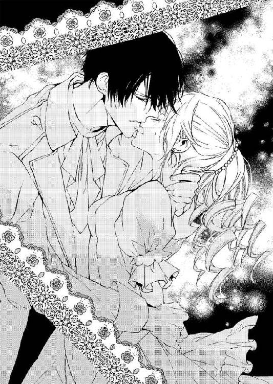
「黙っていろ。それともロイスを慰めたいというなら、奴の元に戻ってもいいぞ」
「そんな......でも、私、さっきのあのレジオン様の言葉が気になって。もしかしたら......」
「さっきのなんだ？」
「私のこと前からご存じだったのですか？ 昔、レジオン様もあの学院にいたのでは？」
ヴィアンカが学院に入ったばかりの頃、監督生の部屋には〝黒い天使〟がいると聞いたことがあった。恐ろしい人物だと聞いてそっと陰から見たことがある。とても妖しく美しい少年だった。
（あのときの彼......？）
「知らない。そんなことより、もし俺が捕まることになったらおまえは自身の安全のために証言しろ。あのザッハビル・ド・ヴァンスの被害者がこれ以上出ないようにするためにもだ。いいな。そうしたらもうおまえのようにあの部屋でいやらしいことをされる娘も、男に売り飛ばされる娘もいなくなるんだからな」
大広間には、先ほどよりも大勢の人が集い、身動きもとれないほどの盛況ぶりだ。
優雅な動きで音色を奏でるオーケストラのワルツで踊り、壁際ではお喋りに花を咲かせる女性たち。
その奥にレジオンは照準を定めたようで歩き出す。
ヴィアンカは人波の奥に見たがたいの大きな男に目を奪われる。そこには豪華な椅子に腰をかけている、あの学院長が座っていたからだ。
「学院長......」
ヴィアンカは、すでに顔色を失いながら呟き、レジオンの陰に知らずのうちに隠れてしまう。
は虫類のような彼の鋭い目つきを見ただけで、あの学院長室での淫靡な行為を思い出して足がすくんできてしまう。
身体ががたがた震えてくる。ここは重いカーテンが引かれたあの薄暗い院長室ではないというのに。優雅な音楽の流れる大変華やかな場所だというのに、ヴィアンカの時間は、あの静けさが氷のように張り付いた部屋の中にいるときに逆行していってしまう。
「そうだ。彼がザッハビル・ド・ヴァンス公爵だ」
レジオンはその男に大股で歩み寄り、その迫力ある靴音からか、何か異質なものを感じ取ったザッハビル・ド・ヴァンスの取り巻きたちがそこをあける。レジオンは、開かれた公爵の前の空間に立ち、そして彼の前に手紙を突きつけた。
「以前、私には何もないとおっしゃいましたね。証拠がなければただの中傷だともおっしゃっていましたね、これが証拠です。あなたが五千万ルランで貴族の少女を売った証拠ですよ。読み上げましょうか？」
銀の刺繍の施された深草色の上着。組まれた足はシルクの灰色のズボンに、金のバックルの付いた黒い革靴。褐色の髪に褐色の髭。見るからに尊大な男は口元をつり上げる。
「それが何だというのかな？ そんな書類、いくらでも何にでも変えられるものだろう」
レジオンは目の奥に深い憤りを現して、さらに口を開く。
「いくらでも？ では過去も娘を売買した記録を出しましょう。ここで今すぐ、あの修道院の悪しき風習を改めないと、これを国王陛下に進上します。そうすれば、国王の寵愛も、今の職も名誉も地位も何もかも失うことになる。それでもいいのですか？」
「我が名誉を傷つけたくてこんな猿芝居をするのか。私を失墜させようとこんな工作をしてくるとは片腹痛い。王陛下にでも何でもその紙くずを見せるがいい。そんなものが何の証拠になろう。そもそもこの私が何をしたと？ 修道院を作り、貴族の子女の通う完璧なる学院を作り、社交界に出して恥ずかしくないよう立派に教育を施す。何故このような言いがかりを付けられなくてはならないのか」
ザッハビル・ド・ヴァンスは怒りを蓄えていたかのように、両腕を椅子の肘掛けに叩きつけ、そして立ち上がる。立ち上がればまたその長身がはっきりとして、尊大な男なのが嫌でもわかる。周囲にいた取り巻きたちは、ここで何が起きているのかわからないようで、ザッハビルの顔を見ては、取り巻き同士で顔を見合わせていたが、レジオンがさらにザッハビル・ド・ヴァンス公爵に詰め寄ろうとしたのを見て止めに入る。
「君。このような場でいささか無礼ではないのかな？ ここは王女様の開いた舞踏会の場。何があったか知らないが、そのような誹謗中傷をいきなりするのはまったくもって見当違いだ」
ザッハビル・ド・ヴァンスより若い青年貴族が蒼い上着の裾を翻し、レジオンの手を掴む。
その手から、手紙が落ちてザッハビルはわずかに顔色を変えた。
「これは......」
ザッハビルがそれを拾おうとしたとき、レジオンが素早くしゃがみ込み、それを奪った。
「見覚えがあるようですね。これが何なのか、覚えているのでしょうね」
「だからなんだ？ 何も証拠はない。誰もこのようなことがあったというわけがない。誰もが我が学院を幸せに巣立ち、そして優秀な士官学校に進学し、令嬢たちは名誉ある家に嫁ぎ、またあるものは名家の養子に入り、皆幸せな人生を送っているのだから！」
「幸せな？ この新聞記事も目に入れるといいでしょう。これは隣国に連れて行かれたセント・クレイド学院の女生徒。あなたの元から買われたのは一八×九年。下見に来た貴族が一目で気に入り、その日の内に二千万ルランで売った十六歳の令嬢です。元はカール男爵の十番目の令嬢。でも、男爵は地方の領地の管理に追われ、ずっと家族とも城とも離れておりその最中に事故死した。息子がいない男爵家の娘たちにあなたは目をつけた」
レジオンは枷の効力さえ持つような鋭い視線でヴァンス公を睨み続ける。
「男爵の妻を巧みにそそのかし、二人の令嬢を寄宿舎に金を取って入れた。あなたが自身の鳥籠に入れたいと目をつけた金髪碧眼の娘たち。学院におけば好きなように眺められ、触れることもでき、成長したら愛人にするか売ればいい。そんな欲望もあったでしょう」
「そんなのは嘘だ......」
ザッハビル・ド・ヴァンス公爵は低く唸る。
「養子縁組という形をとられても、実際買われた娘はその男の愛人にされ、飽きた後、男は隣国の貴族に彼女をまた売り飛ばした。そうして殺人事件に巻き込まれ亡くなった。大変不幸な事故ですが、このケースが稀なわけではない。調べれば次々と出てくる忌まわしい行為を......あなただって知らないことではないでしょう」
レジオンの説くような強い声に、ザッハビル・ド・ヴァンス公爵が大声を上げ威圧する。
「五月蠅い！ 黙れ！ 誰かこの男を即座に放り出せ。もしくは侮辱罪で投獄しろ！」
「父上......」
「ロイス！ おまえがこの場に来ていながら何をしている！」
声を荒げて名を呼ばれたロイスは、ヴィアンカとレジオンの背後に立ち、唇を噛んでいる。
「ヴァンス公。僕はあなたを弁護することは出来ません。レジオンのいうことは確かでしょう。その証書も、その新聞記事も本物だ。そしてその手紙はヴィアンカ嬢を譲り渡すとジル・ド・グリーズ伯爵に一筆もらったものでしょう」
「なんだって？ なんだって？ おまえは......この私に逆らうのか？ この私に」
ヴァンス公はレジオンにだけでなくロイスにも目を剥いて口角から泡を飛ばしている。
周囲でダンスをしていた貴族たちも、彼の異様に気がついてこちらを見つめ始めている。
「ヴァンス公。ここでこれ以上声を荒げていたら周囲の人たちが何事かと思います。どうか声を抑えてこの場は......」
「この場を収めろと？ こんな若造に侮辱を受けたのにか？ この男も......我が学院の出身者だというのに。おまえだとてあの娘を買うと言ってきたくせに」
「───ああ、買いたいほど気に入ったのは事実。だが、囮捜査においてそういうことは絶対不可欠ですからね」
レジオンは嗤う。
ヴィアンカはその言葉でやはり、レジオンは学院の出なのだと改めて思い出す。
学院には女生徒と同じく、ロイスのように恵まれた貴族の子息もいるが、恵まれない貴族の子息もいた。レジオンがどういう育ちかはわからないが、もしかしたら彼は、努力で今の地位と名誉を手に入れたのかもしれない。
「レジオン......様......？」
「学院から手を引いてもらう。今ここで証文にサインをしないのならば、先ほど宣言したとおりあなたの罷免を王陛下に進言する」
「王の忠臣にそのような無礼を公然としたからには、どうなるかわかっているだろうな。おい！ 捕らえろ」
ヴァンス公は、さきほど周囲に呼びつけていた使用人たちに、レジオンを捕らえるように再度指示する。使用人たちは、事情が把握できないものの、恐ろしい権力者であるヴァンス公の剣幕におっかなびっくりで命令を遂行しようとする。
レジオンも男たちにむざむざ捕まる気はないようだ。身構えて、男たちに視線を刺す。
「俺を捕らえたら、それこそ大変なことになるからな。悪事を裁くこの俺を捕らえれば国王陛下に限りない損失を与えることになる。肝に銘じろ」
使用人に取り囲まれ、さらにヴァンスの部下たちが護衛兵を中に入れる。周囲は騒然とした。
中央で踊っていた優雅な貴族たちは壁際に引いて、この騒ぎを何事かと顔を寄せて噂する。
そして緊迫しているヴァンス公の座っていた椅子の周辺は、レジオンとヴィアンカ、ロイスを囲んで厳つい制服姿の護衛兵たちが取り囲んでいる。
ヴァンス公と噂に名高い王女の護衛官のレジオン。その二人を巡って、他の者たちは手を出すことに躊躇している。
「待ちなさい。何を騒いでいるのです？ ここは王宮。そして私が主催している舞踏会ですよ？ 喧嘩は御法度です」
その緊迫した空気を裂くようにして現れたのは、アンヌ王女だった。
まだ若い王女ながら毅然としており、奢れる有力貴族と女性に注目されながら高位貴族の争いの中に悠然と入っていく。
「およしなさい。ヴァンス公。王陛下の寵愛を受けているあなたともあろう方が、舞踏会の広間で人目もはばからず見苦しい」
「ですが王女様......」
「私の言うことが聞けないのですか？ でしたらあなたを今ここから退場させなくてはいけません。それに......あなたが犯した罪も、私はこのまま見過ごすことができません」
「王女様。この私がどのような罪を犯したというのでしょう。今不穏な言葉が出ていたのをお聞きになったのでしたら、それはこの若輩ものの中傷です。私の地位をやっかんで、私を追い落とそうとした企みです」
「レジオン殿が、あなたをやっかむ理由が見あたらないのですが？ 彼には我が誓約の指輪も与え、直属の護衛騎士にも任命しました。十分すぎるほどの栄光を手に入れていますよ？」
王女が、左手の中指を突き出す。そこには昨日レジオンが受け取った中指の指輪と同じものが輝いている。
（あの......指輪......誓約の......？）
「いえ、王女。奴は修道院を多く援助し創設している信仰深きこの私を落とし入れ、国家転覆をもくろんでいるものの手下かもしれません。今一度この男をお取り調べください」
ヴァンス公爵は引き下がらずに王女の前にかしずき、膝を突くとと頭を下げる。
周囲の貴族は騒ぎの成り行きを見つめ、大広間で踊っている者は誰もいなくなっている。
「隣室に......行きなさい。ヴァンス公。我が主催の舞踏会を台無しにする気ですか」
「いやです。王女様。この若造を処分してください」
「彼は......私の大事な......」
（私の大事な......？）
ヴィアンカはまた、その言葉で唇を震わせてしまう。
「レジオン殿が、王女様の結婚相手であるというのは、本当でしょうか？ もし本当なのでしたら、ここで私事はお控えください。ひいきからのご意見でしたら私は王陛下にこのことを告発させていただきます」
「ひいきなど、私がいつそのようなことをしましたか？ ヴァンス公」
「王女への侮辱は、この私も許さないぞ。ヴァンス公。貴公がしていることは人身売買と同様だということを私は告発しているのです。被害者をこれ以上出さないために孤児院や修道院寄宿舎をあなたの管理管轄から外すべきだと。自主的に手放すべきだと」
レジオンが、王女をかばって口を挟む。だが、ヴァンス公は、この場を自分の独壇場にし、騒ぎをレジオンに非がある言いがかりだと周囲の貴族たちに知らしめるつもりらしい。
「私は正しい。私が学院で貴族の子息と共に身よりのない子供を受け入れるのは、よりよい環境で子供を育て、何不自由ない引受先を見つけてやることこそ神への奉仕、国家への貢献、成し遂げるべき偉業だと思っているからなのです。なにか間違っておりましょうか？」
ヴァンス公の修道院や孤児院の設立、多額の私財投入は、宮廷貴族の間でも賛辞されていたことだから、ここで少女たちの実際の悲劇を知らない者たちは今の力説を耳にして、ヴァンス公を支持する流れになってきそうだ。
レジオンは苦境に立たされてしまった。
背後からの多くの貴族から、レジオンが言いがかりをつけるゆゆしきものだという視線を感じる。そういう貴族がヴァンス公の肩を持ち、援護したら人嫌いであまり貴族つきあいのよくはないレジオンが窮地に陥るのは目に見えている。
「王女様。私を連れ出すとおっしゃるのなら、その前にこの若造を拘束し、ふさわしい場に放り込んでくださらなくては。動かぬ証拠でもあるというなら別ですが、こんなものではなんの効力もありません」
ヴァンス公爵は手紙を足で踏みにじり破こうとしている。
「───ぅ......嘘......です......」
ヴィアンカが掠れるような声を絞り出した。
「や......やめてください......そんな......その人の言うことは嘘です。レジオン様の言うことが真実です......」
それまで氷に固められたように動けなかったヴィアンカが、弾かれるようにその手紙に飛びついた。ヴァンス公爵を突き飛ばし、その手紙を広げて、読み上げる。
「『ジル。もしものことがあったときは、この子を......ヴィアンカを頼みます。我が城で何の不自由もなく育て上げ、そして城を継がせてください。領地も資産も十分にありますから、あなたが養育者となりあの子を美しいレディにしてください』。この手紙は......これは我が両親が亡くなる前叔父に......ジル・ド・グリーズ伯爵宛に書いたものです。でも私は......結局すぐに学院に入れられました。つい先日まで知りませんでしたが、叔父は学院長からお金を受け取って私を売った形で入学させていたのです」
王女は引きつった表情で、ヴィアンカを見た。
「本当ですか？ あなたが証人になると？」
「はい」
ヴィアンカはレジオンを見つめる。
「その他の手紙もあるはずです。王女様もきっと......ご覧になっているはず」
重い塊が詰まったように固まっている喉から、必死に声を振り絞る。
「ザッハビル・ド・ヴァンス公の言うことは詭弁です。その人は有力者の両親がいてちゃんと育て上げるべき生徒と、高値で金持ちに売りつけるための親の庇護を失った貴族の生徒を分けていました。ザッハビル・ド・ヴァンス公の学院創立は、信仰心からの行為でも国家への貢献でもなんでもないのです」
「お嬢さん？ 君はいったい何を言い出すんだ？ どこの令嬢か知らないがレジオンにそういえと言い含められているのだろう？ そうだな？」
威圧する声と恐ろしい目つきに、ヴィアンカはたじろぐ。この男の前で服をすべて脱がされた。そしてさまざまなところを触れられたのだから、今この眼に晒されると恐ろしさが肌の奥から甦る。
「レジオン様は、関係ないわ。私が自らの意思で告発します。ザッハビル・ド・ヴァンス公は恥知らずな好色な人です。彼は身体検査という名目で、学院長室に女生徒達を呼びつけては裸にして隅々まで触れてきました」
「おまえ、ヴィアンカ？ まさか......まさかあのヴィアンカか？ 逃げ出したヴィアンカ？」
ヴァンスはずかずかと歩み寄ってきてヴィアンカの手をとる。
「あ......ぃや......ッ」
抵抗しようと腕を引いたが、ヴァンス公はその手を引き寄せ、顎をも押さえつけられた。
まるでモノを品定めするような手で、そして怒りに満ちた目で凝視される。
「金髪碧眼。この美しい陶器のような肌。まさしくヴィアンカか。逃げ出してこのような場所にいるとはけしからん、あんなによくしてやったのに。あんなに......よくしてやったのに、この私に赤っ恥をかかせて！」
彼はヴィアンカの肩を掴んで揺さぶりつける。
「どこに逃げていた？ こっちは奉仕のためだけにおまえを育てていたわけじゃない。引き取ってくれるという貴族がいるだけで、どれだけありがたいと思っているんだ」
その低い怒声が周囲に響く。それまで音楽を奏でていたオーケストラがその音色をゆるゆると収めていく。
「さあ、来るんだ。今からでも遅くはない。我が損失をおまえは埋める義務がある。叔父上に、いいところに売りつけて欲しいと頼まれて預かったのだからな」
ヴァンス公はヴィアンカの腕をねじり上げるようにして、戸口から連れ出そうとする。
それをレジオンが遮り、逆にヴァンス公の腕を捻り上げた。
「何をするんだ......貴様......ッ」
怒れる形相のヴァンス公が、レジオンを睨みつける。
レジオンは反逆の意思を示し、鋭い目でヴァンス公を睨む。
「ふ、とうとう馬脚を現しましたね」
「───ッ」
「彼女があなたの悪事を今告発しました。それが動かぬ証拠でしょう。この手紙は彼女の叔父上が両親に託された彼女の将来に関するもの。叔父上は遺言を無視し、城を乗っ取りヴィアンカ嬢をヴァンス公に売り飛ばした。年頃になった彼女を、あなたが大金持ちに高額で売り飛ばしたら、その利益の何割かを手に入れる約束も交わして。幸い彼女は逃げ出して、あなたは売買契約の整っていた相手に違約金を支払うことになりました。そうですよね」
ヴィアンカはレジオンに寄り添い、公爵を睨む。
「は、ヴィアンカ。おまえは色恋に迷ってこの男のために出て行ったのか？ この私の顔に泥を塗っておいて、この男と！」
「違います！ レジオン様は関係ありません！」
このままでは、誤解されてしまう。彼の迷惑になってしまう。
ここで、レジオンのことを自分とヴァンス公のことに巻き込んだらいけない。ただ匿ってくれていただけなのに。行く当てのない自分を城においてくれた人なのに。問題を起こしたら、王女様との結婚も難しくなってしまう。
「ヴァンス公！ もう......やめてください。彼女を巻き込まないで」
掠れた悲鳴が人垣の奥から聞こえてきた。
それは紛れもなくリリー・ド・ポウの声。
「リリー......？」
ヴィアンカがその声が聞こえたと思える大広間の奥のほうに視線を巡らせる。大きく膨らんだドレスの夫人方の奥から、一人の令嬢が現れた。
緊張と興奮に少し青ざめた顔。それでいて丹念に社交界用の化粧を施された大人びた顔はヴィアンカの友人、リリーだ。
水色の美しいドレス。ストライプのヘッドドレスをつけ、長い栗色の髪を巻いて肩や背に垂らしている美しい令嬢は、先日見かけたパラソルの貴婦人と同一人物だとわかる。
髪をアップに上げて数珠のように連なる宝石の飾りを編み込んでいる。肩も胸も大胆に開いた美しいカットの大人びたドレス。
口元に覚悟を決めたように小さな拳が握られている。その左手の薬指に、豪華な婚約指輪が輝いているのが見えてヴィアンカは複雑な思いに捕らわれる。
「リリー。あなた......なの？」
ヴィアンカが彼女を前にして、詰まった喉でそう呟いた。
「リリー、本当に無事だったのね。心配してたの。急に姿を消したから......」
リリーは大勢の視線が突き刺さる中、ゆっくりと人形のようにたどたどしい足取りでヴァンス公の前に進み出ると、ロイスとヴァンス公との間に割ってはいる。
「リリー......？」
「ごめんなさい。ヴィアンカ。私のことを心配したでしょう。私、私の家が急に負債を負って、それで兄に売られたの。ヴァンス公爵が大金で私を売ろうとしていたの。でもロイス様と一緒にいたくて。隣国に血統のいい花嫁として売られるのが辛くて......それで......ロイス様のところに逃げていたの。ロイス様と幸せに暮らしていたの、幸せだった。でもあなたが......こんなことになるんだもの。私だけ......隠れて逃げているわけにいかないじゃない」
「ロイス？ どういうことだ？ この娘がおまえといただと？ わけがわからんが」
ヴァンス公爵が、深い眼孔からロイスを睨む。
「僕が立て替えていたんです。バリー公爵の代わりにヴァンス公にばれないように、あなたの口座に落ちていたのは僕の金。そして彼には身代わりの令嬢を送り込んだのです。だから......隠しておきたかった。僕も......リリーを救うためとはいえあなたと似たことをしてしまったのだから。でも、もうあなたのような悪事には手を染めたくはない。ここで......清く正しい自分を取りもどしたい。あなたの罪を明らかにして学院はもっと公正なものにしていきたい......いい加減うんざりする」
周囲は大人数が一堂に会しているとは思えないほどの静寂に包まれた。
息苦しいほどの沈黙が、大広間全体にのしかかり、結局悪事を行っていたのはヴァンス公だという結論に落ち着く今の多くの証言に貴族たちはどう反応をしていいのか、どうしていいのかわからずにいる。
王宮貴族の中でも五本の指に入るであろう有力者が淫らな目的と金目的で、貴族の子息を育て売り飛ばしていたなんてスキャンダラスなこと以外の何ものでもない。
自分の子供を躾の厳しいことで有名なヴァンス公の学院に入れていた親たちは、顔をしかめ、そして色を失っている。
「ゆゆしきことだわ」
「ええ。まさしく。いい噂ばかりではなかったけれど、そこまで淫らな目的を持って学院を運営していたなんて。あの学院に私のいとこが令嬢を預けていますわ。莫大な寄付金を取っておきながら男の欲望に沿わせて売買するなんて、なんてことでしょう」
「本当に」
夫人たちの声がひときわ大きく響くが、王女がそのざわめきを諫めた。
「静かに。これではっきりしましたね。ヴァンス公の言葉は自白と受け止めます。王陛下にもそのように伝えておきます。レジオン様はそのまま腕を解放されるべきですよ。護衛兵」
「は、王女様......。仰せのままに」
使用人や軍人は、今度こそ王女の命令を遂行すべくレジオンの拘束を解き、ヴァンス公の腕をとって大広間から連れ出していく。
ヴァンス公は、少々うなだれたように姿勢を崩したが、それでも長年の王の寵愛を受けている大貴族としての誇りを揺るがすつもりはないというのか、すぐ顎を引いて、毅然として部屋を出て行く。
その様を見送ってから、レジオンは王女の前に膝をついた。
「寛大なご配慮をありがとうございます。アンヌ王女様」
「いいのよ、レジオン。私ももう少しうまく彼を制することができればよかったの」
「そのような......もったいないです、王女様」
レジオンは王女の手を取り、自分の指にあるものと同じ指輪の上に口づけをする。
「さあ、皆様。華やかな舞踏会はまだまだ続きますよ。ワインを飲んで、お腹が空いた皆様は軽食もご自由に！ もう一度大円舞曲の最初から踊りましょう。夢のワルツを踊りましょう」
一度凍り付いていた大広間の空気は王女の機転で、再び和やかなものになり、楽団はテンポのよい楽しげな曲を奏で始める。
「さあ、私と踊ってくださる方はいて？」
王女が人々のほうに優雅に白いローブデコルテの手を伸ばせば、青年貴族たちが我こそはと手を取ろうとする。
だが、王女は最初にレジオンの手を取った。
レジオンも、それは当然の務めとしてしなやかな手に王女の手をのせ、片足を引き一礼する。それから、先ほどヴィアンカと踊っていたのと同じように、そのしなやかな身体をゆったりと曲に乗せ、空に滑らせながら踊る。
誰もがうっとりとする二人だった。
ヴィアンカは、それまでの恐ろしい現実が、華やかな空気に融解していくのを感じている。
自分はちゃんとレジオンを守れただろうか。
守ったのは王女様だったかもしれないけれど。できるだけのことはしたような気もする。
まだ緊張の解けきらない足でよろめくように壁際により、ほうっと身体をソファに預ける。
「ヴィアンカ......」
ヴィアンカの前に来たのはリリーだった。肩や胸の開いたセクシーなドレスのみならず、髪型も表情もすっかり大人っぽくなったリリーに、ヴィアンカはまるで知らない貴婦人を見るような気さえしながら顔を上げ見つめる。
「リリー、よかった......無事で......」
「ごめんなさい。心配かけて。あのときすぐ学院長に拘束されて売られそうになって、ロイス様が私を馬車でこっそり連れ帰ったの。私を隣国に行く船に乗せるという名目で......。でも私はロイス様と結婚したくて。あちらの方には私とよく似た別の少女に状況を伝えて行ってもらったの。私の場合、望まれた相手はいい方で、お歳以外は悪い条件ではなかったから、あちらできっと幸せな花嫁になっているはず。むろん、そんなの身勝手なことなのはわかっているのだけど」
「あなたが......そこまでロイス様のことを好きだったなんて......」
自分を調教していた淫猥な学院長が、王陛下の信頼厚い王宮貴族の大物であり、ロイスの父だったなんて。まだすっきりと喉元には落ちては来ない。リリーが美しい貴婦人となってロイスの手に抱かれていることも不思議な気分だ。学院の中で見ていた二人とまったく違って、華やかな社交の場ではしっとりとした大人の恋人同士に見える。
「これからどうするの？ リリー」
ヴァンス公の悪事を暴いてしまった。それはリリーやヴィアンカが追われなくなったということでは安心できる。ヴァンス公は、王陛下に罰を与えられるか口頭注意に済まされるかだろうけれど、今後の学院はヴァンス公爵に任されることはないだろう。
リリーは今後ロイスと結ばれ結婚式を挙げるのだとしたら、ヴァンス公爵の義理の娘になる。うまくやっていけるのだろうか。
「ロイス様と結婚するつもりなの」
「反対されても押し切るつもりだ。ここから離れてもっと田舎に行ってもいい。二人なら」
リリーの左手の薬指に輝く指輪は、彼女の手に手を重ねたロイスの手にも同じものが輝いている。リリーの指輪は売られた先の男による拘束の証ではなく、愛する人に贈られたもの。
「結婚......素敵ね」
自分が道化師のような役回りだったことなどどうでもよく、本当に心からうらやましい。
「ヴィアンカはこれからどうするの？ レジオン様のお城で暮らすの？ 花嫁さんとして」
「ま、まさか......！ まさかそんな。恐れ多いわ。レジオン様は王女様と......」
「俺が王女様と何だって？」
突然、身体に心地よく刺さる美声が耳元に聞こえる。
力強い腕が背後から抱きすくめてきて、ヴィアンカは思わず下肢から震えた。
耳に声を挿入されて、腕で腰を、そして胸もとを抱きしめられる。それはもう完全に愛撫だ。
有無をいわせぬ強い拘束。
「レジオン......様......」
振り返ることも許されない強い力で抱きしめられて、彼の唇を耳朶に受ける。
熱い唇がちゅっと音を立てて耳朶を吸い、唇で挟んでくる。
それも気持ちよくて甘くて素敵だけれど、本当は唇にして欲しい。でもここは王女様の舞踏会。王女様の護衛隊で王女様との結婚話がある彼にそんなことはねだれない。
「さあ、踊らないか？ もう一度。お願いします。お嬢様」
レジオンは一礼をしてヴィアンカの手を取ると、何事もなかったように大広間の中央へと足を向ける。
もうそのときにはヴィアンカの手を高く掲げ、クルリと回し、身体をも回転させてクリーム色のシルクのドレスを大きく翻させている。
豪華な花を扱うように、腕を大きく伸ばして、手を繋いだままヴィアンカを意のままにステップを踏ませ、自らに引き寄せ、熱い胸の中に抱きしめる。そうしてまた指先だけ繋いではしなやかな肢体を離し、ヴィアンカのドレスのスカートをめいっぱい膨らませてくるくると花弁を綻ばせては、また引き寄せた。
優雅に、軽やかにヴィアンカを誰よりも美しく見せるようにして操るのがレジオンだ。
自分の立ち居振る舞いの優雅さを、ヴィアンカの身のこなしを華麗に見せるための添え物にさえしているように、普段の傲岸不遜な態度はなりを潜めている。
レジオンは、いつもヴィアンカを大事にしてくれている。
学院でヴァンス公に淫らな検査を受けていたときも、学院を飛び出すことになったときも。
彼が王女と結婚してもそばにいたい。そばに置いてもらいたい。
「レジオン様......」
一曲が終わり、次のワルツのためのメロディに第一ヴァイオリンの弓の走りが移っていく。
ヴィアンカはレジオンを強く見つめた。
レジオンは、立ちすくんでいたヴィアンカの腕をとり、そうして手を顎に添えながら顔を上に上げさせると口づけを降らしてくる。
ちゅっと上唇をついばみ、下唇をついばんで、深く合わせれば、もうヴィアンカの身体の芯まで愛撫の予感に胎動がうねってくる。
（ぁ、だ、め......）
レジオンの胸もとに指先を下ろして、そしてそっと押しのける。彼はそれを口づけの拒否と受け取ったのか、そっと濡れた唇を離して頬に触れる。
「よかった。もう......額も、頬もあまり熱くなくなったな」
「あなたが、突然大広間中が凍り付くような驚くようなことをするからよ。熱も下がるわ」
「それはすまない。あそこで......おまえを巻き込むつもりはなかったんだ。奴が証拠だ証拠を出せと騒ぐから、あの手紙をおまえの叔父上から代金と引き替えに買い取った。それより、あんなこと、おまえの証言など誰が欲しいって言ったんだ？」
「あなたが......あそこに私を連れて行ったのよ？ 巻き込まれて当然だわ」
少々むくれたように唇を突き出すが、もちろん、ヴィアンカは怒ってもむくれてもいない。
「あれは連れて行ったんじゃない。ロイスのもとから引き離したら結果あそこにおまえも同行させることになっただけだ。間違えるなよ」
「そんなめちゃくちゃな言い訳は......すごく子供っぽいですから。レジオン様」
「俺は常に理性的な男だ。幼い頃人並み以上に苦労していたから、同年代より大人びているはずだ。なのに......俺がもし子供っぽいと思うなら、それはおまえが俺を本気にさせるからだ。理性を奪うからだ」
「───え......？」
「おまえに本気になって、おまえの言動にいちいち心騒がせられてしまうからだ。本音で......ぶつかることを......余儀なくされているからだ。俺から余裕を奪っているのはおまえだぞ」
ヴィアンカはきょとんとしてレジオンを見つめる。
「本気って......あの......」
なんて素直な眼差しを落としてくるのだろう。なんて素直な表情でそんなことを言ってくるのか。否が応でもときめいてしまう。でも彼が言っている『心騒がせられる』のは、恋の意味じゃない。愛ではない。
ぞんざいな態度をとりながらも優しい人だから、放っておけないだけだ。
「こんなに綺麗な姿を、俺の前にちらつかせるからだ。九年も前から......俺はおまえに一目惚れだったんだから」
「九年も......前ですか？」
「ああ。おまえが叔父上につれてこられて、不安げに学院長の前に立っていたときから......幸せにしてやりたいと思っていた......」
「そんな前から......ですか」
「俺も長らく子供だったからな。こうして今は微力ながら権力も身につけた」
レジオンは不敵に嗤う。
「見初めてくださっていたのに申し訳ないですけど、私のこんなドレス姿は今日、今が最後ですから、よく見ておいてください。見納めですよ」
茶化すようにヴィアンカは言って微笑む。
「なんで最後なんだ？ ドレスくらい俺がいくらでも贈る。どんなドレスがいい？ これは気に入らなかったのか？」
少々不安げに眉を顰める彼が、なんだか可愛らしくて愛おしい。
「男装に戻ります。お小姓に戻れば、王女様と結婚してもおそばにおいてもらえるかも......」
「王女と結婚？ 誰がだ？」
「レジオン様です。王女様がお好きなのですよね」
「俺にとっては仕えるべき比類なき存在。女性としても王女は格別な存在だが、なぜ結婚に話が飛ぶんだ」
レジオンがみけんに複雑な皺を寄せながらその美しい顔を寄せてくる。
「結婚......するのですよね？」
「結婚はするつもりだ。だが王女とはしない」
「どうしてですか？ 振られたのですか？ ああ、さきほどのヴァンス公のことで騒ぎを起こしたから罰せられるのですか？ それが原因で結婚に支障が？」
「おい、何を言っているんだ。罰せられるとしても王陛下に厳重注意のお言葉をもらう程度だ。そもそも俺は何も悪くないだろ」
「───そうですね」
「ああ、むろんだ。王命を受け悪事を暴いているんだぞ」
少しむくれたその表情も、男らしくて愛おしい。
「ではどうして？」
「こっちにこいよ。ここではあまりよく聞こえない」
引きずられて、戸口に出される。
そこから夜のランプに照らされる幻想的な庭園を突っ切って、レジオンは別棟にヴィアンカを連れ込んだ。
そこは大きな円形のステンドグラスに彩られた荘厳な聖堂だった。
「レジオン様こんなところで何を......」
静寂に押しつぶされそうなほどの荘厳な大聖堂。王宮の片隅にある王家のための大聖堂だ。
「なんだか段々腹立たしくなってきたんだ」
「え？」
高い天井から下がる香壺から微かにオリエンタルな香りの漂う静謐な空間の中、整然と立ち並ぶ石造りの円柱の中を、レジオンはヴィアンカの手を引いて大股に闊歩する。
「レジオン様......どこへ？」
「おまえに今から魔法をかけるぞ。俺のそばから二度と離れられなくなる魔法だ」
レジオンは天に昇るような高さまで聖人や天使の彫り込まれた黄金の聖壇の前で、ヴィアンカと向き合う。
天井から落ちる円形のシャンデリアから降る光りが、回廊のステンドグラスを鮮やかに照らし、そうして周囲の蠟燭の光りがクリスタルの聖具を輝かせる。
「二度と俺の腕の中から逃げられなくなる魔法だ。俺と契約をして欲しい。ヴィアンカ」
光りの反射が乱舞する中、レジオンはヴィアンカの手を取り、そしてその左手の薬指にリングを嵌めた。
「おまえの両親が立派なレディに成長した暁に嵌めて欲しいと願っていた紋章の指輪。これはおまえの叔父上から奪い取ってきた」
レジオンは言ってヴィアンカの薬指に嵌めてくる。
「こちらは俺からの結婚指輪だ。俺がこの手を離しても外すなよ。いいな。絶対だぞ」
レジオンはヴィアンカの手をそっと離す。その左手の薬指に、黄金の指輪が二つ輝いている。一つはヴィアンカ・ド・ルセルの家紋の彫刻された大粒のサファイアの嵌ったもの。
ヴィアンカが幼い頃両親にもらっていながら叔父に奪われていた貴族の証。紋章の指輪を指に嵌め、ヴィアンカはかつての両親の願いを叶えたことになる。
もう一つはクリスタルのように輝く大きなローズカットのダイヤモンドの輝く指輪。
そんな大きなダイヤモンドを見たことがないほどの大きなもので、ヴィアンカは思わず透明な輝きの中に吸い込まれそうになる。
「約束してくれ。二度と俺の腕から逃げないと。そしてもう二度とドレスを着ないなどと言わないで欲しい。おまえの男装姿はもちろん素晴らしいと思うが、俺の花嫁としてドレスを着てくれないと困る。俺が女性嫌いのあまり、とうとう男と結婚したと思われるじゃないか」
「───え......」
ヴィアンカは左手に清楚でいて豪華な光りを乱反射させる指輪を見て、そしてレジオンの顔を見上げる。
「あの......意味が......よく......」
「おまえ、頭がいいのにこんな簡単なこともわからないのか？ 得意は暗記だけか？」
レジオンはヴィアンカの顎をそっと持ち上げて、疑問を口にしようとしたその赤い唇に唇を押し当てる。
「結婚......しろよ。この俺と......」
「で、も......王女様との婚約は......？」
「婚約などしていない」
「でも、指輪を......おそろいの指輪をしていたじゃないですか。契約の指輪」
「騎士として、だろ。直属の護衛騎士になった証としての指輪のことだ。騎士とその主としての騎士の契約の証だ。婚約指輪なんかじゃないぞ」
「───そう......なのですか」
彼はヴィアンカの目の前に左手の中指の騎士の紋章の入った指輪を突きつける。
「他の護衛騎士団長も戴いている指輪だ。全員と婚約したことになるじゃないか」
「そう......ですね」
ヴィアンカは、早とちりだったのだと顔を赤らめていく。
「やはり、側に置いて見張っていないといけないようだな。この身体も唇も」
そう呻きながら、レジオンはまたヴィアンカの唇を熱い唇で塞いでくる。
「ん、ぅう......？」
「結婚してくれるんだろうな。この俺と......」
「ん......う......ぅ......」
「否定の言葉は聞きたくないぞ」
ヴィアンカは、言葉を囁くときだけ、微かに唇を離し、ヴィアンカの返事は口づけで塞いでしまう彼のその行為に、軽く丸めた拳で胸を叩きつける。
「なんだよ？ 痛いぞ」
「唇......塞がれて......たら......返事......できないじゃ......ないですか......」
濡れた唇でやっとそう反論し、見上げるヴィアンカを、レジオンが困惑の揺れる緑青色の瞳で見つめ返す。
「返事......なんて、怖くて聞きたくもない」
「───え......だって」
「いい返事以外、聞きたくないんだ。俺は......おまえに最初からそう優しくできたわけじゃない。俺の手の中にやっと転がり込んできたおまえを最初から、どんな理屈をこねてでも抱きたかった。愛して愛して可愛がって、口づけでこのしなやかな肢体のすべてを埋め尽くしたかったんだ。だから......お小姓にでもなんでもして......そうして......」
もどかしそうに言いながら、ヴィアンカの背中に残している手を密着させて、絹の上からも肌の温もりを得ようとしてるかのようだ。
「レジオン様......私は......ですから......お小姓としてでもおそばにずっといるつもりです」
「おまえをお小姓としておいたのも、ただそばに囲っておきたかったからだ。学院長と同じだな。検査と調教の一環としておまえの身を愛撫していた学院長と......。拷問だと理由をつけておまえの身体を愛し、確かめたかった俺。あんなの嘘だ。ただ何でもいいからおまえを自分のものにしたかっただけだ。最初から......。嗤いたかったら嗤ってもいい。今だけなら......許すぞ」
「途中から。気づいて......ました。だって最初に私に男装をさせたのはレジオン様。なのにあの晩は暗くて酔ってらしたとしても、朝になってまで、私を見たことも会ったこともない男だなんて思うのは、ちょっと無理がありますから。賢くて軍人として鍛え上げられているレジオン様が、何度か会っている者の顔を判別できないわけがないです......」
「───っ！」
レジオンは、うつむきながら告白するヴィアンカを、苦虫を噛み潰したような顔になって、視線をそらす。
「なんだそれは......知っていた......だと？」
「あの、すみません。ではやっぱり知らなかったことにしておきます」
「知っていただと？」
「あの、ですから知らなかったことに......知りませんでした。あの、レジオン様はずっと私をヴィアンカではなく、ヴィアンだって思ってらしたと言うことでいいです。途中でちょっと腑に落ちないこともありましたけど、それでもレジオン様のおっしゃるとおりで......」
「おい。馬鹿にしているのか」
「え？ いいえ」
「そうだよな。俺がいつの間にかヴィアンカと呼んでいたことなんて、おまえは気づいていなかったよな。俺がロイスとの仲を疑っていたことも、おまえは気づかなかったはずだ」
「も、もちろんです......」
ヴィアンカは視線をそらして言葉に詰まりながらも同意する。
「俺がおまえの好みも調べていて、身体のラインも知っていて、このドレスも特注していたことだって、気づいてなどいないよな」
「え......」
うつむきかけていた顔を上げたヴィアンカの両頬をレジオンは両手で包み、そしてもう二度と顔を背けることができないようにと自分のほうに仰向ける。
「おまえが俺をこんなにするんだ。女など、好きじゃなかったのに。興味などなかったのに、どういうわけか昔からおまえだけが......俺の心をわし掴む......」
「レ......ジオン様......」
「女のドレスのボタンの外し方まで、これほどに慣れてしまった......」
言いながら、レジオンがいつの間にかヴィアンカのドレスの後のボタンを外しているのに今さら気づく。
「ちょ、レジオン様？ あのなんでそんな。今披露してくださらなくて......も......」
「せっかく身に付いた特技だ。いくらでも披露させろ」
レジオンは口づけをしてヴィアンカの唇を舌先で甘くくすぐる。
そうしながら背中に回した指先は、まるで魔法のようにするすると女物のドレスの貝パールのボタンを外し、そうしてホックも外してしまう。唇を甘く愛撫され、濡れた舌で口腔に潜り込まれながら、激しく中をまさぐられれば、いつの間にかドレスが肩まで落とされて、胸もとのコルセットまで露わになっているのに気づくことさえ困難なほど。
「あ......や......」
そんな甘えた声を出したときには、もう腰までドレスが落とされて、そしてコルセットの胸もとの編み上げリボンさえ解かれている頃だった。
ドロワーズも落とされ、パニエも外され、魔術師のような彼の器用な指先でヴィアンカの身体はすでに女の身体をむき出しにさせられている。
乳首が尖ってすでに真っ赤になっているのを、恥ずかしくて手で覆おうとしたが、その手も軽く押さえつけられ、何もかも彼の意のままに従うしかない。
「『あ......や......』じゃないだろ......もっとって言えよ......」
口づけの巧みさで、彼の口の中にまで吸い込まれていく舌が甘く溶かされている。
「レ......ジオ......ン......さ、ま......だ、め......」
彼が舞踏会用の豪華な上着を脱ぎ落としているような、さらさらという衣擦れの音がする。
十字架の輝く聖堂で、服を脱ぐなんて禁忌だ。男女で絡み合うなんて許されない。
修道院でも、学院でもそう厳しく教えられた。
（でも......）
片股を押し広げられて、その内ももに絡みつくように彼の指先が潜り込んでくる。
「こんなところでは......ダメ......です......うぅ......あん......ッ」
指先が、しっかりと合わさろうとする内ももを開き、その間の双葉の中にも潜り込む。すでにしっとりと濡れているその桃色の媚肉に指を這わせて大きく開く。
「あ......うう......」
大事な場所が剥かれてさらけ出されたのがわかる。ひんやりとした大聖堂の空気がそこを犯している。
むき出しにされた淫核が、いかがわしいほどひくつくのがわかる。
「可愛いヴィアンカ......。可愛い芽が......俺の指先で震えているな」
つっと、掠めるように突かれてその桃色の雌芯は痛いほどに震える。
「あ......だ、め......」
ジンとした痺れが、レジオンの指先から広がって、その奥の蕾からじゅくんと蜜を滴らせる。
蕾の中に指を挿入されれば、そこが彼の指を締め付ける。
「ああ、もうこんなか。早くしてやるから」
身体ごと抱きしめると、レジオンは聖壇の上にヴィアンカの身体を横たえた。
「あ......ひゃ......うぅッ」
背中が冷たい紫檀の黒光りのする台の上に触れて跳ね上がる。
「大丈夫......だい......じょうぶだ。可愛い子羊......」
片手にされた金の鎖がジャラリとなって空に引き出された。
金の鎖の先にある枷輪が、聖台の端の金具にかけられる。そうしてもう片方の手首の枷も。
足首にかけられた枷も、それぞれ、台の四隅に固定されている金具にかけられて、生贄の子羊のようにされている。
「この王室では代々......生贄を捧げてきたんだ。知っているか？ 大事な儀式の折に小さな羊を......こうして台の上にくくりつけ......そして心臓を刺しては流れ落ちる心血を神に捧げた」
聖台の上で裸にされるなんていけないことだ。台の上だけじゃない聖堂で、しかも王家の聖堂で口づけをし、乳繰り合うなんて許されない。
「いけ......ません......。冒瀆......です」
「俺がおまえを花嫁にするんだ。神の前で儀式を行う。それが俺の家系のしきたり。神は俺のために何もしてくれなかったが、それでも俺は神に敬愛の念は持っている。この形骸化した彫像にはなんの敬愛も情もないけどな」
聖壇の上に建つ、十字架を見る。修道院の十字架には杭打たれたキリストが彫られていたが、この聖堂のものは十字架のみだ。だから、幾分ヴィアンカのさざめく心は落ち着いてくる。だが、レジオンはさらに淫靡な行為をヴィアンカの白く艶めく肌に落としてきた。
「この身を清め、そうして完全に俺のものにしてやる」
一糸まとうものなく、聖台の上に淫らに開かれた乙女の裸を一瞥して言う。
「むしろ......この聖水。これは物質。奇跡の水。さあ、これで身を清めて」
レジオンはそこにあった装飾的なカットの施されたガラス瓶を手にして栓を抜くとその中の透明な液体をヴィアンカに振りかける。
頭に、唇の中に、乳首に、臍に、掌に、足に、そして足の付け根の恥丘のあたりには、何度となくとぷとぷと聖水の多くを垂らしていじめてくる。
感じるそこに、聖なる水を注ぎ込まれるなんて、恥ずかしくてしかたない。
その上、どうしてこんなに感じてしまうのかわからないほどヴィアンカの淫唇は固く絞られ、その水の愛撫を感じないようにと努めている。
「さあ、聖水でこんなに感じる淫らな姫君。神の御許でこれから俺の生贄になりなさい」
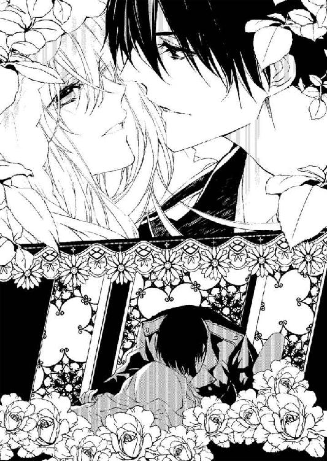
白く長い紗のベールが、ヴィアンカの水で濡れた素肌にかけられぴたりと張り付いていく。
その感覚だけでもぞくぞくとはしたないほどの欲望を掻き乱されて、ヴィアンカは早くレジオンに来て欲しくてたまらなくなる。
「早く......私の中に来て。早くあなたの生贄にしてください......ご主人様」
「ああ、望むところだ......俺の可愛い生贄の花嫁......」
卑猥な口づけの水音が裸になった愛するものの肌を、ねっとりと濡らしていく。
「───愛して......る......」
二人の熱い営みの声が、静寂に包まれた聖堂内でいつまでも、いつまでも、激しく響き続けていた───。
あとがき
はじめまして。蜜猫文庫の創刊にこのお話を書くことができまして、大変光栄に思っております。
ロマンチックにエッチに恥辱にいやらしく、ねちっこくラブラブ拘束で。という編集様のご要望を形にできていれば嬉しいですがいかがでしたでしょう。タイトルに〝生贄〟が入る乙女系小説も少ないかと思われますが、それは編集様一押しのワードです。生贄姫です。
愛玩動物系に調教されていますので、自ら「拷問お願いします」と素で言ってしまう最強（？）乙女です。ヒーローレジオンも、女嫌いを纏ったとんでもないエッチスト（！）ですので、割れ鍋に綴じ蓋とは彼等のことかも知れません。馬車で、聖堂の祭壇でと、ところかまわず愛が暴走しておりますが、温かい目で見ていただけますと幸いです。この愛の暴走特急のようなレジオンを超かっこよく、ヴィアンカを超可愛く色気たっぷりのウサギさんに描いてくださったサマミヤアカザ様に多大なる感謝の意を捧げます。そしてこまめに優しい愛の鞭を振るって励ましてくださった編集様にも限りない感謝を。いつも拙作を世に出してくださる校正様、デザイナー様、営業様。
その他携わってくださるすべての方、読者様にも大いなる感謝を込めて。
斎王ことり
Story
斎王ことり
さいおう ことり
初めまして。蜜猫さまレーベル創刊おめでとうございます。にゃんにゃん、猫の日に発売する乙女系レーベル。ということで、猫っぽく「甘くて高貴でツンデレなお話」を書かせていただけると嬉しいです。そしてそのお話を皆様に読んでいただければ嬉しさも倍増です。末長くよろしくお願いいたします。
Illstration
サマミヤアカザ
11月7日生まれ 蠍座
創刊おめでとうございます。
素敵なお話の挿絵を描かせていただくことができてとても幸せでした。男装大好きです...！
蜜猫文庫をお買い上げいただきありがとうございます。
この作品を読んでのご意見・ご感想をお聞かせください。
あて先は下記の通りです。
〒102-0072 東京都千代田区飯田橋2-7-3
㈱竹書房 蜜猫文庫編集部
斎王ことり／サマミヤアカザ先生
寵愛のエデン［電子書籍版］
～花嫁は黒伯爵の甘い生け贄～
発行日 ２０１４年９月１日 発行
著 者 斎王ことり
デザイン antenna
発行人 後藤明信
発行所 株式会社竹書房
〒１０２－００７２
東京都千代田区飯田橋２－７－３
ＴＥＬ ０３－３２６４－１５７６
ＵＲＬ http://www.takeshobo.co.jp
データ加工 有限会社ワイズネット
©SAIOU Kotori 2014
本書の一部あるいは全部を著作権者および株式会社竹書房に無断で複写・複製すること、および放送・上演・公衆送信（ホームページ上への掲載を含む）などは、法律で認められた場合を除き著作権の侵害となります。